NIST Special Publication · PDF 原文抽出
Guidelines on Electronic Mail Security
電子メールセキュリティに関するガイドライン
NIST SP 800-45 Version 2（Guidelines on Electronic Mail Security）の英文と日本語訳を段落ごとに並べた閲覧用ページです。公開・非公開ネットワーク上の電子メールシステムの設計、実装、運用に関するセキュリティ実践を示し、メールサーバー、メッセージ、メールボックス、クライアントの保護を扱います。 翻訳は有志による非公式のもので、NIST および米国商務省が作成・承認・推奨したものではありません。要件の確認にはNIST の正式版 PDFを参照してください。
PDF から抽出した原文は原本との照合待ちです。
PDF p.137: 二段組の可能性があるため読み順を原本と照合してください
PDF p.138: 二段組の可能性があるため読み順を原本と照合してください
PDF p.139: 二段組の可能性があるため読み順を原本と照合してください
本文の数式はLaTeXの構造からKaTeXで表示しています。
［NIST のロゴ。公的な標章のため、この非公式サイトには掲載していない。原本 PDF を参照。］
Special Publication 800-45 Version 2
特別刊行物800-45 バージョン2
未レビュー訳Guidelines on Electronic Mail Security
電子メールセキュリティに関するガイドライン
Recommendations of the National Institute of Standards and Technology
国立標準技術研究所の勧告
Miles Tracy Wayne Jansen Karen Scarfone Jason Butterfield
Miles Tracy、Wayne Jansen、Karen Scarfone、Jason Butterfield
未レビュー訳原本PDFの抜粋画像
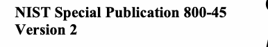
| C O M P U T | E R S E C U R I T Y |
Reports on Computer Systems Technology
コンピュータシステム技術に関する報告書
The Information Technology Laboratory (ITL) at the National Institute of Standards and Technology (NIST) promotes the U.S. economy and public welfare by providing technical leadership for the Nation’s measurement and standards infrastructure. ITL develops tests, test methods, reference data, proof of concept implementations, and technical analysis to advance the development and productive use of information technology. ITL’s responsibilities include the development of technical, physical, administrative, and management standards and guidelines for the cost-effective security and privacy of sensitive unclassified information in Federal computer systems. This Special Publication 800-series reports on ITL’s research, guidance, and outreach efforts in computer security, and its collaborative activities with industry, government, and academic organizations.
国立標準技術研究所（NIST）の情報技術研究所（ITL）は、米国の計量・標準インフラに技術的リーダーシップを提供することにより、米国経済と公共の福祉を促進する。ITLは、情報技術の発展と生産的な利用を推進するため、試験、試験方法、参照データ、概念実証実装、および技術分析を開発する。ITLの責務には、連邦政府のコンピュータシステムにおける機密扱いではない情報の費用対効果の高いセキュリティおよびプライバシーを確保するための、技術的、物理的、行政的、および管理的な標準とガイドラインの策定が含まれる。この特別刊行物800シリーズは、コンピュータセキュリティに関するITLの研究、ガイダンス、普及活動、および産業界、政府、学術機関との協力活動を報告する。
National Institute of Standards and Technology Special Publication 800-45 Version 2 Natl. Inst. Stand. Technol. Spec. Publ. 800-45 Version 2, 139 pages (Feb. 2007)
国立標準技術研究所 特別刊行物800-45 バージョン2 Natl. Inst. Stand. Technol. Spec. Publ. 800-45 Version 2、139ページ（2007年二月）
未レビュー訳原本PDFの抜粋画像
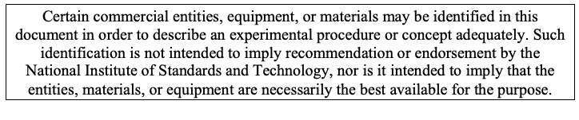
Acknowledgements, Version 2
謝辞、バージョン2
The authors, Wayne Jansen and Karen Scarfone of NIST, Miles Tracy of Federal Reserve Information Technology, and Jason Butterfield of Booz Allen Hamilton, wish to express their thanks to colleagues at both organizations who reviewed drafts of this document. In particular, their appreciation goes to Linda Antil, Rick Ayers, Bill Burr, Tim Grance, and Tim Polk from NIST for their research, technical support, and written contributions to this version of the document. The authors would also like to express their thanks to all those who contributed input during the public comment period and who assisted with our internal review process.
NISTのWayne JansenおよびKaren Scarfone、Federal Reserve Information TechnologyのMiles Tracy、ならびにBooz Allen HamiltonのJason Butterfieldである著者は、本書の草案を査読した両組織の同僚に感謝する。特に、本書の本バージョンに関する調査、技術支援、および文書による貢献に対し、NISTのLinda Antil、Rick Ayers、Bill Burr、Tim Grance、Tim Polkに謝意を表する。また、公開意見募集期間中に意見を寄せ、本書の内部査読プロセスを支援したすべての方々にも感謝する。
Acknowledgements, Original Version
謝辞、初版
The authors, Wayne Jansen of NIST and Scott Bisker and Miles Tracy of Booz Allen Hamilton (BAH), wish to express their thanks to colleagues at both organizations who reviewed drafts of this document. In particular, their appreciation goes to John Wack, Murugiah Souppaya, and Tim Grance from NIST, and Steve Allison, Alexis Feringa, Jonathan Holleran, Kevin Kuhlkin, and Mark McLarnon from BAH, for their research, technical support, and written contributions to this document. The authors would also like to express their thanks to all those who contributed input during the public comment period and who assisted with our internal review process.
NISTのWayne Jansen、Booz Allen Hamilton（BAH）のScott BiskerおよびMiles Tracyである著者は、本書の草案を査読した両組織の同僚に感謝する。特に、本書への調査、技術支援、および文書による貢献に対し、NISTのJohn Wack、Murugiah Souppaya、Tim Grance、ならびにBAHのSteve Allison、Alexis Feringa、Jonathan Holleran、Kevin Kuhlkin、Mark McLarnonに謝意を表する。また、公開意見募集期間中に意見を寄せ、本書の内部査読プロセスを支援したすべての方々にも感謝する。
Table of Contents
目次
Executive Summary..............................................................................................................ES-1
エグゼクティブサマリー..............................................................................................................ES-1
未レビュー訳1. Introduction ......................................................................................................................1-1
1. はじめに ......................................................................................................................1-1
1.1 Authority...................................................................................................................1-1
1.1 権限...................................................................................................................1-1
未レビュー訳1.2 Purpose and Scope .................................................................................................1-1
1.2 目的および適用範囲 .................................................................................................1-1
未レビュー訳1.3 Audience and Assumptions .....................................................................................1-2
1.3 対象読者および前提 .....................................................................................1-2
未レビュー訳1.4 Document Organization ...........................................................................................1-2
1.4 文書の構成 ...........................................................................................1-2
未レビュー訳2. Background and Standards ............................................................................................2-1
2. 背景および標準 ............................................................................................2-1
2.1 Background..............................................................................................................2-1
2.1 背景..............................................................................................................2-1
未レビュー訳2.2 Multipurpose Internet Mail Extensions .....................................................................2-2
2.2 多目的インターネットメール拡張 .....................................................................2-2
未レビュー訳2.3 Mail Transport Standards.........................................................................................2-3
2.3 メール転送標準.........................................................................................2-3
未レビュー訳2.3.1 Simple Mail Transfer Protocol ......................................................................2-3
2.3.1 簡易メール転送プロトコル ......................................................................2-3
未レビュー訳2.3.2 Simple Mail Transfer Protocol Extensions....................................................2-4
2.3.2 簡易メール転送プロトコル拡張....................................................2-4
未レビュー訳2.3.3 Proprietary Mail Transports ..........................................................................2-6
2.3.3 独自メール転送方式 ..........................................................................2-6
未レビュー訳2.4 Client Access Standards..........................................................................................2-6
2.4 クライアントアクセス標準..........................................................................................2-6
未レビュー訳2.4.1 Post Office Protocol......................................................................................2-7
2.4.1 ポストオフィスプロトコル......................................................................................2-7
未レビュー訳2.4.2 Internet Message Access Protocol...............................................................2-8
2.4.2 インターネットメッセージアクセスプロトコル...............................................................2-8
未レビュー訳2.4.3 Proprietary Mailbox Access Mechanisms.....................................................2-9
2.4.3 独自メールボックスアクセス機構.....................................................2-9
未レビュー訳2.4.4 Web-Based Mail Access...............................................................................2-9
2.4.4 Webベースのメールアクセス...............................................................................2-9
未レビュー訳3. Signing and Encrypting Email Messages......................................................................3-1
3. 電子メールメッセージの署名および暗号化......................................................................3-1
未レビュー訳3.1 OpenPGP.................................................................................................................3-2
3.1 OpenPGP.................................................................................................................3-2
未レビュー訳3.2 S/MIME ....................................................................................................................3-4
3.2 S/MIME ....................................................................................................................3-4
未レビュー訳3.3 Key Management.....................................................................................................3-4
3.3 鍵管理.....................................................................................................3-4
未レビュー訳3.4 Issues with Email Encryption ...................................................................................3-5
3.4 電子メール暗号化に関する問題 ...................................................................................3-5
未レビュー訳4. Planning and Managing Mail Servers.............................................................................4-1
4. メールサーバーの計画および管理.............................................................................4-1
未レビュー訳4.1 Installation and Deployment Planning......................................................................4-1
4.1 インストールと導入の計画 ............................................................ 4-1
未レビュー訳4.2 Security Management Staff......................................................................................4-3
4.2 セキュリティ管理担当者 ...................................................................... 4-3
未レビュー訳4.2.1 Senior IT Management/Chief Information Officer (CIO) ...............................4-3
4.2.1 上級IT管理者／最高情報責任者（CIO） .......................................... 4-3
未レビュー訳4.2.2 Information Systems Security Program Managers .......................................4-3
4.2.2 情報システムセキュリティプログラム管理者 ............................... 4-3
未レビュー訳4.2.3 Information Systems Security Officers .........................................................4-4
4.2.3 情報システムセキュリティ担当者 ................................................. 4-4
未レビュー訳4.2.4 Mail Server and Network Administrators ......................................................4-4
4.2.4 メールサーバーおよびネットワーク管理者 .................................. 4-4
未レビュー訳4.3 Management Practices ............................................................................................4-4
4.3 管理上の実務 ........................................................................................ 4-4
未レビュー訳4.4 System Security Plan...............................................................................................4-5
4.4 システムセキュリティ計画 ................................................................... 4-5
未レビュー訳4.5 Human Resources Requirements............................................................................4-7
4.5 人的資源に関する要件 .......................................................................... 4-7
未レビュー訳4.6 General Information System Security Principles......................................................4-7
4.6 情報システムセキュリティの一般原則 .............................................. 4-7
未レビュー訳4.7 Checklist for Planning and Managing Mail Servers .................................................4-9
4.7 メールサーバーの計画および管理のチェックリスト ...................... 4-9
未レビュー訳5. Securing the Mail Server Operating System .................................................................5-1
5. メールサーバーのオペレーティングシステムの保護 .......................... 5-1
未レビュー訳5.1 Updating and Configuring the Operating System ....................................................5-2
5.1 オペレーティングシステムの更新と構成 .......................................... 5-2
未レビュー訳5.1.1 Patch and Upgrade Operating System.........................................................5-2
5.1.1 オペレーティングシステムへのパッチ適用とアップグレード ........ 5-2
未レビュー訳5.1.2 Remove or Disable Unnecessary Services and Applications.......................5-2
5.1.2 不要なサービスとアプリケーションの削除または無効化 ............. 5-2
未レビュー訳5.1.3 Configure Operating System User Authentication........................................5-4
5.1.3 オペレーティングシステムのユーザー認証の構成 ............................ 5-4
未レビュー訳5.1.4 Configure Resource Controls Appropriately .................................................5-6
5.1.4 リソース制御の適切な構成 ............................................................... 5-6
未レビュー訳5.1.5 Install and Configure Additional Security Controls .......................................5-6
5.1.5 追加のセキュリティ制御のインストールと構成 ............................ 5-6
未レビュー訳5.2 Security Testing the Operating System ...................................................................5-7
5.2 オペレーティングシステムのセキュリティ試験 ............................... 5-7
未レビュー訳5.3 Checklist for Securing the Mail Server Operating System .......................................5-7
5.3 メールサーバーのオペレーティングシステム保護チェックリスト ... 5-7
未レビュー訳6. Securing Mail Servers and Content................................................................................6-1
6. メールサーバーとコンテンツの保護 .......................................................... 6-1
未レビュー訳6.1 Hardening the Mail Server Application.....................................................................6-1 6.1.1 Securely Installing the Mail Server ...............................................................6-1 6.1.2 Configuring Operating System and Mail Server Access Controls ................6-1 6.2 Protecting Email from Malware ................................................................................6-3 6.2.1 Malware Scanning........................................................................................6-5 6.2.2 Content Filtering ...........................................................................................6-9 6.2.3 User Awareness .........................................................................................6-12 6.3 Blocking Spam-Sending Servers ...........................................................................6-13 6.4 Authenticated Mail Relay .......................................................................................6-14 6.5 Secure Access.......................................................................................................6-14 6.6 Enabling Web Access ............................................................................................6-15 6.7 Checklist for Securing Mail Servers and Content ..................................................6-16
6.1 メールサーバーアプリケーションの強化 .......................................... 6-1；6.1.1 メールサーバーの安全なインストール .............................. 6-1；6.1.2 オペレーティングシステムとメールサーバーのアクセス制御の構成 ... 6-1；6.2 マルウェアからの電子メール保護 .............................................. 6-3；6.2.1 マルウェアのスキャン ......................................................... 6-5；6.2.2 コンテンツフィルタリング .................................................. 6-9；6.2.3 ユーザーへの啓発 .............................................................. 6-12；6.3 スパム送信サーバーの遮断 ....................................................... 6-13；6.4 認証付きメール中継 ................................................................. 6-14；6.5 安全なアクセス ........................................................................ 6-14；6.6 Webアクセスの有効化 ............................................................ 6-15；6.7 メールサーバーとコンテンツを保護するためのチェックリスト ... 6-16
7. Implementing a Secure Network Infrastructure ............................................................7-1
7. セキュアなネットワークインフラストラクチャの実装 .......................... 7-1
7.1 Network Composition and Structure ........................................................................7-1 7.1.1 Inadvisable Network Layout .........................................................................7-1 7.1.2 Demilitarized Zone........................................................................................7-1 7.1.3 Mail Gateways..............................................................................................7-4 7.1.4 Management Network ..................................................................................7-5 7.2 Network Element Configuration ...............................................................................7-5 7.2.1 Router/Firewall Configuration.......................................................................7-5 7.2.2 Intrusion Detection and Prevention Systems................................................7-8 7.2.3 Network Switches.......................................................................................7-11 7.3 Checklist for Implementing a Secure Network Infrastructure.................................7-12
7.1 ネットワークの構成と構造 ............................................................... 7-1；7.1.1 推奨されないネットワーク配置 ........................................ 7-1；7.1.2 非武装地帯（DMZ） .......................................................... 7-1；7.1.3 メールゲートウェイ .......................................................... 7-4；7.1.4 管理ネットワーク ............................................................. 7-5；7.2 ネットワーク構成要素の設定 .................................................... 7-5；7.2.1 ルーター／ファイアウォールの設定 ................................ 7-5；7.2.2 侵入検知・防止システム ................................................... 7-8；7.2.3 ネットワークスイッチ .................................................... 7-11；7.3 セキュアなネットワークインフラストラクチャを実装するためのチェックリスト ... 7-12
8. Securing Mail Clients.......................................................................................................8-1
8. メールクライアントの保護 ........................................................................ 8-1
未レビュー訳8.1 Installing and Configuring Client Applications..........................................................8-1 8.1.1 Patching and Updating Mail Clients..............................................................8-1 8.1.2 Configuring Mail Client Security Features ....................................................8-1 8.1.3 Configuring Authentication and Access........................................................8-2 8.1.4 Securing the Client Host’s Operating System ..............................................8-3 8.2 Secure Message Composition .................................................................................8-4 8.3 Plug-ins....................................................................................................................8-5 8.4 Accessing Web-Based Mail Systems ......................................................................8-5 8.5 Checklist for Securing Mail Clients ..........................................................................8-6
8.1 クライアントアプリケーションのインストールと構成 ..................... 8-1；8.1.1 メールクライアントへのパッチ適用と更新 ........................ 8-1；8.1.2 メールクライアントのセキュリティ機能の構成 ................ 8-1；8.1.3 認証とアクセスの構成 ...................................................... 8-2；8.1.4 クライアントホストのオペレーティングシステムの保護 ... 8-3；8.2 セキュアなメッセージ作成 ....................................................... 8-4；8.3 プラグイン ................................................................................. 8-5；8.4 Webベースのメールシステムへのアクセス ............................... 8-5；8.5 メールクライアント保護のチェックリスト ............................ 8-6
未レビュー訳9. Administering the Mail Server ........................................................................................9-1
9. メールサーバーの管理 ................................................................................. 9-1
未レビュー訳9.1 Logging ....................................................................................................................9-1 9.1.1 Recommended Generic Logging Configuration ...........................................9-1 9.1.2 Log File Review and Retention.....................................................................9-3 9.1.3 Automated Log File Analysis Tools ..............................................................9-4 9.2 Backing Up Mail Servers..........................................................................................9-4 9.3 Recovering from a Security Compromise ................................................................9-6 9.4 Security Testing Mail Servers ..................................................................................9-8 9.4.1 Vulnerability Scanning..................................................................................9-8 9.4.2 Penetration Testing ......................................................................................9-9 9.5 Remotely Administering a Mail Server...................................................................9-10 9.6 Checklist for Administering the Mail Server ...........................................................9-11
9.1 ロギング ........................................................................................ 9-1；9.1.1 推奨される一般的なロギング構成 ..................................... 9-1；9.1.2 ログファイルの確認と保存 ............................................... 9-3；9.1.3 自動ログファイル分析ツール ............................................ 9-4；9.2 メールサーバーのバックアップ ................................................ 9-4；9.3 セキュリティ侵害からの復旧 .................................................... 9-6；9.4 メールサーバーのセキュリティ試験 .......................................... 9-8；9.4.1 脆弱性スキャン .................................................................. 9-8；9.4.2 侵入テスト .......................................................................... 9-9；9.5 メールサーバーのリモート管理 ............................................... 9-10；9.6 メールサーバー管理のチェックリスト ................................... 9-11
未レビュー訳Appendices
付録
未レビュー訳Appendix A— Glossary .......................................................................................................... A-1
付録A ― 用語集 ................................................................................................ A-1
未レビュー訳Appendix B— Email-Related RFCs ....................................................................................... B-1
付録B ― 電子メール関連RFC ....................................................................... B-1
未レビュー訳Appendix C— References ...................................................................................................... C-1
付録C ― 参考文献 ............................................................................................ C-1
未レビュー訳Appendix D— Email Security Tools and Applications ........................................................ D-1
付録D ― 電子メールセキュリティのツールとアプリケーション ............. D-1
未レビュー訳Appendix E— Online Email Security Resources ................................................................. E-1
付録E ― 電子メールセキュリティに関するオンライン資料 ................... E-1
未レビュー訳Appendix F— Email Security Checklists .............................................................................. F-1
付録F ― 電子メールセキュリティのチェックリスト ............................... F-1
未レビュー訳Appendix G— Acronym List ..................................................................................................G-1
付録G ― 頭字語一覧 ........................................................................................ G-1
未レビュー訳Appendix H— Index ................................................................................................................ H-1
付録H ― 索引 .................................................................................................... H-1
未レビュー訳List of Tables and Figures
表および図の一覧
Figure 2.1: Example of Message Flow.......................................................................................2-2
図2.1：メッセージフローの例 ........................................................................... 2-2
未レビュー訳Figure 2.2: SMTP Commands ...................................................................................................2-4
図2.2：SMTPコマンド ........................................................................................ 2-4
未レビュー訳Figure 2.3: Sample SMTP Conversation ...................................................................................2-4
図2.3：SMTP通信の例 ........................................................................................ 2-4
未レビュー訳Figure 2.4: Sample ESMTP Conversation .................................................................................2-5
図2.4：ESMTP通信の例 ...................................................................................... 2-5
未レビュー訳Figure 2.5: POP3 Commands....................................................................................................2-7
図2.5：POP3コマンド ......................................................................................... 2-7
未レビュー訳Figure 2.6: IMAP 4 Revision 1 Commands................................................................................2-8
図2.6：IMAP 4 Revision 1コマンド .................................................................... 2-8
未レビュー訳Figure 6.1: Malware Scanning Implemented on Firewall ...........................................................6-6
図6.1：ファイアウォールに実装したマルウェアスキャン ......................... 6-6
未レビュー訳Figure 6.2: Malware Scanning Implemented on Mail Server .....................................................6-7
図6.2：メールサーバーに実装したマルウェアスキャン ......................... 6-7
未レビュー訳Figure 6.3: Malware Scanning Implemented on User Workstations ..........................................6-9
図6.3：ユーザーワークステーションに実装したマルウェアスキャン ..... 6-9
未レビュー訳Figure 6.4: Sendmail TLS Configuration Example from sendmail.mc......................................6-15
図6.4：sendmail.mcを使用したSendmail TLS構成例 ............................... 6-15
未レビュー訳Figure 7.1: Simple Single-Firewall DMZ ....................................................................................7-2
図7.1：単一ファイアウォールによるシンプルなDMZ ............................ 7-2
未レビュー訳Figure 7.2: Two-Firewall DMZ....................................................................................................7-3
図7.2：2台のファイアウォールによるDMZ ............................................ 7-3
未レビュー訳Figure 7.3: Three-Interface Firewall DMZ ..................................................................................7-3
図7.3：3インターフェースのファイアウォールによるDMZ .................. 7-3
未レビュー訳Figure 7.4: Mail Gateway...........................................................................................................7-5
図7.4：メールゲートウェイ ............................................................................ 7-5
未レビュー訳This page has been left blank intentionally.
このページは意図的に空白にしてある。
未レビュー訳Executive Summary
概要
未レビュー訳Electronic mail (email) is perhaps the most popularly used system for exchanging business information over the Internet (or any other computer network). At the most basic level, the email process can be divided into two principal components: (1) mail servers, which are hosts that deliver, forward, and store email; and (2) mail clients, which interface with users and allow users to read, compose, send, and store email. This document addresses the security issues of mail servers and mail clients, including Web-based access to mail.
電子メール（email）は、インターネット（またはその他のコンピューターネットワーク）上で業務情報を交換するために、おそらく最も広く利用されているシステムである。最も基本的なレベルでは、電子メールの処理は2つの主要な要素に分けられる。(1) 電子メールを配信、転送、保存するホストであるメールサーバー、(2) ユーザーとのインターフェースとなり、電子メールの閲覧、作成、送信、保存を可能にするメールクライアントである。本書では、Webベースのアクセスを含む、メールサーバーとメールクライアントのセキュリティ問題を扱う。
Mail servers and user workstations running mail clients are frequently targeted by attackers. Because the computing and networking technologies that underlie email are ubiquitous and well-understood by many, attackers are able to develop attack methods to exploit security weaknesses. Mail servers are also targeted because they (and public Web servers) must communicate to some degree with untrusted third parties. Additionally, mail clients have been targeted as an effective means of inserting malware into machines and of propagating this code to other machines. As a result, mail servers, mail clients, and the network infrastructure that supports them must be protected. Examples of email security issues include the following:
メールサーバーと、メールクライアントを実行するユーザーワークステーションは、攻撃者に狙われることが多い。電子メールを支えるコンピューティング技術やネットワーク技術は広く普及し、多くの人に理解されているため、攻撃者はセキュリティ上の弱点を悪用する攻撃手法を開発できる。メールサーバー（および公開Webサーバー）も、信頼できない第三者とある程度通信する必要があるため、攻撃対象となる。さらに、メールクライアントは、マルウェアを機器に侵入させ、ほかの機器へ拡散させる効果的な手段として狙われている。そのため、メールサーバー、メールクライアント、およびそれらを支えるネットワークインフラストラクチャを保護しなければならない。電子メールのセキュリティ問題の例を以下に示す。
(cid:31) To exchange email with the outside world, a requirement for most organizations, it is allowed through organizations’ network perimeter defenses. At a basic level, viruses and other types of malware may be distributed throughout an organization via email. Increasingly, however, attackers are getting more sophisticated and using email to deliver targeted zero-day attacks in an attempt to compromise users’ workstations within the organization’s internal network.
・ほとんどの組織にとって必要な、外部との電子メール交換を可能にするため、電子メールは組織のネットワーク境界防御を通過するよう許可されている。基本的なレベルでは、ウイルスなどのマルウェアが電子メールを介して組織内に配布される可能性がある。しかし近年、攻撃者はますます巧妙になり、標的型のゼロデイ攻撃を電子メールで送り、組織内部のネットワーク上にあるユーザーワークステーションの侵害を試みている。
未レビュー訳(cid:31) Given email’s nature of human to human communication, it can be used as a social engineering vehicle. Email can allow an attacker to exploit an organization’s users to gather information or get the users to perform actions that further an attack.
・電子メールは人と人とのコミュニケーション手段であるため、ソーシャルエンジニアリングに利用される可能性がある。攻撃者は電子メールを使って組織のユーザーから情報を集めたり、攻撃を助長する行為をユーザーに実行させたりできる。
未レビュー訳(cid:31) Flaws in the mail server application may be used as the means of compromising the underlying server and hence the attached network. Examples of this unauthorized access include gaining access to files or folders that were not meant to be publicly accessible, and being able to execute commands and/or install software on the mail server.
・メールサーバーアプリケーションの欠陥を悪用し、基盤となるサーバー、ひいては接続先ネットワークを侵害する可能性がある。この不正アクセスの例として、公開を意図していないファイルやフォルダーへのアクセス、メールサーバー上でのコマンド実行やソフトウェアのインストールが挙げられる。
未レビュー訳(cid:31) Denial of service (DoS) attacks may be directed to the mail server or its support network infrastructure, denying or hindering valid users from using the mail server.
・メールサーバーまたはその支援ネットワークインフラストラクチャを対象とするサービス拒否（DoS）攻撃によって、正規ユーザーがメールサーバーを利用できなくなったり、利用を妨げられたりする可能性がある。
未レビュー訳(cid:31) Sensitive information on the mail server may be read by unauthorized individuals or changed in an unauthorized manner.
・メールサーバー上の機密情報が、権限のない者に読み取られたり、不正な方法で変更されたりする可能性がある。
未レビュー訳(cid:31) Sensitive information transmitted unencrypted between mail server and client may be intercepted. All popular email communication standards default to sending usernames, passwords, and email messages unencrypted.
・メールサーバーとクライアント間で暗号化されずに送信される機密情報が傍受される可能性がある。一般的な電子メール通信標準では、ユーザー名、パスワード、電子メールメッセージは既定で暗号化されずに送信される。
未レビュー訳(cid:31) Information within email messages may be altered at some point between the sender and recipient.
・送信者から受信者に届くまでのどこかで、電子メールメッセージ内の情報が改変される可能性がある。
未レビュー訳(cid:31) Malicious entities may gain unauthorized access to resources elsewhere in the organization’s network via a successful attack on the mail server. For example, once the mail server is compromised, an attacker could retrieve users’ passwords, which may grant the attacker access to other hosts on the organization’s network.
・メールサーバーホストへの攻撃が成功すると、悪意ある者が組織ネットワーク内の別のリソースに不正アクセスする可能性がある。たとえばメールサーバーを侵害した攻撃者がユーザーのパスワードを取得し、それを使って組織ネットワーク上のほかのホストにアクセスできる場合がある。
未レビュー訳(cid:31) Malicious entities may attack external organizations from a successful attack on a mail server host.
・メールサーバーホストへの攻撃が成功すると、悪意ある者が外部の組織を攻撃する可能性がある。
未レビュー訳(cid:31) Misconfiguration may allow malicious entities to use the organization’s mail server to send email-based advertisements (i.e., spam).
・設定ミスにより、悪意ある者が組織のメールサーバーを使って電子メール広告（すなわちスパム）を送信できる場合がある。
未レビュー訳(cid:31) Users may send inappropriate, proprietary, or other sensitive information via email. This could expose the organization to legal action.
・ユーザーが不適切な情報、専有情報、その他の機密情報を電子メールで送信する可能性がある。これにより、組織が法的措置を受けるおそれがある。
未レビュー訳This document is intended to assist organizations in installing, configuring, and maintaining secure mail servers and mail clients. More specifically, this document discusses the following items in detail:
本書は、組織が安全なメールサーバーとメールクライアントをインストール、構成、保守するための支援を目的とする。具体的には、次の項目を詳しく説明する。
(cid:31) Email standards and their security implications
・電子メール標準と、それらがセキュリティに及ぼす影響
未レビュー訳(cid:31) Email message signing and encryption standards
・電子メールメッセージの署名および暗号化に関する標準
未レビュー訳(cid:31) Planning and management of mail servers
・メールサーバーの計画と管理
未レビュー訳(cid:31) Securing the operating system underlying a mail server
・メールサーバーの基盤となるオペレーティングシステムの保護
未レビュー訳(cid:31) Mail server application security
・メールサーバーアプリケーションのセキュリティ
未レビュー訳(cid:31) Email content filtering
・電子メールのコンテンツフィルタリング
未レビュー訳(cid:31) Email-specific considerations in the deployment and configuration of network protection mechanisms, such as firewalls, routers, switches, and intrusion detection and intrusion prevention systems
・ファイアウォール、ルーター、スイッチ、侵入検知・防止システムなど、ネットワーク保護機構の導入と構成における電子メール固有の考慮事項
未レビュー訳(cid:31) Securing mail clients
・メールクライアントの保護
未レビュー訳(cid:31) Administering the mail server in a secure manner, including backups, security testing, and log reviews.
・バックアップ、セキュリティ試験、ログ確認など、安全な方法でのメールサーバー管理。
未レビュー訳The following key guidelines are recommended to Federal departments and agencies for maintaining a secure mail server.
連邦政府の各省庁および機関には、安全なメールサーバーを維持するため、次の主要な指針が推奨される。
Organizations should carefully plan and address the security aspects of the deployment of a mail server.
組織は、メールサーバーの導入に伴うセキュリティ面を慎重に計画し、対処すべきである。
As it is much more difficult to address security once deployment and implementation have occurred, security should be considered from the initial planning stage. Organizations are more likely to make decisions about configuring computers appropriately and consistently when they develop and use a detailed, well-designed deployment plan. Developing such a plan will support mail server administrators in making the inevitable tradeoff decisions between usability, performance, and risk.
導入と実装が完了した後にセキュリティへ対処するのははるかに難しいため、初期の計画段階からセキュリティを考慮すべきである。詳細で適切に設計された導入計画を策定し、それに従うことで、コンピューターを適切かつ一貫して構成する判断を下しやすくなる。そのような計画を策定すれば、メールサーバー管理者が、使いやすさ、性能、リスクの間で避けられないトレードオフを判断する助けとなる。
Organizations often fail to take into consideration the human resource requirements for both deployment and operational phases of the mail server and supporting infrastructure. Organizations should address the following points in a deployment plan:
組織では、メールサーバーとその支援インフラストラクチャの導入段階および運用段階の両方に必要な人員を考慮しないことが多い。組織は、導入計画で次の点に対処すべきである。
(cid:31) Types of personnel required (e.g., system and mail server administrators, network administrators, information systems security officers)
・必要な職種（システム管理者、メールサーバー管理者、ネットワーク管理者、情報システムセキュリティ担当者など）
未レビュー訳(cid:31) Skills and training required by assigned personnel
・担当者に必要なスキルと研修
未レビュー訳(cid:31) Availability of personnel.
・担当者の確保可能性。
未レビュー訳Organizations should implement appropriate security management practices and controls when maintaining and operating a secure mail server.
組織は、安全なメールサーバーを維持および運用する際、適切なセキュリティ管理の実務と制御を実施すべきである。
Appropriate management practices are essential to operating and maintaining a secure mail server. Security practices entail the identification of an organization’s information system assets and the development, documentation, and implementation of policies, standards, procedures, and guidelines that help to ensure the confidentiality, integrity, and availability of information system resources.
適切な管理の実務は、安全なメールサーバーを運用し維持するうえで不可欠である。セキュリティの実務には、組織の情報システム資産の特定と、情報システム資源の機密性、完全性、可用性を確保するための方針、標準、手順、指針の策定、文書化、実施が含まれる。
To ensure the security of a mail server and the supporting network infrastructure, the following practices should be implemented:
メールサーバーと、それを支えるネットワークインフラストラクチャのセキュリティを確保するため、次の実務を実施すべきである。
(cid:31) Organization-wide information system security policy
・組織全体に適用する情報システムセキュリティ方針
未レビュー訳(cid:31) Configuration/change control and management
・構成管理／変更管理
未レビュー訳(cid:31) Risk assessment and management
・リスク評価とリスク管理
未レビュー訳(cid:31) Standardized software configurations that satisfy the information system security policy
・情報システムセキュリティ方針を満たす標準化されたソフトウェア構成
未レビュー訳(cid:31) Security awareness and training
・セキュリティ意識向上と研修
未レビュー訳(cid:31) Contingency, continuity of operations, and disaster recovery planning
・緊急時対応、業務継続、災害復旧の計画
未レビュー訳(cid:31) Certification and accreditation.
・認証と認定。
未レビュー訳Organizations should ensure that the mail server operating system is deployed, configured, and managed to meet the security requirements of the organization.
組織は、メールサーバーのオペレーティングシステムが、組織のセキュリティ要件を満たすように導入、構成、管理されることを確保すべきである。
The first step in securing a mail server is securing the underlying operating system. Most commonly available mail servers operate on a general-purpose operating system. Many security issues can be avoided if the operating systems underlying mail servers are configured appropriately. Default hardware and software configurations are typically set by manufacturers to emphasize features, functions, and ease of use at the expense of security. Because manufacturers are not aware of each organization’s security needs, each mail server administrator must configure new servers to reflect their organization’s security requirements and reconfigure them as those requirements change. Using security configuration guides or checklists can assist administrators in securing systems consistently and efficiently. Securing an operating system would generally include the following steps:
メールサーバーを保護する最初の手順は、その基盤となるオペレーティングシステムを保護することである。一般に利用できるメールサーバーの多くは、汎用オペレーティングシステム上で動作する。基盤となるオペレーティングシステムを適切に構成すれば、多くのセキュリティ問題を回避できる。既定のハードウェアおよびソフトウェア構成は、通常、セキュリティよりも機能や使いやすさを重視してメーカーが設定している。メーカーは各組織のセキュリティ要件を把握していないため、メールサーバー管理者は、新しいサーバーを組織の要件に合わせて構成し、その要件の変更に応じて再構成しなければならない。セキュリティ構成ガイドやチェックリストを使うと、管理者はシステムを一貫性のある効率的な方法で保護できる。一般に、オペレーティングシステムの保護には次の手順が含まれる。
(cid:31) Patching and updating the operating system
・オペレーティングシステムへのパッチ適用と更新
未レビュー訳(cid:31) Removing or disabling unnecessary services and applications
・不要なサービスおよびアプリケーションの削除または無効化
未レビュー訳(cid:31) Configuring operating system user authentication
・オペレーティングシステムのユーザー認証の構成
未レビュー訳(cid:31) Configuring resource controls
・リソース制御の構成
未レビュー訳(cid:31) Installing and configuring additional security controls, if needed
・必要に応じて、追加のセキュリティ制御をインストールし、構成する
未レビュー訳(cid:31) Performing security tests on the operating system.
・オペレーティングシステムのセキュリティ試験を実施する。
未レビュー訳Organizations should ensure that the mail server application is deployed, configured, and managed to meet the security requirements of the organization.
組織は、メールサーバーアプリケーションが、組織のセキュリティ要件を満たすように導入、構成、管理されることを確保すべきである。
In many respects, the secure installation and configuration of the mail server application mirrors the operating system process discussed above. The overarching principle, as before, is to install the minimal mail server services required and eliminate any known vulnerabilities through patches or upgrades. If the installation program installs any unnecessary applications, services, or scripts, they should be removed immediately after the installation process completes. Securing the mail server application would generally include the following steps:
メールサーバーアプリケーションの安全なインストールと構成は、多くの点で前述したオペレーティングシステムの手順と同様である。基本原則も同じく、必要最小限のメールサーバーサービスをインストールし、既知の脆弱性をパッチやアップグレードで解消することである。インストールプログラムが不要なアプリケーション、サービス、スクリプトをインストールした場合、インストール完了後すぐに削除すべきである。一般に、メールサーバーアプリケーションの保護には次の手順が含まれる。
未レビュー訳(cid:31) Patch and upgrade the mail server application
・メールサーバーアプリケーションへのパッチ適用とアップグレード
未レビュー訳(cid:31) Remove or disable unnecessary services, applications, and sample content
・不要なサービス、アプリケーション、サンプルコンテンツの削除または無効化
未レビュー訳(cid:31) Configure mail server user authentication and access controls
・メールサーバーのユーザー認証とアクセス制御の構成
未レビュー訳(cid:31) Configure mail server resource controls
・メールサーバーのリソース制御の構成
未レビュー訳(cid:31) Test the security of the mail server application.
・メールサーバーアプリケーションのセキュリティ試験。
未レビュー訳Organizations should consider the implementation of cryptographic technologies to protect user authentication and email data.
組織は、ユーザー認証と電子メールデータを保護するため、暗号技術の導入を検討すべきである。
Most standard email protocols default to unencrypted user authentication and send email data in the clear (unencrypted). Sending this data in the clear may allow an attacker to easily compromise a user account and/or intercept and alter unencrypted emails. At a minimum, most organizations should encrypt the user authentication session even if they do not encrypt the email data itself. Encrypted user authentication is now supported by most standard and proprietary mailbox protocols.
ほとんどの標準的な電子メールプロトコルでは、ユーザー認証は既定で暗号化されず、電子メールデータも平文（暗号化されていない状態）で送信される。このようにデータを平文で送ると、攻撃者がユーザーアカウントを容易に侵害したり、暗号化されていない電子メールを傍受または改変したりする可能性がある。少なくとも、ほとんどの組織は電子メールデータ自体を暗号化しない場合でも、ユーザー認証セッションを暗号化すべきである。現在、ほとんどの標準的なメールボックスプロトコルと独自仕様のメールボックスプロトコルが、暗号化されたユーザー認証をサポートしている。
The issues involved with encrypted and signed email data are more complex. Encrypting and signing email places a greater load on the organization’s network infrastructure, may complicate malware scanning and email content filtering, and often requires significant administrative overhead. However, for many organizations the benefits of email encryption and signatures will outweigh the costs.
電子メールデータの暗号化と署名には、より複雑な問題が伴う。電子メールの暗号化と署名は組織のネットワークインフラストラクチャへの負荷を増し、マルウェアのスキャンや電子メールのコンテンツフィルタリングを難しくする場合があり、管理上の大きな負担を伴うことも多い。しかし、多くの組織では、電子メールの暗号化と署名による利点がコストを上回る。
Organizations should employ their network infrastructure to protect their mail server(s).
組織は、メールサーバーを保護するためにネットワークインフラストラクチャを活用すべきである。
The network infrastructure (e.g., firewalls, routers, intrusion detection systems) that supports the mail server plays a critical role in the security of the mail server. In most configurations, the network infrastructure will be the first line of defense between the Internet and a mail server. Network design alone, however, cannot protect a mail server. The frequency, sophistication, and variety of mail server attacks perpetrated today support the idea that mail server security must be implemented through layered and diverse protection mechanisms.
メールサーバーを支えるネットワークインフラストラクチャ（ファイアウォール、ルーター、侵入検知システムなど）は、メールサーバーのセキュリティにおいて重要な役割を果たす。多くの構成では、ネットワークインフラストラクチャがインターネットとメールサーバーの間の第一防御線となる。ただし、ネットワーク設計だけでメールサーバーを保護することはできない。現在行われているメールサーバー攻撃の頻度、巧妙さ、多様性を踏まえると、メールサーバーのセキュリティは、多層的で多様な保護機構を通じて実装しなければならない。
Organizations should ensure that the mail clients are deployed, configured, and used properly to meet the security requirements of the organization.
組織は、メールクライアントが組織のセキュリティ要件を満たすように導入、構成され、適切に使用されることを確保すべきである。
In many respects, the client side of email represents a greater risk to security than the mail server. Numerous issues need to be carefully considered and addressed to provide an appropriate level of security for mail clients. Securely installing, configuring, and using mail client applications would generally include the following steps:
多くの点で、電子メールのクライアント側はメールサーバーよりセキュリティ上のリスクが大きい。メールクライアントに適切なレベルのセキュリティを提供するには、多くの問題を慎重に検討し、対処する必要がある。メールクライアントアプリケーションを安全にインストール、構成、使用する手順には、一般に次のものが含まれる。
(cid:31) Patch and upgrade the mail client applications
・メールクライアントアプリケーションへのパッチ適用とアップグレード
未レビュー訳(cid:31) Configure mail client security features, such as disabling automatic opening of messages and enabling anti-spam and anti-phishing features
・メッセージの自動表示を無効にし、迷惑メール対策とフィッシング対策機能を有効にするなど、メールクライアントのセキュリティ機能を構成する
未レビュー訳(cid:31) Configure mailbox authentication and access
・メールボックスの認証とアクセスを構成する
未レビュー訳(cid:31) Secure the client host’s operating system.
・クライアントホストのオペレーティングシステムを保護する。
未レビュー訳Maintaining the security of a mail server is an ongoing process.
メールサーバーのセキュリティ維持は、継続的なプロセスである。
Maintaining a secure mail server requires constant effort, resources, and vigilance from an organization. Securely administering a mail server on a daily basis is an essential aspect of mail server security. Maintaining the security of a mail server will usually involve the following steps:
安全なメールサーバーを維持するには、組織が絶えず努力し、リソースを投入し、警戒を続ける必要がある。日々の安全なメールサーバー管理は、メールサーバーのセキュリティに不可欠な要素である。メールサーバーのセキュリティ維持には、通常、次の手順が含まれる。
(cid:31) Configuring, protecting, and analyzing log files
・ログファイルの構成、保護、分析
未レビュー訳(cid:31) Backing up data frequently
・データの定期的なバックアップ
未レビュー訳(cid:31) Protecting against malware (e.g., viruses, worms, Trojan horses)
・マルウェア（ウイルス、ワーム、トロイの木馬など）からの保護
未レビュー訳(cid:31) Establishing and following procedures for recovering from compromise
・侵害からの復旧手順を策定し、遵守すること
未レビュー訳(cid:31) Testing and applying patches in a timely manner
・適時にパッチを試験して適用すること
未レビュー訳(cid:31) Testing security periodically.
・セキュリティを定期的に試験すること。
未レビュー訳This page has been left blank intentionally.
このページは意図的に空白にしてある。
1. Introduction
1. はじめに
未レビュー訳1.1 Authority
1.1 権限
The National Institute of Standards and Technology (NIST) developed this document in furtherance of its statutory responsibilities under the Federal Information Security Management Act (FISMA) of 2002, Public Law 107-347.
米国国立標準技術研究所（NIST）は、2002年の連邦情報セキュリティマネジメント法（FISMA）、公法107-347に基づく法定責務を果たすため、本書を策定した。
NIST is responsible for developing standards and guidelines, including minimum requirements, for providing adequate information security for all agency operations and assets, but such standards and guidelines shall not apply to national security systems. This guideline is consistent with the requirements of the Office of Management and Budget (OMB) Circular A-130, Section 8b(3), “Securing Agency Information Systems,” as analyzed in A-130, Appendix IV: Analysis of Key Sections. Supplemental information is provided in A-130, Appendix III.
NISTは、すべての機関の業務と資産に適切な情報セキュリティを提供するための、最低要件を含む標準と指針を策定する責任を負うが、これらの標準と指針は国家安全保障システムには適用されない。本指針は、行政管理予算局（OMB）通達A-130第8b(3)節「政府機関の情報システムの保護」の要件と整合しており、その内容はA-130付録IV「主要な節の分析」で分析されている。補足情報はA-130付録IIIに記載されている。
This guideline has been prepared for use by Federal agencies. It may be used by nongovernmental organizations on a voluntary basis and is not subject to copyright, though attribution is desired.
本指針は連邦政府機関向けに作成された。政府以外の組織も任意で利用でき、著作権の対象ではないが、出典を明記することが望ましい。
Nothing in this document should be taken to contradict standards and guidelines made mandatory and binding on Federal agencies by the Secretary of Commerce under statutory authority, nor should these guidelines be interpreted as altering or superseding the existing authorities of the Secretary of Commerce, Director of the OMB, or any other Federal official.
本書のいかなる記述も、法的権限に基づいて商務長官が連邦政府機関に義務付けた標準や指針に反するものと解釈してはならない。また、本指針は、商務長官、OMB長官、その他の連邦政府職員が持つ既存の権限を変更または置き換えるものと解釈してはならない。
1.2 Purpose and Scope
1.2 目的と適用範囲
The purpose of the Guidelines on Electronic Mail Security is to recommend security practices for designing, implementing, and operating email systems on public and private networks. While intended as recommended guidance for Federal departments and agencies, it may be used in the private sector on a voluntary basis.
「電子メールセキュリティのガイドライン」の目的は、パブリックネットワークおよびプライベートネットワーク上の電子メールシステムを設計、実装、運用するためのセキュリティ実務を推奨することである。連邦政府の各省庁および機関向けの推奨指針として作成されたが、民間部門も任意で利用できる。
Mail servers are frequently targeted by attackers. Various types of email content and attachments have also proven to be effective in introducing viruses and other malware into networks through mail clients. Email is extensively used as a vector to deliver attacks that exploit vulnerabilities in users’ workstations or use social engineering methods to trick users. These attacks often lead to the compromise of the user workstation or the release of sensitive information even when the email client is securely configured. This document may be used by organizations interested in enhancing security on existing and future mail systems to reduce the number and frequency of email-related security incidents. This document presents generic principles that apply to all systems.
メールサーバーは攻撃者に狙われることが多い。さまざまな種類の電子メールコンテンツや添付ファイルは、メールクライアントを通じてネットワークにウイルスなどのマルウェアを侵入させる有効な手段であることも分かっている。電子メールは、ユーザーのワークステーションの脆弱性を悪用する攻撃や、ソーシャルエンジニアリングでユーザーをだます攻撃の送達手段として広く使われている。メールクライアントが安全に構成されていても、これらの攻撃によってユーザーワークステーションが侵害されたり、機密情報が漏えいしたりすることが多い。本書は、既存および将来のメールシステムのセキュリティを強化し、電子メール関連のセキュリティインシデントの件数や頻度を減らそうとする組織に利用できる。本書では、すべてのシステムに当てはまる一般原則を示す。
This guideline does not cover the following aspects relating to securing a mail server:
本指針では、メールサーバーの保護に関して、次の側面は扱わない。
(cid:31) Securing other types of network servers
・その他の種類のネットワークサーバーの保護
未レビュー訳(cid:31) Firewalls and routers used to protect mail servers beyond a basic discussion in Section 7.2.1
・7.2.1節で基本的に説明する範囲を超える、メールサーバー保護用のファイアウォールとルーター
未レビュー訳(cid:31) Special considerations for high traffic mail servers with multiple hosts
・複数のホストを備えた高トラフィックメールサーバー固有の考慮事項
未レビュー訳(cid:31) Securing backend servers that may support the mail server (e.g., syslog hosts, file servers)
・メールサーバーを支えるバックエンドサーバー（syslogホスト、ファイルサーバーなど）の保護
未レビュー訳(cid:31) Security of the X.400 standard messaging protocol.
・X.400標準メッセージングプロトコルのセキュリティ。
未レビュー訳1.3 Audience and Assumptions
1.3 想定読者と前提
The document, while technical in nature, provides the background information to help readers understand the topics that are discussed. The intended audience for this document includes the following:
本書は技術的な内容を含むが、扱うトピックを読者が理解できるよう背景情報も提供する。想定読者は次のとおりである。
(cid:31) Users when setting up mail clients and accessing email
・メールクライアントの設定や電子メールへのアクセスを行うユーザー
未レビュー訳(cid:31) System engineers and architects when designing and implementing mail systems
・メールシステムを設計および実装するシステムエンジニアとアーキテクト
未レビュー訳(cid:31) System administrators when administering or upgrading mail systems
・メールシステムの管理やアップグレードを行うシステム管理者
未レビュー訳(cid:31) Program managers and information technology (IT) security officers to ensure that adequate security measures have been considered for all phases of the system’s life cycle.
・システムのライフサイクル全体で適切なセキュリティ対策が検討されていることを確認するプログラム管理者と情報技術（IT）セキュリティ担当者。
未レビュー訳The practices recommended in this document are designed to help mitigate the risks associated with email and other known security problems. They build on and assume the implementation of practices described in other NIST guidelines listed in Appendix E.
本書で推奨する実務は、電子メールに伴うリスクや、その他の既知のセキュリティ問題を緩和するために設計されている。これらは、付録Eに記載したNISTの他の指針で説明される実務を基礎とし、それらが実装されていることを前提とする。
1.4 Document Organization
1.4 本書の構成
The remainder of this document is organized into the following eight major sections:
本書の残りは、次の8つの主要な節で構成される。
(cid:31) Section 2 includes background information and standards relating to email.
・第2節では、電子メールに関する背景情報と標準を説明する。
未レビュー訳(cid:31) Section 3 contains information on protecting email messages by signing and encrypting them.
・第3節では、電子メールメッセージへの署名と暗号化による保護について説明する。
未レビュー訳(cid:31) Section 4 discusses the planning and management of a mail server.
・第4節では、メールサーバーの計画と管理について説明する。
未レビュー訳(cid:31) Section 5 presents an overview of securing the underlying operating system of a mail server.
・第5節では、メールサーバーの基盤となるオペレーティングシステムの保護について概説する。
未レビュー訳(cid:31) Section 6 discusses securing a mail server application, protecting messages traversing the server, and securing access to mailboxes.
・第6節では、メールサーバーアプリケーションの保護、サーバーを通過するメッセージの保護、メールボックスへの安全なアクセスについて説明する。
未レビュー訳(cid:31) Section 7 addresses protecting a mail server through the supporting network infrastructure.
・第7節では、支援するネットワークインフラストラクチャを通じたメールサーバーの保護を扱う。
未レビュー訳(cid:31) Section 8 provides information regarding mail client security.
・第8節では、メールクライアントのセキュリティに関する情報を示す。
未レビュー訳(cid:31) Section 9 discusses the basics of securely administering a mail server on a daily basis.
・第9節では、メールサーバーを日常的に安全に管理するための基本事項を説明する。
未レビュー訳The document also contains several appendices with supporting material:
本書には、補足資料を含む複数の付録もある。
(cid:31) Appendix A defines terms used in this document.
・付録Aでは、本書で使用する用語を定義する。
未レビュー訳(cid:31) Appendix B lists relevant Request for Comment (RFC) documents.
・付録Bでは、関連するRequest for Comments（RFC）文書を一覧にする。
未レビュー訳(cid:31) Appendix C lists references used in this document.
・付録Cでは、本書で使用した参考文献を一覧にする。
未レビュー訳(cid:31) Appendix D identifies email security tools and applications.
・付録Dでは、電子メールセキュリティのツールとアプリケーションを示す。
未レビュー訳(cid:31) Appendix E lists online email security resources.
・付録Eでは、電子メールセキュリティに関するオンライン資料を一覧にする。
未レビュー訳(cid:31) Appendix F presents a set of mail server and client security checklists.
・付録Fでは、メールサーバーとメールクライアントのセキュリティチェックリストを示す。
未レビュー訳(cid:31) Appendix G lists the acronyms used throughout the document.
・付録Gでは、本書全体で使用する頭字語を一覧にする。
未レビュー訳(cid:31) Appendix H contains the index for the document.
・付録Hには、本書の索引がある。
未レビュー訳2. Background and Standards
2. 背景と標準
未レビュー訳As of January 2007, the estimated number of Internet users worldwide exceeded one billion.1 Most of these users have electronic mail (email) accounts on one or more mail systems, which is a huge leap from its inception in 1971, when Ray Tomlinson, a Department of Defense (DoD) researcher, sent the first ARPANET email message to himself. The ARPANET, precursor to the Internet, was a United States (U.S.) Advanced Research Project Agency (ARPA) project intended to develop a set of communications protocols to transparently connect computing resources in various geographical locations. Messaging applications were available on ARPANET systems; however, they could only be used for sending messages to users with local system accounts. Tomlinson modified the existing messaging system so that users could send messages to users on other ARPANET connected systems. After Tomlinson’s modification was available to other researchers, email quickly became the most heavily used application on the ARPANET.
2007年1月時点で、世界のインターネット利用者数は10億人を超えていた（脚注1）。その大半は、1つ以上のメールシステムに電子メールアカウントを持っている。これは、国防総省（DoD）の研究者Ray Tomlinsonが1971年に初めて自分宛てにARPANETの電子メールを送信した当初から大きく発展したものである。インターネットの前身であるARPANETは、さまざまな地理的場所にあるコンピューティング資源を透過的に接続する通信プロトコル群の開発を目的とした、米国の先端研究計画局（ARPA）のプロジェクトであった。ARPANETシステムではメッセージングアプリケーションを利用できたが、同じシステム上にアカウントを持つユーザーにしかメッセージを送れなかった。Tomlinsonは既存のメッセージングシステムを変更し、ARPANETで接続された別のシステムのユーザーにもメッセージを送れるようにした。この変更が他の研究者にも利用できるようになると、電子メールはARPANET上で最も多く使われるアプリケーションへと急速に発展した。
未レビュー訳As the ARPANET evolved into the Internet, email remained one of the most heavily used applications for personal and business users. Since the ARPANET was initially a small and trusted community, there was little need for security. The growth in the popularity of the Internet greatly increased the need for security. Unfortunately, the needed security was lacking because early email standards and implementations placed little emphasis on security. Maintaining compatibility with these standards presents a great challenge in securing email today.
ARPANETがインターネットへと発展した後も、電子メールは個人ユーザーや業務ユーザーに最も広く使われるアプリケーションの1つであり続けた。ARPANETは当初、小規模で信頼されたコミュニティだったため、セキュリティの必要性はほとんどなかった。インターネットの普及に伴い、セキュリティの必要性は大幅に高まった。しかし、初期の電子メール標準や実装ではセキュリティがほとんど重視されていなかったため、必要なセキュリティが不足していた。こうした標準との互換性を維持しながら、現在の電子メールを保護することは大きな課題である。
2.1 Background
2.1 背景
An understanding of how email messages are composed, delivered, and stored is helpful in understanding email security. For most email users, once a message is composed and sent, it leaves the computer and magically appears in the intended recipient’s inbox. This may seem simple but the handling and delivery of an email message can be as complex as that involving physical mail, with processing and sorting occurring at several intermediary locations before arriving at the final destination.
電子メールメッセージの作成、配信、保存の仕組みを理解すると、電子メールのセキュリティを把握しやすくなる。多くの電子メールユーザーにとって、メッセージを作成して送信すると、コンピューターから送信された後、魔法のように受信者の受信箱に届くように見える。単純に思えるが、電子メールメッセージの処理と配信は、物理的な郵便と同じくらい複雑な場合があり、最終宛先に届くまでに複数の中継地点で処理や仕分けが行われる。
The process starts with message composition. The most basic mail clients typically ask the user to provide the following: subject line, message content, and intended recipients. When these fields are completed and the user sends the message, the message is transformed into a specific standard format specified by Request for Comments (RFC) 2822, Internet Message Format. At the most basic level, the two primary message sections are the header and the body. The header section contains the vital information about the message including origination date, sender, recipient(s), delivery path, subject, and format information. The body of the message contains the actual content of the message.2
処理はメッセージの作成から始まる。最も基本的なメールクライアントでは、通常、ユーザーに件名、メッセージ本文、宛先を入力させる。これらの欄に入力して送信すると、Request for Comments（RFC）2822「Internet Message Format」で定められた標準形式にメッセージが変換される。最も基本的なメッセージは、ヘッダーと本文という2つの主要な部分から成る。ヘッダーには、作成日時、送信者、受信者、配送経路、件名、形式情報など、メッセージに関する重要な情報が含まれる。本文には実際のコンテンツが含まれる（脚注2）。
未レビュー訳Once the message is translated into an RFC 2822 formatted message, it can be transmitted. Using a network connection, the mail client, referred to as a mail user agent (MUA), connects to a mail transfer agent (MTA) operating on the mail server. After initiating communication, the mail client provides the sender’s identity to the server. Next, using the mail server commands, the client tells the server who the intended recipients are. Although the message contains a list of intended recipients, the mail server does not examine the message for this information. Only after the complete recipient list is sent to the server does the client supply the message. From this point, message delivery is under control of the mail server.
メッセージがRFC 2822形式に変換されると、送信できるようになる。ネットワーク接続を介して、メールユーザーエージェント（MUA）とも呼ばれるメールクライアントが、メールサーバー上で動作するメール転送エージェント（MTA）に接続する。通信を開始すると、メールクライアントは送信者の識別情報をサーバーに渡す。次に、メールサーバーのコマンドを使って、宛先となる受信者をサーバーに知らせる。メッセージには宛先一覧が含まれるものの、メールサーバーはその情報をメッセージから読み取らない。宛先一覧全体がサーバーに送られた後で初めて、クライアントはメッセージを送信する。この時点から、メッセージの配送はメールサーバーの制御下に置かれる。
Once the mail server is processing the message, several events occur: recipient server identification, connection establishment, and message transmission. Using Domain Name System (DNS) services, the sender’s mail server determines the mail server(s) for the recipient(s). Then, the server opens up a connection(s) to the recipient mail server(s) and sends the message employing a process similar to that used by the originating client. At this point, one of two events could occur. If the sender’s and recipient’s mailboxes are located on the same mail server, the message is delivered using a local delivery agent (LDA). If the sender’s and recipient’s mailboxes are located on different mail servers, the send process is repeated from one MTA to another until the message reaches the recipient’s mailbox.
メールサーバーがメッセージを処理すると、受信者側サーバーの特定、接続の確立、メッセージの送信という複数の処理が行われる。送信者のメールサーバーは、ドメインネームシステム（DNS）を使って受信者のメールサーバーを特定する。次に、そのサーバーとの接続を開き、送信元クライアントが使ったものと同様の処理でメッセージを送信する。その後、次のいずれかが起こる。送信者と受信者のメールボックスが同じメールサーバーにある場合は、ローカル配送エージェント（LDA）を使ってメッセージが配送される。別々のメールサーバーにある場合は、メッセージが受信者のメールボックスに届くまで、MTA間の送信処理が繰り返される。
When the LDA has control of the message, a number of possible events may occur. Depending on the configuration, the LDA could deliver the message or process the message based on a predefined message filter before delivery (filtering can be based on a number of message properties and is discussed in detail in Section 6.2.2). Once the message is delivered, it is placed in the recipient’s mailbox where it is stored until the recipient performs some action on it (e.g., read, delete) using the MUA. Figure 2.1 illustrates the flow of the message through the various mail components discussed previously. This is the general process of sending an email.
LDAがメッセージを受け取ると、複数の処理が行われる可能性がある。構成によっては、LDAがそのままメッセージを配送することも、あらかじめ定義されたメッセージフィルターを通してから配送することもある（フィルタリングには複数のメッセージ属性を利用でき、第6.2.2節で詳しく説明する）。メッセージは配送されると受信者のメールボックスに格納され、受信者がMUAを使って読む、削除するなどの操作を行うまで保存される。図2.1は、先に説明した各種メール構成要素を通過するメッセージの流れを示す。これが電子メール送信の一般的な処理である。
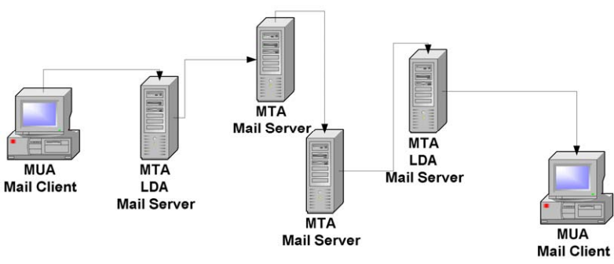
メール配送経路の図の一部。MUA（メールクライアント）からMTA/LDA（メールサーバー）を経て、別のMTAへメッセージを転送する。
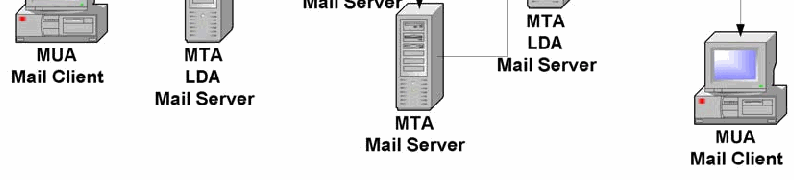
メール配送構成図。送信側MUA（メールクライアント）から複数のMTA（メール転送エージェント）とLDA（ローカル配送エージェント）を介して、受信側MUAへメールを届ける。
Figure 2.1: Example of Message Flow
図2.1：メッセージフローの例
2.2 Multipurpose Internet Mail Extensions
2.2 多目的インターネットメール拡張（MIME）
RFC 2822 provides a standard for transmitting messages containing textual content; however, it does not address messages that contain attachments, such as a mail message with a word processing document or photo included. Making use of the headers in an RFC 2822 message, the Multipurpose Internet Mail Extensions (MIME) provide almost endless possibilities to describe the structure of rich message content. MIME uses the convention of content-type/subtype pairs to specify the native representation or encoding of associated data. Examples of content types include the following:
RFC 2822はテキストコンテンツを含むメッセージの送信標準を定めているが、ワープロ文書や写真を添付したメールなど、添付ファイルを含むメッセージは扱っていない。RFC 2822メッセージのヘッダーを利用する多目的インターネットメール拡張（MIME）を使うと、リッチなメッセージコンテンツの構造を幅広く記述できる。MIMEでは、関連データの本来の表現形式や符号化方式を指定するために、コンテンツタイプ／サブタイプの組み合わせを使う。コンテンツタイプの例を以下に示す。
(cid:31) Audio – for transmitting audio or voice data.
・Audio ― 音声データを送信する。
未レビュー訳(cid:31) Application – used to transmit application data or binary data.
・Application ― アプリケーションデータまたはバイナリデータを送信する。
未レビュー訳(cid:31) Image – for transmitting still image (picture) data.
・Image ― 静止画像（写真）データを送信する。
未レビュー訳(cid:31) Message – for encapsulating another mail message.
・Message ― 別のメールメッセージを格納する。
未レビュー訳(cid:31) Multipart – used to combine several message body parts, possibly of differing types of data, into a single message.
・Multipart ― 種類の異なるデータを含む複数のメッセージ本文部分を、1つのメッセージにまとめる。
未レビュー訳(cid:31) Text – used to represent textual information in a number of character sets and formatted text description languages in a standardized manner.
・Text ― 複数の文字セットや書式付きテキスト記述言語によるテキスト情報を、標準化された方法で表現する。
未レビュー訳(cid:31) Video – for transmitting video or moving image data, possibly with audio as part of the composite video data format.
・Video ― 映像または動画データを送信する。複合映像データ形式の一部として音声を含めることもできる。
未レビュー訳The current MIME standards include five parts: RFCs 2045, 2046, 2047, 4289 (which replaced 2048), and 2049 (see Appendix B). They address message body format, media types, non-American Standard Code for Information Interchange (non-ASCII) message header extensions, registration procedures, and conformance criteria, respectively. With this added functionality, email features such as message attachments and inline hypertext markup language (HTML) are possible. Although MIME extensions allow for binary message content, such content is incorporated into an RFC 2822 message using Base64 encoding, which provides a textual representation of binary data.3
現在のMIME標準は、RFC 2045、2046、2047、4289（RFC 2048に代わるもの）、2049の5つで構成される（付録B参照）。これらはそれぞれ、メッセージ本文の形式、メディアタイプ、ASCII以外のメッセージヘッダー拡張、登録手順、適合基準を扱う。この機能により、添付ファイルやインラインのハイパーテキストマークアップ言語（HTML）など、電子メールの機能を実現できる。MIME拡張ではバイナリのメッセージコンテンツを使用できるが、そのようなコンテンツはBase64符号化を使ってRFC 2822メッセージに組み込まれる。Base64符号化はバイナリデータをテキスト表現にする（脚注3）。
未レビュー訳2.3 Mail Transport Standards
2.3 メール転送標準
To ensure reliability and interoperability among various mail applications, mail transport standards were established. In the simplest scenario, an email message is sent from one local user to another local user. For this case, an LDA is responsible for placing the message in the appropriate mailbox. When a message is sent to non-local recipients, an MTA is needed to send the message from the local mail server to the remote mail server. Depending on the type of systems involved, different MTAs may be used, which in turn may support different implementations of a particular message transfer protocol or more than one distinct transfer protocol.
さまざまなメールアプリケーション間の信頼性と相互運用性を確保するため、メール転送標準が定められている。最も単純な例では、1人のローカルユーザーから別のローカルユーザーへ電子メールを送信する。この場合、LDAがメッセージを適切なメールボックスに格納する。ローカル以外の受信者へ送信する場合は、MTAを使ってローカルメールサーバーからリモートメールサーバーへメッセージを送る。関係するシステムの種類によって異なるMTAを使うことがあり、それぞれが特定のメッセージ転送プロトコルの異なる実装や、複数の転送プロトコルをサポートする場合がある。
The most common MTA transfer protocol is the Simple Mail Transfer Protocol (SMTP). SMTP is the de-facto Internet standard for sending email messages. Thus, any Internet messaging system must support SMTP to facilitate communication with other email messaging applications. Other messaging systems exist that use different MTA transfer protocols between similar or clustered messaging systems. For the most part, these MTAs are proprietary and work only with specific systems. Sections 2.3.1 and 2.3.2 provide background information on SMTP and SMTP extensions, while Section 2.3.3 discusses proprietary MTAs.
最も一般的なMTA転送プロトコルは、簡易メール転送プロトコル（SMTP）である。SMTPは電子メールを送信するための事実上のインターネット標準である。そのため、他の電子メールメッセージングアプリケーションと通信するには、インターネット上のすべてのメッセージングシステムがSMTPをサポートする必要がある。類似のまたはクラスター化されたメッセージングシステム間で異なるMTA転送プロトコルを使う他のメッセージングシステムも存在するが、これらのMTAの多くは独自仕様であり、特定のシステムでしか動作しない。第2.3.1節と第2.3.2節ではSMTPとSMTP拡張の背景を説明し、第2.3.3節では独自仕様のMTAを扱う。
2.3.1 Simple Mail Transfer Protocol
2.3.1 簡易メール転送プロトコル（SMTP）
Jon Postel of the University of Southern California developed SMTP in August 1982. As RFC 821, Simple Mail Transfer Protocol, states, “SMTP was developed to ensure a more reliable and efficient way to transport messages.” At the most basic level, SMTP is a minimal language that defines a communications protocol for delivering email messages. Figure 2.2 lists the SMTP commands and syntax as defined in RFC 2821, Simple Mail Transfer Protocol, which replaced RFC 821.
南カリフォルニア大学のJon Postelは、1982年8月にSMTPを開発した。RFC 821「Simple Mail Transfer Protocol」には、「SMTPは、より信頼性が高く効率的なメッセージ転送を実現するために開発された」と記されている。最も基本的なレベルでは、SMTPは電子メールメッセージを配送する通信プロトコルを定める簡素な言語である。図2.2には、RFC 821に代わるRFC 2821「Simple Mail Transfer Protocol」で定義されたSMTPコマンドと構文を示す。
原本PDFの抜粋画像
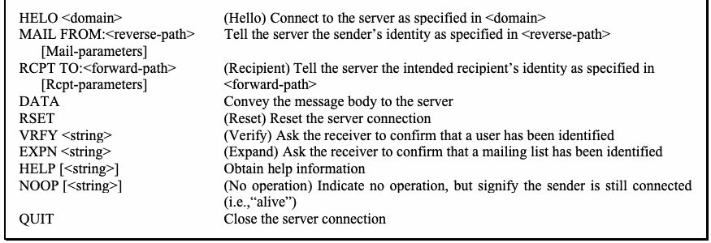
Figure 2.2: SMTP Commands
図2.2：SMTPコマンド
When a user sends an email, the client contacts its SMTP server and conducts a “conversation” using the SMTP language. A MUA is typically part of the mail client application (e.g., Outlook, Eudora). If an MUA is unavailable, email messages can be sent using a Telnet client connected to the SMTP service. Figure 2.3 depicts a sample SMTP conversation using Telnet. The Telnet and SMTP commands entered by the user for this session are shown in bold. During a manual SMTP Telnet session, the HELP command can be used to determine which of the SMTP commands are enabled on the server.
ユーザーが電子メールを送信すると、クライアントはSMTPサーバーに接続し、SMTP言語を使って「会話」を行う。MUAは通常、メールクライアントアプリケーション（Outlook、Eudoraなど）の一部である。MUAを利用できない場合は、SMTPサービスに接続したTelnetクライアントから電子メールを送信できる。図2.3に、Telnetを使ったSMTP通信の例を示す。このセッションでユーザーが入力したTelnetコマンドとSMTPコマンドは太字で示している。SMTPのTelnetセッションを手動で行う場合は、HELPコマンドを使って、サーバーで有効になっているSMTPコマンドを確認できる。
原本PDFの抜粋画像
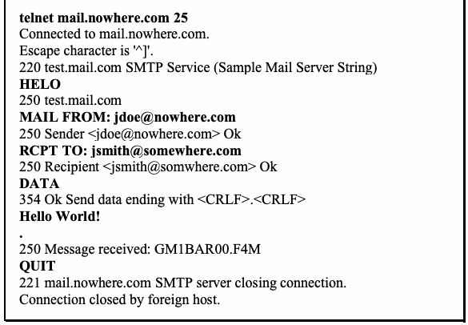
Figure 2.3: Sample SMTP Conversation
図2.3：SMTP通信の例
2.3.2 Simple Mail Transfer Protocol Extensions
2.3.2 簡易メール転送プロトコルの拡張
As the number of email users grew, additional functionality was sought in mail clients and SMTP servers. For SMTP servers to support this additional functionality, extensions were added to SMTP. In 1993, RFC 1425 introduced the concept of SMTP service extensions. Subsequently, RFC 1425 was superseded by RFC 1651 in 1994, RFC 1869 in 1995, and RFC 2821 in 2001. These RFCs added three pieces to the SMTP framework:
電子メールユーザーの増加に伴い、メールクライアントやSMTPサーバーに追加機能が求められるようになった。SMTPサーバーでこれらの機能をサポートするため、SMTPに拡張が追加された。1993年、RFC 1425でSMTPサービス拡張の概念が導入された。その後、RFC 1425は1994年のRFC 1651、1995年のRFC 1869、2001年のRFC 2821に置き換えられた。これらのRFCによって、SMTPの枠組みに次の3つが追加された。
(cid:31) New SMTP commands (RFC 1425)
・新しいSMTPコマンド（RFC 1425）
未レビュー訳(cid:31) Registry for SMTP service extensions (RFC 1651)
・SMTPサービス拡張のレジストリ（RFC 1651）
未レビュー訳(cid:31) Additional parameters for SMTP MAIL FROM and RCPT TO commands (RFC 1869).
・SMTPのMAIL FROMコマンドおよびRCPT TOコマンドに追加するパラメーター（RFC 1869）。
未レビュー訳To be compatible with older SMTP servers, there needed to be a method to allow the mail client application to determine whether the server supported extensions. This was accomplished through the “enhanced hello” (EHLO) command. When connecting to a server, a mail client could issue the EHLO command. If the server supported SMTP extensions, it would give a successful response and list the extensions that were supported. If the server did not support SMTP extensions, it would issue a command failure response prompting the MUA to respond with the standard HELO command. Servers that support SMTP extensions, also known as Extended SMTP (ESMTP), typically respond with ESMTP in their banner.4 Figure 2.4 is an excerpt from an ESMTP server transaction involving the EHLO command.
旧式のSMTPサーバーとの互換性を保つには、サーバーが拡張をサポートしているかどうかをメールクライアントアプリケーションが判定できる方法が必要だった。これを「enhanced hello」（EHLO）コマンドで実現した。サーバーに接続するとき、メールクライアントはEHLOコマンドを送信できる。サーバーがSMTP拡張をサポートしていれば、成功応答とともに、サポートしている拡張の一覧を返す。サポートしていなければコマンド失敗の応答を返し、MUAは標準のHELOコマンドで応答する。SMTP拡張をサポートするサーバーは拡張SMTP（ESMTP）とも呼ばれ、通常、バナーにESMTPと表示する（脚注4）。図2.4は、EHLOコマンドを含むESMTPサーバーとの通信例の抜粋である。
未レビュー訳原本PDFの抜粋画像
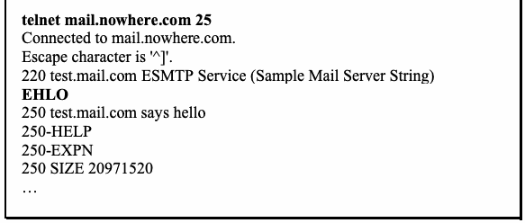
Figure 2.4: Sample ESMTP Conversation
図2.4：ESMTP通信の例
As depicted in Figure 2.4, the sample server supports only one extension – SIZE. Numerous extensions are supported by a variety of SMTP servers. Table 2.1 lists some of the more common SMTP extensions and their associated RFCs. In particular, RFC 2554 specifies a new command and protocol for identifying and authenticating a user. The default configuration of most mail servers typically does not have authenticated relay enabled.
図2.4に示すように、このサーバーがサポートする拡張はSIZEだけである。さまざまなSMTPサーバーが多数の拡張をサポートしている。表2.1に、一般的なSMTP拡張と対応するRFCを示す。特にRFC 2554では、ユーザーの識別と認証のための新しいコマンドとプロトコルが定められている。ほとんどのメールサーバーでは、認証付き中継は既定で有効になっていない。
Table 2.1: SMTP Extensions
表2.1：SMTP拡張
未レビュー訳| SMTP Extension | Associated RFC |
| SMTP Service Extension for Authentication | 2554 |
| SMTP Service Extension for Command Pipelining | 2920 |
| SMTP Service Extension for Delivery Status Notifications (DSNs) | 3461 |
| SMTP Service Extension for Message Size Declaration | 1870 |
| SMTP Service Extension for Message Tracking | 3885 |
| SMTP Service Extension for Remote Message Queue Starting | 1985 |
| SMTP Service Extension for Returning Enhanced Error Codes | 2034 |
| SMTP Service Extension for Secure SMTP over Transport Layer Security | 3207 |
| SMTP Service Extensions for Transmission of Large and Binary MIME Messages | 3030 |
原本PDFの抜粋画像
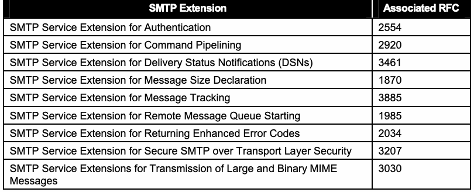
| SMTP拡張 | 関連RFC |
| 認証のためのSMTPサービス拡張 | 2554 |
| コマンドのパイプライン化のためのSMTPサービス拡張 | 2920 |
| 配送状態通知（DSN）のためのSMTPサービス拡張 | 3461 |
| メッセージサイズ宣言のためのSMTPサービス拡張 | 1870 |
| メッセージ追跡のためのSMTPサービス拡張 | 3885 |
| リモートメッセージキュー開始のためのSMTPサービス拡張 | 1985 |
| 拡張エラーコード返却のためのSMTPサービス拡張 | 2034 |
| Transport Layer Securityを用いたセキュアSMTPのためのSMTPサービス拡張 | 3207 |
| 大容量およびバイナリMIMEメッセージ転送のためのSMTPサービス拡張 | 3030 |
2.3.3 Proprietary Mail Transports
2.3.3 独自メール転送方式
As mentioned previously, some messaging systems use MTAs that do not support either SMTP or ESMTP. These types of MTAs are designed to work within a closed messaging environment. Many large-scale government, academic, and private organizations have messaging systems that use these types of MTAs. However, these organizations still rely on SMTP or ESMTP-capable MTAs for communicating with external messaging systems. Some examples of messaging systems that use proprietary protocols are MTAs for Lotus Notes and Microsoft Exchange.5 Discussion on the benefits and disadvantages of using MTAs that support only proprietary message transfer protocols is outside the scope of this document.
前述のとおり、メッセージングシステムの中には、SMTPもESMTPもサポートしないMTAを使用するものがある。この種のMTAは、閉じたメッセージング環境内で動作するよう設計されている。大規模な政府機関、学術機関、民間組織の多くは、この種のMTAを使用するメッセージングシステムを運用している。ただし、これらの組織も外部のメッセージングシステムと通信するため、SMTPまたはESMTP対応のMTAに依存している。独自プロトコルを使用するメッセージングシステムの例として、Lotus NotesやMicrosoft ExchangeのMTAがある。5 独自のメッセージ転送プロトコルのみをサポートするMTAを使う利点と欠点については、本書の対象範囲外である。
未レビュー訳2.4 Client Access Standards
2.4 クライアントアクセス標準
Once a message is delivered by the LDA, users need to access the mail server to retrieve the message. Mail clients (MUAs) are used to access the mail server and retrieve email messages. Several methods exist for users to access their mailboxes, the simplest being direct access.
LDAによってメッセージが配信されると、ユーザーはメッセージを取得するためにメールサーバーへアクセスする必要がある。メールクライアント（MUA）は、メールサーバーにアクセスして電子メールメッセージを取得するために使用される。ユーザーがメールボックスにアクセスする方法はいくつかあり、最も単純なのは直接アクセスである。
The simplest scenario for a messaging system would be one in which all users have direct access to their mailbox (common on hosts employing the Unix operating system). For each account that exists on the system, there is a corresponding mailbox in that user’s home directory. When messages are received, users can use command line-based mail programs, such as mail or pine, to directly access the mailbox. Although this method is straightforward, it requires all users accessing the mail server to receive messages to have a user account and a command-line interface on the host operating system.
メッセージングシステムの最も単純な構成は、すべてのユーザーが自分のメールボックスに直接アクセスできるものである（Unixオペレーティングシステムを採用するホストで一般的である）。システム上の各アカウントには、そのユーザーのホームディレクトリに対応するメールボックスがある。メッセージを受信すると、ユーザーはmailやpineなどのコマンドライン型メールプログラムを使ってメールボックスに直接アクセスできる。この方法は簡単であるが、メールサーバーにアクセスしてメッセージを受信するすべてのユーザーに、ホストOS上のユーザーアカウントとコマンドラインインターフェースが必要である。
Allowing users, particularly external users, to have access to a command-line interface is a significant security risk. To mitigate this risk, mailbox access protocols were devised. The two most widely supported mailbox access protocols are Post Office Protocol (POP) and Internet Message Access Protocol (IMAP). They are covered in Sections 2.4.1 and 2.4.2, respectively. As with message transfer protocols for MTAs, other proprietary mailbox access protocols exist that are regularly used by commercial software manufacturers; proprietary protocols are discussed in Section 2.4.3. It is important to understand that POP, IMAP, and indeed most proprietary protocols in their default configuration use cleartext passwords for authentication, which can be intercepted by other hosts attached to the network. Section 2.4.4 briefly discusses the protocols used for Web-based mail access.
特に外部ユーザーにコマンドラインインターフェースへのアクセスを許可すると、重大なセキュリティリスクが生じる。このリスクを軽減するため、メールボックスアクセスプロトコルが考案された。最も広くサポートされているメールボックスアクセスプロトコルは、Post Office Protocol（POP）とInternet Message Access Protocol（IMAP）である。それぞれ2.4.1節と2.4.2節で説明する。MTAのメッセージ転送プロトコルと同様に、市販ソフトウェアメーカーが定期的に使用する他の独自メールボックスアクセスプロトコルもある。独自プロトコルについては2.4.3節で説明する。POP、IMAP、そして大半の独自プロトコルは、既定の設定では認証に平文パスワードを使用するため、ネットワークに接続された別のホストに傍受される可能性がある点に注意が必要である。ウェブベースのメールアクセスで使われるプロトコルについては、2.4.4節で簡単に説明する。
未レビュー訳2.4.1 Post Office Protocol
2.4.1 Post Office Protocol
POP was first developed in 1984. At its core, POP was nothing more than a way to copy messages from the mail server mailbox to the mail client. It worked much like a traditional post office mailbox. The mail client opens a connection to the mail server mailbox, downloads the email messages, and then closes the connection. As described in RFC 918, only nine commands were originally available for POP (see “Basic Commands” in Figure 2.5).
POPは1984年に初めて開発された。基本的にPOPは、メールサーバーのメールボックスからメールクライアントへメッセージをコピーするだけの仕組みであった。従来の郵便受けとよく似た動作をする。メールクライアントはメールサーバーのメールボックスに接続し、電子メールメッセージをダウンロードしてから接続を切断する。RFC 918で説明されているように、当初のPOPで利用できるコマンドは9個だけであった（図2.5の「基本コマンド」を参照）。
原本PDFの抜粋画像
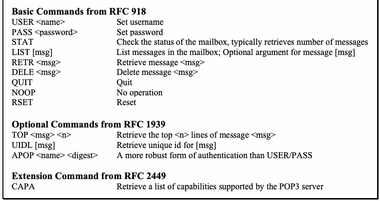
Figure 2.5: POP3 Commands
図2.5: POP3コマンド
Since 1984, POP has gone through several changes and is now in its third iteration as defined in RFC
1984年以来、POPには何度か変更が加えられ、現在はRFCで定義された第3版となっている。
未レビュー訳1939.The basic command set is very similar to the command set of 1984; however, POP version 3 offers a few new optional commands, listed in Figure 2.5. From a security standpoint, the addition of the APOP was important, since it avoids transmitting a user’s password in the clear. Instead, a challenge/response mechanism is used, by which the client responds with a cryptographic hash of the combined challenge sent from the server and the user's password, for verification by a POP mail server performing the same operation for the user in question.
1939.基本コマンドセットは1984年のものと非常によく似ているが、POPバージョン3では図2.5に示すいくつかのオプションコマンドが追加されている。セキュリティの観点では、APOPの追加が重要であった。APOPではユーザーのパスワードを平文で送信しない。代わりにチャレンジ／レスポンス方式を使い、クライアントはサーバーから送られたチャレンジとユーザーのパスワードを組み合わせた値の暗号学的ハッシュを応答として返す。POPメールサーバーは対象ユーザーについて同じ計算を行い、応答を検証する。
未レビュー訳RFC 2449, POP3 Extension Mechanism, defines an extension to POP3 that allows clients to discover additional information about POP3 servers, such as which extensions and optional commands they support. Figure 2.5 shows the command added to POP3 by the extension.
RFC 2449「POP3 Extension Mechanism」は、POP3の拡張を定義している。これにより、クライアントはPOP3サーバーがサポートする拡張機能やオプションコマンドなどの追加情報を確認できる。図2.5に、この拡張によってPOP3に追加されたコマンドを示す。
The POP mailbox access standard has some significant limitations. Typically, when users retrieve their email, copies of the messages that reside on the server are deleted. This means that the user has the sole responsibility of maintaining message archives. Although this may be acceptable for personal accounts, it is generally unacceptable for most commercial or governmental organizations that have to meet certain legal requirements. In addition, if a user employs several workstations for retrieving email, the messages are dispersed on multiple hosts. POP may be configured so that the original messages are not deleted from the server. However, the user will either have to download all of the messages previously viewed as well as the new messages when accessing a mailbox from another host, or have to set up a retention period after which messages are automatically deleted from the server.
POPメールボックスアクセス標準には、いくつかの重大な制約がある。通常、ユーザーがメールを取得すると、サーバー上にあるメッセージのコピーは削除される。そのため、メッセージアーカイブの管理はユーザー自身の責任になる。個人アカウントでは許容できる場合もあるが、特定の法的要件を満たす必要がある多くの企業や政府機関では、一般に受け入れられない。また、複数のワークステーションでメールを取得すると、メッセージが複数のホストに分散する。POPを設定して、元のメッセージがサーバーから削除されないようにすることもできる。ただし、別のホストからメールボックスにアクセスする際、以前に閲覧したメッセージと新着メッセージをすべてダウンロードするか、一定の保存期間を設定し、その期間の経過後にメッセージがサーバーから自動削除されるようにする必要がある。
未レビュー訳2.4.2 Internet Message Access Protocol
2.4.2 Internet Message Access Protocol
To address the above-mentioned issues with POP, IMAP was developed in 1988. The IMAP protocol was developed as a functional superset of the POP version 2 protocol. At the most basic level, IMAP was designed so user mailboxes could be centrally located and accessed from multiple mail clients or MUAs.
前述したPOPの問題に対処するため、IMAPは1988年に開発された。IMAPプロトコルは、POPバージョン2の機能を包含する上位互換のプロトコルとして開発された。基本的にIMAPは、ユーザーのメールボックスを一元的に配置し、複数のメールクライアントまたはMUAからアクセスできるよう設計されている。
Initially, IMAP offered very little functionality beyond that of POP, but since 1988, it has evolved into a robust mailbox access protocol. The current edition of the IMAP standard is RFC 3501: Internet Message Access Protocol – Version 4, Revision 1 (4rev1). Because IMAP 4rev1 supports many different features, it has a much wider command set than that of POP. Figure 2.6 provides a list of IMAP 4rev1 commands. Additionally, with the CAPABILITY command, the IMAP server can be queried to determine if other IMAP extensions are supported.
当初、IMAPの機能はPOPをわずかに上回る程度だったが、1988年以降、堅牢なメールボックスアクセスプロトコルへと発展した。IMAP標準の現行版はRFC 3501「Internet Message Access Protocol – Version 4, Revision 1（4rev1）」である。IMAP 4rev1は多くの機能をサポートするため、POPよりも大幅に多くのコマンドを備えている。図2.6にIMAP 4rev1のコマンド一覧を示す。また、CAPABILITYコマンドを使うと、IMAPサーバーが他のIMAP拡張をサポートしているかどうかを照会できる。
原本PDFの抜粋画像
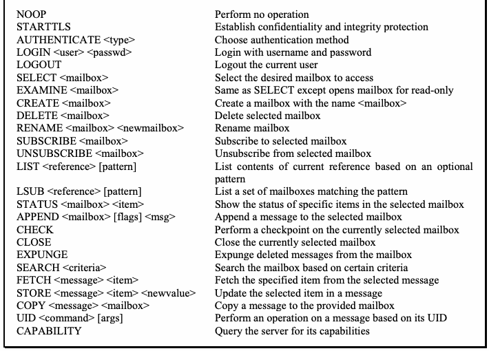
Figure 2.6: IMAP 4 Revision 1 Commands
図2.6: IMAP 4 Revision 1のコマンド
Table 2.2 lists the associated RFCs for the noted IMAP extensions. IMAP has been extended with a challenge/response mechanism comparable to APOP, which is called the Challenge-Response Authentication Mechanism (CRAM). CRAM requires the client to make note of the challenge data sent by the server and respond with a string consisting of the user’s name, a space, and a digest computed by applying a keyed hash algorithm6 against the timestamp sent with the challenge, using a shared secret as the key.
表2.2に、ここで取り上げたIMAP拡張に対応するRFCを示す。IMAPにはAPOPに類似したチャレンジ／レスポンス方式であるChallenge-Response Authentication Mechanism（CRAM）が拡張として追加されている。CRAMでは、クライアントはサーバーから送信されたチャレンジデータを記録し、ユーザー名、空白、およびチャレンジ内のタイムスタンプに鍵付きハッシュアルゴリズム6を適用して計算したダイジェストからなる文字列で応答する。この計算では共有秘密を鍵として使用する。
未レビュー訳Table 2.2: IMAP Extension RFC Documents
表2.2: IMAP拡張に関するRFC文書
未レビュー訳| IMAP Extension | Associated RFC |
| IMAP URL Scheme | 2192 |
| IMAP/POP AUTHorize Extension for Simple Challenge/Response | 2195 |
| IMAP4 ID extension | 2971 |
| IMAP4 IDLE command | 2177 |
| IMAP4 Login Referrals | 2221 |
| IMAP4 Mailbox Referrals | 2193 |
| IMAP4 Multi-Accessed Mailbox Practice | 2180 |
| IMAP4 Namespace | 2342 |
| IMAP4 non-synchronizing literals | 2088 |
| IMAP4 QUOTA extension | 2087 |
| IMAP4 UIDPLUS extension | 4315 |
原本PDFの抜粋画像
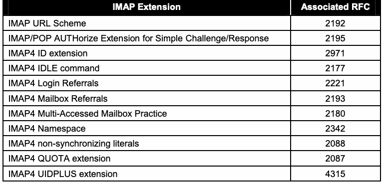
| IMAP拡張 | 関連RFC |
| IMAP URLスキーム | 2192 |
| 簡易チャレンジ／レスポンスのためのIMAP/POP認証拡張 | 2195 |
| IMAP4 ID拡張 | 2971 |
| IMAP4 IDLEコマンド | 2177 |
| IMAP4ログイン時のリファーラル | 2221 |
| IMAP4メールボックスのリファーラル | 2193 |
| IMAP4複数アクセス対応メールボックスの方式 | 2180 |
| IMAP4名前空間 | 2342 |
| IMAP4非同期リテラル | 2088 |
| IMAP4 QUOTA拡張 | 2087 |
| IMAP4 UIDPLUS拡張 | 4315 |
2.4.3 Proprietary Mailbox Access Mechanisms
2.4.3 独自メールボックスアクセス機構
Proprietary mailbox access protocols are designed to work within closed messaging environments. Microsoft Exchange and Lotus Notes are examples of messaging systems that use proprietary mailbox access protocols. These proprietary protocols offer additional functionality when used with their associated clients. Nearly all proprietary messaging systems support standard protocols, including SMTP, POP, and IMAP, in order to interoperate with other types of MTAs and MUAs. Organizations must decide for themselves whether it is appropriate to support proprietary protocols in their mail clients and servers. As mentioned earlier, regardless of whether they are standard or proprietary, most access protocols default to weak authentication mechanisms (unencrypted authentication information). Therefore, organizations need to configure the access protocols to support stronger forms of authentication.
独自メールボックスアクセスプロトコルは、閉じたメッセージング環境内で動作するよう設計されている。Microsoft ExchangeやLotus Notesは、独自のメールボックスアクセスプロトコルを使用するメッセージングシステムの例である。これらの独自プロトコルは、対応するクライアントと組み合わせることで追加機能を提供する。ほぼすべての独自メッセージングシステムは、他の種類のMTAやMUAと相互運用するため、SMTP、POP、IMAPなどの標準プロトコルもサポートしている。メールクライアントとサーバーで独自プロトコルをサポートするかどうかは、各組織が判断する必要がある。前述のとおり、標準プロトコルか独自プロトコルかを問わず、多くのアクセスプロトコルは既定で弱い認証方式（認証情報を暗号化しない方式）を使用する。そのため組織は、より強力な認証方式をサポートするようアクセスプロトコルを設定する必要がある。
2.4.4 Web-Based Mail Access
2.4.4 ウェブベースのメールアクセス
Web-based mail applications, also known as Webmail applications, are increasingly being used as a means of email service delivery, because Web browsers that enable access to the client are available on nearly every Internet-enabled device. A user simply runs a Web browser and connects to a Web site that hosts the Web-based mail application. The connection is made using either Hypertext Transfer Protocol (HTTP) or HTTP over Transport Layer Security (TLS), also known as HTTPS. HTTPS encrypts the communications, which protects both authentication information and email message content. HTTP alone does not offer any protection, so organizations should consider using HTTPS for Web-based mail application communications.
ウェブベースのメールアプリケーション（Webmailアプリケーションとも呼ばれる）は、電子メールサービスを提供する手段として利用が増えている。クライアントにアクセスできるウェブブラウザーが、インターネットに接続できるほぼすべての機器で利用可能だからである。ユーザーはウェブブラウザーを起動し、ウェブベースのメールアプリケーションをホストするウェブサイトに接続するだけである。接続にはHypertext Transfer Protocol（HTTP）またはTransport Layer Security（TLS）上のHTTP、すなわちHTTPSを使用する。HTTPSは通信を暗号化し、認証情報と電子メールメッセージの内容の両方を保護する。HTTP単独では保護されないため、組織はウェブベースのメールアプリケーションとの通信にHTTPSを使用することを検討すべきである。
Web-based mail applications incorporate much of the mail-handling functionality of traditional mail clients and communicate with their associated mail servers using the same mailbox access protocols described earlier—SMTP, POP, and IMAP, as well as proprietary protocols. The mailbox access protocols are used between the Web servers and mail servers only; the protocols are not carried between the Web servers and Web browsers.
ウェブベースのメールアプリケーションは、従来のメールクライアントのメール処理機能の多くを備え、前述のSMTP、POP、IMAPおよび独自プロトコルといった同じメールボックスアクセスプロトコルを使って対応するメールサーバーと通信する。メールボックスアクセスプロトコルが使われるのはウェブサーバーとメールサーバーの間だけである。ウェブサーバーとウェブブラウザーの間では、これらのプロトコルは転送されない。
This page has been left blank intentionally.
このページは意図的に空白にしてある。
3. Signing and Encrypting Email Messages
3. 電子メールメッセージの署名と暗号化
未レビュー訳Organizations often want to protect the confidentiality and integrity of some of their email messages, such as preventing the exposure of personally identifiable information in an email attachment. Email messages can be protected by using cryptography in various ways, such as the following:
組織は、電子メールの添付ファイルに含まれる個人識別情報が漏えいしないようにするなど、一部の電子メールメッセージの機密性と完全性を保護したいと考えることがよくある。電子メールメッセージは、例えば次のように、さまざまな方法で暗号技術を用いて保護できる。
(cid:31) Sign an email message to ensure its integrity and confirm the identity of its sender.
(cid:31) メッセージの完全性を確保し、送信者の身元を確認するため、電子メールメッセージに署名する。
未レビュー訳(cid:31) Encrypt the body of an email message to ensure its confidentiality.
(cid:31) 電子メールメッセージ本文を暗号化して機密性を確保する。
未レビュー訳(cid:31) Encrypt the communications between mail servers to protect the confidentiality of both the message body and message header.
(cid:31) メールサーバー間の通信を暗号化し、メッセージ本文とヘッダーの両方の機密性を保護する。
未レビュー訳The first two methods, message signing and message body encryption, are often used together. For example, if a message needs to be encrypted to protect its confidentiality, it is usually digitally signed as well, so that the recipient can ensure the integrity of the message and verify the identity of the signer. Messages that are digitally signed are usually not encrypted if the confidentiality of the contents does not need to be protected.
最初の2つの方法であるメッセージ署名と本文の暗号化は、併用されることがよくある。例えば、機密性を保護するためにメッセージを暗号化する場合、通常はデジタル署名も付与する。これにより、受信者はメッセージの完全性を確認し、署名者の身元を検証できる。内容の機密性を保護する必要がない場合、デジタル署名されたメッセージは通常暗号化されない。
The third cryptography method listed above, encrypting the transmissions between mail servers, is typically applicable only when two organizations want to protect emails regularly sent between them. For example, the organizations could establish a virtual private network (VPN) to encrypt the communications between their mail servers over the Internet. Unlike methods that can only encrypt a message body, a VPN can encrypt entire messages, including email header information such as senders, recipients, and subjects. In some cases, organizations may need to protect header information. However, a VPN solution alone cannot provide a message signing mechanism, nor can it provide protection for email messages along the entire route from sender to recipient.7
前述した3つ目の暗号化方法、すなわちメールサーバー間の通信の暗号化は、通常、2つの組織が相互に定期送信する電子メールを保護したい場合に適用される。例えば、組織は仮想プライベートネットワーク（VPN）を構築し、インターネット経由でメールサーバー間の通信を暗号化できる。メッセージ本文しか暗号化できない方法とは異なり、VPNは送信者、受信者、件名などの電子メールヘッダー情報を含め、メッセージ全体を暗号化できる。場合によっては、組織はヘッダー情報も保護する必要がある。ただし、VPNだけではメッセージ署名の仕組みを提供できず、送信者から受信者までの全経路にわたって電子メールメッセージを保護することもできない。7
未レビュー訳Because most email messages are protected individually by digitally signing and optionally encrypting them, this section focuses on the use of these methods. The most widely used standards for signing messages and encrypting message bodies are Open Pretty Good Privacy (OpenPGP) and Secure/Multipurpose Internet Mail Extensions (S/MIME).8 Both are based in part on the concept of public key cryptography, which involves a user having a pair of related keys: a public key that anyone can hold, and a private key that is held exclusively by its owner. Because public key cryptography is so computationally intense, it is used sparingly in email security; symmetric key cryptography, which is much more efficient, is much more heavily used.
ほとんどの電子メールメッセージは、個別にデジタル署名され、必要に応じて暗号化されるため、本節ではこれらの方法に焦点を当てる。メッセージ署名と本文の暗号化に最も広く使われている標準は、Open Pretty Good Privacy（OpenPGP）とSecure/Multipurpose Internet Mail Extensions（S/MIME）である。8 どちらも公開鍵暗号の考え方を一部取り入れている。公開鍵暗号では、相互に関連する鍵の組をユーザーが持ち、一方の公開鍵は誰でも保有でき、もう一方の秘密鍵は所有者だけが保有する。公開鍵暗号は計算負荷が非常に高いため、電子メールセキュリティでは限定的に使われる。より効率的な共通鍵暗号の方が、はるかに多く使われる。
未レビュー訳Symmetric key cryptography requires a single key to be shared between communicating parties, the sender and recipient of an email message. The process involves the sender generating a random key and encrypting the message with it using a symmetric key encryption algorithm. The sender then encrypts the symmetric key with a corresponding public key encryption algorithm using the recipient’s public key, and sends both the encrypted message and encrypted symmetric key together to the recipient. This hybrid process uses public key encryption only to encrypt the symmetric key. Because only the intended message recipient holds the private key that is needed to recover the symmetric key, no other party can decrypt the message and read it. Digital signature techniques rely on the creation of a digest or fingerprint of the information (i.e., the message being sent) using a cryptographic hash, which can be signed more efficiently than the entire message.9
共通鍵暗号では、電子メールメッセージの送信者と受信者の間で単一の鍵を共有する必要がある。送信者はランダムな鍵を生成し、共通鍵暗号アルゴリズムを使ってその鍵でメッセージを暗号化する。次に、対応する公開鍵暗号アルゴリズムを使い、受信者の公開鍵で共通鍵を暗号化する。そして、暗号化したメッセージと暗号化した共通鍵の両方を受信者に送る。このハイブリッド方式では、公開鍵暗号は共通鍵の暗号化にのみ使われる。共通鍵を復元するために必要な秘密鍵を持つのは、意図されたメッセージ受信者だけなので、他者がメッセージを復号して読むことはできない。デジタル署名では、情報（すなわち送信するメッセージ）のダイジェストまたはフィンガープリントを暗号学的ハッシュで作成し、メッセージ全体より効率よく署名する。9
未レビュー訳Federal organizations are required to use cryptographic algorithms that have been approved by the Federal government.10 Other organizations may wish to choose encryption schemes approved by the Federal government because these are well-tested and secure. Table 3.1 presents general recommendations for selecting cryptographic suites for protecting email messages.
連邦政府機関は、連邦政府が承認した暗号アルゴリズムを使用することが求められている。10 他の組織も、十分に検証され安全性が高いことから、連邦政府が承認した暗号方式を選ぶことを検討できる。表3.1に、電子メールメッセージを保護する暗号スイートの選定に関する一般的な推奨事項を示す。
未レビュー訳Table 3.1: Recommended Cipher Suites
表3.1: 推奨暗号スイート
未レビュー訳| Recommended Use | Cipher Suites |
| Highest Security | Encryption: Advanced Encryption Standard (AES) 11 128, 192, or 256-bit encryption Authentication & Digest: Digital Signature Standard (DSS) or RSA with a key size of 2048 bits or higher and SHA with a digest size of 256 bits (SHA-256) 12 |
| Security and Performance | Encryption: AES 128-bit encryption Authentication & Digest: DSS or RSA with a key size of 1024 bits or higher and SHA-1 |
| Security and Compatibility | Encryption: Triple Data Encryption Standard (3DES) 13 168/112-bit encryption (note: 3DES is considerably slower than AES) Authentication & Digest: DSS with a key size of 1024 bits or higher and SHA-1 |
| Authentication and Tamper Detection | Authentication & Digest: DSS with a key size of 1024 bits or higher and SHA-1 or SHA-256 |
原本PDFの抜粋画像
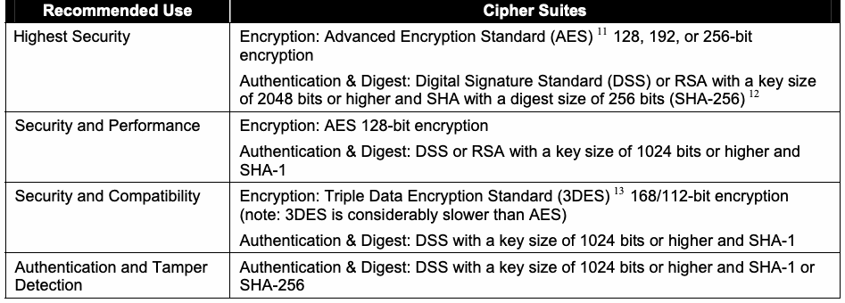
| 推奨用途 | 暗号スイート |
| 最高レベルのセキュリティ | 暗号化: Advanced Encryption Standard（AES）11 による128、192または256ビット暗号化 認証およびダイジェスト: Digital Signature Standard（DSS）または鍵長2048ビット以上のRSAと、ダイジェスト長256ビットのSHA（SHA-256）12 |
| セキュリティと性能 | 暗号化: AESによる128ビット暗号化 認証およびダイジェスト: DSSまたは鍵長1024ビット以上のRSAとSHA-1 |
| セキュリティと互換性 | 暗号化: Triple Data Encryption Standard（3DES）13 による168/112ビット暗号化（注: 3DESはAESよりかなり低速） 認証およびダイジェスト: 鍵長1024ビット以上のDSSとSHA-1 |
| 認証と改ざん検知 | 認証およびダイジェスト: 鍵長1024ビット以上のDSSとSHA-1またはSHA-256 |
3.1 OpenPGP
3.1 OpenPGP
OpenPGP is a protocol for encrypting and signing messages and for creating certificates using public key cryptography. It is based on an earlier protocol, PGP, which was created by Phil Zimmerman and implemented as a product first released in June 1991. The initial PGP protocol was proprietary and used some encryption algorithms with intellectual property restrictions. In 1996, version 5.x of PGP was defined in IETF RFC 1991, PGP Message Exchange Formats. Subsequently, OpenPGP was developed as a new standard protocol based on PGP version 5.x. OpenPGP is defined in RFC 2440, OpenPGP Message Format, and RFC 3156, MIME Security with OpenPGP.14
OpenPGPは、公開鍵暗号を用いてメッセージの暗号化と署名、および証明書の作成を行うプロトコルである。Phil Zimmermanが開発した旧来のプロトコルPGPに基づいており、製品としては1991年6月に初めてリリースされた。初期のPGPプロトコルは独自仕様で、一部に知的財産権上の制約がある暗号アルゴリズムを使用していた。1996年、PGPのバージョン5.xがIETF RFC 1991『PGP Message Exchange Formats』で定義された。その後、PGPバージョン5.xを基に、新しい標準プロトコルとしてOpenPGPが開発された。OpenPGPはRFC 2440『OpenPGP Message Format』およびRFC 3156『MIME Security with OpenPGP』で定義されている。14
未レビュー訳Many free and commercial products that use the OpenPGP standard are currently available. The software can be downloaded or purchased from a variety of Web sites.15 Some OpenPGP-based products fully support the cryptographic algorithms recommended to the Federal government by NIST in FIPS PUB 140-2 and other publications, including 3DES and AES for data encryption, Digital Signature Algorithm (DSA)16 and RSA for digital signatures, and SHA for hashing.17 Some implementations of OpenPGP support other encryption schemes not addressed here.
OpenPGP標準を使用する無償および商用製品は、現在多数入手できる。ソフトウェアはさまざまなウェブサイトからダウンロードまたは購入できる。15 OpenPGPベースの製品の中には、3DESやAESによるデータ暗号化、デジタル署名のためのDigital Signature Algorithm（DSA）16およびRSA、ハッシュ処理のためのSHAなど、FIPS PUB 140-2その他の刊行物でNISTが連邦政府向けに推奨する暗号アルゴリズムをすべてサポートするものがある。17 OpenPGPの実装によっては、ここで扱わない他の暗号方式もサポートしている。
未レビュー訳Although certain aspects of OpenPGP do use public key cryptography, such as digitally signed message digests, the actual encryption of the message body is performed with a symmetric key algorithm, as outlined earlier. The following is a brief description of signing and encrypting a message with OpenPGP (some steps may occur in a different order):
デジタル署名されたメッセージダイジェストなど、OpenPGPの一部では公開鍵暗号を使用するが、前述したとおり、メッセージ本文そのものの暗号化には共通鍵アルゴリズムを使用する。以下に、OpenPGPを使ったメッセージの署名と暗号化の概要を示す（手順の順序は異なる場合がある）。
(cid:31) OpenPGP compresses the plaintext, which reduces transmission time and strengthens cryptographic security by obfuscating plaintext patterns commonly searched for during cryptanalysis.
(cid:31) OpenPGPは平文を圧縮する。これにより転送時間が短縮され、暗号解読でよく検索される平文のパターンが分かりにくくなるため、暗号セキュリティも強化される。
未レビュー訳(cid:31) OpenPGP creates a random session key (in some implementations of OpenPGP, users are required to move their mouse at will within a window to generate random data).
(cid:31) OpenPGPはランダムなセッション鍵を生成する（OpenPGPの実装によっては、ランダムデータを生成するため、ユーザーにウィンドウ内でマウスを自由に動かすよう求める）。
未レビュー訳(cid:31) A digital signature is generated for the message using the sender’s private key, and then added to the message.
(cid:31) 送信者の秘密鍵を使ってメッセージのデジタル署名を生成し、メッセージに追加する。
未レビュー訳(cid:31) The message and signature are encrypted using the session key and a symmetric algorithm (e.g., 3DES, AES).
(cid:31) セッション鍵と共通鍵アルゴリズム（例: 3DES、AES）を使って、メッセージと署名を暗号化する。
未レビュー訳(cid:31) The session key is encrypted using the recipient’s public key and added to the beginning of the encrypted message.
(cid:31) 受信者の公開鍵でセッション鍵を暗号化し、暗号化されたメッセージの先頭に追加する。
未レビュー訳(cid:31) The encrypted message is sent to the recipient.
(cid:31) 暗号化されたメッセージを受信者に送信する。
未レビュー訳The recipient reverses the steps to recover the session key, decrypt the message, and verify the signature. Popular mail clients such as Mozilla Thunderbird, Apple Mail, Eudora, and Microsoft Outlook require the installation of plug-ins to enable the user to send and receive OpenPGP-encrypted messages. The OpenPGP distribution sites listed earlier in this section contain instructions on how to use OpenPGP with various mail client applications.
受信者は手順を逆にたどり、セッション鍵を復元してメッセージを復号し、署名を検証する。Mozilla Thunderbird、Apple Mail、Eudora、Microsoft Outlookなどの一般的なメールクライアントでOpenPGP暗号化メッセージを送受信するには、プラグインのインストールが必要である。本節で前述したOpenPGP配布サイトには、各種メールクライアントアプリケーションでOpenPGPを使用する手順が掲載されている。
There are also security gateway servers available that can use OpenPGP to encrypt, decrypt, sign, and verify signatures on email messages on behalf of users. If two organizations exchanging emails both use compatible security gateway servers, then the use of OpenPGP is essentially transparent to users. If only one organization has such a gateway, it can still be used to protect messages, but it is not a transparent process at all to users at other organizations. If a gateway user sends an email to a recipient at another organization, that recipient will actually receive a notification email from the gateway that explains how to retrieve the protected email, typically through an SSL-encrypted HTTP session. Some gateways can also perform these functions for emails sent to lists of users. For example, a single user could send an encrypted and signed email to a mailing list address. The gateway would decrypt the email and re-encrypt it for all the individual recipients of the mailing list. Each recipient can then decrypt the email and verify the original signature.
ユーザーに代わって電子メールメッセージの暗号化、復号、署名、署名検証を行うセキュリティゲートウェイサーバーも利用できる。電子メールを交換する2つの組織が互換性のあるセキュリティゲートウェイサーバーを使用していれば、OpenPGPの利用はユーザーにほぼ意識されない。一方の組織だけがゲートウェイを設置している場合もメッセージ保護に利用できるが、相手組織のユーザーにとって透過的な処理にはならない。ゲートウェイを利用するユーザーが別組織の受信者にメールを送ると、通常はSSLで暗号化されたHTTPセッションを通じて保護メールを取得する方法を説明する通知メールが、ゲートウェイから受信者へ送られる。一部のゲートウェイは、複数ユーザー宛てのメールにも同じ機能を提供できる。例えば、1人のユーザーがメーリングリストのアドレス宛てに暗号化・署名済みメールを送信できる。ゲートウェイはそのメールを復号し、メーリングリストの個々の受信者向けに再暗号化する。各受信者はメールを復号し、元の署名を検証できる。
未レビュー訳3.2 S/MIME
3.2 S/MIME
S/MIME, which was originally proposed in 1995 by RSA Data Security, Inc., is based on their proprietary (although widely supported) Public Key Cryptography Standard (PKCS) #7 for data format of encrypted messages, and the X.509 version 3 standard for digital certificates.18 S/MIME version 2 achieved wide adoption throughout the Internet mail industry. Although it is not a recognized IETF standard, it is specified by informational RFCs 2311, 2312, 2313, 2314, 2315, and 2268.
RSA Data Security, Inc.が1995年に最初に提案したS/MIMEは、暗号化メッセージのデータ形式に関する同社独自仕様（ただし広くサポートされている）のPublic Key Cryptography Standard（PKCS）#7と、デジタル証明書に関するX.509バージョン3標準に基づいている。18 S/MIMEバージョン2は、インターネットメール業界で広く採用された。IETF標準として認定されてはいませんが、RFC 2311、2312、2313、2314、2315および2268の情報提供RFCで規定されている。
未レビュー訳S/MIME version 3 was developed by the IETF S/MIME Working Group, which now coordinates all development of the S/MIME standard,19 and adopted as an IETF standard in July 1999. S/MIME version 3 is specified by the following RFCs:
S/MIMEバージョン3はIETFのS/MIME Working Groupによって開発された。同グループは現在もS/MIME標準の開発全体を調整しており、19 同バージョンは1999年7月にIETF標準として採択された。S/MIMEバージョン3は次のRFCで規定されている。
未レビュー訳(cid:31) Cryptographic Message Syntax (RFC 3852)
(cid:31) Cryptographic Message Syntax（RFC 3852）
未レビュー訳(cid:31) S/MIME Version 3 Message Specification (RFC 3851)
(cid:31) S/MIME Version 3 Message Specification（RFC 3851）
未レビュー訳(cid:31) S/MIME Version 3 Certificate Handling (RFC 3850)
(cid:31) S/MIME Version 3 Certificate Handling（RFC 3850）
未レビュー訳(cid:31) Diffie-Hellman Key Agreement Method (RFC 2631)
(cid:31) Diffie-Hellman Key Agreement Method（RFC 2631）
未レビュー訳(cid:31) Enhanced Security Services for S/MIME (RFC 2634).
(cid:31) Enhanced Security Services for S/MIME（RFC 2634）。
未レビュー訳The most significant feature of S/MIME is its built-in and nearly “automatic” nature. Because of heavy industry involvement from manufacturers, S/MIME functionality exists with default installations of common mail clients such as Mozilla and Outlook Express.
S/MIMEの最も重要な特徴は、組み込み済みで、ほぼ「自動的」に利用できることである。メーカーの関与が大きいため、MozillaやOutlook Expressなど一般的なメールクライアントでは、標準インストールでS/MIME機能を利用できる。
The actual process by which S/MIME-enabled mail clients send messages is similar to that of OpenPGP.20 S/MIME version 3.1 supports two symmetric key encryption algorithms recommended by FIPS PUB 140-2: AES, which is recommended but optional for compliant implementations to support, and 3DES, which is mandatory for implementations to support. Organizations using S/MIME to protect emails should use AES or 3DES (preferably AES, which is considered a stronger algorithm than 3DES).
S/MIME対応メールクライアントがメッセージを送信する実際の処理は、OpenPGPの場合と似ている。20 S/MIMEバージョン3.1は、FIPS PUB 140-2が推奨する2種類の共通鍵暗号アルゴリズムをサポートする。AESは推奨されているが、準拠実装でのサポートは任意である。一方、3DESは実装でのサポートが必須である。S/MIMEで電子メールを保護する組織は、AESまたは3DES（3DESより強力なアルゴリズムと見なされるAESが望ましい）を使用すべきである。
未レビュー訳As with OpenPGP, there are security gateway servers available that can use S/MIME to encrypt, decrypt, sign, and verify signatures on email messages on behalf of users. These gateways are very similar to those described in Section 3.1, and many of the gateways actually support both OpenPGP and S/MIME.
OpenPGPと同様に、ユーザーに代わって電子メールメッセージの暗号化、復号、署名、署名検証を行うS/MIME対応のセキュリティゲートウェイサーバーも利用できる。これらのゲートウェイは3.1節で説明したものとよく似ており、OpenPGPとS/MIMEの両方をサポートするものも多くある。
3.3 Key Management
3.3 鍵管理
Both OpenPGP and S/MIME use digital certificates to manage keys. A digital certificate identifies the entity (e.g., a user) that was issued the certificate, the public key of the entity’s public key pair, and other information, such as the date of expiration, signed by some trusted party. However, differences exist in the key management models used by OpenPGP and S/MIME to establish trust using digital certificates.
OpenPGPとS/MIMEはいずれも、鍵管理にデジタル証明書を使用する。デジタル証明書は、証明書の発行対象となった主体（例: ユーザー）、その主体の鍵ペアにおける公開鍵、有効期限などの情報を識別し、信頼された機関が署名したものである。ただし、デジタル証明書を使って信頼を確立するためにOpenPGPとS/MIMEが採用する鍵管理モデルには違いがある。
The default and traditional model that OpenPGP uses for key management is referred to as the “web of trust,” which has no central key issuing or approving authority. The web of trust relies on the personal decisions of users for management and control. For example, if Alice trusts Bob and Carol trusts Alice, then Carol should trust Bob’s emails. While this is suitable for individual users and very small organizations, the overhead of such a system is unworkable in most medium to large organizations. Some organizations deploy keyservers that users can access to get others’ keys and store their own keys. Although this does promote scalability, the process is typically controlled mainly by individual users, and organizations are often not comfortable trusting keyservers to provide sufficient assurance of user identity.
OpenPGPが既定で採用する従来型の鍵管理モデルは「信頼の網（web of trust）」と呼ばれ、鍵の発行や承認を行う中央機関がない。信頼の網は、鍵の管理と制御に関するユーザー個人の判断に依存する。例えば、AliceがBobを信頼し、CarolがAliceを信頼するなら、CarolはBobからのメールも信頼すべきであるという考え方である。個人ユーザーやごく小規模な組織には適しているが、管理負担が大きいため、中規模から大規模の組織では実用的ではない。ユーザーが他者の鍵を取得し、自分の鍵を保存できる鍵サーバーを導入する組織もある。これは拡張性を高めるが、通常は主に個々のユーザーが管理する仕組みであり、ユーザーの身元を十分に保証する情報を鍵サーバーが提供すると信頼することに抵抗を感じる組織も多い。
Conversely, S/MIME works on a classical, more hierarchical arrangement of authorities that the organization chooses to trust. Typically, there is a master registration and approving authority, referred to as a root Certificate Authority (CA), that issues a public key certificate for itself and any subordinate CAs it sanctions. Subordinate CAs normally issue certificates to users and also to any other subordinate CAs that they in turn sanction, forming a hierarchy. Such a public key infrastructure can be used to establish a chain of trust between any two users holding valid certificates issued under it. By default, S/MIME-enabled mail clients depend on the trust of their immediate master CA when processing S/MIME transactions. This authority can be either a third-party CA21 or a CA that is controlled by the organization issuing the certificates.
これに対しS/MIMEは、組織が信頼すると選定した認証機関による、従来型のより階層的な構成を採用する。通常、ルート認証局（CA）と呼ばれる最上位の登録・承認機関があり、自らの公開鍵証明書と、承認した下位CAの公開鍵証明書を発行する。下位CAは通常、ユーザーや、自らが承認したさらに下位のCAに証明書を発行し、階層を形成する。このような公開鍵基盤を使うと、その基盤の下で発行された有効な証明書を持つ任意の2ユーザー間に信頼の連鎖を確立できる。既定では、S/MIME対応メールクライアントはS/MIMEトランザクションの処理において、直近の最上位CAを信頼する。この機関は、第三者CA21の場合も、証明書を発行する組織が管理するCAの場合もある。
未レビュー訳Having an organization exchange OpenPGP or S/MIME-protected emails with other organizations is usually extremely complicated, especially when attempting to maintain transparency for the users. The biggest challenges are key exchange and establishing trust relationships between the organizations. Organizations can connect their PKIs or use a mutually trusted third-party PKI, but in either case there are often technical and legal or regulatory challenges. Also, support for OpenPGP and S/MIME varies considerably depending on the mail client in use.
OpenPGPまたはS/MIMEで保護したメールを組織間で交換することは、通常、特にユーザーに透過的な運用を維持しようとすると、非常に複雑である。最大の課題は、鍵の交換と組織間の信頼関係の確立である。組織は自らのPKIを相互接続するか、相互に信頼する第三者のPKIを利用できるが、どちらの場合も技術面、法律面、規制面の課題が生じることが少なくない。また、OpenPGPとS/MIMEのサポート状況は、使用するメールクライアントによって大きく異なる。
Third-party services are available that allow organizations to exchange encrypted email without having to establish trust relationships or worry about mail application compatibility. However, the use of such services necessitates placing sensitive messages on third-party servers, which itself can be a security concern. The use of mail encryption gateways between two organizations typically has lesser key management concerns because the keys are maintained on the gateways and a trust relationship already exists between the gateways.
信頼関係を確立したりメールアプリケーションの互換性を気にしたりせずに、組織間で暗号化メールを交換できる第三者サービスも利用できる。しかし、このようなサービスでは機密メッセージを第三者のサーバーに置く必要があり、それ自体がセキュリティ上の懸念になりうる。2つの組織の間にメール暗号化ゲートウェイを設置する場合、鍵はゲートウェイ上で管理され、ゲートウェイ同士に既存の信頼関係があるため、鍵管理上の懸念は通常より小さくなる。
Work is currently underway on a possible method of reducing key management concerns for email signing and encryption. Identity-based encryption (IBE) is a form of public key encryption that allows any string to be used as a public key. By using email addresses as public keys, IBE could simplify key management, making it much easier for senders to protect the emails that they send. However, there are serious barriers to adoption of IBE, including no open standards for IBE and no FIPS-approved IBE products. Informational Internet-Drafts have been started that propose how IBE could be performed using S/MIME.
電子メールの署名と暗号化に伴う鍵管理上の懸念を軽減する方法が現在検討されている。Identity-Based Encryption（IBE）は、任意の文字列を公開鍵として使える公開鍵暗号方式である。電子メールアドレスを公開鍵として使えば鍵管理が簡素化され、送信者は送るメールをより容易に保護できる可能性がある。しかし、IBEにはオープン標準がなく、FIPS承認済みのIBE製品もないなど、普及には重大な障壁がある。S/MIMEを使ってIBEを実現する方法を提案する情報提供用Internet-Draftも作成されている。
3.4 Issues with Email Encryption
3.4 電子メール暗号化に関する課題
Although encrypting email provides additional security, it does come at a cost, so organizations should carefully weigh the issues associated with encrypting email messages:
電子メールの暗号化はセキュリティを高めるが、代償も伴うため、組織は電子メールメッセージの暗号化に関連する課題を慎重に検討すべきである。
(cid:31) Scanning for viruses and other malware and filtering email content at the firewall and mail server is made significantly more complicated by encryption. If the firewall or mail server does not have a method for decrypting the email, it cannot read and act upon the contents. Some malware scanners can decrypt emails if the scanner is a recipient of the emails or if the sender specifically encrypts the emails for the scanner, but such solutions are technically complex and often hard to enforce. Also, giving the malware scanner the ability to decrypt many or all emails could have serious consequences if the malware scanner host is itself infected or otherwise compromised. If having the malware scanner decrypt emails is not feasible, scanning might have to be performed on the hosts of the mail clients that perform decryption.
(cid:31) 暗号化によって、ファイアウォールやメールサーバーでのウイルスその他のマルウェアのスキャン、および電子メール内容のフィルタリングが大幅に難しくなる。ファイアウォールやメールサーバーにメールを復号する機能がなければ、内容を読み取って処理することはできない。マルウェアスキャナー自体がメールの受信者である場合、または送信者がスキャナー向けにもメールを暗号化した場合には、暗号化メールを復号できるスキャナーもある。しかし、このような解決策は技術的に複雑で、徹底も困難である。また、スキャナーに多くのメールまたはすべてのメールを復号する能力を与えると、スキャナーのホスト自体が感染または侵害された場合に深刻な影響が生じる可能性がある。スキャナーによるメールの復号が実現できない場合は、復号を行うメールクライアントのホスト上でスキャンする必要が生じることがある。
未レビュー訳(cid:31) Encryption and decryption require processor time. Organizations might need to upgrade or replace equipment that is not capable of supporting the load of encryption and decryption.
(cid:31) 暗号化と復号にはプロセッサ時間が必要である。暗号化と復号の負荷に対応できない機器は、組織がアップグレードまたは交換する必要が生じる場合がある。
未レビュー訳(cid:31) Organization-wide use of encryption can require significant ongoing administrative overhead. Examples of this include key distribution, key recovery, and revocation of encryption keys.
(cid:31) 組織全体で暗号化を使用すると、継続的な管理負担が大きくなることがある。例えば、鍵の配布、鍵の復旧、暗号鍵の失効などが挙げられる。
未レビュー訳(cid:31) Email encryption can complicate the review of email messages by law enforcement and other investigative parties.
(cid:31) 電子メールの暗号化によって、法執行機関その他の調査関係者による電子メールメッセージの確認が複雑になる場合がある。
未レビュー訳(cid:31) Encrypted emails sent to or received from other organizations may be insufficiently protected if those organizations do not support the use of strong encryption algorithms and key sizes. Organizations should ensure that their users’ mail applications notify them when they receive a weakly encrypted message or when they are attempting to send an encrypted message to a recipient that only supports weak encryption methods. Users can then contact the relevant party to notify them of the problem and request that they either use a stronger encryption algorithm or transfer the information that needs protected through a mechanism other than email.
(cid:31) 強力な暗号アルゴリズムと鍵長をサポートしていない組織との間で送受信される暗号化メールは、十分に保護されない可能性がある。組織は、弱い暗号で保護されたメッセージを受信したとき、または弱い暗号方式しかサポートしない受信者に暗号化メールを送信しようとしたときに、ユーザーのメールアプリケーションが通知することを確認すべきである。ユーザーは関係者に連絡して問題を知らせ、より強力な暗号アルゴリズムを使うか、保護が必要な情報を電子メール以外の手段で転送するよう求めることができる。
未レビュー訳4. Planning and Managing Mail Servers
4. メールサーバーの計画と管理
未レビュー訳The most critical aspect of deploying a secure mail server is careful planning before installation, configuration, and deployment. Careful planning will ensure that the mail server is as secure as possible and in compliance with all relative organizational policies. Many mail server security and performance problems can be traced back to a lack of planning or management controls. The importance of management controls is difficult to overstate. In many organizations, the information technology support structure is highly fragmented. This fragmentation leads to inconsistencies, and these inconsistencies can lead to security vulnerabilities.
安全なメールサーバーを導入するうえで最も重要なのは、インストール、設定、展開に先立って慎重に計画することである。十分に計画すれば、メールサーバーを可能な限り安全にし、関連するすべての組織ポリシーに準拠させることができる。多くのメールサーバーのセキュリティおよび性能上の問題は、計画や管理統制の不足に起因する。管理統制の重要性はいくら強調してもし過ぎることはない。多くの組織では、情報技術のサポート体制が大きく分断されている。その結果、運用に一貫性がなくなり、セキュリティ上の脆弱性につながることがある。
4.1 Installation and Deployment Planning
4.1 インストールおよび展開の計画
Security of the mail server should be considered from the initial planning stage at the beginning of the systems development life cycle to maximize security and minimize costs. It is much more difficult and expensive to address security once implementation and deployment have occurred. Organizations are more likely to make decisions about configuring hosts appropriately and consistently when they begin by developing and using a detailed, well-designed deployment plan. Developing such a plan enables organizations to make informed tradeoff decisions between usability and performance, and risk. A deployment plan allows organizations to maintain secure configurations and aids in identifying security vulnerabilities, which often manifest themselves as deviations from the plan.
セキュリティを最大限に高め、コストを最小限に抑えるため、システム開発ライフサイクルの初期、すなわち計画段階からメールサーバーのセキュリティを検討すべきである。実装と展開が済んでからセキュリティに対処するのは、はるかに困難で費用もかかる。詳細で適切に設計された展開計画を作成して活用することから始めれば、ホストを適切かつ一貫して設定する判断を行いやすくなる。このような計画を作成すると、使いやすさおよび性能とリスクの間で、情報に基づいてトレードオフを判断できる。展開計画は安全な設定の維持に役立ち、計画からの逸脱として現れることが多いセキュリティ上の脆弱性を特定しやすくする。
In the planning stages of a mail server, the following items should be considered [Alle00]:
メールサーバーの計画段階では、次の項目を検討すべきである [Alle00]。
(cid:31) Identify the purpose(s) of the mail server.
(cid:31) メールサーバーの目的を特定する。
未レビュー訳– What information categories will be stored on, processed on, or transmitted through the mail server?
– メールサーバー上に保存、処理、または通過する情報の分類は何か。
未レビュー訳– What are the security requirements for this information?
– その情報に対するセキュリティ要件は何か。
未レビュー訳– What other service(s) will be provided by the mail server (in general, dedicating the host to being only a mail server is the most secure option)?
– メールサーバーが提供する他のサービスは何か（一般に、ホストをメールサーバー専用にするのが最も安全な選択肢である）。
未レビュー訳– What are the security requirements for these additional services?
– これらの追加サービスに対するセキュリティ要件は何か。
未レビュー訳– What are the requirements for continuity of mail services, such as those specified in continuity of operations plans and disaster recovery plans?
– 業務継続計画や災害復旧計画に定めるものなど、メールサービスの継続性に関する要件は何か。
未レビュー訳– Where on the network will the mail server be located (see Section 7.1)?
– メールサーバーはネットワーク上のどこに配置するか（7.1節を参照）。
未レビュー訳(cid:31) Identify the network services that will be provided on the mail server (in addition to the organization’s standard services provided by every server for backup, remote administration, etc.), such as those supplied through standard email protocols (e.g., SMTP, POP, IMAP) and proprietary email protocols.
(cid:31) メールサーバーが提供するネットワークサービス（SMTP、POP、IMAPなどの標準電子メールプロトコルや独自電子メールプロトコルで提供するものなど）を特定する。バックアップやリモート管理など、各サーバーが通常提供する組織標準のサービスに加えて提供するサービスを対象とする。
未レビュー訳(cid:31) Identify any network service software, both client and server, to be installed on the mail server and any other support servers.
(cid:31) メールサーバーおよび他のサポートサーバーにインストールするネットワークサービスソフトウェア（クライアント用とサーバー用の両方）を特定する。
未レビュー訳(cid:31) Identify the users or categories of users of the mail server and any support hosts, including servers providing Web-based mail access.
(cid:31) メールサーバーとサポートホストのユーザー、またはユーザーの分類を特定する。ウェブベースのメールアクセスを提供するサーバーも含める。
未レビュー訳(cid:31) Determine the privileges that each category of user will have on the mail server and support hosts.
(cid:31) ユーザー分類ごとに、メールサーバーとサポートホスト上で付与する権限を決定する。
未レビュー訳(cid:31) Determine how the mail server will be managed (e.g., locally, remotely from the internal network, remotely from external networks).
(cid:31) メールサーバーをどのように管理するかを決定する（例: ローカル管理、内部ネットワークからのリモート管理、外部ネットワークからのリモート管理）。
未レビュー訳(cid:31) Decide if and how users will be authenticated and how authentication data will be protected.
(cid:31) ユーザー認証を行うかどうか、行う場合はどのように行うか、さらに認証データをどのように保護するかを決定する。
未レビュー訳(cid:31) Identify any security or privacy requirements for address-related information, such as username, user identity, and organizational association.
(cid:31) ユーザー名、ユーザーの身元、所属組織など、アドレスに関連する情報について、セキュリティまたはプライバシーの要件を特定する。
未レビュー訳(cid:31) Determine how appropriate access to information resources will be enforced.
(cid:31) 情報資源への適切なアクセスをどのように強制するかを決定する。
未レビュー訳(cid:31) Determine which mail server applications meet the organization’s requirements. Consider servers that may offer greater security, albeit with less functionality in some instances. Some issues to consider include the following:
(cid:31) 組織の要件を満たすメールサーバーアプリケーションを選定する。場合によっては機能が少なくても、より安全なサーバーを検討する。検討項目の例を次に示す。
未レビュー訳– Cost
– 費用
未レビュー訳– Compatibility with existing infrastructure
– 既存インフラとの互換性
未レビュー訳– Knowledge of existing employees
– 既存職員の知識
未レビュー訳– Existing manufacturer relationship
– メーカーとの既存の関係
未レビュー訳– Past vulnerability history
– 過去の脆弱性の発生状況
未レビュー訳– Functionality
– 機能
未レビュー訳(cid:31) Work closely with manufacturer(s) in the planning stage.
(cid:31) 計画段階からメーカーと緊密に連携する。
未レビュー訳The choice of mail server application may determine the choice of operating system. However, to the degree possible, mail server administrators should choose an operating system that provides the following [Alle00]:
メールサーバーアプリケーションの選択によって、使用するオペレーティングシステムも決まる場合がある。ただし可能な範囲で、メールサーバー管理者は次の特性を備えたオペレーティングシステムを選択すべきである [Alle00]。
(cid:31) Minimal exposure to vulnerabilities (which can be identified on all operating systems)
(cid:31) 脆弱性にさらされる可能性が最小限であること（どのオペレーティングシステムにも脆弱性は存在し得る）。
未レビュー訳(cid:31) Ability to restrict administrative or root level activities to authorized users only
(cid:31) 管理者またはrootレベルの操作を、許可されたユーザーだけに制限できること。
未レビュー訳(cid:31) Ability to deny access to information on the server other than that intended to be available
(cid:31) サーバー上で公開を意図した情報以外へのアクセスを拒否できること。
未レビュー訳(cid:31) Ability to disable unnecessary network services that may be built into the operating system or server software
(cid:31) オペレーティングシステムまたはサーバーソフトウェアに組み込まれた不要なネットワークサービスを無効化できること。
未レビュー訳(cid:31) Ability to log appropriate server activities to detect intrusions and attempted intrusions.
(cid:31) 侵入および侵入の試みを検知するため、適切なサーバー活動をログに記録できること。
未レビュー訳In addition, organizations should consider the availability of trained, experienced staff to administer the server and server products. Many organizations have learned the difficult lesson that a capable and experienced administrator for one type of operating environment is not automatically as effective for another.
さらに組織は、サーバーやサーバー製品を管理できる、訓練を受けた経験豊富な職員を確保できるか検討すべきである。ある種の運用環境に精通した有能な管理者であっても、別の種類の環境で同じように有効に働けるとは限らないという教訓を、多くの組織が苦い経験から学んでいる。
Given the sensitive nature of the mail server, it is critical that it is located in an area that provides a secure physical environment. When planning the location of the mail server, the following items should be considered:
メールサーバーは機密性の高い性質を持つため、物理的に安全な環境を提供できる場所に設置することが重要である。設置場所を計画する際は、次の項目を検討すべきである。
(cid:31) Does the proposed location offer the appropriate physical security protection mechanisms? Examples include locks, card reader access, security guards, and physical intrusion detection systems (e.g., motion sensors, cameras).
(cid:31) 設置候補地には適切な物理セキュリティ対策があるか。例えば、施錠、カードリーダーによる入退室管理、警備員、物理的侵入検知システム（モーションセンサーやカメラなど）が挙げられる。
未レビュー訳(cid:31) Does the proposed location offer the appropriate environmental controls so that the necessary humidity and temperature are maintained?
(cid:31) 設置候補地には、必要な湿度と温度を維持するための適切な環境制御設備があるか。
未レビュー訳(cid:31) Is there a backup power source?
(cid:31) 非常用電源があるか。
未レビュー訳(cid:31) If the location is subject to known natural disasters, is it hardened against those disasters and/or is there a contingency site outside the potential disaster area?
(cid:31) 既知の自然災害が発生し得る地域に設置する場合、その災害に耐えられる対策が講じられているか、または想定災害地域の外に代替拠点があるか。
未レビュー訳4.2 Security Management Staff
4.2 セキュリティ管理担当者
Because mail server security is tightly intertwined with the organization’s general information system security posture, a number of IT and system security staff may be interested in mail server planning, implementation, and administration. This section provides a list of those roles and identifies their responsibilities as related to mail server security. These roles may vary with the organization, however, and not all organizations will have the identical roles described here.
メールサーバーのセキュリティは、組織全体の情報システムセキュリティ態勢と密接に結び付いているため、ITおよびシステムセキュリティを担当する複数の職員が、メールサーバーの計画、実装、管理に関与することがある。本節では、そうした役割を列挙し、メールサーバーのセキュリティに関する責任を示す。ただし、役割は組織によって異なり、ここで説明する役割のすべてが各組織に存在するとは限らない。
4.2.1 Senior IT Management/Chief Information Officer (CIO)
4.2.1 上級IT管理者／最高情報責任者（CIO）
The Senior IT Management/CIO ensures that the organization’s security posture is adequate. The Senior IT Management provides direction and advisory services for the protection of information systems for the entire organization. The Senior IT Management/CIO is responsible for the following activities that are associated with mail servers:
上級IT管理者／CIOは、組織のセキュリティ態勢が適切であることを確保する。上級IT管理者は、組織全体の情報システムを保護するための方針と助言を提供する。上級IT管理者／CIOは、メールサーバーに関して次の活動を担う。
(cid:31) Coordinating the development and maintenance of the organization’s information security policies, standards, and procedures
(cid:31) 組織の情報セキュリティポリシー、標準、手順の策定と維持を調整する。
未レビュー訳(cid:31) Coordinating the development and maintenance of the organization’s change control and management procedures
(cid:31) 組織の変更管理手順の策定と維持を調整する。
未レビュー訳(cid:31) Ensuring the establishment of, and compliance with, consistent IT security policies for departments throughout the organization
(cid:31) 組織内の各部門で一貫したITセキュリティポリシーを策定し、遵守することを確保する。
未レビュー訳(cid:31) Coordinating with upper management, public affairs, and other relevant personnel to produce a formal policy and process for email usage guidelines (e.g., personal use, monitoring, encryption).
(cid:31) 上級管理職、広報担当者その他の関係者と調整し、電子メールの利用指針（例: 私的利用、監視、暗号化）に関する正式なポリシーと手順を作成する。
未レビュー訳4.2.2 Information Systems Security Program Managers
4.2.2 情報システムセキュリティプログラム管理者
The Information Systems Security Program Managers (ISSPM) oversee the implementation of and compliance with the standards, rules, and regulations specified in the organization’s security policy. The ISSPMs are responsible for the following activities associated with mail servers:
情報システムセキュリティプログラム管理者（ISSPM）は、組織のセキュリティポリシーに定める標準、規則、規制の実施と遵守を監督する。ISSPMは、メールサーバーに関して次の活動を担う。
(cid:31) Ensuring that security procedures are developed and implemented
(cid:31) セキュリティ手順が策定され、実施されることを確保する。
未レビュー訳(cid:31) Ensuring that security policies, standards, and requirements are followed
(cid:31) セキュリティポリシー、標準、要件が遵守されることを確保する。
未レビュー訳(cid:31) Ensuring that all critical systems are identified and that contingency planning, disaster recovery plans, and continuity of operations plans exist for these critical systems
(cid:31) すべての重要システムを特定し、それらのシステムについて緊急時対応計画、災害復旧計画、業務継続計画が整備されていることを確保する。
未レビュー訳(cid:31) Ensuring that critical systems are identified and scheduled for periodic security testing according to the security policy requirements of each respective system.
(cid:31) 重要システムを特定し、各システムのセキュリティポリシー要件に従って定期的なセキュリティテストを実施する予定に組み込む。
未レビュー訳4.2.3 Information Systems Security Officers
4.2.3 情報システムセキュリティ担当官
Information Systems Security Officers (ISSO) are responsible for overseeing all aspects of information security within a specific organizational entity. They ensure that the organization’s information security practices comply with organizational and departmental policies, standards, and procedures. ISSOs are responsible for the following activities associated with mail servers:
情報システムセキュリティ担当官（ISSO）は、特定の組織単位における情報セキュリティのあらゆる側面を監督する責任を負う。ISSOは、組織の情報セキュリティ実務が組織および部門のポリシー、標準、手順に準拠していることを確保する。ISSOは、メールサーバーに関して次の活動を担う。
(cid:31) Developing internal security standards and procedures for the mail server(s) and supporting network infrastructure
(cid:31) メールサーバーとそのネットワーク基盤を対象とする内部セキュリティ標準および手順を策定する。
未レビュー訳(cid:31) Cooperating in the development and implementation of security tools, mechanisms, and mitigation techniques
(cid:31) セキュリティツール、対策手段、リスク軽減手法の策定と実装に協力する。
未レビュー訳(cid:31) Maintaining standard configuration profiles of the mail servers and supporting network infrastructure controlled by the organization, including but not limited to operating systems, firewalls, routers, and mail server applications
(cid:31) 組織が管理するメールサーバーとネットワーク基盤の標準設定プロファイルを維持する。対象には、オペレーティングシステム、ファイアウォール、ルーター、メールサーバーアプリケーションなどが含まれるが、これらに限定されない。
未レビュー訳(cid:31) Maintaining operational integrity of systems by conducting security tests and ensuring that designated IT professionals are conducting scheduled testing on critical systems.
(cid:31) セキュリティテストを実施し、指定されたIT専門職員が重要システムの予定済みテストを実施していることを確認して、システムの運用上の完全性を維持する。
未レビュー訳4.2.4 Mail Server and Network Administrators
4.2.4 メールサーバー管理者およびネットワーク管理者
Mail server administrators are system architects responsible for the overall design, implementation, and maintenance of a mail server. Network administrators are responsible for the overall design, implementation, and maintenance of a network. On a daily basis, mail server and network administrators contend with the security requirements of the specific system(s) for which they are responsible. Security issues and solutions can originate from either outside (e.g., security patches and fixes from the manufacturer or computer security incident response teams) or within the organization (e.g., the security office). The administrators are responsible for the following activities associated with mail servers:
メールサーバー管理者は、メールサーバー全体の設計、実装、保守を担うシステムアーキテクトである。ネットワーク管理者は、ネットワーク全体の設計、実装、保守を担う。日常的に両管理者は、自らが担当する各システム固有のセキュリティ要件に対処する。セキュリティ上の問題や解決策は、メーカーやコンピューターセキュリティインシデント対応チームから提供されるセキュリティパッチや修正など、組織外から発生する場合もあれば、セキュリティ部門など組織内から発生する場合もある。管理者はメールサーバーに関して次の活動を担う。
(cid:31) Installing and configuring hosts in compliance with the organizational security policies and standard system/network configurations
(cid:31) 組織のセキュリティポリシーおよび標準のシステム／ネットワーク設定に準拠して、ホストをインストールし設定する。
未レビュー訳(cid:31) Maintaining hosts in a secure manner, including frequent backups and timely application of patches
(cid:31) 頻繁なバックアップや適時のパッチ適用などにより、ホストを安全な状態に保つ。
未レビュー訳(cid:31) Monitoring system integrity, protection levels, and security-related events
(cid:31) システムの完全性、保護レベル、セキュリティ関連イベントを監視する。
未レビュー訳(cid:31) Following up on detected security anomalies associated with their information system resources
(cid:31) 情報システム資源に関して検知されたセキュリティ異常を追跡調査する。
未レビュー訳(cid:31) Conducting security tests as required.
(cid:31) 必要に応じてセキュリティテストを実施する。
未レビュー訳4.3 Management Practices
4.3 管理実務
Appropriate management practices are critical to operating and maintaining a secure mail server. Security practices entail the identification of an organization’s information system assets and the development, documentation, and implementation of policies, standards, procedures, and guidelines that ensure confidentiality, integrity, and availability of information system resources.
安全なメールサーバーの運用と保守には、適切な管理実務が不可欠である。セキュリティ実務には、組織の情報システム資産の特定と、情報システム資源の機密性、完全性、可用性を確保するポリシー、標準、手順、指針の策定、文書化、実施が含まれる。
To ensure the security of a mail server and the supporting network infrastructure, organizations should implement the following practices:
メールサーバーとそれを支えるネットワーク基盤のセキュリティを確保するため、組織は次の実務を導入すべきである。
(cid:31) Organizational Information System Security Policy—A security policy should specify the basic information system security tenets and rules and their intended internal purpose. The policy should also outline who in the organization is responsible for particular areas of information security (e.g., implementation, enforcement, audit, review). The policy must be enforced consistently throughout the organization to be effective. Generally, the CIO and upper management are responsible for drafting the organization’s security policy.
(cid:31) 組織の情報システムセキュリティポリシー—セキュリティポリシーには、情報システムセキュリティの基本原則と規則、およびそれらが組織内部で意図する目的を定めるべきである。また、実施、強制、監査、レビューなど、情報セキュリティの各領域について組織内の誰が責任を負うかも明記すべきである。効果を上げるには、ポリシーを組織全体で一貫して実施しなければならない。一般に、組織のセキュリティポリシーの起草はCIOと上級管理職が担う。
未レビュー訳(cid:31) Configuration/Change Control and Management—The process of controlling modification to a system’s design, hardware, firmware, and software provides sufficient assurance that the system is protected against the introduction of an improper modification before, during, and after system implementation. Configuration control leads to consistency with the organization’s information system security policy. Configuration control is traditionally overseen by a configuration control board that is the final authority on all proposed changes to an information system.
(cid:31) 構成／変更の管理と統制—システムの設計、ハードウェア、ファームウェア、ソフトウェアへの変更を統制するプロセスにより、システムの実装前、実装中、実装後に不適切な変更が加えられないよう保護されていることについて、十分な保証が得られる。構成管理により、組織の情報システムセキュリティポリシーとの一貫性が保たれる。従来、構成管理委員会が構成管理を監督し、情報システムへのすべての変更案について最終決定権を持つ。
未レビュー訳(cid:31) Risk Assessment and Management—Risk assessment is the process of analyzing and interpreting risk. It involves determining an assessment’s scope and methodology, collecting and analyzing risk-related data, and interpreting the risk analysis results. Collecting and analyzing risk data requires identifying assets, threats, vulnerabilities, safeguards, consequences, and the probability of a successful attack. Risk management is the process of selecting and implementing controls to reduce risk to a level acceptable to the organization.
(cid:31) リスクの評価と管理—リスク評価とは、リスクを分析して解釈するプロセスである。評価の範囲と方法を決定し、リスク関連データを収集・分析し、リスク分析の結果を解釈する。リスクデータの収集・分析では、資産、脅威、脆弱性、安全対策、影響、攻撃が成功する可能性を特定する。リスク管理とは、組織が許容できる水準までリスクを低減するための管理策を選択し、実施するプロセスである。
未レビュー訳(cid:31) Standardized Configurations—Organizations should develop standardized secure configurations for widely used operating systems and applications. This will provide guidance to mail server and network administrators on how to configure their systems securely and ensure consistency and compliance with the organizational security policy. Because it only takes one insecurely configured host to compromise a network, organizations with a significant number of hosts are especially encouraged to apply this recommendation. Section 5 contains additional information on standard configurations.
(cid:31) 標準構成—組織は、広く使用されているオペレーティングシステムやアプリケーションについて、安全な標準構成を策定すべきである。これにより、メールサーバーおよびネットワークの管理者に安全な設定方法を示し、組織のセキュリティポリシーとの一貫性と準拠を確保できる。安全でない設定のホストが1台あるだけでネットワーク全体が侵害される可能性があるため、多数のホストを持つ組織には、この推奨事項の適用が特に推奨される。標準構成については第5章で詳しく説明する。
未レビュー訳(cid:31) Security Awareness and Training—A security training program is critical to the overall security posture of an organization. Making users and administrators aware of their security responsibilities and teaching the correct practices helps them change their behavior to conform to security best practices. Training also supports individual accountability, which is an important method for improving information system security.
(cid:31) セキュリティ意識向上と訓練—セキュリティ訓練プログラムは、組織全体のセキュリティ態勢に不可欠である。ユーザーと管理者にセキュリティ上の責任を認識させ、適切な実務を教えることで、セキュリティのベストプラクティスに沿うよう行動を変えることができる。訓練は、情報システムセキュリティを向上させる重要な方法である個人の説明責任も支える。
未レビュー訳(cid:31) Contingency, Continuity of Operations, and Disaster Recovery Planning—Contingency plans, continuity of operations plans, and disaster recovery plans are established in advance to allow an organization or facility to maintain operations in the event of a disruption.22
(cid:31) 緊急時対応、業務継続、災害復旧の計画—中断が発生した場合に組織または施設が業務を継続できるよう、緊急時対応計画、業務継続計画、災害復旧計画を事前に策定する。22
未レビュー訳(cid:31) Certification and Accreditation—Certification in the context of information systems security means that a system has been analyzed as to how well it meets all of the security requirements of the organization. Accreditation occurs when the organization’s management accepts that the system meets the organization’s security requirements.23
(cid:31) 認証と認定—情報システムセキュリティにおける認証とは、システムが組織のすべてのセキュリティ要件をどの程度満たすかを分析することである。認定とは、システムが組織のセキュリティ要件を満たすと組織の管理者が受け入れることである。23
未レビュー訳4.4 System Security Plan
4.4 システムセキュリティ計画
The objective of system security planning is to improve protection of information system resources.24 Plans that adequately protect information assets require managers and information owners—directly affected by and interested in the information and/or processing capabilities—to be convinced that their information assets are adequately protected from loss, misuse, unauthorized access or modification, unavailability, and undetected activities.
システムセキュリティ計画の目的は、情報システム資源の保護を強化することである。24 情報資産を適切に保護する計画を実現するには、情報や処理能力の影響を直接受ける、またはそれらに関心を持つ管理者や情報所有者に、情報資産が紛失、誤用、不正アクセスや改変、利用不能、検知されない活動から十分に保護されていると納得してもらう必要がある。
未レビュー訳The purpose of the system security plan is to provide an overview of the security and privacy requirements of the system and describe the controls in place or planned for meeting those requirements. The system security plan also delineates responsibilities and expected behavior of all individuals who access the system. The system security plan should be viewed as documentation of the structured process of planning adequate, cost-effective security protection for a system. It should reflect input from various managers with responsibilities concerning the system, including information owners, the system owner, and the senior agency information security officer (SAISO).
システムセキュリティ計画は、システムのセキュリティ要件とプライバシー要件の概要を示し、それらの要件を満たすために実施済み、または実施予定の管理策を説明するものである。また、システムにアクセスするすべての人の責任と期待される行動も明確にする。この計画は、システムに対して適切で費用対効果の高いセキュリティ保護を計画する体系的なプロセスを文書化したものと捉えるべきである。情報所有者、システム所有者、上級機関情報セキュリティ担当官（SAISO）など、システムに責任を持つ各管理者の意見を反映すべきである。
For Federal agencies, all information systems must be covered by a system security plan. Other organizations should strongly consider the completion of a system security plan for each of their systems as well. The information system owner25 is generally the party responsible for ensuring that the security plan is developed and maintained and that the system is deployed and operated according to the agreed-upon security requirements.
連邦政府機関では、すべての情報システムをシステムセキュリティ計画の対象としなければならない。他の組織も、それぞれのシステムについてシステムセキュリティ計画を作成することを強く検討すべきである。情報システム所有者25は通常、セキュリティ計画の策定と維持、および合意済みのセキュリティ要件に従ったシステムの展開と運用を確保する責任者である。
未レビュー訳In general, an effective system security plan should include the following:
一般に、効果的なシステムセキュリティ計画には次の項目を含めるべきである。
(cid:31) System Identification. The first sections of the system security plan provide basic identifying information about the system. They contain general information such as the key points of contact for the system, the purpose of the system, the sensitivity level of the system, and the environment in which the system is deployed.
(cid:31) システムの識別情報—システムセキュリティ計画の冒頭部分には、システムを識別する基本情報を記載する。システムの主要な連絡先、目的、機密性レベル、導入環境などの一般情報を含める。
未レビュー訳(cid:31) Controls. This section of the plan describes the control measures (in place or planned) that are intended to meet the protection requirements of the information system. Controls fall into three general categories:
(cid:31) 管理策—この計画の本節では、情報システムの保護要件を満たすことを目的に、実施済みまたは実施予定の管理策を説明する。管理策は大きく次の3種類に分類される。
未レビュー訳– Management controls, which focus on the management of the computer security system and the management of risk for a system.26
– 管理的管理策: コンピューターセキュリティシステムの管理と、システムのリスク管理に重点を置く管理策である。26
未レビュー訳– Operational controls, which are primarily implemented and executed by people (as opposed to systems). They often require technical or specialized expertise, and often rely upon management activities as well as technical controls.
– 運用管理策: 主にシステムではなく人が実施し、運用する管理策である。技術的または専門的な知識を必要とすることが多く、管理活動や技術的管理策にも依存することがある。
未レビュー訳– Technical controls, which are security mechanisms that the computer system employs. The controls can provide automated protection from unauthorized access or misuse, facilitate detection of security violations, and support security requirements for applications and data. The implementation of technical controls, however, always requires significant operational considerations and should be consistent with the management of security within the organization. [Swan06]
– 技術的管理策: コンピューターシステムが使用するセキュリティ機構である。不正アクセスや誤用から自動的に保護し、セキュリティ違反の検知を支援し、アプリケーションやデータのセキュリティ要件を支えることができる。ただし、技術的管理策の実施では常に運用面を十分に考慮し、組織内のセキュリティ管理と整合させるべきである。[Swan06]
未レビュー訳4.5 Human Resources Requirements
4.5 人的資源の要件
The greatest challenge and expense in developing and securely maintaining a mail server is providing the necessary human resources to adequately perform the required functions. Many organizations fail to fully realize the amount of expense and skills required to field a secure mail server. This failure often results in overworked employees and insecure systems. From the initial planning stages, organizations need to determine the necessary human resource requirements. Appropriate and sufficient human resources are the single most important aspect of mail server security. Organizations should also consider the fact that, in general, technical solutions are not a substitute for skilled and experienced personnel.
メールサーバーを開発し、安全に維持するうえで最大の課題と費用は、必要な機能を適切に遂行するための人的資源を確保することである。多くの組織は、安全なメールサーバーを運用するために必要な費用やスキルの規模を十分に把握できていない。その結果、職員に過重な負担がかかり、システムが安全でなくなることがある。組織は初期の計画段階から、必要な人的資源を判断する必要がある。適切で十分な人的資源の確保は、メールサーバーのセキュリティにとって最も重要な要素である。また、一般に技術的解決策は、熟練し経験豊富な職員の代わりにはならないことも考慮すべきである。
When considering the human resource implications of developing and deploying a mail server, organizations should address the following in the deployment plan:
メールサーバーの開発と展開が人的資源に及ぼす影響を検討する際は、組織は展開計画で次の点に対処すべきである。
(cid:31) Required Personnel – What types of personnel are going to be required? This would include such positions as system and mail server administrators, network administrators, and ISSOs.
(cid:31) 必要な職員—どのような職種の職員が必要か。システム管理者、メールサーバー管理者、ネットワーク管理者、ISSOなどが含まれる。
未レビュー訳(cid:31) Required Skills – What are the required skills to adequately plan, develop, and maintain the mail server in a secure manner? Examples include operating system administration, network administration, active content expertise, and programming.
(cid:31) 必要なスキル—メールサーバーを安全に計画、開発、維持するには、どのようなスキルが必要か。オペレーティングシステム管理、ネットワーク管理、アクティブコンテンツの専門知識、プログラミングなどが例である。
未レビュー訳(cid:31) Available Personnel – What are the available human resources within the organization? In addition, what are their current skill sets and are they sufficient for supporting the mail server? Often an organization discovers that its existing human resources are not sufficient and needs to consider the following options:
(cid:31) 確保可能な職員—組織内で利用できる人的資源は何か。また、現在のスキルセットはどのようなもので、メールサーバーを支援するのに十分か。既存の人的資源だけでは不十分と判明し、次の選択肢を検討する必要が生じることがよくある。
未レビュー訳– Train Current Staff – If there are personnel available but they do not have the requisite skills, the organization may choose to train the existing staff in the skills required. While this is an excellent option, the organization should ensure that employees meet all prerequisites for training.
– 現職員を訓練する—職員を確保できても必要なスキルが不足している場合、既存職員に必要なスキルを訓練することを選べる。有効な選択肢であるが、訓練の前提条件を職員がすべて満たしていることを確認すべきである。
未レビュー訳– Hire Additional Staff – If there is not enough staff available or they do not have the requisite skills, it may be necessary to hire additional personnel.
– 職員を追加採用する—職員数が不足している場合、または必要なスキルを持つ職員がいない場合は、追加採用が必要になることがある。
未レビュー訳Once the organization has staffed the project and the mail server is active, it will be necessary to ensure the number and skills of the personnel are still adequate. The threat and vulnerability levels of hosts including mail servers are constantly changing, as is the technology. This means that what is adequate today may not be tomorrow.
組織がプロジェクトの人員を配置してメールサーバーを稼働させた後も、職員数とスキルが引き続き十分か確認する必要がある。メールサーバーを含むホストの脅威や脆弱性の水準は、技術と同様に絶えず変化する。つまり、今日十分な体制であっても、明日も十分とは限らない。
4.6 General Information System Security Principles
4.6 情報システムセキュリティの一般原則
When addressing mail server security issues, it is an excellent idea to keep some general information security principles in mind [Curt01 and Salt75]:
メールサーバーのセキュリティ課題に取り組む際は、情報セキュリティの一般原則を念頭に置くとよいでしょう [Curt01 and Salt75]。
(cid:31) Simplicity—Security mechanisms (and the information systems in general) should be as simple as possible. Complexity is at the root of many security issues.
(cid:31) 単純性—セキュリティ機構（および情報システム全般）は、できる限り単純であるべきである。複雑さは多くのセキュリティ問題の根本原因である。
未レビュー訳(cid:31) Fail-Safe—If a failure occurs, the system should fail in a secure manner by which security controls and settings remain in effect and are enforced. It is usually better to lose functionality rather than security.
(cid:31) フェイルセーフ—障害が起きた場合、セキュリティ管理策と設定が有効なまま適用される、安全な状態でシステムが停止するべきである。セキュリティを損なうより、機能を失う方が通常は望ましい。
未レビュー訳(cid:31) Complete Mediation—Rather than providing direct access to information, mediators that enforce access policy should be employed. Common examples include file system permissions, proxies, firewalls, and mail gateways.
(cid:31) 完全な仲介—情報へ直接アクセスさせるのではなく、アクセス制御ポリシーを強制する仲介機構を使うべきである。一般的な例として、ファイルシステムのアクセス権、プロキシ、ファイアウォール、メールゲートウェイがある。
未レビュー訳(cid:31) Open Design—System security should not depend on the secrecy of the implementation or its components. “Security through obscurity” is not reliable.
(cid:31) オープン設計—システムのセキュリティは、実装や構成要素を秘密にすることに依存すべきではない。「隠すことによるセキュリティ」は信頼できない。
未レビュー訳(cid:31) Separation of Privilege—Functions, to the degree possible, should be separate and provide as much granularity as possible. The concept can apply to both systems and operators/users. In the case of systems, such functions such as read, edit, write, and execute should be separate. In the case of system operators and users, roles should be as separate as possible. For example, if resources allow, the role of system administrator should be separate from that of the security administrator.
(cid:31) 権限の分離—可能な限り機能を分離し、きめ細かく提供すべきである。この考え方はシステムにも、運用担当者やユーザーにも適用できる。システムでは、読み取り、編集、書き込み、実行などの機能を個別に分けるべきである。システムの運用担当者やユーザーについても、役割を可能な限り分離すべきである。例えば、リソースが許せば、システム管理者とセキュリティ管理者の役割を分ける。
未レビュー訳(cid:31) Least Privilege—This principle dictates that each task, process, or user is granted the minimum rights required to perform its job. By applying this principle consistently, should a task, process, or user be compromised, the scope of damage is constrained to the limited resources available to the compromised entity.
(cid:31) 最小権限—各タスク、プロセス、ユーザーには、その役割を果たすために必要な最小限の権限だけを付与する。この原則を一貫して適用すれば、タスク、プロセス、ユーザーが侵害されても、被害の範囲を侵害された主体が利用できる限定的な資源に抑えられる。
未レビュー訳(cid:31) Psychological Acceptability—Users should understand the necessity of security. This can be provided through training and education. In addition, the security mechanisms in place should present users with sensible options that give them the usability they require on a daily basis. If users find the security mechanisms too cumbersome, they may devise ways to work around or compromise them. The objective is not to weaken security so it is understandable and acceptable, but to train, educate, and design security mechanisms and policies that are usable and effective.
(cid:31) 心理的受容性—ユーザーがセキュリティの必要性を理解できるようにする。そのためには訓練や教育を実施できる。また、導入するセキュリティ機構では、ユーザーが日常的に必要とする使いやすい選択肢を提供すべきである。機構が煩雑すぎると、ユーザーは回避策を考えたり、機構を損なったりする可能性がある。目的は、理解しやすく受け入れやすくするためにセキュリティを弱めることではない。使いやすく効果的なセキュリティ機構とポリシーを設計し、訓練と教育を行うことである。
未レビュー訳(cid:31) Least Common Mechanism—When providing a feature to the system, it is best to have a process or service gain some function without granting the same function to other parts of the system. The ability for the mail server process to access a backend database, for instance, should not also enable other applications on the system to access the backend database.
(cid:31) 共通機構の最小化—システムに機能を提供する際は、あるプロセスやサービスに機能を与えても、システム内の他の部分には同じ機能を与えずに済むようにするのが望ましい。例えば、メールサーバープロセスがバックエンドデータベースへアクセスできるからといって、システム上の他のアプリケーションにも同じアクセスを許すべきではない。
未レビュー訳(cid:31) Defense in Depth—Organizations should understand that a single security mechanism would generally prove insufficient. Security mechanisms (defenses) need to be layered so that compromise of a single security mechanism is insufficient to compromise a host or network. There is no “silver bullet” for information system security.
(cid:31) 多層防御—単一のセキュリティ機構では通常不十分であることを、組織は理解すべきである。1つの機構が侵害されてもホストやネットワーク全体が侵害されないよう、セキュリティ機構（防御）を多層化する必要がある。情報システムセキュリティに万能の「銀の弾丸」はない。
未レビュー訳(cid:31) Work Factor—Organizations should understand what it would take to break the system or network’s security features. The amount of work necessary for an attacker to break the system or network should exceed the value that the attacker would gain from a successful compromise.
(cid:31) 攻撃コスト—システムまたはネットワークのセキュリティ機能を破るには何が必要かを、組織は把握すべきである。攻撃者がシステムやネットワークを破るために必要な労力は、侵害に成功して得られる価値を上回るべきである。
未レビュー訳(cid:31) Compromise Recording—Records and logs should be maintained so that if a compromise does occur, evidence of the attack is available to the organization. This information can assist in securing the network and host after the compromise and assist in identifying the methods and exploits used by the attacker. This information can be used to better secure the host or network in the future. In addition, this can assist organizations in identifying and prosecuting attackers.
(cid:31) 侵害の記録—侵害が起きた場合に攻撃の証拠を組織が入手できるよう、記録やログを保持すべきである。この情報は、侵害後のネットワークやホストの保護に役立つほか、攻撃者が使用した手法やエクスプロイトの特定にも役立つ。将来、ホストやネットワークをより安全にするためにも活用できる。また、攻撃者の特定や訴追にも役立つ場合がある。
未レビュー訳4.7 Checklist for Planning and Managing Mail Servers
4.7 メールサーバーの計画と管理に関するチェックリスト
| Completed | Action |
| Plan the installation and deployment of mail server | |
| Identify functions of the mail server | |
| Identify categories of information that will be stored on, processed on, and | |
| transmitted through the mail server | |
| Identify security requirements of information | |
| Identify requirements for continuity of mail services | |
| Identify a dedicated host to run the mail server | |
| Identify network services that will be provided or supported by the mail server | |
| Identify users and categories of users of the mail server and determine privilege | |
| for each category of user | |
| Determine how the mail server will be managed (e.g., locally, remotely) | |
| Identify user authentication methods for the mail server | |
| Identify security or privacy requirements for email address-related information | |
| Choose appropriate operating system for mail server | |
| Minimal exposure to vulnerabilities | |
| Ability to restrict administrative or root level activities to authorized users only | |
| Ability to deny access to information on the server other than that intended to | |
| be available | |
| Ability to disable unnecessary network services that may be built into the | |
| operating system or server software | |
| Ability to log appropriate server activities to detect intrusions and attempted | |
| intrusions | |
| Availability of trained, experienced staff to administer the server and server | |
| products | |
| Plan the location of the mail server | |
| Appropriate physical security protection mechanisms | |
| Appropriate environmental controls to maintain the necessary temperature and | |
| humidity | |
| Backup power source | |
| Preparation for known natural disasters |
原本PDFの抜粋画像
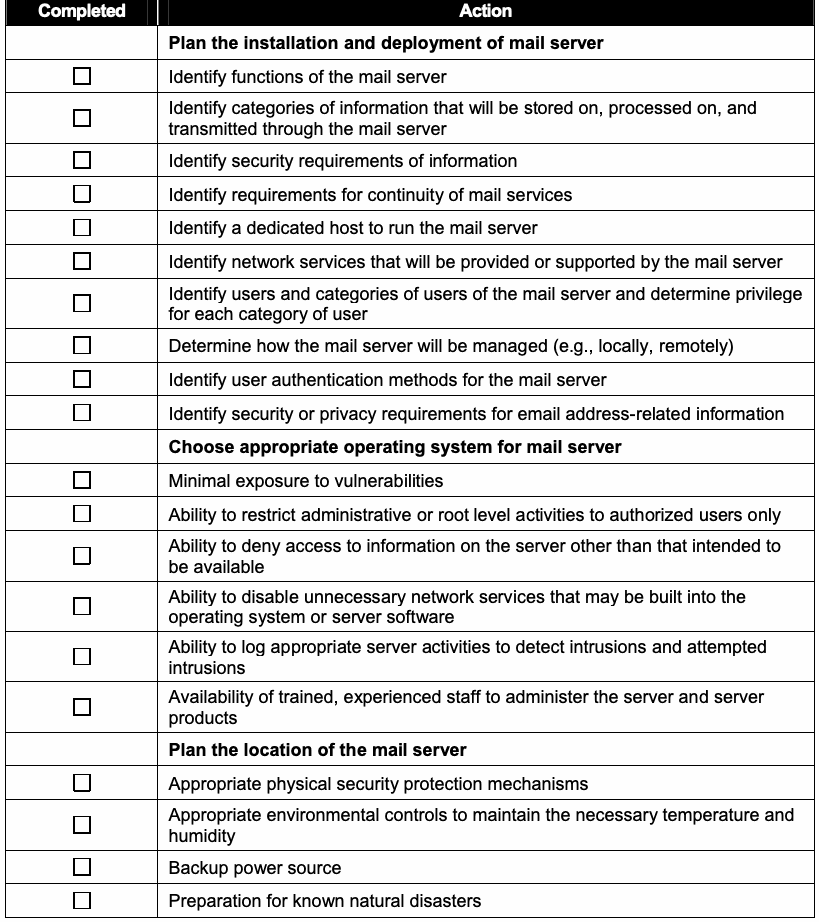
| 完了 | 作業 |
| メールサーバーのインストールと展開を計画する | |
| メールサーバーの機能を特定する | |
| メールサーバー上で保存・処理され、さらに | |
| メールサーバーを通じて送信される情報の分類を特定する | |
| 情報に対するセキュリティ要件を特定する | |
| メールサービスの継続性に関する要件を特定する | |
| メールサーバー専用のホストを特定する | |
| メールサーバーが提供またはサポートするネットワークサービスを特定する | |
| メールサーバーのユーザーとユーザー分類を特定し、権限を決定する | |
| ユーザー分類ごとに | |
| メールサーバーの管理方法を決定する（例: ローカル管理、リモート管理） | |
| メールサーバーのユーザー認証方式を特定する | |
| 電子メールアドレスに関連する情報のセキュリティ要件またはプライバシー要件を特定する | |
| メールサーバーに適したオペレーティングシステムを選択する | |
| 脆弱性にさらされる可能性が最小限であること | |
| 管理者またはrootレベルの操作を許可されたユーザーだけに制限できること | |
| 公開を意図した情報以外のサーバー上の情報へのアクセスを拒否できる | |
| こと | |
| オペレーティングシステムやサーバーソフトウェアに組み込まれた不要なネットワークサービスを無効にできる | |
| こと | |
| 侵入および侵入の試みを検知するため、適切なサーバー活動をログに記録できる | |
| こと | |
| サーバーおよびサーバー製品を管理する、訓練を受けた経験豊富な職員を確保できる | |
| こと | |
| メールサーバーの設置場所を計画する | |
| 適切な物理セキュリティ対策があること | |
| 必要な温度と湿度を維持する適切な環境制御設備があること | |
| 湿度 | |
| 非常用電源があること | |
| 既知の自然災害への備えがあること |
This page has been left blank intentionally.
このページは意図的に空白にしてある。
5. Securing the Mail Server Operating System
5. メールサーバーのオペレーティングシステムの保護
未レビュー訳Protecting a mail server from compromise involves hardening the underlying operating system, the mail server application, and the network to prevent malicious entities from directly attacking the mail server. The first step in securing a mail server, hardening the underlying operating system, is discussed at length in this section. (Securing the mail server application and the network are addressed in Sections 6 and 7, respectively).
メールサーバーを侵害から守るには、基盤となるオペレーティングシステム、メールサーバーアプリケーション、ネットワークを堅牢化し、悪意のある主体がメールサーバーを直接攻撃できないようにする。メールサーバーを安全にする最初の手順である基盤OSの堅牢化について、本節で詳しく説明する（メールサーバーアプリケーションとネットワークの保護については、それぞれ第6章と第7章で説明する）。
All commonly available mail servers operate on a general-purpose operating system. Many security issues can be avoided if the operating systems underlying the mail servers are configured appropriately. Default hardware and software configurations are typically set by manufacturers to emphasize features, functions, and ease of use at the expense of security. Because manufacturers are unaware of each organization’s security needs, each mail server administrator must configure new servers to reflect their organization’s security requirements and reconfigure them as those requirements change. The practices recommended here are designed to help mail server administrators configure and deploy mail servers that satisfy their organization's security requirements.27 Mail server administrators managing existing mail servers should confirm that their systems address the issues discussed.
一般に入手できるすべてのメールサーバーは、汎用オペレーティングシステム上で動作する。メールサーバーの基盤OSを適切に設定すれば、多くのセキュリティ問題を回避できる。ハードウェアとソフトウェアの既定設定は、通常、セキュリティよりも機能や使いやすさを重視してメーカーが定めている。メーカーは各組織のセキュリティ要件を把握していないため、メールサーバー管理者は、新しいサーバーを組織のセキュリティ要件に合わせて設定し、要件が変わるたびに再設定しなければならない。ここで推奨する実務は、組織のセキュリティ要件を満たすようメールサーバーを設定して展開するための指針である。27 既存のメールサーバーを管理している管理者は、自身のシステムがここで説明する課題に対処していることを確認すべきである。
未レビュー訳The techniques for hardening different operating systems vary greatly; therefore, this section includes the generic procedures common in securing most operating systems. Security configuration guides and checklists for many operating systems are publicly available; these documents typically contain recommendations for settings that improve the default level of security, and they may also contain step-by-step instructions for securing systems.28 In addition, many organizations maintain their own guidelines specific to their requirements. Some automated tools also exist for hardening operating systems and their use is strongly recommended.
オペレーティングシステムごとに堅牢化の手法は大きく異なるため、本節では大半のOSの保護に共通する一般的な手順を取り上げる。多くのOS向けに、セキュリティ設定ガイドやチェックリストが公開されている。これらの文書には、既定のセキュリティ水準を高める設定の推奨事項や、システムを安全にするための詳しい手順が含まれることがある。28 また、多くの組織は自らの要件に合わせた指針を維持している。OSを堅牢化する自動ツールも存在し、その利用を強く推奨する。
未レビュー訳Five basic steps are necessary to maintain basic operating system security:
オペレーティングシステムの基本的なセキュリティを維持するには、次の5つの基本手順が必要である。
1.Planning the installation and deployment of the host operating system and other components for the mail server
1.メールサーバー用のホストOSおよび他の構成要素のインストールと展開を計画する
2.Patching and updating the host operating system as required
2.必要に応じてホストOSにパッチを適用し、更新する
3.Hardening and configuring the host operating system to address security adequately
3.十分なセキュリティを確保するようホストOSを堅牢化し、設定する
4.Installing and configuring additional security controls, if needed
4.必要に応じて追加のセキュリティ管理策をインストールし、設定する
5.Testing the host operating system to ensure that the previous four steps adequately address all security issues.
5.前の4つの手順によってすべてのセキュリティ課題に適切に対処できていることを確認するため、ホストOSをテストする
The first step is discussed in Section 4.1. The other steps are covered in Sections 5.1 and 5.2.
最初の手順については4.1節で説明した。残りの手順は5.1節と5.2節で扱う。
5.1 Updating and Configuring the Operating System
5.1 オペレーティングシステムの更新と設定
This section provides an overview of the second, third, and fourth steps in the list above. The combined result of these steps should be to have reasonable protection for the mail server’s operating system.
本節では、前述した一覧の2番目、3番目、4番目の手順の概要を説明する。これらを組み合わせることで、メールサーバーのオペレーティングシステムを妥当な水準で保護できるようにする。
5.1.1 Patch and Upgrade Operating System
5.1.1 オペレーティングシステムへのパッチ適用とアップグレード
Once an operating system is installed, applying needed patches or upgrades to correct for known vulnerabilities is essential. Any operating system has known vulnerabilities that should be corrected before using it to host a mail server. To adequately detect and correct these vulnerabilities, mail server administrators should do the following:
オペレーティングシステムをインストールした後、既知の脆弱性を修正するために必要なパッチやアップグレードを適用することが不可欠である。どのオペレーティングシステムにも、メールサーバーのホストとして使用する前に修正すべき既知の脆弱性がある。こうした脆弱性を適切に検出して修正するため、メールサーバー管理者は次の手順を実施すべきである。
(cid:31) Create and implement a patching process29
(cid:31) パッチ適用プロセスを作成し、実施する。29
未レビュー訳(cid:31) Identify vulnerabilities and applicable patches30
(cid:31) 脆弱性と該当するパッチを特定する。30
未レビュー訳(cid:31) Mitigate vulnerabilities temporarily if needed and if feasible (until patches are available, tested, and installed)
(cid:31) 必要であり実行可能な場合は、パッチが入手され、テストされ、インストールされるまで、脆弱性を一時的に緩和する。
未レビュー訳(cid:31) Install permanent fixes (often called patches, hotfixes, service packs, or updates).
(cid:31) 恒久的な修正（パッチ、ホットフィックス、サービスパック、更新プログラムなどと呼ばれるもの）をインストールする。
未レビュー訳Administrators should ensure that mail servers, particularly new ones, are adequately protected during the patching process. For example, a mail server that is not fully patched or not configured securely could be compromised by threats if it is publicly accessible while it is being patched. When preparing new mail servers for deployment, administrators should do either of the following:
管理者は、パッチ適用中もメールサーバー、特に新規サーバーが適切に保護されていることを確認すべきである。例えば、パッチが完全に適用されていない、または安全に設定されていないメールサーバーを、パッチ適用中にインターネットへ公開すると、脅威に侵害されるおそれがある。新しいメールサーバーを展開用に準備する場合、管理者は次のいずれかを実施すべきである。
(cid:31) Keep the servers disconnected from networks or connect them only to an isolated “build” network until all patches have been transferred to the servers through out-of-band means (e.g., CDs) and installed, and the other configuration steps listed in Section 5.1 have been performed.
(cid:31) すべてのパッチを帯域外の手段（CDなど）でサーバーに転送してインストールし、5.1節に記載した他の設定手順が完了するまで、サーバーをネットワークから切断するか、隔離された「構築」用ネットワークだけに接続する。
未レビュー訳(cid:31) Place the servers on a virtual local area network (VLAN) or other network segment that severely restricts what actions the hosts on it can perform and what communications can reach the hosts—only allowing those events that are necessary for patching and configuring the hosts. Do not transfer the hosts to regular network segments until all the configuration steps listed in Section 5.1 have been performed.
(cid:31) サーバーを仮想LAN（VLAN）または他のネットワークセグメントに配置し、そのホストが実行できる操作とホストに到達できる通信を厳しく制限する。パッチ適用と設定に必要な操作や通信だけを許可する。5.1節に記載した設定手順がすべて完了するまで、サーバーを通常のネットワークセグメントに移動しない。
未レビュー訳Administrators should generally not apply patches to mail servers without first testing them on another identically configured server, because patches can inadvertently cause operational problems. Although administrators can configure mail servers to download patches automatically, the servers should not be configured to install them automatically so that they can first be tested.
パッチが運用上の問題を意図せず引き起こすことがあるため、管理者は通常、同一の設定を施した別のサーバーで事前にテストせずにメールサーバーへパッチを適用すべきではない。メールサーバーがパッチを自動ダウンロードするよう設定することはできるが、事前にテストできるよう、自動インストールは設定すべきではない。
5.1.2 Remove or Disable Unnecessary Services and Applications
5.1.2 不要なサービスとアプリケーションの削除または無効化
Ideally, a mail server should be on a dedicated, single-purpose host. When configuring the operating system, disable everything except that which is expressly permitted – that is, disable all services and applications, enable only those required by the mail server, and then remove the unneeded services and applications. If possible, install the minimal operating system configuration that is required for the mail server application. Choose the “minimal installation” option, if available, to minimize the effort required in removing unnecessary services. In addition, many uninstall scripts or programs are far from perfect in completely removing all components of a service; therefore, it is always better not to install unnecessary services. Some common types of services and applications that should usually be disabled if not required include the following:
メールサーバーは、専用の単一目的ホスト上に配置するのが理想である。オペレーティングシステムを設定する際は、明示的に許可されたもの以外をすべて無効にする。つまり、すべてのサービスとアプリケーションを無効にし、メールサーバーに必要なものだけを有効にしてから、不要なサービスとアプリケーションを削除する。可能であれば、メールサーバーアプリケーションに必要な最小限のOS構成をインストールする。不要なサービスを削除する作業を減らすため、利用可能な場合は「最小インストール」オプションを選択する。また、アンインストール用スクリプトやプログラムではサービスの構成要素を完全に削除できないことも多いため、不要なサービスを最初からインストールしない方が常に望ましい。通常、不要であれば無効にすべきサービスやアプリケーションの一般例を次に示す。
未レビュー訳(cid:31) File and printer sharing services (e.g., Windows Network Basic Input/Output System [NetBIOS] file and printer sharing, Network File System [NFS], File Transfer Protocol [FTP])
(cid:31) ファイル共有およびプリンター共有サービス（例: Windows Network Basic Input/Output System［NetBIOS］のファイル共有とプリンター共有、Network File System［NFS］、File Transfer Protocol［FTP］）。
未レビュー訳(cid:31) Default Web servers
(cid:31) 既定のウェブサーバー
未レビュー訳(cid:31) Wireless networking services
(cid:31) 無線ネットワークサービス
未レビュー訳(cid:31) Remote control and remote access programs, particularly those that do not strongly encrypt their communications (e.g., Telnet)31
(cid:31) リモート制御およびリモートアクセスプログラム、特に通信を強力に暗号化しないもの（例: Telnet）。31
未レビュー訳(cid:31) Directory services (e.g., Lightweight Directory Access Protocol [LDAP], Kerberos, Network Information System [NIS])
(cid:31) ディレクトリサービス（例: Lightweight Directory Access Protocol［LDAP］、Kerberos、Network Information System［NIS］）。
未レビュー訳(cid:31) Language compilers and libraries
(cid:31) プログラミング言語のコンパイラーとライブラリー
未レビュー訳(cid:31) System development tools
(cid:31) システム開発ツール
未レビュー訳(cid:31) System and network management tools and utilities, including Simple Network Management Protocol (SNMP).
(cid:31) Simple Network Management Protocol（SNMP）を含む、システムおよびネットワークの管理ツールとユーティリティー
未レビュー訳Removing unnecessary services and applications is preferable to simply disabling them through configuration settings, because attacks that attempt to alter settings and activate a disabled service cannot succeed when the functional components are completely removed. Disabled services could also be enabled inadvertently through human error.
不要なサービスやアプリケーションは、設定で無効にするだけでなく、削除する方が望ましい。機能する構成要素を完全に削除すれば、設定を変更して無効化されたサービスを有効にしようとする攻撃は成功しない。無効化したサービスが人為的ミスで再び有効になる可能性もある。
Eliminating or disabling unnecessary services enhances the security of a mail server in several ways [Alle00]:
不要なサービスを廃止または無効化すると、複数の点でメールサーバーのセキュリティが高まる [Alle00]。
(cid:31) Other services cannot be compromised and used to attack the host or impair the services of the mail server. Each service added to a host increases the risk of compromise for that host because each service is another possible avenue of access for an attacker. Less is more secure in this case.
(cid:31) 他のサービスが侵害され、ホストへの攻撃やメールサーバーサービスの妨害に利用されることを防げる。ホストにサービスを追加するたびに、攻撃者がアクセスに利用できる経路が増えるため、そのホストが侵害されるリスクも高まる。この場合、機能を減らすほど安全性が高まる。
未レビュー訳(cid:31) Other services might have flaws or might be incompatible with the mail server itself. Disabling or removing them prevents them from affecting the mail server, including its availability.
(cid:31) 他のサービスに欠陥があったり、メールサーバー自体と互換性がなかったりする可能性がある。それらを無効化または削除すれば、可用性への影響を含め、メールサーバーへの悪影響を防げる。
未レビュー訳(cid:31) The host can be configured to better suit the requirements of the particular service. Different services might require different hardware and software configurations, which could lead to unnecessary vulnerabilities or negatively affect performance.
(cid:31) 特定のサービスの要件に合わせてホストを設定しやすくなる。サービスによって必要なハードウェアやソフトウェアの構成が異なり、不必要な脆弱性を生じさせたり、性能に悪影響を与えたりする場合がある。
未レビュー訳(cid:31) By reducing services, the number of logs and log entries is reduced; therefore, detecting unexpected behavior becomes easier (see Section 9).
(cid:31) サービスを減らすとログおよびログエントリーの数も減るため、予期しない動作を検出しやすくなる（9節を参照）。
未レビュー訳Organizations should determine the services to be enabled on a mail server. Services in addition to the mail server service that might be installed include directory protocols to access the organization’s user directory and remote administration services. These services may be required in certain instances, but they may increase the risks to the server. Whether the risks outweigh the benefits is a decision for each organization to make.
メールサーバーで有効にするサービスは、組織が決定すべきである。メールサーバー機能に加えてインストールされる可能性のあるサービスには、組織のユーザーディレクトリにアクセスするためのディレクトリプロトコルや、リモート管理サービスがある。これらのサービスが必要な場合もあるが、サーバーへのリスクが高まる可能性がある。リスクが利点を上回るかどうかは、各組織が判断する。
未レビュー訳If Web-based mail access is to be provided, the Web server running the mail application should be on a separate host from the mail server. Having the Web and mail servers on separate hosts limits the impact if one of them is compromised when compared with having both servers on the same host. The benefits of the latter arrangement are efficient and protected communications, because the Web and mail servers communicate directly within a host instead of over a network.
ウェブベースのメールアクセスを提供する場合、メールアプリケーションを実行するウェブサーバーは、メールサーバーとは別のホストに置くべきである。ウェブサーバーとメールサーバーを別々のホストに置けば、両方を同じホスト上で稼働させる場合に比べ、いずれかが侵害されたときの影響を抑えられる。一方、両方を同じホスト上で稼働させる構成には、ネットワークを介さずホスト内で直接通信できるため、効率性と通信保護の利点がある。
5.1.3 Configure Operating System User Authentication
5.1.3 オペレーティングシステムのユーザー認証を設定する
For mail servers, the authorized users who can configure the operating system are limited to a small number of designated mail server administrators. The users who can access the mail server, however, may range from unrestricted to restricted subsets of the organization’s employees. To enforce policy restrictions, if required, the mail server administrator must configure the operating system to authenticate a prospective user by requiring proof that the user is authorized for such access.
メールサーバーのオペレーティングシステムを設定できる許可ユーザーは、指定された少数のメールサーバー管理者に限られる。一方、メールサーバーへのアクセスユーザーは、組織の全従業員から限定された一部の従業員までさまざまである。ポリシー上の制限を適用するために認証が必要な場合、メールサーバー管理者は、アクセスを許可されたユーザーであることの証明を求めて利用希望者を認証するよう、オペレーティングシステムを設定しなければならない。
Enabling authentication by the host computer involves configuring parts of the operating system, firmware, and applications, such as the software that implements a network service. In special cases, for high-value/high-risk sites, organizations may also use authentication hardware, such as tokens or one-time password devices. Use of authentication mechanisms where authentication information is reusable (e.g., passwords) and transmitted in the clear over a network is strongly discouraged, because the information can be intercepted and used by an attacker to masquerade as an authorized user.
ホストコンピューターによる認証を有効にするには、オペレーティングシステム、ファームウェア、ネットワークサービスを実装するソフトウェアなどのアプリケーションの一部を設定する。特に価値が高くリスクも大きい環境では、トークンやワンタイムパスワード装置などの認証用ハードウェアを使う場合もある。パスワードなど、認証情報を再利用でき、かつネットワーク上で平文送信する認証機構は、情報を傍受した攻撃者が許可ユーザーになりすますために悪用できるため、強く推奨されない。
To ensure the appropriate user authentication is in place, take the following steps [Alle00]:
適切なユーザー認証を実現するため、次の手順を実施してください [Alle00]。
(cid:31) Remove or disable unneeded default accounts and groups. The default configuration of the operating system often includes guest accounts (with and without passwords), administrator or root level accounts, and accounts associated with local and network services. The names and passwords for those accounts are well known. Remove or disable unnecessary accounts to eliminate their use by attackers, including guest accounts on computers containing sensitive information. If there is a requirement to retain a guest account or group, severely restrict its access and change the default password in accordance with the organizational password policy. For default accounts that need to be retained, change the names (where possible and particularly for administrator or root level accounts) and passwords to be consistent with the organizational password policy. Default account names and passwords are commonly known in the attacker community.
(cid:31) 不要な既定のアカウントとグループを削除または無効化する。オペレーティングシステムの既定設定には、ゲストアカウント（パスワードの有無を問わない）、管理者またはrootレベルのアカウント、ローカルサービスやネットワークサービスに関連するアカウントが含まれることがよくある。これらのアカウント名とパスワードは広く知られている。機密情報を扱うコンピューターのゲストアカウントを含め、攻撃者に利用されないよう不要なアカウントを削除または無効化する。ゲストアカウントまたはグループを保持する必要がある場合は、アクセスを厳しく制限し、組織のパスワードポリシーに従って既定のパスワードを変更する。保持する必要がある既定アカウントについては、アカウント名（可能な場合、特に管理者またはrootレベルのアカウント）とパスワードを、組織のパスワードポリシーに合うよう変更する。既定のアカウント名とパスワードは、攻撃者の間で一般に知られている。
未レビュー訳(cid:31) Disable non-interactive accounts. Disable accounts (and the associated passwords) that need to exist but do not require an interactive login. For Unix systems, disable the login shell or provide a login shell with NULL functionality (e.g., /bin/false).
(cid:31) 対話型でないアカウントを無効化する。存在させる必要はあるものの対話型ログインを必要としないアカウントと、それに関連するパスワードを無効化する。Unixシステムでは、ログインシェルを無効化するか、機能を持たないログインシェル（例: /bin/false）を設定する。
未レビュー訳(cid:31) Create the user groups. Assign users to the appropriate groups. Then assign rights to the groups, as documented in the deployment plan. This approach is preferable to assigning rights to individual users because the latter becomes unwieldy with large numbers of users.
(cid:31) ユーザーグループを作成する。ユーザーを適切なグループに割り当て、その後、展開計画に記載した権限をグループに付与する。多数のユーザーがいる場合、個々のユーザーに権限を割り当てる方法は管理が煩雑になるため、この方法が望ましい。
未レビュー訳(cid:31) Create the user accounts. The deployment plan identifies who will be authorized to use each computer and its services. Create only the necessary accounts. Permit the use of shared accounts only when no viable alternatives exist.
(cid:31) ユーザーアカウントを作成する。展開計画には、各コンピューターとそのサービスの利用を許可される人が示されている。必要なアカウントだけを作成する。実用的な代替手段がない場合に限り、共有アカウントの使用を許可する。
未レビュー訳(cid:31) Check the organization’s password policy. Set account passwords appropriately. This policy should address the following areas:
(cid:31) 組織のパスワードポリシーを確認し、適切なアカウントパスワードを設定する。このポリシーでは、次の項目を扱うべきである。
未レビュー訳– Length – a minimum length for passwords. Specify a minimum length of at least eight characters.
– 長さ—パスワードの最小文字数。少なくとも8文字を最小長として指定する。
未レビュー訳– Complexity – the mix of characters required. Require passwords to contain both uppercase and lowercase letters and at least one non-alphanumeric character, and to not be a “dictionary” word.32
– 複雑さ—必要な文字種の組み合わせ。大文字と小文字の両方、および英数字以外の文字を少なくとも1文字含め、「辞書に載っている単語」を使わないよう求める。32
未レビュー訳– Aging – how long a password may remain unchanged. Require users to change their passwords periodically. Administrator or root level passwords should be changed every 30 to 120 days. User level passwords should also be changed periodically, with the period determined by the enforced length and complexity of the password combined with the sensitivity of the information protected. When considering the appropriate aging duration, the exposure level of user passwords should also be taken into account.
– 有効期間—パスワードを変更せずに使用できる期間。ユーザーに定期的なパスワード変更を求める。管理者またはrootレベルのパスワードは30～120日ごとに変更すべきである。ユーザーレベルのパスワードも定期的に変更すべきであり、その間隔は、強制するパスワードの長さと複雑さ、および保護対象情報の機密性を組み合わせて決定する。適切な有効期間を検討する際には、ユーザーパスワードの漏えいリスクも考慮すべきである。
未レビュー訳– Reuse – whether a password may be reused. Some users try to defeat a password aging requirement by changing the password to one they have used previously. If possible, ensure that users cannot change their password by merely appending characters to the beginning or end of their original password (e.g., original password was “mysecret” and is changed to “1mysecret” or “mysecret1”).
– 再利用—以前使ったパスワードを再利用できるかどうか。一部のユーザーは、過去に使ったパスワードへ変更して有効期間の要件を回避しようとする。可能な場合は、元のパスワードの先頭または末尾に文字を追加するだけで変更したことにできないようにする（例: 元のパスワードが「mysecret」で、変更後が「1mysecret」または「mysecret1」）。
未レビュー訳– Authority – who is allowed to change or reset passwords and what sort of proof is required before initiating any changes.
– 権限—誰がパスワードを変更またはリセットできるか、および変更を開始する前にどのような証明を求めるか。
未レビュー訳– Password Security – how passwords should be secured, such as not storing passwords unencrypted on the mail server, and requiring administrators to use different passwords for their mail administration accounts than their other administration accounts.
– パスワードの保護—メールサーバーに暗号化せずにパスワードを保存しないことや、管理者がメール管理用アカウントと他の管理用アカウントで異なるパスワードを使用することなど、パスワードをどのように保護するか。
未レビュー訳(cid:31) Configure computers to prevent password guessing. It is relatively easy for an unauthorized user to try to gain access to a computer by using automated software tools that attempt all passwords. If the operating system provides the capability, configure it to increase the period between login attempts with each unsuccessful attempt. If that is not possible, the second alternative is to deny login after a limited number of failed attempts (e.g., three). Typically, the account is “locked out” for a period of time (such as 30 minutes) or until a user with appropriate authority reactivates it.
(cid:31) パスワード推測を防ぐようコンピューターを設定する。自動化ツールですべてのパスワードを試し、許可されていないユーザーがコンピューターへアクセスしようとするのは比較的容易である。オペレーティングシステムに機能があれば、ログインに失敗するたびに次の試行までの時間を長くするよう設定する。それができない場合の次善策は、ログイン失敗回数を制限し（例: 3回）、上限を超えたらログインを拒否することである。通常、アカウントは一定時間（例: 30分）または適切な権限を持つユーザーが再有効化するまでロックされる。
未レビュー訳The choice to deny login is another situation that requires the mail server administrator to make a decision that balances security and convenience. Implementing this recommendation can help prevent some kinds of attacks, but it can also allow an attacker to make failed login attempts to prevent user access, a denial of service (DoS) condition.
ログインを拒否する設定では、メールサーバー管理者がセキュリティと利便性のバランスを判断する必要がある。この推奨事項の実施で一部の攻撃を防げる一方、攻撃者がログイン失敗を繰り返してユーザーのアクセスを妨げるサービス拒否（DoS）状態を引き起こす可能性もある。
Failed network login attempts should not prevent an authorized user or administrator from logging in at the console. Note that all failed login attempts whether via the network or console should be logged. If remote administration is not to be implemented (see Section 9.5), disable the ability for the administrator or root level accounts to log in from the network.
ネットワーク経由のログイン失敗によって、許可ユーザーまたは管理者がコンソールからログインできなくならないようにすべきである。ネットワーク経由かコンソール経由かを問わず、すべてのログイン失敗を記録すること。リモート管理を導入しない場合（9.5節を参照）、管理者またはrootレベルのアカウントがネットワークからログインできないようにすること。
(cid:31) Install and configure other security mechanisms to strengthen authentication. If the information on the mail server requires it, consider using other authentication mechanisms such as biometrics, smart cards, client/server certificates, or one-time password systems. They can be more expensive and difficult to implement, but they may be justified in some circumstances. When such authentication mechanisms and devices are used, the organization’s policy should be changed accordingly.
(cid:31) 他のセキュリティ機構をインストールして設定し、認証を強化する。メールサーバー上の情報に応じて、生体認証、スマートカード、クライアント／サーバー証明書、ワンタイムパスワードシステムなどの認証方式を検討すること。費用や導入の難しさが増す場合もあるが、状況によっては導入が正当化される。このような認証機構や装置を使用する場合は、それに応じて組織のポリシーを変更すべきである。
未レビュー訳As mentioned earlier, attackers using network sniffers can easily capture passwords passed across a network in clear text. However, passwords are economical and appropriate if properly protected while in transit. Implement authentication and encryption technologies, such as Secure Sockets Layer (SSL)/Transport Layer Security (TLS), Secure Shell (SSH), or Virtual Private Networks (VPNs) (for remote users), to protect passwords during transmission. Requiring server side authentication to be used with encryption technologies reduces the likelihood of successful man-in-the-middle attacks.
前述のとおり、ネットワークスニファーを使用する攻撃者は、ネットワーク上で平文送信されるパスワードを容易に取得できる。ただし、転送中に適切に保護すれば、パスワードは低コストで適切な認証方式である。Secure Sockets Layer（SSL）／Transport Layer Security（TLS）、Secure Shell（SSH）、または（リモートユーザー向けの）仮想プライベートネットワーク（VPN）などの認証技術と暗号化技術を導入して、送信中のパスワードを保護する。暗号化技術と併用してサーバー側認証の使用を必須とすると、中間者攻撃が成功する可能性を低減できる。
5.1.4 Configure Resource Controls Appropriately
5.1.4 リソース制御を適切に設定する
All commonly used modern server operating systems provide the capability to specify access privileges individually for files, directories, devices, and other computational resources. By carefully setting access controls and denying personnel unauthorized access, the mail server administrator can reduce security breaches. For example, denying read access to files and directories helps to protect confidentiality of information, and denying unnecessary write (modify) access can help maintain the integrity of information. Limiting the execution privilege of most system-related tools to authorized system administrators can prevent users from making configuration changes that could reduce security. It also can restrict the attacker’s ability to use those tools to attack the system or other systems on the network.
広く使われている現代のサーバー用オペレーティングシステムはすべて、ファイル、ディレクトリ、デバイス、その他の計算資源ごとにアクセス権限を設定できる。アクセス制御を慎重に設定し、職員の不正アクセスを拒否することで、メールサーバー管理者はセキュリティ侵害を減らせる。例えば、ファイルやディレクトリへの読み取りアクセスを拒否すると情報の機密性を保護でき、不要な書き込み（変更）アクセスを拒否すると情報の完全性を維持できる。ほとんどのシステム関連ツールの実行権限を許可されたシステム管理者に制限すれば、セキュリティを低下させる設定変更をユーザーが行うことを防げる。また、攻撃者がそれらのツールを使ってシステム自身やネットワーク上の他のシステムを攻撃する能力も制限できる。
5.1.5 Install and Configure Additional Security Controls
5.1.5 追加のセキュリティ管理策をインストールして設定する
Operating systems often do not include all of the security controls necessary to secure the operating system, services, and applications adequately. In such cases, administrators need to select, install, and configure additional software to provide the missing controls. Commonly needed controls include the following:
オペレーティングシステムだけでは、OS、サービス、アプリケーションを十分に保護するために必要なセキュリティ管理策がすべて含まれていないことがよくある。その場合、管理者は不足する管理策を補うソフトウェアを選択、インストール、設定する必要がある。一般に必要となる管理策を次に示す。
(cid:31) Anti-malware software, such as anti-virus software, anti-spyware software, and rootkit detectors, to protect the local operating system from malware and to detect and eradicate any infections that occur.33 Examples of when anti-malware software would be helpful include a mail administrator bringing infected media to the mail server and a network service worm contacting the server and infecting it. This software is independent of the anti-malware software used to scan the email passing through the server. For many mail systems, anti-virus software is the only form of anti-malware software needed to protect the OS.
(cid:31) ウイルス対策ソフトウェア、スパイウェア対策ソフトウェア、ルートキット検知ツールなどのマルウェア対策ソフトウェア。ローカルOSをマルウェアから保護し、感染が起きた場合に検知して駆除する。33 感染した媒体をメール管理者がメールサーバーに持ち込む場合や、ネットワークサービスのワームがサーバーに接続して感染させる場合などに役立つ。このソフトウェアは、サーバーを通過する電子メールをスキャンするマルウェア対策ソフトウェアとは別のものである。多くのメールシステムでは、OSを保護するマルウェア対策ソフトウェアとしてウイルス対策ソフトウェアだけで十分である。
未レビュー訳(cid:31) Host-based intrusion detection and prevention software, to detect attacks performed against the mail servers. Section 7.2.2 contains additional information on host-based intrusion detection and prevention software.
(cid:31) メールサーバーに対する攻撃を検知するホストベースの侵入検知・防止ソフトウェア。詳細については7.2.2節を参照されたい。
未レビュー訳(cid:31) Host-based firewalls, to protect the server from unauthorized access.34
(cid:31) 不正アクセスからサーバーを保護するホストベースのファイアウォール。34
未レビュー訳(cid:31) Patch management software, to ensure that vulnerabilities are addressed promptly. Patch management software can be used just to apply patches, or also to identify new vulnerabilities in the mail server’s operating systems, services, and applications.
(cid:31) 脆弱性に速やかに対処するパッチ管理ソフトウェア。パッチ管理ソフトウェアは、パッチの適用だけに使うことも、メールサーバーのオペレーティングシステム、サービス、アプリケーションに新たな脆弱性がないか特定するためにも使える。
未レビュー訳Some mail server administrators also install one or more forms of host-based intrusion detection software on their servers. For example, file integrity checking software can identify changes to critical system files.
メールサーバー管理者の中には、ホストベースの侵入検知ソフトウェアを1種類以上サーバーにインストールする人もいる。例えば、ファイル完全性検査ソフトウェアを使うと、重要なシステムファイルの変更を特定できる。
When planning security controls, mail server administrators should consider the resources that the security controls will consume. A server’s performance could degrade if it does not have enough memory and processing capacity for the controls.
セキュリティ管理策を計画する際、メールサーバー管理者は、それらが消費するリソースを考慮すべきである。管理策を実行するのに十分なメモリーや処理能力がなければ、サーバーの性能が低下することがある。
5.2 Security Testing the Operating System
5.2 オペレーティングシステムのセキュリティテスト
Periodic security testing of the operating system is a vital way to identify vulnerabilities and to ensure that the existing security precautions are effective. Methods for testing operating systems include vulnerability scanning and penetration testing. Vulnerability scanning usually entails using an automated vulnerability scanner to scan a host or groups of hosts on a network for application, network, and operating system vulnerabilities. Penetration testing is a testing process designed to compromise a network using the tools and methodologies of an attacker. It involves iteratively identifying and exploiting the weakest areas of the network to gain access to the remainder of the network, eventually compromising the overall security of the network. Vulnerability scanning should be conducted periodically, such as weekly or monthly, and penetration testing should be conducted at least annually. Because both of these testing techniques also are applicable to testing the mail server application, they are discussed in detail in Section 9.4.35
オペレーティングシステムのセキュリティを定期的にテストすることは、脆弱性を特定し、既存の予防策が有効であることを確認するための重要な方法である。OSのテスト方法には、脆弱性スキャンと侵入テストがある。脆弱性スキャンでは通常、自動スキャナーを使い、ネットワーク上の1台または複数のホストを対象として、アプリケーション、ネットワーク、オペレーティングシステムの脆弱性を調べる。侵入テストは、攻撃者のツールや手法を使ってネットワークへの侵入を試みるテストである。ネットワークの最も弱い部分を反復的に特定して悪用し、他の部分へのアクセスを獲得して、最終的にネットワーク全体のセキュリティを侵害する。脆弱性スキャンは週次または月次など定期的に実施し、侵入テストは少なくとも年1回実施すべきである。これら2つのテスト手法はメールサーバーアプリケーションのテストにも適用できるため、9.4節で詳しく説明する。35
未レビュー訳5.3 Checklist for Securing the Mail Server Operating System
5.3 メールサーバーのオペレーティングシステム保護チェックリスト
| Completed | Action |
| Patch and upgrade operating system | |
| Create and implement a patching process | |
| Identify, test, and install all necessary patches and upgrades to the operating | |
| system | |
| Remove or disable unnecessary services and applications | |
| Remove or disable unnecessary services and applications | |
| Use separate hosts for Web servers, directory servers, and other services | |
| Configure operating system user authentication | |
| Remove or disable unneeded default accounts and groups | |
| Disable non-interactive accounts | |
| Create the user groups for the particular computer | |
| Create the user accounts for the particular computer | |
| Check the organization’s password policy, and set account passwords | |
| appropriately (e.g., length, complexity) | |
| Configure computers to prevent password guessing | |
| Install and configure other security mechanisms to strengthen authentication | |
| Configure resource controls appropriately | |
| Set access controls for files, directories, devices, and other resources |
原本PDFの抜粋画像
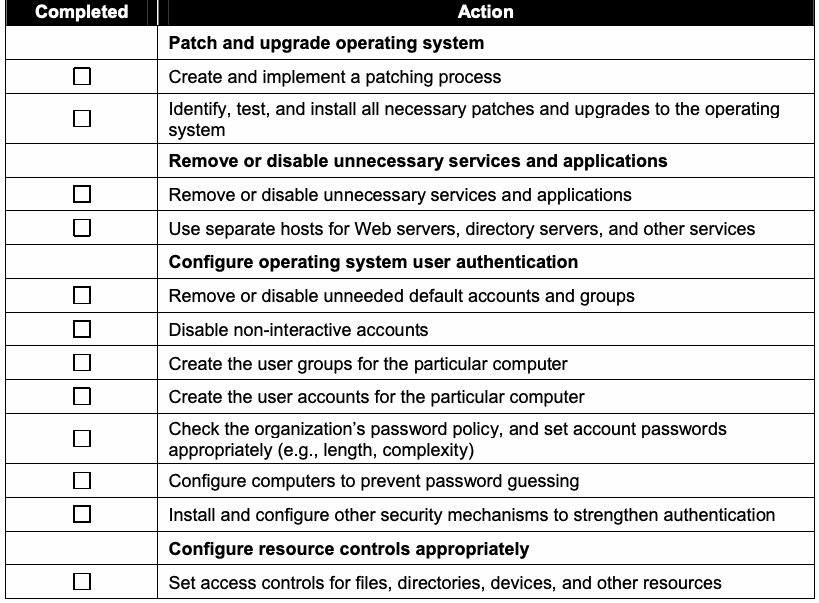
| 完了 | 作業 |
| オペレーティングシステムにパッチを適用し、アップグレードする | |
| パッチ適用プロセスを作成し、実施する | |
| 必要なすべてのパッチとアップグレードを特定、テスト、インストールして、オペレーティング | |
| システムを更新する | |
| 不要なサービスとアプリケーションを削除または無効化する | |
| 不要なサービスとアプリケーションを削除または無効化する | |
| ウェブサーバー、ディレクトリサーバー、その他のサービスを別々のホストに配置する | |
| オペレーティングシステムのユーザー認証を設定する | |
| 不要な既定のアカウントとグループを削除または無効化する | |
| 対話型でないアカウントを無効化する | |
| 対象コンピューターのユーザーグループを作成する | |
| 対象コンピューターのユーザーアカウントを作成する | |
| 組織のパスワードポリシーを確認し、アカウントパスワードを | |
| 適切に設定する（例: 長さ、複雑さ） | |
| パスワード推測を防ぐようコンピューターを設定する | |
| 認証を強化する他のセキュリティ機構をインストールして設定する | |
| リソース制御を適切に設定する | |
| ファイル、ディレクトリ、デバイス、その他の資源にアクセス制御を設定する |
| Completed | Action |
| Limit privileges for most system-related tools to authorized system | |
| administrators | |
| Install and configure additional security controls | |
| Select, install, and configure additional software to provide needed controls not | |
| included in the operating system | |
| Test the security of the operating system | |
| Test operating system after initial install to determine vulnerabilities | |
| Test operating system periodically to determine new vulnerabilities |
原本PDFの抜粋画像
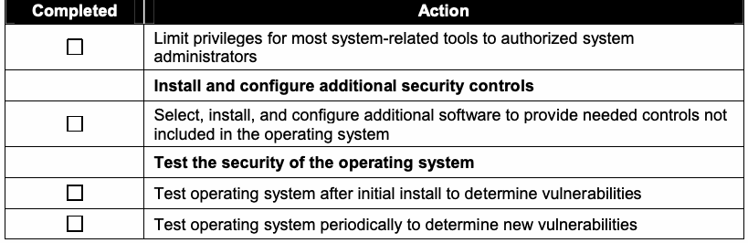
| 完了 | 作業 |
| システム関連ツールの権限を、許可されたシステム | |
| 管理者に制限する | |
| 追加のセキュリティ管理策をインストールして設定する | |
| オペレーティングシステムに含まれない必要な管理策を提供する追加ソフトウェアを選択、インストール、設定する | |
| こと | |
| オペレーティングシステムのセキュリティをテストする | |
| 初回インストール後にOSをテストし、脆弱性を特定する | |
| 定期的にOSをテストし、新たな脆弱性を特定する |
6. Securing Mail Servers and Content
6. メールサーバーとコンテンツの保護
未レビュー訳Hardening mail server applications is an important step in protecting mail servers from compromise. This section provides recommendations for securely installing mail servers and configuring operating system and mail server access controls. Another important part of mail security is protecting the email content that traverses the server, which includes content filtering, malware scanning, and spam prevention. Securing access to mailboxes by encrypting communications, including Web-based mail access, is also addressed in this section. Email content security can also involve email encryption to preserve confidentiality and digital signatures to support integrity and non-repudiation; these are discussed in Section 3.
メールサーバーアプリケーションを堅牢化することは、メールサーバーを侵害から守るための重要な手順である。本章では、メールサーバーを安全にインストールする方法と、オペレーティングシステムおよびメールサーバーのアクセス制御を設定する方法を推奨する。メールのセキュリティでは、サーバーを通過する電子メールコンテンツを保護することも重要である。これには、コンテンツフィルタリング、マルウェアスキャン、スパム防止が含まれる。ウェブベースのメールアクセスを含め、通信を暗号化してメールボックスへのアクセスを保護する方法も本章で扱う。電子メールコンテンツの保護には、機密性を保つための電子メール暗号化や、完全性と否認防止を支えるデジタル署名も含まれる。これらについては第3章で説明した。
6.1 Hardening the Mail Server Application
6.1 メールサーバーアプリケーションの堅牢化
After ensuring that the mail server’s operating system is secured properly, the next step is to install the mail server application and secure it from likely threats. The subsections that follow provide an overview of these two actions.
メールサーバーのオペレーティングシステムが適切に保護されていることを確認した後、次の手順はメールサーバーアプリケーションをインストールし、想定される脅威から保護することである。以降の各節では、この2つの作業の概要を説明する。
6.1.1 Securely Installing the Mail Server
6.1.1 メールサーバーの安全なインストール
In many respects, the secure installation and configuration of the mail server application mirrors the operating system process discussed in Section 5. The overarching principle, as before, is to install only the services required for the mail server and to eliminate any known vulnerabilities through patches or upgrades. Any unnecessary applications, services, or scripts that are installed should be removed immediately once the installation process is complete. During the installation of the mail server, the following steps should be performed:
多くの点で、メールサーバーアプリケーションの安全なインストールと設定は、第5章で説明したオペレーティングシステムの手順と同様である。基本原則は前述のとおり、メールサーバーに必要なサービスだけをインストールし、パッチやアップグレードによって既知の脆弱性をなくすことである。インストールされた不要なアプリケーション、サービス、スクリプトは、インストール完了後ただちに削除すべきである。メールサーバーのインストール中に、次の手順を実施すべきである。
(cid:31) Install the mail server software on a dedicated host
(cid:31) 専用ホストにメールサーバーソフトウェアをインストールする。
未レビュー訳(cid:31) Apply any patches or upgrades to correct for known vulnerabilities
(cid:31) 既知の脆弱性を修正するパッチまたはアップグレードを適用する。
未レビュー訳(cid:31) Create a dedicated physical disk or logical partition (separate from operating system and mail server application) for mailboxes, or host the mailboxes on a separate server
(cid:31) メールボックス用に、オペレーティングシステムとメールサーバーアプリケーションから独立した専用の物理ディスクまたは論理パーティションを作成する。または、メールボックスを別のサーバー上に配置する。
未レビュー訳(cid:31) Remove or disable all services installed by the mail server application but not required (e.g., Web-based mail, FTP, remote administration)
(cid:31) メールサーバーアプリケーションがインストールしたサービスのうち、不要なものをすべて削除または無効化する（例: ウェブベースのメール、FTP、リモート管理）。
未レビュー訳(cid:31) Remove or disable all unneeded default login accounts created by the mail server installation
(cid:31) メールサーバーのインストール時に作成された不要な既定のログインアカウントをすべて削除または無効化する。
未レビュー訳(cid:31) Remove all manufacturer documentation from the server
(cid:31) メーカーの文書をすべてサーバーから削除する。
未レビュー訳(cid:31) Remove any example or test files from the server
(cid:31) サンプルファイルまたはテストファイルをサーバーからすべて削除する。
未レビュー訳(cid:31) Apply appropriate security template or hardening script to the server
(cid:31) 適切なセキュリティテンプレートまたは堅牢化スクリプトをサーバーに適用する。
未レビュー訳(cid:31) Reconfigure SMTP, POP, and IMAP service banners (and others as required) NOT to report mail server and operating system type and version (this may not be possible with all mail servers)
(cid:31) SMTP、POP、IMAPなどのサービスバナーを再設定し、（すべてのメールサーバーで可能とは限りませんが）メールサーバーとオペレーティングシステムの種類およびバージョンを報告しないようにする。
未レビュー訳(cid:31) Disable dangerous or unnecessary mail commands (e.g., VRFY and EXPN).
(cid:31) 危険または不要なメールコマンド（例: VRFY、EXPN）を無効化する。
未レビュー訳6.1.2 Configuring Operating System and Mail Server Access Controls
6.1.2 オペレーティングシステムとメールサーバーのアクセス制御の設定
Most mail server host operating systems provide the capability to specify access privileges individually for files, devices, and other computational resources on that host. Any information that the mail server can access using these controls can potentially be distributed to all users accessing the mail server. The mail server software is likely to include mechanisms to provide additional file, device, and resource access controls specific to its operation. It is important to set identical permissions for both the operating system and mail server application; otherwise, too much or too little access may be granted to users. Mail server administrators should consider how best to configure access controls to protect information stored on their public mail server from two perspectives:
多くのメールサーバーホスト用オペレーティングシステムでは、そのホスト上のファイル、デバイス、その他の計算資源ごとにアクセス権限を指定できる。メールサーバーがこれらの制御を使ってアクセスできる情報は、メールサーバーにアクセスするすべてのユーザーへ配布される可能性がある。メールサーバーソフトウェアには、ファイル、デバイス、資源に対する、その動作に固有の追加アクセス制御機構が含まれていることがある。ユーザーに過剰なアクセス権または不十分なアクセス権を与えないよう、オペレーティングシステムとメールサーバーアプリケーションの両方で同一の権限を設定することが重要である。メールサーバー管理者は、公開メールサーバーに保存された情報を保護するアクセス制御について、次の2つの観点から最適な設定方法を検討すべきである。
未レビュー訳(cid:31) Limit the access of the mail server application to a subset of computational resources
(cid:31) メールサーバーアプリケーションがアクセスできる計算資源を一部に限定する。
未レビュー訳(cid:31) Limit the access of users through additional access controls enforced by the mail server, where more detailed levels of access control are required.
(cid:31) より詳細なアクセス制御が必要な場合、メールサーバーが強制する追加のアクセス制御によってユーザーのアクセスを制限する。
未レビュー訳The proper setting of access controls can help prevent the disclosure of sensitive or restricted information that is not intended for public dissemination. In addition, access controls can be used to limit resource use in the event of a DoS attack against the mail server.
アクセス制御を適切に設定すると、一般公開を意図しない機密情報または制限対象情報の漏えいを防げる。また、メールサーバーに対するサービス拒否（DoS）攻撃が起きた場合、アクセス制御を使ってリソースの使用を制限できる。
Typical files to which access should be controlled are as follows:
一般に、次のファイルへのアクセスを制御すべきである。
(cid:31) Application software and configuration files
(cid:31) アプリケーションソフトウェアおよび設定ファイル
未レビュー訳(cid:31) Files directly related to security mechanisms:
(cid:31) セキュリティ機構に直接関連するファイル:
未レビュー訳– Password hash files and other files used in authentication
– パスワードハッシュファイルおよび認証に使用するその他のファイル
未レビュー訳– Files containing authorization information used in controlling access
– アクセス制御に使用する認可情報を含むファイル
未レビュー訳– Cryptographic key material used in confidentiality, integrity, and non-repudiation services
– 機密性、完全性、否認防止の各サービスで使用する暗号鍵の素材
未レビュー訳(cid:31) Server log and system audit files
(cid:31) サーバーログおよびシステム監査ファイル
未レビュー訳(cid:31) System software and configuration files.
(cid:31) システムソフトウェアおよび設定ファイル。
未レビュー訳Ensure that the mail server application executes only under a unique individual user and group identity with very restrictive access controls. Thus, new user and group identities to be used exclusively by the mail server software need to be established. The new user and new group should be independent and unique from all other users and groups. This is a prerequisite for implementing the access controls described in the following steps. Although the server may initially have to run with root (Unix) or administrator/system (Windows) privileges to bind to the necessary TCP ports, do not allow the server to continue to run at this level of access.
メールサーバーアプリケーションは、厳しいアクセス制御の下で、固有かつ専用のユーザーIDとグループIDとしてのみ実行するようにすること。そのため、メールサーバーソフトウェアだけに使用する新しいユーザーIDとグループIDを作成する必要がある。新しいユーザーとグループは、他のすべてのユーザーやグループと独立し、固有であるべきである。これは、以降の手順で説明するアクセス制御を実施するための前提条件である。必要なTCPポートをバインドするため、サーバーを最初にroot（Unix）またはadministrator/system（Windows）の権限で実行しなければならない場合はあるが、そのレベルのアクセス権で実行し続けることを許可しないこと。
In addition, use the mail server operating system to limit files accessed by the mail service processes. These processes should have read-only access to those files necessary to perform the service and should have no access to other files, such as server log files. Use mail server host operating system access controls to enforce the following:
さらにメールサーバーのOSを使い、メールサービスプロセスがアクセスできるファイルを制限すること。サービスの実行に必要なファイルには読み取り専用でアクセスできるようにし、サーバーログファイルなどの他のファイルにはアクセスさせないこと。メールサーバーホストのオペレーティングシステムのアクセス制御を使って、次の要件を適用すること。
(cid:31) Temporary files created by the mail server application are restricted to a specified and appropriately protected subdirectory (if possible).
(cid:31) メールサーバーアプリケーションが作成する一時ファイルは、指定された適切に保護されたサブディレクトリ内に限定する（可能な場合）。
未レビュー訳(cid:31) Access to any temporary files created by the mail server application is limited to the mail server processes that created these files (if possible).
(cid:31) メールサーバーアプリケーションが作成する一時ファイルには、それらを作成したメールサーバープロセスだけがアクセスできるようにする（可能な場合）。
未レビュー訳It is also necessary to ensure that the mail server cannot save files outside the specified file structure dedicated to the mail server. This may be a configuration choice in the server software, or it may be a choice in how the server process is controlled by the operating system. Ensure that such directories and files (outside the specified directory tree) cannot be accessed, even if users know the locations of those files.
指定したファイル構造の外部にメールサーバーがファイルを保存できないことも確保する必要がある。これはサーバーソフトウェアの設定による場合も、オペレーティングシステムがサーバープロセスを制御する方法による場合もある。指定ディレクトリツリーの外部にあるディレクトリやファイルは、ユーザーが場所を知っていてもアクセスできないようにすること。
未レビュー訳On Linux and Unix hosts, consider using a “chroot jail” for the mail server application. Using chroot changes the mail server’s “view” of the host file system such that the apparent root directory is not the real file system root directory but rather one of its subparts. Thus, if the mail server is successfully compromised, the attacker only gains access to the limited subpart of the file system accessible via chroot. This is a very powerful security measure.
LinuxやUnixのホストでは、メールサーバーアプリケーションに「chroot jail」を使用することを検討すること。chrootを使うと、メールサーバーから見えるホストのファイルシステムが変わり、実際のファイルシステムのルートディレクトリではなく、その一部が見かけ上のルートディレクトリになる。そのためメールサーバーが侵害されても、攻撃者がアクセスできるのはchrootで参照可能なファイルシステムの限られた部分だけである。これは非常に強力なセキュリティ対策である。
To mitigate the effects of certain types of DoS attacks, configure the mail server to limit the amount of operating system resources it can consume. Some examples include:
特定の種類のDoS攻撃の影響を軽減するため、メールサーバーが消費できるオペレーティングシステム資源の量を制限するよう設定する。例を次に示す。
(cid:31) Installing users’ mailboxes on a different server (preferred), hard drive, or logical partition than the operating system and mail server application
(cid:31) ユーザーのメールボックスを、オペレーティングシステムとメールサーバーアプリケーションとは別のサーバー、ハードディスク、または論理パーティションに配置する（別サーバーが望ましい）。
未レビュー訳(cid:31) Configuring the mail server application so that it cannot consume all available space on its hard drives or partitions
(cid:31) メールサーバーアプリケーションがハードディスクやパーティションの空き領域をすべて消費できないよう設定する。
未レビュー訳(cid:31) Limiting the size of attachments that are allowed
(cid:31) 許可する添付ファイルのサイズを制限する。
未レビュー訳(cid:31) Ensuring log files are stored in a location that is sized appropriately.
(cid:31) ログファイルを、必要な容量を確保した場所に保存する。
未レビュー訳To some degree, these actions protect against attacks that attempt to fill the file system on the mail server host operating system with extraneous and incorrect information that may cause the system to crash. This also protects against attacks that attempt to fill primary random access memory with unnecessary processes to slow down or crash the system, thus limiting mail server availability. Logging information generated by the mail server host operating system may help in recognizing such attacks. As discussed in Section 9.1, administrators should store mail server logs on centralized logging servers whenever possible, and also store logs locally if feasible. If an attack causes the mail server to be compromised, the attacker could modify or erase locally stored logs to conceal information on the attack. Having a copy of the logs on a centralized logging server gives administrators more information to use when investigating such a compromise.
これらの対策は、メールサーバーホストのオペレーティングシステム上のファイルシステムを無関係または不正な情報で埋め尽くし、システムをクラッシュさせる攻撃をある程度防ぐ。また、不要なプロセスで主記憶を埋め、システムを遅くしたりクラッシュさせたりする攻撃からも保護し、メールサーバーの可用性低下を抑える。メールサーバーホストのオペレーティングシステムが生成するログ情報は、このような攻撃の認識に役立つ場合がある。9.1節で説明するように、可能な場合、管理者はメールサーバーのログを集中ログサーバーに保存し、実現可能であればローカルにも保存すべきである。攻撃によってメールサーバーが侵害されると、攻撃者がローカルに保存されたログを改変または削除し、攻撃の情報を隠す可能性がある。ログの複製を集中ログサーバーに保存しておけば、管理者は侵害の調査に利用できる情報をより多く得られる。
6.2 Protecting Email from Malware
6.2 マルウェアから電子メールを保護する
Email has increasingly been used as a means for sending binary files in the form of attachments. Initially, this did not pose much of a security risk because attachments were mostly small word processing documents or photos. As more organizations began using email for day-to-day collaboration, the size and types of email attachments increased. Today, many email messages are sent with attachments such as program executables, pictures, music, and sounds. Many forms of malware, including viruses, worms, Trojan horses, and spyware—malware intended to violate a user’s privacy—are often transmitted in attachments. Increasingly, attackers are using email to deliver zero-day attacks at targeted organizations before these vulnerabilities are known publicly. These attacks are often targeted at office productivity software and give the attacker control over users’ workstations. This control can be exploited to escalate privileges, gain access to sensitive information, monitor users’ actions (e.g., keystrokes), and perform other malicious actions.
電子メールは、添付ファイルとしてバイナリファイルを送信する手段にますます使われるようになっている。当初、添付ファイルの大半は小さな文書ファイルや写真だったため、セキュリティリスクはそれほど大きくなかった。多くの組織が日常的な共同作業に電子メールを使うようになると、添付ファイルのサイズと種類が増加した。今日では、プログラムの実行ファイル、画像、音楽、音声などを添付した電子メールが多数送られている。ウイルス、ワーム、トロイの木馬、ユーザーのプライバシー侵害を目的とするスパイウェアなど、さまざまなマルウェアが添付ファイルを通じて送信される。攻撃者は、脆弱性が公に知られる前に標的組織へゼロデイ攻撃を届ける手段として、電子メールを使うことも増えている。多くの場合、こうした攻撃はオフィス生産性ソフトウェアを標的にし、攻撃者がユーザーのワークステーションを制御できるようにする。その制御を利用して権限を昇格し、機密情報にアクセスし、キー入力などのユーザー操作を監視し、その他の悪意ある行為を実行できる。
Determining whether to allow certain types of attachments can be a difficult decision for an organization. Not allowing any attachments would simplify a system and make it more secure; however, it would dramatically reduce its usefulness, and users might employ encoding tricks to work around the restriction to “get the job done”. Ultimately, organizations choose to allow at least some email attachments.
特定の種類の添付ファイルを許可するかどうかを決めるのは、組織にとって難しい判断である。添付ファイルを一切許可しなければシステムは単純になり安全性も高まるが、有用性が大幅に低下し、ユーザーが仕事を進めるために制限を回避する符号化手法を使う可能性もある。最終的には、組織は少なくとも一部の電子メール添付ファイルを許可する。
Organizations should determine which types of attachments to allow. The simplest approach is to allow all types of attachments. If this is the case, then some sort of malware scanner (e.g., anti-virus software, anti-spyware software) should be installed in the mail transit path to filter out known malware, and perhaps even some behavior blocking utility installed at the client to prevent any unwanted operations by executable attachments from occurring. A better approach is to filter potentially dangerous attachment types (e.g., .vbs, .ws, .wsc file extensions) at the mail server or mail gateway, while conducting malware scans on allowed file types. Although filtering on such extensions is a good first step, its effectiveness is limited because attackers can alter the extensions. Instead of simply checking the extension, filtering should check the file header, footer, or other identifying aspects of the file if possible to identify the attachment. Organizations might also wish to consider setting different rules for internally originated versus externally originated email or trusted versus untrusted organizations (e.g., trust .gov/.mil domains), although this latter option is subject to email address spoofing.
組織は、どの種類の添付ファイルを許可するかを決めるべきである。最も単純な方法は、すべての種類の添付ファイルを許可することである。その場合、既知のマルウェアを除去するため、何らかのマルウェアスキャナー（ウイルス対策ソフトウェアやスパイウェア対策ソフトウェアなど）をメール転送経路にインストールすべきである。また、実行ファイルの添付ファイルによる望ましくない操作を防ぐため、クライアント側に動作ブロックツールをインストールすることも考えられる。よりよい方法は、メールサーバーまたはメールゲートウェイで危険性のある添付ファイルの種類（例: .vbs、.ws、.wscの拡張子）をフィルタリングし、許可したファイルの種類をマルウェアスキャンすることである。このような拡張子によるフィルタリングはよい第一歩であるが、攻撃者は拡張子を変更できるため効果には限界がある。可能であれば、拡張子だけを確認するのではなく、ファイルヘッダー、フッター、その他の識別要素を確認して添付ファイルを特定し、フィルタリングすべきである。組織は、内部発信メールと外部発信メール、または信頼できる組織と信頼できない組織（例: .gov/.milドメインを信頼する）で異なる規則を設定することも検討できる。ただし後者は、電子メールアドレスの詐称を受ける可能性がある。
Attachment filtering is not completely effective unless all attachments are blocked, and that is not feasible. Some of the most useful attachment types, such as those from office productivity suites, are also some of the riskiest. Also, sophisticated attackers can obfuscate the true nature of their malicious attachments in various ways. For example, attackers sometimes send emails that have hyperlinks to a malicious file on a remote Web site; if a user clicks on the hyperlink and it uses HTTPS instead of HTTP, the malicious file will be downloaded while protected by HTTPS, concealing it from detection by network-based security controls. Organizations could filter active hyperlinks in email messages to prevent this, but this would reduce the usability of email messages for users. Also, an organization might find it desirable for users to place hyperlinks to files in their email messages instead of attaching the files to their messages, since this reduces the load on the mail servers.
すべての添付ファイルを遮断しない限り、添付ファイルのフィルタリングは完全には有効ではないが、すべてを遮断することは現実的ではない。オフィス生産性ソフトウェアのファイルなど、最も有用な添付ファイルの種類の一部は、最もリスクの高い種類でもある。また、巧妙な攻撃者はさまざまな方法で悪意ある添付ファイルの実体を分かりにくくできる。例えば、攻撃者は悪意あるファイルが置かれたリモートウェブサイトへのハイパーリンクを含むメールを送信する場合がある。ユーザーがリンクをクリックし、HTTPではなくHTTPSが使われると、HTTPSで保護された状態で悪意あるファイルがダウンロードされ、ネットワークベースのセキュリティ管理策から検知されなくなる。組織はこれを防ぐため、電子メールメッセージ内のアクティブなハイパーリンクをフィルタリングできるが、ユーザーにとってメールの使いやすさが低下する。また、ファイルをメールに添付する代わりに、メール内にファイルへのハイパーリンクを記載させる方が望ましいと組織が判断する場合もある。これはメールサーバーの負荷を減らせるためである。
Organizations should also consider restricting the maximum acceptable size for email attachments. This benefits mail servers in several ways, including decreasing mail queue latency, storage requirements, and server processor requirements. The combination of these benefits decreases the likelihood of a successful denial of service attack caused by a deluge of oversized messages. [Mell05] However, setting a low maximum size for attachments could inadvertently cause legitimate content to be blocked, reducing the usability and value of the mail system.
組織は、電子メール添付ファイルに許可する最大サイズも検討すべきである。添付ファイルの最大サイズを設定すると、メールキューの遅延、ストレージ要件、サーバーの処理要件が減るなど、複数の利点がある。これらの利点が組み合わさることで、サイズ超過の大容量メッセージが大量に送られることによるサービス拒否攻撃の成功可能性を低減できる。[Mell05] ただし、添付ファイルの最大サイズを低く設定しすぎると、正当なコンテンツが誤って遮断され、メールシステムの利便性と価値が低下する可能性がある。
Email encryption tends to make filtering more complicated or ineffective. Once a message is encrypted, filtering on the mail server and/or perimeter devices is ineffective unless they can decrypt the message, scan it, and re-encrypt it. This is problematic because of the huge performance requirement. Privacy and other concerns with this sort of solution also exist. Generally speaking, if encryption is used extensively, then filtering has to occur at the end point (mail client user workstation), which is susceptible to being bypassed.
電子メールを暗号化すると、フィルタリングは複雑になるか、効果が低下する傾向がある。メッセージを暗号化すると、メールサーバーや境界装置が復号し、スキャンして、再暗号化できない限り、そこでのフィルタリングは有効に機能しない。これは非常に大きな処理性能を必要とするため問題になる。この方法にはプライバシー上その他の懸念もある。一般に暗号化を広範に使用する場合、エンドポイント（メールクライアントを利用するユーザーのワークステーション）でフィルタリングする必要があるが、この方法は回避されるおそれがある。
Another vector for email-borne malware that is often overlooked is personal mail accounts accessed via Web browsers. Organizations need to determine if having access to personal mail accounts from organizational computers is appropriate, and if so, take measures to ensure users do not put organization assets at risk when accessing their personal accounts.
見落とされがちな、電子メールを介したマルウェアの別の侵入経路は、ウェブブラウザーからアクセスする個人用メールアカウントである。組織は、組織のコンピューターから個人用メールアカウントへのアクセスを許可することが適切か判断し、許可する場合は、そのアクセスによってユーザーが組織の資産を危険にさらさないよう対策を講じる必要がある。
In addition to email attachments, malware can be transmitted via email by other means. For example, many mail clients support HTML-based messages. These messages often contain active content in the form of a client-side scripting language or control objects that can affect the client. The most popular types of active content are ActiveX, Java, JavaScript, and Visual Basic Script (VBScript). Organizations should determine whether or not to allow or block active content or forms of active content within email messages.36 HTML-based messages also frequently contain other undesirable content, such as spam messages and phishing attempts.37 Phishing refers to use of deceptive computer-based means to trick individuals into disclosing sensitive personal information. For example, an attacker could send victims an email message that looks as if it were sent from a well-known organization, such as an online business, credit card company, or financial institution. The email is intended to deceive users into responding to the email and disclosing personal data.
添付ファイル以外の手段でも、電子メールを通じてマルウェアが送信されることがある。例えば、多くのメールクライアントはHTML形式のメッセージをサポートしている。このようなメッセージには、クライアント側スクリプト言語や制御オブジェクトなど、クライアントに影響を与えるアクティブコンテンツが含まれることがよくある。代表的なアクティブコンテンツは、ActiveX、Java、JavaScript、Visual Basic Script（VBScript）である。組織は、電子メールメッセージ内のアクティブコンテンツまたはその種類を許可するか遮断するかを決定すべきである。36 HTML形式のメッセージには、スパムやフィッシングなど、望ましくない他のコンテンツもよく含まれている。37 フィッシングとは、コンピューターを介した欺瞞的手段を使い、個人をだまして機密性の高い個人情報を開示させることである。例えば、攻撃者は、オンライン企業、クレジットカード会社、金融機関などの著名な組織から送信されたように見える電子メールを被害者に送り、返信させて個人データを開示させようとする。
未レビュー訳If a mail server does not have malware scanning software installed (e.g., anti-virus software, anti-spyware software), or the software is ineffective, the potential security threat posed by malware increases for end users. Some popular mail clients have default configurations that are used by malware to infect client hosts and transmit malware to other users. Section 8 contains additional information on configuring mail clients to improve their security. In addition to mail client configuration, it is important that the mail client hosts use anti-virus software and possibly other security technologies as well to protect them from email-borne threats.
メールサーバーにマルウェアスキャンソフトウェア（ウイルス対策ソフトウェアやスパイウェア対策ソフトウェアなど）がインストールされていない場合、またはソフトウェアが有効に機能していない場合、エンドユーザーがマルウェアにさらされるセキュリティ上のリスクが高まる。一部の一般的なメールクライアントには、マルウェアがクライアントホストを感染させ、他のユーザーへマルウェアを送信するために悪用する既定設定がある。メールクライアントの安全性を高める設定については、第8章で詳しく説明する。メールクライアントの設定に加え、電子メールを介した脅威から保護するため、メールクライアントのホストにウイルス対策ソフトウェアや他のセキュリティ技術を導入することも重要である。
Section 6.2.1 discusses the need for malware scanning for both individual mail clients and the mail infrastructure. Sections 6.2.2 discusses content filtering technologies that can also be helpful at stopping email-borne threats. In addition to deploying and configuring technologies, an organization should also conduct training and awareness activities for users, particularly telecommuters using computers outside the organization’s control, so that users can better recognize malicious email messages and attachments and handle them appropriately. This is discussed in Section 6.2.3.
6.2.1節では、個々のメールクライアントとメール基盤の両方でマルウェアスキャンが必要な理由を説明する。6.2.2節では、電子メールを介した脅威の阻止にも役立つコンテンツフィルタリング技術を取り上げる。組織は技術を導入して設定するだけでなく、特に組織の管理下にないコンピューターを使う在宅勤務者などのユーザーに、訓練と意識向上の取り組みも行うべきである。これにより、ユーザーは悪意あるメールや添付ファイルを見分け、適切に処理できるようになる。この点は6.2.3節で説明する。
6.2.1 Malware Scanning
6.2.1 マルウェアスキャン
To protect against viruses, worms, and other forms of malware, it is necessary to implement scanning at one or more points within the email delivery process. Malware scanning can be implemented on the firewall, mail relay, or mail gateway appliance as the email data enters the organization’s network, on the mail server itself, and/or on the end users’ hosts. Each option has its own strengths and weaknesses, which are discussed below. Generally, organizations should implement at least two levels of malware scanning—one at the end users’ host level and one at the mail server or the firewall/mail relay/mail gateway level—and should consider implementing malware scanning at all three levels.
ウイルス、ワーム、その他のマルウェアから保護するには、電子メールの配信過程の1か所以上でスキャンを実施する必要がある。マルウェアスキャンは、組織のネットワークに入る電子メールデータを対象にファイアウォール、メール中継サーバー、メールゲートウェイ装置で実施する方法、メールサーバー自体で実施する方法、エンドユーザーのホストで実施する方法がある。各方法には長所と短所があり、以下で説明する。一般に、組織は少なくとも2段階のマルウェアスキャン（エンドユーザーのホストと、メールサーバーまたはファイアウォール／メール中継サーバー／メールゲートウェイのそれぞれで1段階ずつ）を実施し、3段階すべてでの実施も検討すべきである。
When providing multiple layers of malware protection, organizations should consider choosing products from different manufacturers. Diversity increases the chances of blocking the latest threats, because the response time of individual manufacturers to new threats varies. This means that when the newest threats appear, one product can often detect them earlier than another over some period of time (typically hours, perhaps a few days). Since each manufacturer uses different detection methods, some products are also better able to detect certain types of new threats than other products.
マルウェア対策を複数層にする場合、組織は異なるメーカーの製品を選ぶことを検討すべきである。メーカーごとに新しい脅威への対応時間が異なるため、製品を多様化すると最新の脅威を遮断できる可能性が高まる。つまり、新しい脅威が現れたとき、ある製品が別の製品より早く検知できる期間が生じることがよくある（通常は数時間、場合によっては数日）。メーカーによって検知方法も異なるため、特定の新たな脅威の検出能力が他製品より高いものもある。
6.2.1.1 Scanning at the Firewall, Mail Relay, or Mail Gateway Appliance
6.2.1.1 ファイアウォール、メール中継サーバー、またはメールゲートウェイ装置でのスキャン
The first option is scanning for malware at the firewall (application proxy), mail relay (see Figure 6.1), or mail gateway appliance, which can intercept messages before they reach the organization’s mail server. The device listens on TCP port 25 for SMTP connections, scans each message, then forwards the messages not containing malware to the mail server, which is configured to listen on an unprivileged, unused port, rather than the usual port 25. A disadvantage to this approach is that constant scanning of the SMTP stream can reduce firewall/ mail relay/mail gateway performance. Whether this performance hit is significant depends on mail load, including both the typical number of emails per day and the peak rates of emails, and quality of service requirements. One remedy to improve performance is to offload malware scanning to a dedicated server.
最初の方法は、ファイアウォール（アプリケーションプロキシ）、メール中継サーバー（図6.1を参照）、またはメールゲートウェイ装置でマルウェアをスキャンすることである。これらの装置は、メッセージが組織のメールサーバーに届く前に受け取ることができる。装置はTCPポート25でSMTP接続を待ち受け、各メッセージをスキャンし、マルウェアを含まないメッセージをメールサーバーに転送する。メールサーバーは通常のポート25ではなく、特権のない未使用ポートで待ち受けるよう設定する。この方法の欠点は、SMTPストリームを継続的にスキャンすると、ファイアウォール、メール中継サーバー、メールゲートウェイの性能が低下する可能性があることである。性能への影響が大きいかどうかは、1日の一般的なメール数とピーク時のメール送信率を含むメール負荷や、サービス品質要件によって異なる。性能を高める方法の1つは、マルウェアスキャンを専用サーバーにオフロードすることである。
未レビュー訳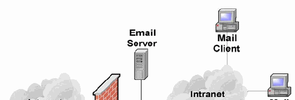
メールクライアント、メールサーバー、イントラネットの接続を示すネットワーク図の一部。
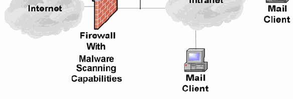
マルウェア検査機能を備えたファイアウォールを通じ、インターネットとメールクライアントを接続する構成図。
Figure 6.1: Malware Scanning Implemented on Firewall
図6.1: ファイアウォールで実施するマルウェアスキャン
The benefits of scanning email at the firewall, mail relay, or mail gateway appliance are as follows:
ファイアウォール、メール中継サーバー、またはメールゲートウェイ装置で電子メールをスキャンする利点は次のとおりである。
(cid:31) Can scan email in both directions (inbound and outbound from the organization’s network)
(cid:31) 組織のネットワークに対する送受信の両方向の電子メールをスキャンできる。
未レビュー訳(cid:31) Can stop the majority of messages containing malware at the perimeter before they enter the network and are passed to the mail server
(cid:31) マルウェアを含むメッセージの大半を、境界で阻止してネットワークに侵入しメールサーバーへ転送される前に止められる。
未レビュー訳(cid:31) Can implement scanning for inbound email with minor changes to the existing mail server configuration
(cid:31) 既存のメールサーバー設定を少し変更するだけで、受信メールのスキャンを実施できる。
未レビュー訳(cid:31) Can reduce the amount of email reaching the mail servers, allowing them to operate more efficiently with lower operational costs
(cid:31) メールサーバーに届くメールの量を減らし、運用効率を高めて運用コストを下げられる。
未レビュー訳(cid:31) Can reduce the amount of scanning to be performed by the mail servers, thus reducing their load
(cid:31) メールサーバーが実施するスキャンの量を減らし、その負荷を軽減できる。
未レビュー訳(cid:31) Can centrally manage scanning to ensure compliance with the organization’s security policy and regular application of updated malicious code signatures
(cid:31) スキャンを一元管理し、組織のセキュリティポリシーへの準拠と、悪意あるコードのシグネチャの定期的な更新を確保できる。
未レビュー訳(cid:31) For some mail firewall appliances, can provide secure authenticated access to Web-based mail applications.
(cid:31) 一部のメールファイアウォール装置では、ウェブベースのメールアプリケーションに対し、安全な認証済みアクセスを提供できる。
未レビュー訳Scanning for malware at the firewall, mail relay, or mail gateway appliance has a number of weaknesses:
ファイアウォール、メール中継サーバー、またはメールゲートウェイ装置でマルウェアをスキャンする方法には、いくつかの弱点がある。
(cid:31) Can require significant modification of the existing mail server configuration when scanning mail in the outbound direction
(cid:31) 送信方向のメールをスキャンする場合、既存のメールサーバー設定に大幅な変更が必要になることがある。
未レビュー訳(cid:31) Cannot scan encrypted emails
(cid:31) 暗号化された電子メールはスキャンできない。
未レビュー訳(cid:31) Offers no protection to internal users once malware is on the organization’s internal network, unless the network is configured so that SMTP traffic gets routed through a dedicated scanner before reaching the mail server
(cid:31) SMTP通信がメールサーバーに届く前に専用スキャナーを通過するようネットワークを設定しない限り、マルウェアが組織内部のネットワークに侵入した後の内部ユーザーは保護されない。
未レビュー訳(cid:31) May require powerful (expensive) servers or appliances to handle the load of a large organization.
(cid:31) 大規模組織の負荷を処理するには、高性能（高価）なサーバーや装置が必要になる場合がある。
未レビュー訳6.2.1.2 Scanning on the Mail Server Itself
6.2.1.2 メールサーバー自体でのスキャン
The second option for placement of a mail malware scanner is on the mail server itself (see Figure 6.2). Many third-party applications are available to scan the contents of the message stores for most popular mail servers. These applications inspect the email sent between internal users, which normally do not pass through the organization’s firewall/mail relay/mail gateway. Performing scanning on the mail server also provides an additional layer of protection against malware, and also helps to stop internal malware outbreaks. Some mail servers offer application programming interfaces (API) that support the integration of malware scanning, content filtering, attachment blocking, and other security services within the MTA.
メールマルウェアスキャナーを配置する2つ目の方法は、メールサーバー自体に配置することである（図6.2を参照）。一般的なメールサーバーの大半では、メッセージストアの内容をスキャンするサードパーティー製アプリケーションを利用できる。これらのアプリケーションは、通常、組織のファイアウォール、メール中継サーバー、メールゲートウェイを通過しない内部ユーザー間の電子メールを検査する。メールサーバー上でスキャンを実施すると、マルウェアに対する保護層を追加でき、内部でのマルウェア感染拡大も抑止できる。一部のメールサーバーには、MTA内でマルウェアスキャン、コンテンツフィルタリング、添付ファイル遮断、その他のセキュリティサービスを統合できるアプリケーションプログラミングインターフェース（API）が用意されている。
マルウェア検査機能を備えたメールサーバーからメールクライアントへメールを届ける構成図。
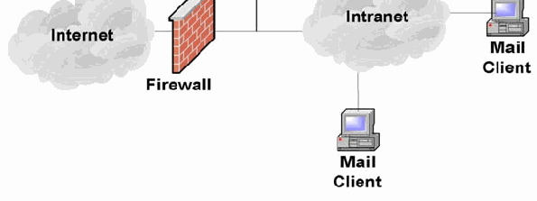
ファイアウォールを介したメールクライアントとサーバーの接続を示す図の一部。
Figure 6.2: Malware Scanning Implemented on Mail Server
図6.2: メールサーバー上で実施するマルウェアスキャン
The major disadvantage of implementing malware scanning on the mail server is the negative effect on the performance of the mail server caused by the requirement to scan all messages. Also disadvantageous is that malware scanning on the mail server often requires significant modifications to the existing mail server configuration. However, this option provides a number of advantages:
メールサーバー上でマルウェアスキャンを実施する最大の欠点は、すべてのメッセージをスキャンする必要があるためメールサーバーの性能に悪影響を及ぼすことである。また、この方法では既存のメールサーバー設定を大幅に変更する必要があることも欠点である。一方、次のような利点がある。
(cid:31) Can scan email in both directions (inbound and outbound)
(cid:31) 受信と送信の両方向の電子メールをスキャンできる。
未レビュー訳(cid:31) Can be centrally managed to ensure compliance with the organization’s security policy and that updates are applied regularly
(cid:31) 一元管理して、組織のセキュリティポリシーへの準拠と更新の定期適用を確保できる。
未レビュー訳(cid:31) Offers protection to internal users once malware is on the organization’s internal network.
(cid:31) マルウェアが組織内部のネットワークに侵入した後も、内部ユーザーを保護できる。
未レビュー訳Scanning for malware at the mail server has a number of weaknesses:
メールサーバー上でのマルウェアスキャンには、次のような弱点がある。
(cid:31) May require significant modification of the existing mail server configuration (less true for most newer mail servers)
(cid:31) 既存のメールサーバー設定に大幅な変更が必要になる場合がある（多くの新しいメールサーバーでは、これはあまり当てはまらない）。
未レビュー訳(cid:31) Cannot scan encrypted emails
(cid:31) 暗号化された電子メールはスキャンできない。
未レビュー訳(cid:31) May require more powerful (expensive) servers to handle the load of a large organization.
(cid:31) 大規模組織の負荷を処理するには、より高性能（高価）なサーバーが必要になる場合がある。
未レビュー訳(cid:31) Can detect only those threats that have been identified; offers little protection against zero-day exploits.
(cid:31) 既知の脅威だけを検知できるため、ゼロデイ攻撃への保護はほとんど提供できない。
未レビュー訳When considering mail server-based malware scanners, look for the following qualities:
メールサーバーベースのマルウェアスキャナーを検討する際は、次の特性を確認すること。
(cid:31) Detects and cleans all types of malware typically carried by email (e.g., viruses, worms, Trojan horses, malicious mobile code, spyware)
(cid:31) 電子メールで一般に運ばれるあらゆる種類のマルウェア（例: ウイルス、ワーム、トロイの木馬、悪意あるモバイルコード、スパイウェア）を検知して駆除する。
未レビュー訳(cid:31) Provides heuristic scanning (provides some protection from new and unknown malware)
(cid:31) ヒューリスティック・スキャンを提供し、新しく未知のマルウェアに対する一定の保護を実現する。
未レビュー訳(cid:31) Provides content filtering (see Section 6.2.2)
(cid:31) コンテンツフィルタリングを提供する（6.2.2節を参照）。
未レビュー訳(cid:31) Incorporates mechanisms to help prevent email from circumventing the system
(cid:31) 電子メールがシステムを迂回することを防ぐ機構を組み込む。
未レビュー訳(cid:31) Provides ease of management
(cid:31) 管理しやすい。
未レビュー訳(cid:31) Provides automated downloading and installation of updates
(cid:31) 更新プログラムの自動ダウンロードとインストールを提供する。
未レビュー訳(cid:31) Provides frequent updates (critical)
(cid:31) 更新プログラムを頻繁に提供する（重要）。
未レビュー訳(cid:31) Can identify and apply rules to different types of content
(cid:31) 異なる種類のコンテンツを識別し、それぞれに規則を適用できる。
未レビュー訳(cid:31) Provides a robust and configurable alert mechanism
(cid:31) 堅牢で設定可能な警告機構を提供する。
未レビュー訳(cid:31) Provides detailed logging capabilities (see Section 9.1).
(cid:31) 詳細なログ記録機能を提供する（9.1節を参照）。
未レビュー訳6.2.1.3 Scanning on Client Hosts
6.2.1.3 クライアントホストでのスキャン
Malware scanners can also be located on client hosts (see Figure 6.3). This type of malware scanner is installed on user workstations and mobile devices, such as personal digital assistants (PDA). Incoming emails are scanned as they are opened by the user, and outbound emails are checked as the user attempts to send them. The primary advantage of this type of configuration is that scanning is distributed across many hosts and therefore has minimal effect on the performance of each individual host. Also, if a client machine becomes infected with malware, this layer of protection might stop the malware from spreading to the mail server and other mail clients.
マルウェアスキャナーは、クライアントホストにも配置できる（図6.3を参照）。この種のスキャナーは、ユーザーのワークステーションや、携帯情報端末（PDA）などのモバイル機器にインストールする。受信メールはユーザーが開いたときにスキャンし、送信メールはユーザーが送信しようとしたときに検査する。この構成の主な利点は、多数のホストにスキャン負荷を分散できるため、各ホストの性能への影響を最小限に抑えられることである。また、クライアント端末がマルウェアに感染した場合にも、この防御層によってマルウェアがメールサーバーや他のメールクライアントへ広がるのを阻止できる可能性がある。
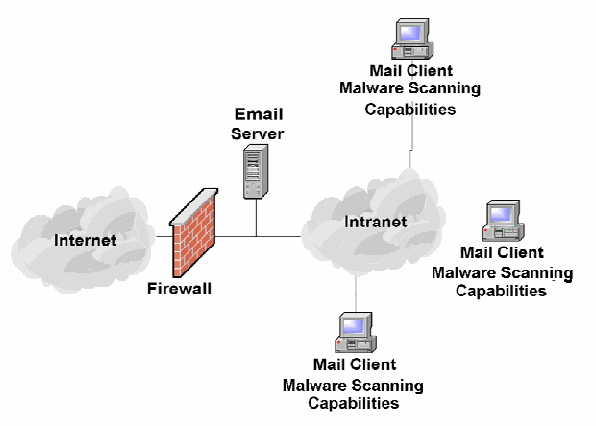
メールシステムのネットワーク構成図。インターネット、イントラネット、ファイアウォール、マルウェア検査機能付きのメールサーバーとメールクライアントを配置する。
Figure 6.3: Malware Scanning Implemented on User Workstations
図6.3: ユーザーのワークステーションで実施するマルウェアスキャン
The greatest challenge of implementing malware scanning on user workstations is the difficulty in managing and regularly updating the distributed malware scanners. However, enterprise-level solutions for malware scanning provide a means of central administration of malware scanners on individual hosts. Another weakness is that to the degree that users have control of the malware scanner, end users may disable some or all of its functionality (whether accidentally or intentionally). Enterprise solutions offer the capability to lock down some or all of the clients’ scanners’ functionality to ensure they are configured correctly.
ユーザーのワークステーション上でマルウェアスキャンを実施する際の最大の課題は、分散配置されたスキャナーの管理と定期的な更新が難しいことである。ただし、エンタープライズ向けのスキャンソリューションには、個々のホストのスキャナーを一元管理する機能がある。もう1つの弱点は、ユーザーがスキャナーを制御できる範囲では、誤って、または意図的に、機能の一部またはすべてを無効にできることである。エンタープライズ向けソリューションでは、クライアントのスキャナーが正しく設定されるよう、その機能の一部またはすべてをロックダウンできる。
The benefits of client-side malware scanning are as follows:
クライアント側でマルウェアスキャンを行う利点は次のとおりである。
(cid:31) Does not require any modification to the mail server
(cid:31) メールサーバーに変更を加える必要がない。
未レビュー訳(cid:31) Can scan encrypted emails when they are decrypted by the user
(cid:31) ユーザーが復号した暗号化メールをスキャンできる。
未レビュー訳(cid:31) Distributes malware scanning and thus minimizes the impact of scanning on any one host
(cid:31) マルウェアスキャンを分散することで、個々のホストへのスキャン負荷を最小限に抑えられる。
未レビュー訳(cid:31) Offers protection to internal users, even when malware is received from an internal user.
(cid:31) マルウェアが組織内のユーザーから送られた場合でも、内部ユーザーを保護できる。
未レビュー訳The disadvantages of client-side malware scanning are as follows:
クライアント側でマルウェアスキャンを行う欠点は次のとおりである。
(cid:31) Can be difficult to centrally manage, especially for mobile client hosts (e.g., laptops)
(cid:31) 特にノートパソコンなどのモバイルクライアントホストでは、一元管理が難しい場合がある。
未レビュー訳(cid:31) Can take time before users update malware scanners, resulting in the organization being more susceptible to an outbreak
(cid:31) ユーザーがマルウェアスキャナーを更新するまでに時間がかかり、その間、組織が感染拡大のリスクにさらされやすくなる場合がある。
未レビュー訳(cid:31) Can be intentionally or accidentally disabled or weakened by users.
(cid:31) ユーザーが誤って、または意図的に、スキャナーを無効化したり機能を弱めたりできる。
未レビュー訳(cid:31) Can detect only those threats that have been identified; offers little protection against zero-day exploits.
(cid:31) 既知の脅威だけを検知できるため、ゼロデイ攻撃への保護はほとんど提供できない。
未レビュー訳6.2.2 Content Filtering
6.2.2 コンテンツフィルタリング
Content filtering works in a similar manner to malware scanning at the firewall or mail server except that it is looking for emails containing undesirable content other than malware, such as spam or emails containing inappropriate language. When implementing file-type restrictions and malware scanning, only a certain level of security is provided. The contents of an email message or its attachments could prove much more damaging to an organization than a virus or rogue executable. For this case, some sort of content filtering mechanism should be employed.
コンテンツフィルタリングは、ファイアウォールやメールサーバーでのマルウェアスキャンと同様の方法で動作するが、スパムや不適切な表現を含むメールなど、マルウェア以外の望ましくない内容を含むメールを検出する。ファイル形式の制限とマルウェアスキャンを実施するだけでは、一定の水準のセキュリティしか得られない。電子メールメッセージや添付ファイルの内容は、ウイルスや不正な実行ファイルより組織に大きな損害を与える場合がある。そのため、何らかのコンテンツフィルタリング機構を使用すべきである。
未レビュー訳6.2.2.1 Implementing Content Filters
6.2.2.1 コンテンツフィルターの実装
For maximum effectiveness, content filtering should be performed on all incoming and outgoing messages and conducted in the same locations as malware scanning—on the firewall/mail relay/mail gateway, mail servers, and end users’ hosts. In fact, many products are available for popular messaging systems that incorporate content filtering, malware scanning, and file-type restriction (see Appendix D for a listing of common products). Incorporation of these features into one product can reduce the administration of security controls.
効果を最大化するには、コンテンツフィルタリングをすべての送受信メッセージに対して実施し、マルウェアスキャンと同じ場所、すなわちファイアウォール／メール中継サーバー／メールゲートウェイ、メールサーバー、エンドユーザーのホストで行うべきである。実際、コンテンツフィルタリング、マルウェアスキャン、ファイル形式制限を組み込んだ一般的なメッセージングシステム向け製品が多数ある（一般的な製品の一覧は付録Dを参照）。これらの機能を1つの製品に統合すると、セキュリティ管理策の管理負担を軽減できる。
In general, rules are defined to forward, quarantine, park, clean, block, or delete any data passing through the server depending upon the results of the scan. Typical items that would be caught by the filter and possible actions taken on them could be as follows:
一般に、スキャン結果に応じて、サーバーを通過するデータを転送、隔離、保留、無害化、遮断、または削除する規則を定義する。フィルターで検出される典型的な項目と、その可能な処理を次に示す。
(cid:31) Email that contains suspicious active content (e.g., ActiveX, JavaScript) is stripped of the active code and forwarded to the recipient.
(cid:31) ActiveXやJavaScriptなどの疑わしいアクティブコンテンツを含む電子メールから、アクティブコードを除去して受信者に転送する。
未レビュー訳(cid:31) Spam email and phishing attempts may be deleted or tagged as suspicious.
(cid:31) スパムメールやフィッシングの試みを削除するか、疑わしいメールとして表示する。
未レビュー訳(cid:31) Extra-large files might be held for delivery during off-peak hours.
(cid:31) 非常に大きなファイルを、メール配送の少ない時間帯まで保留する場合がある。
未レビュー訳Another key feature of content filtering packages is the scanning of outbound data. A lexical analysis can be performed that scans email messages for words and phrases that might be viewed as inappropriate for use in organizational email. The lexical analysis can also save possible litigation against an organization by preventing inappropriate content, including hoaxes and spam (see Section 6.3), from leaving the organization. In addition, a lexical analysis might include searches for key words and phrases indicating that sensitive data is leaving the enterprise.
コンテンツフィルタリング製品のもう1つの重要な機能は、送信データのスキャンである。語彙解析によって、組織の電子メールでの使用に不適切と見なされる可能性がある単語や語句をメッセージから検索できる。語彙解析は、デマやスパム（6.3節を参照）など不適切なコンテンツが組織外へ送信されないようにすることで、組織が訴訟を起こされる可能性を減らすことにも役立つ。また、機密データが組織から外部へ送信されていることを示すキーワードや語句を検索する機能を含めることもできる。
Organizations should also take steps to prevent email address spoofing, such as ensuring that external users cannot send emails to internal users that have one of the organization’s email addresses as the spoofed sender. For example, a hypothetical company WidgetsRUs should block any incoming email with a “from” address in the domain widgetsrus.com at its mail gateway. Attackers often spoof email addresses to make their malicious emails appear to be from internal users, because it can trick users into trusting the emails. Checking digital signatures on emails is a way that users can detect some spoofing attempts.38
組織は、外部ユーザーが組織の電子メールアドレスを偽装した送信者として内部ユーザーにメールを送れないようにするなど、メールアドレスの詐称を防ぐ対策も講じるべきである。例えば、仮想企業WidgetsRUsは、送信元アドレスがwidgetsrus.comドメインに属する受信メールを、メールゲートウェイで遮断すべきである。攻撃者は、悪意あるメールを内部ユーザーから届いたように見せ、ユーザーを信頼させるため、電子メールアドレスを詐称することがよくある。メールのデジタル署名を確認すると、ユーザーが一部の詐称の試みを検知できる。38
未レビュー訳Before implementing any filtering solution, it is imperative to determine how the existing network and applications actually work. This entails running network analyzers (sniffers); analyzing router, firewall, and server log files; and interviewing all appropriate system and network administrators. It is also imperative to analyze the existing organization information system security policy, or draft one if one does not exist. Clearly defined security policies are critical to translating the organization’s security goals into filter rules. Great care must be taken in crafting the rules because an incorrectly configured filter may fail to filter inappropriate content or may accidentally filter appropriate content. These steps will make it easier to choose the appropriate filtering software and determine the types of rules that need to be configured.
フィルタリングソリューションを導入する前に、既存のネットワークとアプリケーションが実際にどのように動作しているかを確認することが不可欠である。そのためにネットワークアナライザー（スニファー）を実行し、ルーター、ファイアウォール、サーバーのログファイルを分析し、関係するすべてのシステム管理者とネットワーク管理者に聞き取りを行う。既存の組織情報システムセキュリティポリシーを分析することも不可欠であり、存在しない場合は策定する。明確に定められたセキュリティポリシーは、組織のセキュリティ目標をフィルター規則に落とし込むうえで重要である。不適切なコンテンツをフィルタリングできなかったり、適切なコンテンツを誤ってフィルタリングしたりしないよう、規則の作成には十分な注意が必要である。これらの手順により、適切なフィルタリングソフトウェアを選び、設定が必要な規則の種類を決定しやすくなる。
未レビュー訳Another effective way to decrease the number of unwanted messages reaching mail servers is using Lightweight Directory Access Protocol (LDAP) lookup on a mail gateway or firewall as a filtering mechanism. LDAP lookup allows the gateway or firewall to query the organization’s user directory directly for user information. When an email is received by the gateway or firewall, it contacts the user directory to see if the email is addressed to a user that actually exists. If the user is not in the directory, the email is rejected and does not reach the mail server. Much of the spam sent to a domain is generated using a database of common usernames. Most of these addresses do not exist for a particular domain, but it is an easy method for spammers to get their messages to many users quickly. Using LDAP lookup prevents these messages from slowing the mail server.
メールサーバーに届く望ましくないメッセージを減らすもう1つの有効な方法は、メールゲートウェイまたはファイアウォールでLightweight Directory Access Protocol（LDAP）検索をフィルタリング機構として使うことである。LDAP検索では、ゲートウェイやファイアウォールが組織のユーザーディレクトリへ直接照会し、ユーザー情報を確認できる。ゲートウェイまたはファイアウォールがメールを受信すると、ユーザーディレクトリに連絡して、宛先ユーザーが実際に存在するか確認する。ユーザーがディレクトリに存在しない場合、メールは拒否され、メールサーバーに到達しない。あるドメイン宛てのスパムの多くは、よく使われるユーザー名のデータベースを使って作られている。そのドメインに実在しないアドレスが大半であるが、スパマーが短時間で多くのユーザーにメッセージを送る簡単な方法である。LDAP検索を使うと、こうしたメッセージによってメールサーバーの処理が遅くなるのを防げる。
Many Internet service providers (ISP) and third-party companies offer malware scanning and content filtering services, including spam filtering. These services can be helpful for organizations that wish to add an extra layer of defense but do not want to implement or maintain the extra layer of protection themselves. The services delete or tag messages before they reach an organization’s mail server, therefore increasing its efficiency. Because these services may monitor emails for many organizations, they can often identify new unwanted messages very quickly. Disadvantages of using such a service include the following:
多くのインターネットサービスプロバイダー（ISP）や第三者企業は、スパムフィルタリングを含むマルウェアスキャンおよびコンテンツフィルタリングのサービスを提供している。自ら追加の防御層を導入または維持せずに防御を強化したい組織には、これらのサービスが役立つ場合がある。サービス提供者は組織のメールサーバーに届く前にメッセージを削除またはタグ付けするため、メールサーバーの効率が高まる。こうしたサービスは多くの組織の電子メールを監視していることがあり、新たな望ましくないメッセージを非常に早く特定できる場合がある。この種のサービスを利用する欠点は次のとおりである。
(cid:31) Privacy. All of the organization’s incoming email is routed through the service provider’s servers and scanned by them.
(cid:31) プライバシー。組織の受信メールはすべてサービス提供者のサーバーを経由し、同社によってスキャンされる。
未レビュー訳(cid:31) False Positives. The service provider’s filtering solution might automatically delete emails tagged as spam or might not provide a way for administrators to check the validity of email tagging.
(cid:31) 誤検知。サービス提供者のフィルタリングソリューションは、スパムと判定したメールを自動削除する場合や、管理者が判定の妥当性を確認する方法を提供しない場合がある。
未レビュー訳(cid:31) Availability. If the service becomes unavailable, the organization should be able to change the routing of email to prevent delays in mail delivery.
(cid:31) 可用性。サービスが利用不能になった場合、メール配送の遅延を防ぐために、組織はメールのルーティングを変更できるようにすべきである。
未レビュー訳6.2.2.2 Content Filtering Issues
6.2.2.2 コンテンツフィルタリングの課題
Although email content filtering is critical to most organizations’ security posture, a number of legal implications should be addressed before deployment. Content filtering needs to be backed up by a clearly defined written security policy. The email policy should include an explicit statement that email will be monitored for compliance, a description of any administrative or disciplinary actions that could result if the policy is violated, and a requirement for employees to acknowledge reading and understanding the policy. Although the policy should outline the organization’s thinking, expectations, and restrictions regarding security, due regard should also be given to employee and individual rights. For instance, under some circumstances employees may have a right to privacy when it comes to their own correspondence; however, when representing their organization, the organization may be held legally responsible for what they say or do. Without an established policy, such issues often lead to misunderstanding and problems that can be difficult to resolve.
電子メールのコンテンツフィルタリングは多くの組織のセキュリティ態勢に不可欠であるが、導入前にいくつかの法的影響を検討すべきである。コンテンツフィルタリングは、明確に定めた文書化済みセキュリティポリシーに基づいて行う必要がある。電子メールポリシーには、ポリシー遵守状況を確認するためメールを監視することの明示、違反した場合に実施し得る管理上または懲戒上の措置の説明、従業員がポリシーを読み理解したことを確認する要件を含めるべきである。ポリシーでは組織の考え方、期待、セキュリティ上の制限を示す一方、従業員や個人の権利にも十分配慮すべきである。例えば、状況によっては従業員が自分の通信のプライバシーを保護する権利を持つ場合がある。しかし、組織を代表して行動するときに従業員が述べたり行ったりしたことについて、組織が法的責任を負う可能性もある。確立されたポリシーがないと、こうした問題は誤解や、解決が難しい問題につながることがよくある。
Similarly, in some situations, email messages may be deemed to carry the same legal weight as written documents, especially when digitally signed. This can mean having to store messages to comply with record-keeping requirements, including employees’ personal messages. As such, all employees should be made aware of the security policy. To the extent possible, the security policy should be broadly distributed to employees [McKi01]. Moreover, it may be advisable to require employees to acknowledge the policy as part of their contract of employment or as a condition of working on a contract, and to also require employees to re-acknowledge the policy on a regular basis. Many email filter applications can add a legal disclaimer to all incoming and outgoing messages, ensuring recipients understand the legal weight (or lack thereof) of the emails received from or through the organization.
同様に、状況によっては電子メールメッセージが書面文書と同等の法的効力を持つと見なされる場合があり、特にデジタル署名されている場合はその傾向がある。その場合、従業員の私的なメッセージを含め、記録保存要件に従ってメッセージを保管する必要が生じることがある。そのため、すべての従業員にセキュリティポリシーを認識させるべきである。可能な限り、セキュリティポリシーを従業員に広く配布すべきである [McKi01]。また、雇用契約の一部として、または契約業務の条件として従業員にポリシーへの同意を求め、定期的に再確認させることも検討できる。多くのメールフィルターアプリケーションは、すべての送受信メッセージに法的免責事項を追加できる。これにより、受信者は組織から、または組織を経由して受け取ったメールの法的効力（またはその欠如）を理解できる。
未レビュー訳Appropriate legal, privacy, personnel, and human resources authorities should be consulted when forming the policy. Inevitably, this means having the policy reviewed by experts to ensure that it is legally correct and does not infringe upon the rights of employees. Additionally, it is important to investigate all areas of an organization to determine how workers go about their work and what level of security is most appropriate. Completely restricting access to Internet resources might solve most security issues at a stroke, but this is usually an unacceptable tradeoff. This is where email filtering tools can help, enabling security policies to be more easily converted from theory into practice.
ポリシーの策定に際しては、法律、プライバシー、人事、人的資源を所管する関係者に相談すべきである。そのためには、ポリシーが法的に正しく、従業員の権利を侵害しないことを確認する専門家レビューが不可欠である。また、従業員の業務の進め方を把握し、最も適切なセキュリティ水準を決めるため、組織内のあらゆる業務領域を調査することも重要である。インターネット資源へのアクセスを全面的に制限すれば大半のセキュリティ課題を一度に解決できるかもしれないが、通常は受け入れられないトレードオフである。このような場合、メールフィルタリングツールを使うと、セキュリティポリシーを理論から実務へ移しやすくなる。
As previously mentioned, personal email accounts are problematic, especially those accessed via a Web browser that tend to bypass the email content filtering controls. In particular, if a user is using an SSL-encrypted Web page for personal email access and the organization does not decrypt and analyze SSL-encrypted HTTPS traffic, the content may be allowed out or in even though it would not be if it went through normal channels. Many organizations also allow encrypted protocols outbound (e.g., from their internal network to the Internet) such as SSH or IPsec that can also be used to tunnel traffic in or out of the organization without the restrictions of filtering.
前述のとおり、個人用メールアカウントには問題があり、特にウェブブラウザーからのアクセスは電子メールコンテンツのフィルタリング管理策を迂回する傾向がある。特に、ユーザーが個人メールへアクセスするためSSLで暗号化されたウェブページを使い、組織がSSLで暗号化されたHTTPS通信を復号して分析しない場合、通常の経路を通過すれば許可されないコンテンツでも、送受信される可能性がある。多くの組織は、SSHやIPsecなどの暗号化プロトコルによる送信通信（内部ネットワークからインターネットへの通信）も許可している。これらはフィルタリング制限を受けずに組織内外へトラフィックをトンネルするためにも使える。
未レビュー訳If an organization allows mail protocols, such as SMTP, outbound to the Internet for all internal users, content filtering may be bypassed by users setting up their own mail servers. Organizations should be aware that certain products and applications use SMTP email for communications. It is not uncommon in large organizations for a significant percentage of the outbound email traffic to be generated by servers other than the centralized enterprise mail servers. Often these emails are generated from electronic commerce applications communicating with customers or business partners. One way to address the problem is to set up a mail gateway or application proxy at the perimeter that does content filtering on all email, even those messages generated by or destined to servers other than the centralized enterprise mail servers. Section 7 provides additional information on network architectures and mail gateway placements.
組織がすべての内部ユーザーにSMTPなどのメールプロトコルによるインターネット向け通信を許可すると、ユーザーが独自のメールサーバーを設置してコンテンツフィルタリングを迂回できる可能性がある。特定の製品やアプリケーションが通信にSMTPメールを使用することも、組織は認識すべきである。大規模組織では、送信メールトラフィックの相当な割合が、集中管理された企業メールサーバー以外のサーバーによって生成されることも珍しくない。そのようなメールは、顧客やビジネスパートナーと通信する電子商取引アプリケーションから生成されることがよくある。この問題への対処方法の1つは、境界にメールゲートウェイまたはアプリケーションプロキシを設置し、集中管理された企業メールサーバー以外のサーバーが生成したメッセージや宛先となるメッセージを含め、すべてのメールをコンテンツフィルタリングすることである。ネットワーク構成とメールゲートウェイの配置については第7章で詳しく説明する。
6.2.3 User Awareness
6.2.3 ユーザーの意識向上
In addition to using anti-virus software and/or other malware scanning tools, as well as content filtering software, organizations should educate users about the dangers posed by email-borne malware and effective ways of avoiding threats, including the following actions:
ウイルス対策ソフトウェアや他のマルウェアスキャンツール、コンテンツフィルタリングソフトウェアを使用することに加え、組織は電子メールを介したマルウェアの危険性と、脅威を避ける有効な方法についてユーザーを教育すべきである。例えば、次の対策を教える。
(cid:31) Never open attachments from unknown senders.
(cid:31) 知らない送信者からの添付ファイルは絶対に開かない。
未レビュー訳(cid:31) Never open attachments with suspicious or potentially harmful names or file extensions (e.g., attachment.txt.vbs, attachment.exe) from known or unknown senders.
(cid:31) 既知か未知かを問わず、疑わしい名前や有害な可能性がある拡張子（例: attachment.txt.vbs、attachment.exe）の添付ファイルは絶対に開かない。
未レビュー訳(cid:31) Be suspicious of emails from known senders in which the subject line or content appears to be inappropriate for the existing relationship (e.g., an email with the subject “I love you” from a professional colleague) or generic subjects (e.g., “Look at this, it’s interesting”).
(cid:31) 既知の送信者から届いたメールでも、件名や内容が普段の関係性にそぐわない場合（例: 仕事上の同僚から件名「I love you」のメールが届く場合）や、一般的すぎる件名（例: 「これを見て、面白いよ」のような件名）の場合は疑う。
未レビュー訳(cid:31) Scan all attachments with malware scanning software before opening, preferably by configuring the scanning software to automatically perform this task.
(cid:31) 添付ファイルを開く前にすべてマルウェアスキャンソフトウェアで検査する。できれば、この作業を自動的に実施するようソフトウェアを設定する。
未レビュー訳(cid:31) Update the signature database of the malware scanning software at least on a daily basis or when there is a malware outbreak.
(cid:31) マルウェアスキャンソフトウェアのシグネチャデータベースを少なくとも毎日、またはマルウェア感染の拡大時に更新する。
未レビュー訳(cid:31) Warn users about malware outbreaks and how to identify emails that might contain malware.
(cid:31) マルウェア感染の拡大と、マルウェアを含む可能性のあるメールの見分け方をユーザーに知らせる。
未レビュー訳Users should also be aware of the dangers of phishing attacks and how to avoid them. The Federal Trade Commission (FTC) posted a consumer alert outlining steps that users should take: [FTC06]
ユーザーは、フィッシング攻撃の危険性とその回避方法についても理解すべきである。米国連邦取引委員会（FTC）は、ユーザーが取るべき手順を示す消費者向け警告を公表している [FTC06]。
未レビュー訳(cid:31) Do not reply to email messages or popup ads asking for personal or financial information.
(cid:31) 個人情報または金融情報を尋ねるメールメッセージやポップアップ広告には返信しない。
未レビュー訳(cid:31) Do not trust phone numbers in emails or popup ads. Voice over IP technology can be used to register a phone with any area code.
(cid:31) メールやポップアップ広告に記載された電話番号を信用しない。Voice over IP技術を使うと、任意の市外局番で電話番号を登録できる。
未レビュー訳(cid:31) Do not email personal or financial information.
(cid:31) 個人情報や金融情報を電子メールで送信しない。
未レビュー訳(cid:31) Review credit card and bank account statements regularly.
(cid:31) クレジットカードや銀行口座の明細を定期的に確認する。
未レビュー訳(cid:31) Be cautious about accessing untrusted Web sites, because some Web browser vulnerabilities can be exploited simply by visiting a site. Users should also be cautious about opening any attachment or downloading any file from untrusted emails or Web sites.
(cid:31) 信頼できないウェブサイトへのアクセスには注意すること。ウェブブラウザーの脆弱性の中には、サイトを閲覧するだけで悪用されるものがある。信頼できないメールやウェブサイトから添付ファイルを開いたり、ファイルをダウンロードしたりする際にも注意すること。
未レビュー訳(cid:31) Forward phishing-related emails to spam@uce.gov and to the organization that is impersonated in the email.
(cid:31) フィッシングに関連するメールを spam@uce.gov と、メール内でなりすまされている組織に転送する。
未レビュー訳(cid:31) Request a copy of your credit report from each of the three credit reporting agencies yearly: Equifax, Transunion, and Experian. If an identity thief opens up accounts in your name, they will likely show up on a credit report.39
(cid:31) Equifax、Transunion、Experianの3つの信用情報機関それぞれに、毎年、自分の信用報告書の写しを請求する。なりすまし犯が本人名義で口座を開設した場合、信用報告書に記録される可能性がある。39
未レビュー訳6.3 Blocking Spam-Sending Servers
6.3 スパム送信サーバーの遮断
Regardless of the communication medium, there are always entities that attempt to exploit any means of communication to publicize their ideas or products. Email is no exception. The most common terms for these messages are unsolicited commercial email (UCE), which is better known as spam. Most email users receive spam on a daily basis. Because email is largely unregulated, system administrators should police email traffic that traverses the servers they operate to reduce the amount of spam that reaches users. An added benefit of implementing server-based spam control is that it will reduce mailbox sizes, which in turn reduces server storage requirements.40
どのような通信手段でも、その手段を悪用して自分の考えや製品を宣伝しようとする者が常にいる。電子メールも例外ではない。この種のメッセージは、一般に未承諾商業メール（UCE）、より広くはスパムと呼ばれる。大半のメールユーザーは毎日スパムを受け取る。電子メールはほとんど規制されていないため、システム管理者は、自分たちが運用するサーバーを通過するメールトラフィックを監視し、ユーザーに届くスパムの量を減らすべきである。サーバーベースのスパム対策には、メールボックスのサイズを小さくし、それに伴ってサーバーのストレージ要件を減らす利点もある。40
未レビュー訳To control spam messages, administrators must address the following three concerns:
スパムメッセージを制御するには、管理者は次の3つの課題に対処しなければならない。
(cid:31) Ensure that spam cannot be sent from the mail servers they control (see Section 6.4).
(cid:31) 自らが管理するメールサーバーからスパムを送信できないようにする（6.4節を参照）。
未レビュー訳(cid:31) Implement spam filtering for inbound messages (see Section 6.2).
(cid:31) 受信メッセージに対するスパムフィルタリングを実施する（6.2節を参照）。
未レビュー訳(cid:31) Block messages from known spam-sending servers—the topic of this section.
(cid:31) 既知のスパム送信サーバーからのメッセージを遮断する（本節の主題）。
未レビュー訳Because the Internet has no centralized policing authority, non-profit organizations and commercial companies have created lists of mail servers that have been identified as being used to send unsolicited email messages. These lists are often referred to as open relay blacklists (ORB) or DNS blacklists (DNSBL). Many popular mail server applications can be configured to query multiple ORBs and reject messages originating from the listed mail servers. These lists are updated on a daily basis; therefore, using them can drastically reduce spam message delivery. Additionally, most mail servers can be configured to reject messages from an explicitly defined set of domains.
インターネットには中央集権的な監視機関がないため、非営利団体や民間企業が、未承諾メールの送信に使われていると特定されたメールサーバーの一覧を作成している。こうした一覧は、オープンリレーブラックリスト（ORB）またはDNSブラックリスト（DNSBL）と呼ばれることがよくある。一般的なメールサーバーアプリケーションの多くは、複数のORBを照会し、一覧に記載されたメールサーバーを送信元とするメッセージを拒否するよう設定できる。これらの一覧は毎日更新されるため、利用するとスパムの配送を大幅に減らせる。また、ほとんどのメールサーバーは、明示的に定義したドメイン群からのメッセージを拒否するよう設定できる。
ORB spam control is not foolproof. Open relays are connected and disconnected regularly. Mail server administrators who wish to participate in the policing effort may submit UCE complaints to Web sites provided in Appendix E.
ORBによるスパム対策は完全ではない。オープンリレーは定期的に接続されたり切断されたりする。監視活動に協力したいメールサーバー管理者は、付録Eに記載されたウェブサイトからUCEの苦情を提出できる。
6.4 Authenticated Mail Relay
6.4 認証済みメール中継
As mentioned previously, configuring mail relay authentication decreases the likelihood of someone using a particular mail server to send spam. An added benefit of implementing authenticated relay is increased security and usability.
前述のとおり、メール中継の認証を設定すると、特定のメールサーバーを使って誰かがスパムを送信する可能性が低下する。認証済み中継の導入には、セキュリティと利便性が高まるという追加の利点もある。
Two methods are available for controlling mail relay. The first is to control the subnet or domain from which messages are being sent. This method is effective if the perimeter of the messaging system resides within known address ranges. However, if remote users have hosts with different address ranges, this method is not useful. To accommodate remote users, a more robust configuration is needed.
メール中継を制御する方法は2つある。1つ目は、メッセージの送信元となるサブネットまたはドメインを制限する方法である。メッセージングシステムの境界が既知のアドレス範囲内にある場合、この方法は有効である。ただし、リモートユーザーが異なるアドレス範囲のホストを使う場合には役立たない。リモートユーザーにも対応するには、より堅牢な設定が必要である。
The second method is to require users to authenticate themselves before sending any messages. This is commonly referred to as authenticated relay, or SMTP AUTH, which is the SMTP extension that supports user authentication. Unfortunately, the default configuration of most mail servers does not implement authenticated relay; therefore, mail server administrators must configure the server appropriately. Requiring authenticated relay is one of the least used but most powerful security features of mail servers. (Refer to manufacturer documentation for configuring SMTP AUTH.)
2つ目は、メッセージを送信する前にユーザー認証を求める方法である。これは一般に認証済み中継、またはSMTP AUTHと呼ばれ、ユーザー認証をサポートするSMTP拡張である。残念ながら、大半のメールサーバーの既定設定では認証済み中継が有効になっていないため、メールサーバー管理者が適切に設定しなければならない。認証済み中継は、メールサーバーのセキュリティ機能の中でも、利用頻度は低いものの特に強力な機能の1つである。SMTP AUTHの設定については、メーカーの文書を参照されたい。
Mail server administrators must use caution if choosing to have an authenticated relay. An improperly configured mail server could be exploited and used to send or relay spam. If the mail server is found to be an open relay, it might be put on a blacklist (as described in Section 6.3). Any organizations subscribing to and using these blacklists will not be able to receive any email from a blacklisted server, whether the messages are spam or valid emails.
メールサーバー管理者は、認証済み中継を設定する場合に注意が必要である。メールサーバーの設定が不適切だと、悪用されてスパムの送信や中継に使われる可能性がある。オープンリレーと判定されると、サーバーがブラックリストに登録される可能性がある（6.3節で説明）。このようなブラックリストを購読して使用する組織は、スパムか正当なメールかを問わず、ブラックリスト掲載サーバーからのメールを一切受信できなくなる。
If a mail server administrator learns that one of his or her mail servers is on a blacklist, the administrator will have to fix the open relay problem and perform testing to ensure the server is no longer relaying. The administrator then needs to determine which blacklists the server is on and check with each blacklist maintainer to get instructions on how to remove the server from the lists. Until the server has been removed from all blacklists and the updated blacklists have been propagated to their subscribers, outbound email from the organization may not reach all of its recipients. See Appendix D for a listing of Web sites that provide open relay testing tools as well as the maintainers of commonly used blacklists.
自分が管理するメールサーバーの1台がブラックリストに登録されたと管理者が知った場合、オープンリレーの問題を修正し、サーバーが中継を行わなくなったことをテストで確認しなければならない。その後、どのブラックリストに登録されているかを特定し、各ブラックリストの管理者に連絡して、一覧から削除する方法を確認する必要がある。サーバーがすべてのブラックリストから削除され、更新版の一覧が購読者に配布されるまでは、組織から送信したメールが宛先の一部に届かない可能性がある。オープンリレーのテストツールや、一般的に使われているブラックリストの管理者を掲載したウェブサイトの一覧は付録Dを参照されたい。
6.5 Secure Access
6.5 安全なアクセス
In Section 2, different mail transport and mailbox access protocols were discussed. Like many Internet protocols, most of these protocols did not initially incorporate any form of encryption or cryptographic authentication. These deficits posed three problems for email users. First, for users sending messages, the contents could be intercepted and read at any host on the path between the sender and recipient or even forged or modified. An apt paradigm from “regular” mail would be a postcard. Any person who handles the postcard could read the message on the back. Second, the recipients could not verify that messages were not modified by others during transit or actually originated by the sender. Third, rather than supplying non-reusable authentication information, a user accessing a mailbox would send a password over the network in the clear, which could be easily observed and reused by an attacker. Unfortunately, in most default configurations, mail clients are set up to send the user’s password in the clear, allowing it to be intercepted by other computers on the local network segment of the client or any host responsible for forwarding the password to the mail server.
第2章では、さまざまなメール転送プロトコルとメールボックスアクセスプロトコルを説明した。多くのインターネットプロトコルと同様に、これらの大半には当初、暗号化や暗号学的な認証機能が組み込まれていなかった。この欠点は電子メールユーザーに3つの問題をもたらした。第1に、メッセージを送信するユーザーは、送信者と受信者の間にあるどのホストでも内容を傍受・閲覧される可能性があり、メッセージを偽造または改変されるおそれもあった。通常の郵便に例えると、はがきのようなものである。はがきを扱う人は誰でも裏面のメッセージを読める。第2に、受信者は、転送中に他者がメッセージを改変していないか、または本当に送信者本人から届いたかを確認できなかった。第3に、メールボックスへアクセスするユーザーは再利用できない認証情報ではなく、ネットワーク上で平文のパスワードを送信していた。このパスワードは攻撃者が容易に観察して再利用できる。残念ながら、既定設定の多くではメールクライアントがユーザーのパスワードを平文で送るため、クライアントのローカルネットワークセグメント上の別のコンピューターや、メールサーバーへパスワードを転送する各ホストに傍受される可能性がある。
The first two problems were addressed in Section 3, which discussed ways to protect messages. The third problem can be resolved by applying the same method normally used to secure World Wide Web (WWW) traffic – the Transport Layer Security (TLS) protocol.
最初の2つの問題への対処方法は、メッセージ保護を説明した第3章で取り上げた。3つ目の問題は、World Wide Web（WWW）の通信を保護するために通常使われるTransport Layer Security（TLS）プロトコルを適用すれば解決できる。
TLS is similar to the Secure Sockets Layer (SSL) protocol, upon which it is based, and can be used in combination with POP, IMAP, and SMTP to encrypt communication between mail clients and servers. RFC 2595 defines how to use TLS to combat communications eavesdropping, to implement secure mailbox access and to further strengthen SMTP MTAs that incorporate SMTP AUTH. Figure 6.4 shows a sample configuration that enables TLS support for newer versions of sendmail.
TLSは、その基になったSecure Sockets Layer（SSL）プロトコルに似ており、POP、IMAP、SMTPと組み合わせてメールクライアントとサーバー間の通信を暗号化できる。RFC 2595は、通信の盗聴への対策、安全なメールボックスアクセスの実装、SMTP AUTHを組み込むSMTP MTAの保護強化にTLSを使う方法を定めている。図6.4に、新しいバージョンのsendmailでTLSをサポートする設定例を示す。
未レビュー訳define(`CERT_DIR', `MAIL_SETTINGS_DIR`'certs')dnl define(`confCACERT_PATH', `CERT_DIR')dnl define(`confCACERT', `CERT_DIR/CAcert.pem')dnl define(`confSERVER_CERT', `CERT_DIR/MYcert.pem')dnl define(`confSERVER_KEY', `CERT_DIR/MYkey.pem')dnl define(`confCLIENT_CERT', `CERT_DIR/cert.pem')dnl define(`confCLIENT_KEY', `CERT_DIR/MYkey.pem')dnl
define(`CERT_DIR', `MAIL_SETTINGS_DIR`'certs')dnl define(`confCACERT_PATH', `CERT_DIR')dnl define(`confCACERT', `CERT_DIR/CAcert.pem')dnl define(`confSERVER_CERT', `CERT_DIR/MYcert.pem')dnl define(`confSERVER_KEY', `CERT_DIR/MYkey.pem')dnl define(`confCLIENT_CERT', `CERT_DIR/cert.pem')dnl define(`confCLIENT_KEY', `CERT_DIR/MYkey.pem')dnl
未レビュー訳Figure 6.4: Sendmail TLS Configuration Example from sendmail.mc
図6.4: sendmail.mcによるSendmailのTLS設定例
6.6 Enabling Web Access
6.6 ウェブアクセスの有効化
Increasingly, organizations are providing Web browser-based access to their messaging systems. Enabling this type of access could introduce security issues at both the client (see Section 8.4) and server. Although Web site security is outside the scope of this document, there are several key concepts that should be followed:
組織がメッセージングシステムへのウェブブラウザーベースのアクセスを提供するケースが増えている。この種のアクセスを有効にすると、クライアント側（8.4節を参照）とサーバー側の両方にセキュリティ上の問題が生じる可能性がある。ウェブサイトのセキュリティは本書の対象範囲外であるが、次の重要な考え方に従うべきである。
(cid:31) Avoid placing the Web server on the same machine as the mail server.
(cid:31) ウェブサーバーをメールサーバーと同じコンピューターに配置しない。
未レビュー訳(cid:31) The authentication mechanism of the Web front-end should employ encryption.
(cid:31) ウェブフロントエンドの認証機構では暗号化を使用する。
未レビュー訳(cid:31) The Web server should use SSL/TLS to encrypt all communications with clients.
(cid:31) ウェブサーバーはSSL/TLSを使ってクライアントとのすべての通信を暗号化する。
未レビュー訳(cid:31) As with any public server, the Web server should be hardened before connecting it to the network.41
(cid:31) 他の公開サーバーと同様に、ウェブサーバーはネットワークに接続する前に堅牢化する。41
未レビュー訳For some organizations, the processing requirements of dedicating a Web server to SSL/TLS communication may not be possible to accommodate. In cases such as this, the initial authentication should be encrypted.
ウェブサーバー専用にSSL/TLS通信を処理させるだけの処理能力を確保できない組織もある。そのような場合、最初の認証通信を暗号化すべきである。
Some organizations choose to use hardware appliances for their Web access solution. These appliances not only provide secure Web-based access to mail servers, but they also provide firewall, content filtering, and malware protection capabilities. The appliances typically are easier and faster to install and maintain than creating Web servers, and they often use hardened operating systems with all non-essential components disabled or removed, which limits the possible vulnerabilities the appliances might have. Some appliances offer additional capabilities, such as offering administrators granular control over user groups and access, performing SSL encryption for sessions, and terminating user sessions automatically after a period of inactivity. Appliances are available that support the most commonly used Web-based mail systems.
ウェブアクセスのソリューションにハードウェア装置を使う組織もある。こうした装置は、メールサーバーへの安全なウェブベースアクセスを提供するだけでなく、ファイアウォール、コンテンツフィルタリング、マルウェア対策の機能も備える。ウェブサーバーを構築する場合と比べ、通常はインストールと保守が容易で迅速である。また、必要不可欠でない構成要素をすべて無効化または削除した堅牢なオペレーティングシステムを使うことが多く、装置が抱える可能性のある脆弱性を抑える。管理者がユーザーグループとアクセスをきめ細かく制御できる機能、セッションのSSL暗号化、一定の非活動時間後にユーザーセッションを自動終了する機能など、追加機能を備える装置もある。一般的なウェブベースのメールシステムをサポートする装置を利用できる。
未レビュー訳Client security issues exist that also need to be considered before an organization approves the deployment of Web access to email. These issues are discussed in Section 8.4.
組織がメールへのウェブアクセス導入を承認する前に、クライアント側のセキュリティ問題も検討する必要がある。この問題については8.4節で説明する。
6.7 Checklist for Securing Mail Servers and Content
6.7 メールサーバーとコンテンツの保護チェックリスト
| Completed | Action |
| Harden the mail server application | |
| Install the mail server software on a dedicated host (if Web-based mail access is | |
| desired, install the mail server software on a different host from the Web server) | |
| Apply any patches or upgrades to correct for known vulnerabilities | |
| Create a dedicated physical disk or logical partition (separate from operating | |
| system and mail server application) for mailboxes, or host the mailboxes on a | |
| separate server | |
| Remove or disable all services installed by the mail server application but not | |
| required (e.g., Web-based mail, FTP, remote administration) | |
| Remove or disable all unneeded default login accounts created by the mail | |
| server installation | |
| Remove all manufacturer documentation from server | |
| Remove any example or test files from server | |
| Apply appropriate security template or hardening script to the server | |
| Reconfigure SMTP, POP and IMAP service banners (and others as required) | |
| NOT to report mail server and operating system type and version | |
| Disable dangerous or unnecessary mail commands (e.g., VRFY and EXPN) | |
| Configure operating system and mail server access controls | |
| Limit the access of the mail server application to a subset of computational | |
| resources | |
| Limit the access of users through additional access controls enforced by the mail | |
| server, where more detailed levels of access control are required | |
| Configure the mail server application to execute only under a unique individual | |
| user and group identity with restrictive access controls | |
| Ensure the mail server is not running with root or system/administrator privileges | |
| Configure the host operating system so that the mail server can write log files but | |
| not read them | |
| Configure the host operating system so that temporary files created by the mail | |
| server application are restricted to a specified and appropriately protected | |
| subdirectory | |
| Configure the host operating system so that access to any temporary files | |
| created by the mail server application is limited to the mail server processes that | |
| created these files | |
| Ensure that the mail server cannot save files outside of the specified files | |
| structure dedicated to the mail server | |
| Configure the mail server to run in a chroot jail on Linux and Unix hosts | |
| Install users’ mailboxes on a different server (preferred), hard drive, or logical | |
| partition than the operating system and mail server application |
原本PDFの抜粋画像
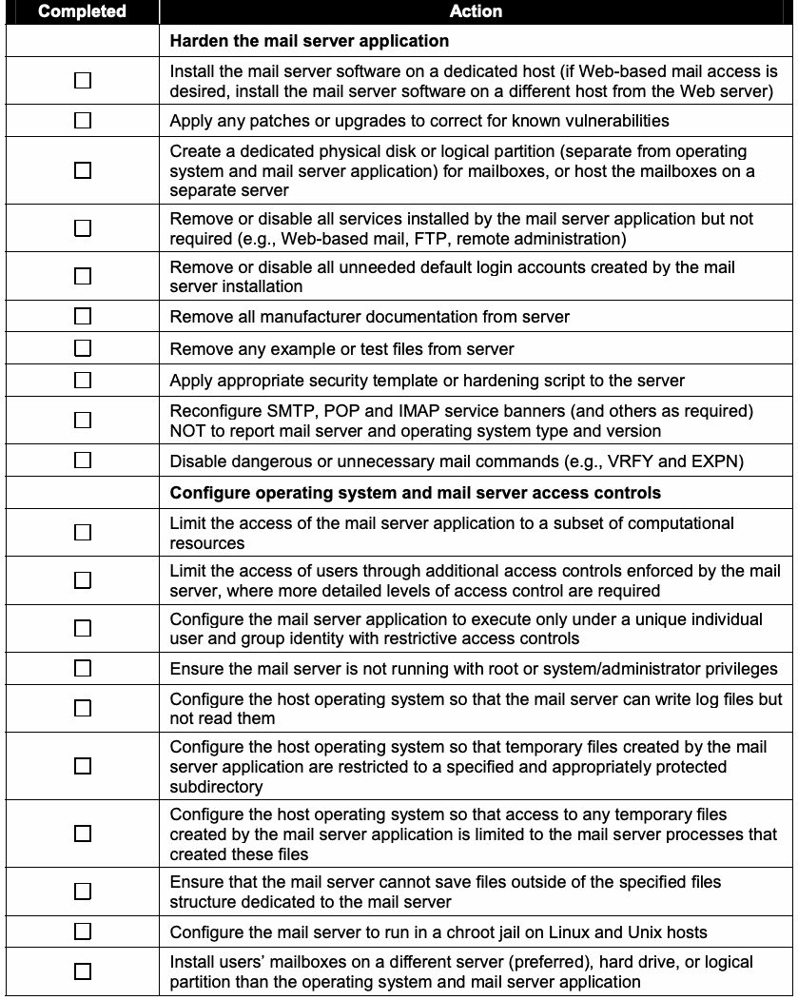
| 完了 | 作業 |
| メールサーバーアプリケーションを堅牢化する | |
| メールサーバーソフトウェアを専用ホストにインストールする（ウェブベースのメールアクセスを | |
| 提供する場合は、ウェブサーバーとは別のホストにメールサーバーソフトウェアをインストールする） | |
| 既知の脆弱性を修正するパッチまたはアップグレードを適用する | |
| メールボックス用に、オペレーティング | |
| システムとメールサーバーアプリケーションから独立した専用の物理ディスクまたは論理パーティションを作成する。またはメールボックスを | |
| 別のサーバーに配置する | |
| メールサーバーアプリケーションがインストールしたサービスのうち、不要なものをすべて削除または | |
| 無効化する（例: ウェブベースのメール、FTP、リモート管理） | |
| メールサーバーのインストール時に作成された不要な既定のログインアカウントを削除または無効化 | |
| する | |
| メーカーの文書をすべてサーバーから削除する | |
| サンプルファイルまたはテストファイルをサーバーから削除する | |
| 適切なセキュリティテンプレートまたは堅牢化スクリプトをサーバーに適用する | |
| SMTP、POP、IMAPなどのサービスバナーを再設定し（必要に応じて他のものも対象とする）、 | |
| メールサーバーとOSの種類およびバージョンを報告しないようにする | |
| VRFYやEXPNなどの危険または不要なメールコマンドを無効化する | |
| オペレーティングシステムとメールサーバーのアクセス制御を設定する | |
| メールサーバーアプリケーションがアクセスできる計算資源を一部に限定 | |
| する | |
| より詳細なアクセス制御が必要な場合、メールサーバーが強制する追加のアクセス制御によってユーザーのアクセスを | |
| 制限する | |
| メールサーバーアプリケーションを、厳しいアクセス制御の下で固有かつ専用の | |
| ユーザーIDおよびグループIDとして実行するよう設定する | |
| メールサーバーがrootまたはsystem/administrator権限で実行されていないことを確認する | |
| ホストOSを設定し、メールサーバーがログファイルに書き込めても、 | |
| 読み取れないようにする | |
| ホストOSを設定し、メールサーバーアプリケーションが作成する一時ファイルを | |
| 指定された適切に保護されたサブディレクトリ内に | |
| 限定する | |
| ホストOSを設定し、メールサーバーアプリケーションが作成した一時ファイルへのアクセスを | |
| そのファイルを作成したメールサーバープロセスだけに | |
| 制限する | |
| メールサーバー専用に指定されたファイル構造の外部へファイルを保存できないことを | |
| 確認する | |
| LinuxおよびUnixホストでは、メールサーバーをchroot jail内で実行するよう設定する | |
| ユーザーのメールボックスを、オペレーティングシステムとメールサーバーアプリケーションとは別のサーバー（推奨）、ハードディスク、または論理 | |
| パーティションに配置する |
原本PDFの抜粋画像
原本PDFの抜粋画像

| Completed | Action |
| Configure the mail server application so it cannot consume all available space on | |
| its hard drives or partitions | |
| Limit the size of attachments that are allowed | |
| Ensure log files are stored in a location that is sized appropriately | |
| Protect email from malware | |
| Determine which types of attachments to allow | |
| Consider restricting the maximum acceptable size for attachments | |
| Determine if having access to personal email accounts from organizational | |
| computers is appropriate | |
| Determine which types of active content should be permitted within email | |
| messages | |
| Implement centralized malware scanning (on the firewall, mail relay, mail | |
| gateway, and/or mail server) | |
| Install malware scanners on all client hosts | |
| Implement centralized content filtering | |
| Configure content filtering to block or tag suspicious messages (e.g., phishing, | |
| spam) | |
| Configure content filtering to strip suspicious active content from messages | |
| Configure lexical analysis if required | |
| Take steps to prevent address spoofing, such as blocking emails from external | |
| locations using internal “From” addresses | |
| Create a security policy that addresses content filtering | |
| Have the security policy reviewed by appropriate legal, privacy, and human | |
| resources authorities | |
| Add a legal disclaimer to emails, if required | |
| Educate users on the dangers of malware and how to minimize those dangers | |
| Notify users when an outbreak occurs | |
| Block spam-sending servers | |
| Configure mail gateways or firewalls to use LDAP lookup to confirm the | |
| existence of email recipients | |
| Configure mail server to block email from open relay blacklists or DNS blacklists, | |
| if required | |
| Configure mail server to block email from specific domains, if required | |
| Use authenticated mail relay | |
| Configure authenticated mail relay on the server | |
| Secure access to the mail server | |
| Configure mail server to use encrypted authentication | |
| Enable Web access to email | |
| Configure mail server to support Web access only via SSL/TLS and only if such | |
| access is deemed necessary |
原本PDFの抜粋画像
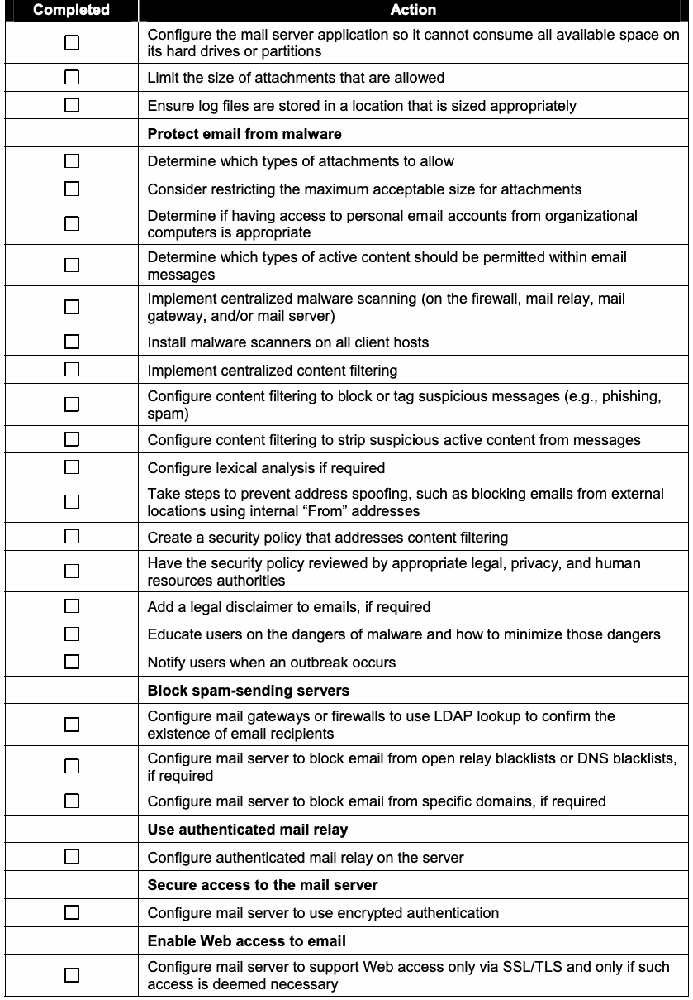
| 完了 | 作業 |
| メールサーバーアプリケーションがハードディスクまたはパーティションの空き領域をすべて消費 | |
| できないように設定する | |
| 許可する添付ファイルのサイズを制限する | |
| ログファイルを、必要な容量を確保した場所に保存する | |
| 電子メールをマルウェアから保護する | |
| 許可する添付ファイルの種類を決定する | |
| 添付ファイルに許可する最大サイズを検討する | |
| 組織のコンピューターから個人用メールアカウントへアクセスすることが適切かどうかを | |
| 決定する | |
| 電子メールメッセージ内で許可するアクティブコンテンツの種類を | |
| 決定する | |
| 集中型マルウェアスキャンを実施する（ファイアウォール、メール中継サーバー、メール | |
| ゲートウェイ、メールサーバーのいずれか、または複数で実施する） | |
| すべてのクライアントホストにマルウェアスキャナーをインストールする | |
| 集中型コンテンツフィルタリングを実施する | |
| フィッシングやスパムなどの疑わしいメッセージを遮断またはタグ付けするよう、コンテンツフィルタリングを | |
| 設定する | |
| 疑わしいアクティブコンテンツをメッセージから除去するよう、コンテンツフィルタリングを設定する | |
| 必要な場合は語彙解析を設定する | |
| 内部の「From」アドレスを使う外部発信元からのメールを遮断するなど、アドレス詐称を防ぐ対策を | |
| 講じる | |
| コンテンツフィルタリングを扱うセキュリティポリシーを作成する | |
| 適切な法律、プライバシー、人事の関係者にセキュリティポリシーをレビューしてもらう | |
| こと | |
| 必要な場合、メールに法的免責事項を追加する | |
| マルウェアの危険性とその被害を抑える方法をユーザーに教育する | |
| 感染の拡大が発生した場合にユーザーへ知らせる | |
| スパム送信サーバーを遮断する | |
| メールゲートウェイまたはファイアウォールでLDAP検索を行い、電子メールの宛先ユーザーが存在することを | |
| 確認するよう設定する | |
| 必要な場合、オープンリレーブラックリストまたはDNSブラックリストに掲載されたサーバーからのメールを | |
| 遮断するようメールサーバーを設定する | |
| 必要な場合、特定ドメインからのメールを遮断するようメールサーバーを設定する | |
| 認証済みメール中継を使用する | |
| サーバー上で認証済みメール中継を設定する | |
| メールサーバーへのアクセスを保護する | |
| 暗号化された認証を使用するようメールサーバーを設定する | |
| 電子メールへのウェブアクセスを有効にする | |
| SSL/TLS経由でのみ、かつ必要と判断された場合に限ってウェブアクセスをサポートするよう、メールサーバーを | |
| 設定する |
This page has been left blank intentionally.
このページは意図的に空白にしてある。
7. Implementing a Secure Network Infrastructure
7. 安全なネットワーク基盤の実装
未レビュー訳The network infrastructure that supports the mail server plays a critical role in the security of the mail server. In most configurations, the network infrastructure is the first line of defense between the Internet and a mail server. Network design alone, however, cannot protect a mail server. The frequency, sophistication, and variety of attacks perpetrated today lend support to the idea that email security must be implemented through layered and diverse protection mechanisms. This section discusses those network components that can support and protect mail servers to further enhance their overall security. While security issues are paramount, network infrastructure considerations are influenced by many factors other than security, including cost, performance, and reliability.
メールサーバーを支えるネットワーク基盤は、メールサーバーのセキュリティに重要な役割を果たす。多くの構成では、ネットワーク基盤がインターネットとメールサーバーの間の最初の防御線である。ただし、ネットワーク設計だけでメールサーバーを保護することはできない。今日の攻撃の頻度、高度さ、多様さを考えると、多層かつ多様な防御機構を通じて電子メールのセキュリティを実装する必要がある。本章では、メールサーバーをさらに保護し、全体的なセキュリティを高めるネットワーク構成要素を説明する。セキュリティは最重要事項であるが、ネットワーク基盤の検討には、費用、性能、信頼性など、セキュリティ以外の多くの要因も影響する。
7.1 Network Composition and Structure
7.1 ネットワークの構成と構造
Firewalls and routers are devices or systems that control the flow of network traffic between networks. They can protect mail servers from vulnerabilities inherent in the Transmission Control Protocol/Internet Protocol (TCP/IP) suite and help reduce the security issues associated with insecure applications and operating systems. However, an organization has many choices when determining a network environment for the mail server, and security may not be the principal factor in deciding among those options. Network composition and structure are the first and in many respects the most critical decisions that affect mail server security, since they determine what network infrastructure elements protect the mail server. For example, if the mail server is located before the organization’s main firewall, then the firewall cannot be used to control traffic to and from the mail server. Network composition and structure also determine what other portions of the network are vulnerable if the mail server is compromised. For example, an externally accessible mail server located on the internal production network subjects the internal network to attack if the mail server is compromised.
ファイアウォールとルーターは、ネットワーク間のトラフィックの流れを制御する装置またはシステムである。これらはTransmission Control Protocol/Internet Protocol（TCP/IP）スイートに内在する脆弱性からメールサーバーを保護し、安全でないアプリケーションやオペレーティングシステムに伴うセキュリティ問題の軽減に役立つ。ただし、メールサーバーのネットワーク環境を決める際、組織には多くの選択肢があり、セキュリティが主要な判断要因とは限らない。ネットワークの構成と構造は、メールサーバーのセキュリティに影響する最初の、そして多くの場合最も重要な決定である。これらの決定により、メールサーバーをどのネットワーク基盤要素で保護するかが決まるためである。例えば、メールサーバーを組織のメインファイアウォールより手前に配置すると、ファイアウォールでメールサーバーとの間の通信を制御できない。また、ネットワークの構成と構造によって、メールサーバーが侵害された場合にネットワークの他のどの部分が脆弱になるかも決まる。例えば、外部からアクセスできるメールサーバーを内部の本番ネットワークに配置すると、サーバー侵害時に内部ネットワークも攻撃にさらされる。
7.1.1 Inadvisable Network Layout
7.1.1 推奨できないネットワーク構成
Some organizations choose to locate their public mail servers on their internal production networks. That is, their mail servers reside on the same network as the internal users and servers. The principal weakness of this layout is that it exposes internal network components to additional risks. Mail servers are often targets of attackers. If attackers manage to compromise a mail server, they will have access to the internal network and be able to more easily compromise internal hosts. Therefore, this layout is not recommended.
組織によっては、公開メールサーバーを内部の本番ネットワークに配置する。つまり、メールサーバーが内部ユーザーやサーバーと同じネットワーク上にある。この構成の主な弱点は、内部ネットワークの構成要素を追加のリスクにさらすことである。メールサーバーは攻撃者の標的になることがよくある。攻撃者がメールサーバーの侵害に成功すると、内部ネットワークへアクセスし、内部ホストをより容易に侵害できるようになる。したがって、この構成は推奨されない。
Another network layout that is not generally recommended is placing the mail server before an organization’s firewall or router that provides IP filtering. In this structure, the network provides little, if any, protection for the mail server. Because the mail server itself has to maintain security, it provides a single point of failure. To be even somewhat secure in this location, the mail server operating system and application have to be well-hardened, with all unnecessary and insecure services disabled and all necessary security patches applied. To maintain the “security” of the setup, the mail server administrator must stay up-to-date on vulnerabilities and related patches. Another limitation of this structure is that providing any sort of secure remote administration capability is difficult.
一般に推奨されないもう1つの構成は、IPフィルタリングを行う組織のファイアウォールまたはルーターより手前にメールサーバーを配置することである。この構成では、ネットワークによるメールサーバーの保護は、あったとしてもほとんどない。メールサーバー自体がセキュリティを維持しなければならず、単一障害点になる。この配置で少しでも安全性を確保するには、メールサーバーのOSとアプリケーションを十分に堅牢化し、不要で安全でないサービスをすべて無効化して、必要なセキュリティパッチを適用する必要がある。この構成の「安全性」を維持するには、メールサーバー管理者が脆弱性と関連パッチの情報を常に把握しなければならない。また、この構成では、何らかの安全なリモート管理機能を提供することも困難である。
7.1.2 Demilitarized Zone
7.1.2 非武装地帯（DMZ）
A demilitarized zone (DMZ) describes a host or network segment inserted as a “neutral zone” between an organization’s private network and the Internet. It prevents outside users of the mail server from gaining direct access to an organization’s internal network (intranet). A DMZ mitigates the risks of locating a mail server on an internal network or exposing it directly to the Internet. It is a compromise solution that offers the most benefits with the least amount of risk for most organizations. The DMZ allows access to the resources located within it to both internal and external users. There are a wide variety of DMZ configurations, each with its own strengths and weaknesses.
非武装地帯（DMZ）とは、組織のプライベートネットワークとインターネットの間に「中立地帯」として設けるホストまたはネットワークセグメントを指す。メールサーバーの外部ユーザーが、組織の内部ネットワーク（イントラネット）へ直接アクセスすることを防ぐ。DMZは、メールサーバーを内部ネットワークに配置する場合や、インターネットへ直接公開する場合のリスクを軽減する。ほとんどの組織にとって、リスクを最小限に抑えながら最大の利点を得られる折衷策である。DMZ内に配置した資源には、内部ユーザーと外部ユーザーの両方がアクセスできる。DMZにはさまざまな構成があり、それぞれに長所と短所がある。
未レビュー訳Creating a DMZ involves placing a firewall between an organization’s border router and its internal network, and creating a new network segment that can only be reached through the DMZ device. The mail server or mail gateway is placed on the new segment, along with other network infrastructure components and servers that need to be externally accessible. For example, if Web-based mail access is offered, the associated servers are typically placed on the DMZ. In some configurations, the border router itself may act as a basic firewall. Figure 7.1 illustrates an example of this simple DMZ using a router with access control lists (ACL) to restrict certain types of network traffic to and from the DMZ.
DMZを作成するには、組織の境界ルーターと内部ネットワークの間にファイアウォールを置き、DMZ装置を経由した場合に限ってアクセスできる新しいネットワークセグメントを作る。メールサーバーまたはメールゲートウェイを、外部からアクセス可能にする必要がある他のネットワーク基盤要素やサーバーとともに、その新しいセグメントに配置する。例えば、ウェブベースのメールアクセスを提供する場合、関連サーバーは通常DMZに配置する。構成によっては、境界ルーター自体を基本的なファイアウォールとして動作させる場合もある。図7.1は、アクセス制御リスト（ACL）でDMZとの間の特定の種類のネットワーク通信を制限するルーターを使った、単純なDMZの例である。
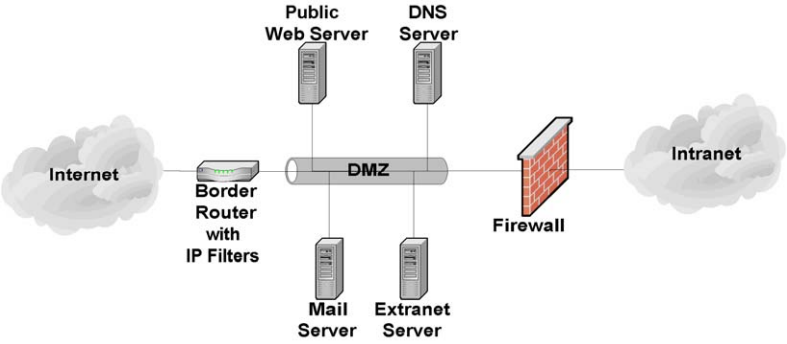
公開WebサーバーとDNSサーバーをイントラネットと接続するネットワーク図の一部。
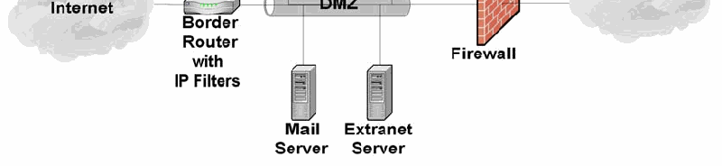
インターネット境界のネットワーク図。ファイアウォール機能とIPフィルターを備える境界ルーターの先に、メールサーバーとエクストラネットサーバーを置く。
Figure 7.1: Simple Single-Firewall DMZ
図7.1: 単一ファイアウォールによる単純なDMZ
A single-firewall DMZ is a low-cost approach, since the organization needs only to add a single firewall and use its existing border router to provide protection to the DMZ. It is usually appropriate only for small organizations that face a minimal threat. The basic weakness in the approach is that while the router is able to protect against most network attacks, it is not “aware” of the mail server application layer protocols (e.g., SMTP, POP, IMAP) and thus cannot protect against application layer attacks aimed at the mail server. In addition, a router cannot provide any virus scanning of incoming email. A superior approach is to add a second firewall between the Internet and the DMZ, as shown in Figure 7.2.
単一ファイアウォールのDMZは、ファイアウォールを1台追加し、既存の境界ルーターを使ってDMZを保護するだけでよいため、低コストの方法である。通常、脅威が最小限の小規模組織に限って適している。この方法の基本的な弱点は、ルーターがほとんどのネットワーク攻撃から保護できても、SMTP、POP、IMAPなどメールサーバーのアプリケーション層プロトコルを「認識」できず、メールサーバーを狙うアプリケーション層攻撃から保護できないことである。また、ルーターは受信メールのウイルススキャンもできない。より優れた方法は、図7.2に示すように、インターネットとDMZの間に2台目のファイアウォールを追加することである。
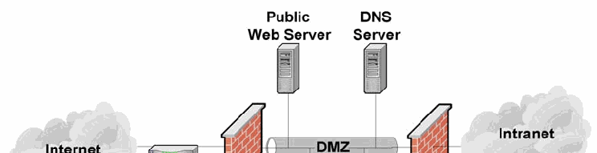
DMZ内の公開DNSサーバーとWebサーバーを示すネットワーク図の一部。
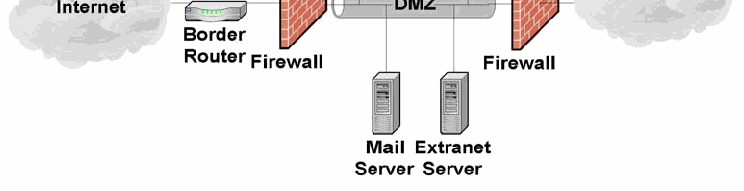
インターネット、境界ルーター／ファイアウォール、DMZのメール・エクストラネットサーバー、イントラネットの接続関係を示す図の一部。
Figure 7.2: Two-Firewall DMZ
図7.2: 2台のファイアウォールによるDMZ
A two-firewall DMZ configuration improves protection over a router-firewall DMZ, since the dedicated firewalls can have more complex and powerful security rule sets. In addition, because a dedicated firewall is often able to analyze incoming and outgoing mail traffic, it can detect and defend against application layer attacks aimed at the mail server. Depending on the rule sets of the firewalls and the level of traffic the DMZ receives, this type of DMZ may result in some performance degradation.
ファイアウォールを2台使うDMZ構成は、ルーターとファイアウォールを組み合わせたDMZより保護を強化する。専用ファイアウォールでは、より複雑で強力なセキュリティ規則セットを設定できるからである。また、専用ファイアウォールは受信および送信メールのトラフィックを分析できる場合が多いため、メールサーバーを狙うアプリケーション層攻撃を検知して防御できる。ファイアウォールの規則セットとDMZが受けるトラフィック量によっては、この種のDMZで性能が多少低下する場合がある。
For organizations that desire the security of the two-firewall DMZ, but do not have the resources to purchase two firewalls, another option exists called the “service leg” DMZ. In this configuration, a firewall is constructed with three (or more) network interfaces. One network interface attaches to the border router, another interface attaches to the internal network, and a third interface connects to the DMZ (see Figure 7.3).
2台のファイアウォールによるDMZのセキュリティを求めていても、2台購入する資源がない組織には、「サービスレッグ」DMZという別の選択肢がある。この構成では、3つ以上のネットワークインターフェースを持つファイアウォールを構成する。1つのインターフェースは境界ルーターに、もう1つは内部ネットワークに接続し、3つ目はDMZに接続する（図7.3を参照）。
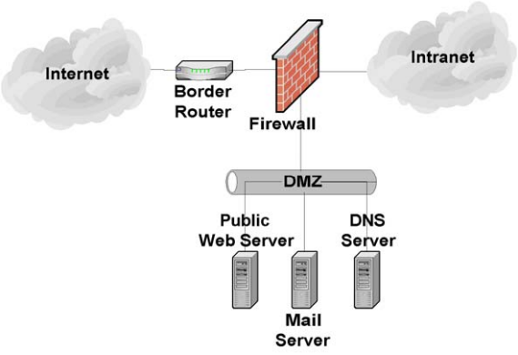
イントラネットからインターネットへ接続する境界ルーターとファイアウォールの構成図の一部。
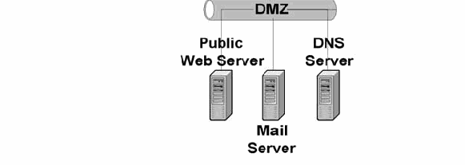
DMZ内に公開DNSサーバーとWebサーバーを配置した構成図の一部。
Figure 7.3: Three-Interface Firewall DMZ
図7.3: 3インターフェースファイアウォールによるDMZ
This configuration subjects the firewall to an increased risk of service degradation during a DoS attack aimed at the DMZ. In the standard single-firewall DMZ network configuration discussed above, a DoS attack against the mail server generally affects only the mail server. In a service-leg DMZ network configuration, the firewall bears the brunt of any DoS attack because it must examine any network traffic before the traffic reaches the mail server (or any other DMZ or internal network resource) [Wack02a]. However, it is increasingly likely that a DoS attack will take the form of a distributed denial of service (DDoS) attack and consume all of the incoming network bandwidth and related devices (e.g., Internet border routers) before ever reaching a DMZ firewall.
この構成では、DMZを標的とするDoS攻撃が発生したとき、ファイアウォールのサービス低下リスクが高まる。前述した標準的な単一ファイアウォールのDMZ構成では、メールサーバーに対するDoS攻撃の影響は通常、メールサーバーだけに及ぶ。一方、サービスレッグDMZ構成では、トラフィックがメールサーバーや他のDMZ資源、内部ネットワーク資源に到達する前にファイアウォールが検査する必要があるため、DoS攻撃の負荷をファイアウォールが受ける [Wack02a]。ただし近年は、DMZファイアウォールに到達する前に、分散型サービス拒否（DDoS）攻撃が受信ネットワーク帯域幅と関連装置（例: インターネット境界ルーター）を使い切る可能性が高まっている。
未レビュー訳The advantages of a DMZ from a security standpoint are as follows:
セキュリティの観点から見たDMZの利点は次のとおりである。
(cid:31) The mail server may be better protected, and network traffic to and from the mail server can be monitored.
(cid:31) メールサーバーの保護を強化でき、メールサーバーとの間のネットワークトラフィックを監視できる。
未レビュー訳(cid:31) Compromise of the mail server does not directly threaten the internal production network.
(cid:31) メールサーバーが侵害されても、内部の本番ネットワークが直接危険にさらされない。
未レビュー訳(cid:31) Greater control can be provided over the security of the mail server since traffic to and from the mail server can be controlled.
(cid:31) メールサーバーとの間のトラフィックを制御できるため、そのセキュリティをより細かく管理できる。
未レビュー訳(cid:31) The DMZ network configuration can be optimized to support and protect the mail servers.
(cid:31) DMZのネットワーク構成を、メールサーバーの支援と保護に合わせて最適化できる。
未レビュー訳The disadvantages of a DMZ from a security standpoint are as follows:
セキュリティの観点から見たDMZの欠点は次のとおりである。
(cid:31) DoS attacks aimed at the mail server may have an effect on the internal network.
(cid:31) メールサーバーに対するDoS攻撃が、内部ネットワークにも影響する可能性がある。
未レビュー訳(cid:31) Depending on the firewall configuration controlling traffic between the DMZ and internal network, it may be possible for the mail server to be used to attack or compromise hosts on the internal network. In other words, protection offered by the DMZ depends in large part on the firewall configuration.
(cid:31) DMZと内部ネットワーク間の通信を制御するファイアウォールの設定によっては、メールサーバーを使って内部ネットワーク上のホストを攻撃または侵害できる場合がある。つまり、DMZによる保護はファイアウォールの設定に大きく依存する。
未レビュー訳7.1.3 Mail Gateways
7.1.3 メールゲートウェイ
Using a mail gateway in the DMZ adds further protection for a mail server. The additional layer makes the mail server significantly more difficult to attack. When a mail server is located in the DMZ, it still must communicate with untrusted third parties, which provides an avenue for attackers. A mail gateway acts as a proxy between the real mail server and the Internet. All messages and communications must go through the proxy before they are forwarded to the mail server. Breaking the direct line of communication between the Internet and the mail server makes it much more difficult to attack the mail server. Since the mail gateway generally requires only limited functionality, it is much easier to harden and secure than a fully functional mail server. Figure 7.4 provides an example of using a mail gateway to fortify a mail server on the internal network.
DMZにメールゲートウェイを設けると、メールサーバーをさらに保護できる。防御層が加わることで、メールサーバーへの攻撃は大幅に難しくなる。メールサーバーをDMZに配置しても、信頼できない第三者との通信は必要であり、攻撃経路は残る。メールゲートウェイは実際のメールサーバーとインターネットの間でプロキシとして機能する。すべてのメッセージと通信は、メールサーバーへ転送される前にこのプロキシを通過しなければならない。インターネットとメールサーバー間の直接通信を断つことで、サーバーを攻撃することがはるかに難しくなる。メールゲートウェイに必要な機能は通常限定されているため、完全な機能を備えたメールサーバーより容易に堅牢化して保護できる。図7.4に、内部ネットワーク上のメールサーバーをメールゲートウェイで保護する例を示す。
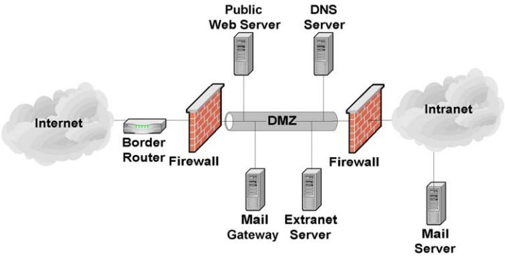
DMZ内の公開DNSサーバーとWebサーバーを示すネットワーク図の一部。
インターネットとイントラネットを境界ルーター、ファイアウォール、DMZ経由で接続するネットワーク構成図。
メールゲートウェイ、メールサーバー、エクストラネットサーバーを含むDMZ構成図の一部。
Figure 7.4: Mail Gateway
図7.4: メールゲートウェイ
7.1.4 Management Network
7.1.4 管理ネットワーク
Mail servers, gateways, and other important components can be connected to each other and managed through an organization’s standard networks or through a separate network known as a management network. If a management network is used, each host being managed through the network has an additional network interface known as a management interface that connects to the management network. Also, each host being managed is unable to pass any traffic between its management interface and any of its other network interfaces. Consoles and other hosts that are used to manage the mail components are attached to the management network only. This architecture effectively isolates the management network from the production networks. The benefits of doing this are to protect the components from some attacks and to ensure that the components can be managed under adverse conditions (e.g., widespread email-borne malware infection). Disadvantages of using a management network include the additional costs in networking equipment and other hardware (e.g., PCs for the consoles) and the inconvenience for mail component administrators of using separate computers for management and monitoring.
メールサーバー、ゲートウェイ、その他の重要な構成要素は、組織の標準ネットワーク、または管理ネットワークと呼ばれる独立ネットワークを通じて相互接続し、管理できる。管理ネットワークを使う場合、ネットワーク経由で管理する各ホストには管理用インターフェースが追加され、このインターフェースが管理ネットワークに接続する。また、管理対象ホストは、管理用インターフェースと他のネットワークインターフェースとの間でトラフィックを転送できないようにする。メール関連の構成要素を管理するコンソールやその他のホストは、管理ネットワークだけに接続する。このアーキテクチャでは、管理ネットワークが本番ネットワークから効果的に分離される。こうすると、一部の攻撃から構成要素を保護でき、電子メールを介したマルウェア感染の広がりなど、厳しい状況下でも構成要素を管理できる利点がある。管理ネットワークの欠点は、ネットワーク機器やコンソール用PCなどの追加ハードウェア費用がかかることと、メール関連構成要素の管理者が管理と監視に別々のコンピューターを使わなければならない不便さである。
7.2 Network Element Configuration
7.2 ネットワーク要素の設定
Once the mail server has been positioned in the network, the network infrastructure elements should be configured to support and protect it. The elements of a network infrastructure that affect mail server security are firewalls, routers, intrusion detection and intrusion prevention systems, and switches. Each has an important role to play and is critical to the overall strategy of protecting the mail server through layered protection. Unfortunately, when it comes to securing a mail server, there is no single “silver bullet” solution. A firewall or intrusion prevention system alone cannot adequately protect a mail server from all threats or attacks.
ネットワーク上にメールサーバーを配置した後は、ネットワーク基盤要素を、メールサーバーを支援・保護するよう設定すべきである。メールサーバーのセキュリティに影響するネットワーク基盤要素は、ファイアウォール、ルーター、侵入検知システムおよび侵入防止システム、スイッチである。それぞれが重要な役割を果たし、多層防御によってメールサーバーを保護する全体戦略に不可欠である。残念ながら、メールサーバーの保護に万能の「銀の弾丸」となる単一の解決策はない。ファイアウォールまたは侵入防止システム単独では、あらゆる脅威や攻撃からメールサーバーを十分に保護できない。
7.2.1 Router/Firewall Configuration
7.2.1 ルーター／ファイアウォールの設定
Several types of firewalls exist. The most basic ones are routers that can provide access control on IP packets. In the middle are stateful firewalls that can provide access control based on TCP and User Datagram Protocol (UDP) as well as IP. The most powerful firewalls are application layer or proxy firewalls that are able to understand and filter email content and commands.42
ファイアウォールにはいくつかの種類がある。最も基本的なものは、IPパケットに対するアクセス制御を行えるルーターである。中間に位置するのはステートフルファイアウォールであり、IPに加えてTCPおよびUser Datagram Protocol（UDP）に基づくアクセス制御を行える。最も高機能なファイアウォールは、電子メールの内容やコマンドを理解してフィルタリングできるアプリケーション層ファイアウォールまたはプロキシファイアウォールである。42
A common misperception about firewalls and routers (acting as firewalls) is that they eliminate all risk and can protect against the misconfiguration of the mail server or poor network design. Unfortunately, this is not the case. Firewalls and routers themselves are vulnerable to misconfiguration and software vulnerabilities. In addition, most firewalls have limited or no “insight” into the application layer where many current attacks occur. Thus mail servers in particular are vulnerable to many attacks, even when located behind a secure, well-configured firewall.
ファイアウォールやファイアウォールとして動作するルーターを導入すればすべてのリスクをなくし、メールサーバーの設定ミスや不適切なネットワーク設計も防げるという誤解がよくある。しかし実際はそうではない。ファイアウォールやルーター自体も、設定ミスやソフトウェアの脆弱性にさらされる。また、大半のファイアウォールは、現在の攻撃の多くが発生するアプリケーション層をほとんど、またはまったく「把握」できない。そのため、メールサーバーは特に、適切に設定された安全なファイアウォールの背後にあっても、多くの攻撃に対して脆弱である。
未レビュー訳A firewall or router (acting as a firewall) that is protecting a mail server should be configured to block all access to the mail server from the Internet except the necessary ports, such as TCP port 25 (SMTP). A firewall is the first line of defense for a mail server; however, to be truly secure, organizations need to implement layered protection for their mail servers (and networks). Most importantly, organizations should strive to maintain all systems in a secure posture and not depend solely on routers, firewalls, or any other single component to stop attackers.
メールサーバーを保護するファイアウォール、またはファイアウォールとして動作するルーターは、TCPポート25（SMTP）などの必要なポートを除き、インターネットからメールサーバーへのアクセスをすべて遮断するよう設定すべきである。ファイアウォールはメールサーバーの最初の防御線であるが、真に安全にするには、組織はメールサーバー（およびネットワーク）に多層防御を実装する必要がある。最も重要な点として、組織は、攻撃者の阻止をルーター、ファイアウォール、その他の単一の構成要素だけに依存せず、すべてのシステムを安全な状態に保つよう努めるべきである。
A modern enterprise router is able to function as a network and transport layer filter (e.g., a basic firewall). A router functioning as a network/transport layer firewall can provide filtering based on several pieces of information [Wack02a], including the following:
現代的なエンタープライズルーターは、ネットワーク層およびトランスポート層のフィルター（例: 基本的なファイアウォール）として機能できる。ネットワーク層／トランスポート層のファイアウォールとして機能するルーターは、次を含む複数の情報に基づいてフィルタリングを行える [Wack02a]。
(cid:31) Source IP address
(cid:31) 送信元IPアドレス
未レビュー訳(cid:31) Destination IP address
(cid:31) 宛先IPアドレス
未レビュー訳(cid:31) Traffic type
(cid:31) トラフィックの種類
未レビュー訳(cid:31) TCP/UDP port number and state.
(cid:31) トラフィックの種類
未レビュー訳The strengths of routers are in the following areas:
ルーターの長所は次の分野にある。
(cid:31) Cost (most organizations already have a border router that can be configured to provide network/transport layer firewall capabilities).
ルーターの長所は次のとおりである。
未レビュー訳The weaknesses of routers are in the following areas:
ルーターの弱点は次の領域にある。
(cid:31) Susceptibility to application layer attacks (e.g., cannot examine email content or commands)
ルーターの弱点は次のとおりである。
未レビュー訳(cid:31) Susceptibility to attacks via allowed ports (routers are generally weaker than firewalls in this area because the routers do not perform analysis at the application layer, but the firewalls do, allowing the firewalls to recognize some attacks sent via allowed ports)
(cid:31) アプリケーション層攻撃に対する脆弱性（電子メールの内容やコマンドを調べられないなど）。
未レビュー訳(cid:31) Difficulty of configuration and administration
(cid:31) 許可ポートを経由する攻撃に対する脆弱性。アプリケーション層を分析しないルーターは、この点で通常ファイアウォールより弱いが、ファイアウォールは許可ポート経由の攻撃の一部を認識できる。
未レビュー訳(cid:31) Limitations in logging capabilities
(cid:31) 設定と管理が難しい。
未レビュー訳(cid:31) Processing capabilities may be more limited and overtaxed by complex rule sets (i.e., access controls lists)
(cid:31) ログ記録機能に制限がある。
未レビュー訳(cid:31) Insufficient rule set expressiveness and filtering capabilities.
(cid:31) 処理能力が限られ、複雑な規則セット（アクセス制御リストなど）によって過負荷になる場合がある。
未レビュー訳The only “pure” network layer firewalls available today are small office/home office (SOHO) firewall appliances and personal firewalls [Wack02a] that may only perform basic packet-level filtering.
現在利用できる「純粋な」ネットワーク層ファイアウォールは、小規模オフィス／ホームオフィス（SOHO）向けファイアウォールアプライアンスとパーソナルファイアウォールだけであり [Wack02a]、基本的なパケットレベルのフィルタリングしか行えない場合がある。
Stateful inspection firewalls are transport layer devices that incorporate “awareness” of the state of a TCP connection. Stateful inspection firewalls maintain internal information such as the state of the connections passing through and the contents of some of the data streams. This allows better and more accurate rule sets and filtering to be specified. Stateful inspection firewalls add the capability to enforce rules based on connection state to the capabilities of a filtering router.
ステートフルインスペクションファイアウォールは、TCP接続の状態を「認識」する機能を備えたトランスポート層の装置である。通過する接続の状態や一部のデータストリームの内容などの内部情報を保持する。これにより、より適切で正確なルールセットとフィルタリングを指定できる。ステートフルインスペクションファイアウォールは、フィルタリングルーターの機能に、接続状態に基づいてルールを適用する機能を加えたものである。
Application layer firewalls (sometimes called application-proxy gateway firewalls) are advanced firewalls that combine network and transport layer access control with application layer functionality. Application layer firewalls permit no traffic directly between the Internet and the internal network, or between two networks. They can usually perform extensive logging and access control.
アプリケーション層ファイアウォール（アプリケーションプロキシゲートウェイファイアウォールと呼ばれることもある）は、ネットワーク層およびトランスポート層のアクセス制御にアプリケーション層の機能を組み合わせた高度なファイアウォールである。アプリケーション層ファイアウォールは、インターネットと内部ネットワークの間、または2つのネットワークの間で、トラフィックを直接通過させない。通常、広範なログ記録とアクセス制御を実行できる。
Application layer firewalls are considered the most secure type of firewall and have numerous advantages over packet filtering routers and stateful inspection firewalls, including the following areas:
アプリケーション層ファイアウォールは最も安全な種類のファイアウォールと見なされており、パケットフィルタリングルーターやステートフルインスペクションファイアウォールに比べて、次のような分野を含む多くの利点がある。
(cid:31) Logging capabilities
(cid:31) ログ記録機能
未レビュー訳(cid:31) Filtering capabilities (can filter specific types of email content and specific SMTP, POP, and IMAP commands)
(cid:31) フィルタリング機能（特定の種類の電子メールコンテンツや、SMTP、POP、IMAPの特定のコマンドをフィルタリングできる）。
未レビュー訳(cid:31) Ease of configuration
(cid:31) 設定が容易である。
未レビュー訳(cid:31) User authentication capabilities.
(cid:31) ユーザー認証機能
未レビュー訳The primary disadvantages that application layer firewalls have when compared to packet filtering routers and stateful inspection firewalls are as follows:
パケットフィルタリングルーターやステートフルインスペクション型ファイアウォールと比べた、アプリケーション層ファイアウォールの主な欠点は次のとおりである。
(cid:31) Speed of throughput.
(cid:31) スループット速度
未レビュー訳(cid:31) Cost (if high end hardware is required to operate effectively)
(cid:31) 費用（効果的な運用に高性能ハードウェアが必要な場合）。
未レビュー訳(cid:31) Support for less popular and new protocols.
(cid:31) あまり普及していない新しいプロトコルへの対応
未レビュー訳Although not strictly a limitation, application layer firewalls are sometimes implemented on hosts running general-purpose operating systems (e.g., Windows, Linux, Unix). This arrangement introduces an added layer of complexity because that general-purpose operating system must also be secured in addition to the firewall software itself. Application layer firewalls are increasingly being deployed as appliance-based devices, which may use specialized operating systems. Routers and stateful inspection firewalls also typically run on specialized operating systems.
厳密には制約ではないが、アプリケーション層ファイアウォールは、Windows、Linux、Unixなどの汎用オペレーティングシステムを実行するホスト上に実装される場合がある。この構成では、ファイアウォールソフトウェア自体に加えて汎用オペレーティングシステムも保護しなければならないため、複雑さが一層増す。アプリケーション層ファイアウォールは、専用オペレーティングシステムを使用することもあるアプライアンス型の装置として導入されることが増えている。ルーターやステートフルインスペクション型ファイアウォールも、通常は専用オペレーティングシステム上で動作する。
To successfully protect a mail server using a firewall, ensure that the firewall is patched to the latest or most secure level (application and underlying operating system) and is both capable of and configured to support the following items:
ファイアウォールを使ってメールサーバーを適切に保護するには、ファイアウォール（アプリケーションと基盤となるオペレーティングシステムの両方）に最新または最も安全なレベルのパッチを適用し、次の項目に対応できる能力を備え、かつ対応するよう設定されていることを確認する。
(cid:31) Control all traffic between the Internet and the mail server
(cid:31) インターネットとメールサーバー間のすべてのトラフィックを制御する。
未レビュー訳(cid:31) Block all inbound traffic to the mail server except that traffic which is required, such as TCP port 25 (SMTP).
(cid:31) TCPポート25（SMTP）など必要な通信を除き、メールサーバーへの受信トラフィックをすべて遮断する。
未レビュー訳(cid:31) Block (in conjunction with the intrusion detection or prevention system [see Section 7.2.2]) IP addresses or subnets that the IDS or IPS reports are attacking the organizational network
(cid:31) 侵入検知システムまたは侵入防止システム（7.2.2節を参照）と連携し、IDSまたはIPSが組織のネットワークを攻撃していると報告したIPアドレスまたはサブネットを遮断する。
未レビュー訳(cid:31) Block known “blacklisted” networks or subnets as identified by a trusted external security response center
(cid:31) 信頼できる外部セキュリティ対応センターが特定した、既知の「ブラックリスト登録済み」ネットワークまたはサブネットを遮断する。
未レビュー訳(cid:31) Notify the network or mail server administrator of suspicious activity through an appropriate means (e.g., page, email, network trap)
(cid:31) 適切な手段（例: ページャー、電子メール、ネットワークトラップ）で、不審な活動をネットワーク管理者またはメールサーバー管理者に通知する。
未レビュー訳(cid:31) Provide content filtering
(cid:31) コンテンツフィルタリングを提供する。
未レビュー訳(cid:31) Provide malware scanning
(cid:31) マルウェアスキャンを提供する。
未レビュー訳(cid:31) Protect against DoS attacks
(cid:31) DoS攻撃から保護する。
未レビュー訳(cid:31) Log critical events, including the following details:
(cid:31) 次の詳細を含む重要なイベントをログに記録する。
未レビュー訳– Time/date
– 時刻／日付
未レビュー訳– Interface IP address
– インターフェースのIPアドレス
未レビュー訳– Manufacturer-specific event name
– メーカー固有のイベント名
未レビュー訳– Standard attack event identifier (if one exists)
– 標準化された攻撃イベント識別子（存在する場合）
未レビュー訳– Source and destination IP addresses
– 送信元と宛先のIPアドレス
未レビュー訳– Source and destination port numbers
– 送信元と宛先のポート番号
未レビュー訳– Network protocol.
– ネットワークプロトコル
未レビュー訳Most firewall devices available in hardware and software perform some type of logging of the traffic they receive. For most firewalls, the default logging configuration is suitable, provided logging is enabled. Administrators should consult their manufacturer documentation if they believe they require additional information to be logged. Certain brands of hardware-based firewalls include an ability to track and log information for each rule. This ability enables accountability to a very specific extent.
ハードウェアおよびソフトウェアとして利用できるほとんどのファイアウォール装置は、受信したトラフィックを何らかの形でログに記録する。ほとんどのファイアウォールでは、ログ記録が有効であれば、既定のログ設定で適切である。追加情報をログに記録する必要があると考える場合、管理者はメーカーの文書を確認すべきである。ハードウェアベースの一部のファイアウォール製品には、規則ごとに情報を追跡してログに記録する機能がある。この機能により、非常に具体的な水準で説明責任を確保できる。
Many firewalls support the ability to selectively decide what information to log. If a firewall receives a series of similar packets from the same location, it may decide not to log any additional packets after the first one. Although this is a valuable feature, consider the consequences: each packet that is dropped and not logged is potential evidence of malicious intent. The principle of logging, a fundamental aspect of accountability, is discussed in detail in Section 9.1.
多くのファイアウォールは、ログに記録する情報を選択的に決定できる。同じ送信元から類似したパケットを連続して受信した場合、最初のパケット以降は記録しないと決定することがある。これは有用な機能であるが、その影響を考慮する。破棄され、記録されなかったパケットの一つ一つが、悪意ある意図を示す潜在的な証拠となるからである。説明責任の基本要素であるログ記録の原則については、9.1節で詳しく説明する。
As with operating systems and other security-enforcing elements, a firewall requires updates. Although more prevalent in software implementations of firewall technology, hardware and router firewalls are capable of updating their firmware. Specific instructions on how to update a firewall are found within the manufacturer documentation. Administrators should check for firewall updates frequently.
オペレーティングシステムや他のセキュリティ強制要素と同様に、ファイアウォールも更新が必要である。ソフトウェア型のファイアウォール技術では特に一般的であるが、ハードウェアファイアウォールやルーターファイアウォールもファームウェアを更新できる。ファイアウォールの更新方法の詳細は、メーカーの文書に記載されている。管理者はファイアウォールの更新を頻繁に確認すべきである。
7.2.2 Intrusion Detection and Prevention Systems
7.2.2 侵入検知システムおよび侵入防止システム
An intrusion detection system (IDS) is an application that monitors the events occurring in a system or network and analyzes them for signs of potential incidents, which are violations or imminent threats of violation of computer security policies, acceptable use policies, or standard security practices.43 An intrusion prevention system (IPS) has all the capabilities of an IDS and can also attempt to stop potential incidents. Because IDS and IPS systems offer many of the same capabilities, they are often collectively called intrusion detection and prevention systems (IDPS). When an IDPS detects a potential incident, it notifies administrators through IDPS console messages, emails, pages, or other mechanisms.
侵入検知システム（IDS）は、システムまたはネットワークで発生するイベントを監視し、コンピューターセキュリティポリシー、許容利用ポリシー、標準的なセキュリティ実務への違反、または違反の差し迫った脅威である潜在的インシデントの兆候がないか分析するアプリケーションである。43 侵入防止システム（IPS）はIDSのすべての機能を備え、潜在的インシデントを阻止することも試みる。IDSとIPSは多くの機能を共有するため、まとめて侵入検知・防止システム（IDPS）と呼ばれることがよくある。IDPSが潜在的インシデントを検知すると、IDPSコンソールのメッセージ、電子メール、ページャー、その他の手段を通じて管理者に通知する。
未レビュー訳The two types of IDPSs most relevant for email security are host-based and network-based.44 A host-based IDPS monitors the characteristics of a single host and the events occurring within that host to identify and stop suspicious activity. Host-based IDPS software must be installed on each individual computer that is to be monitored or protected. Host-based IDPSs are very closely integrated with the operating system of the host computer they protect. Thus, a host-based IDPS must be designed specifically for each operating system (and often each version of that operating system). Host-based IDPSs monitor various aspects of hosts, such as network traffic, system logs, running processes, file access and modification, and system and application configuration changes.
電子メールのセキュリティに最も関連するIDPSは、ホストベースとネットワークベースの2種類である。44 ホストベースIDPSは、1台のホストの特性とそこで発生するイベントを監視し、不審な活動を特定して阻止する。監視または保護する各コンピューターにホストベースIDPSソフトウェアをインストールしなければならない。ホストベースIDPSは保護対象ホストのオペレーティングシステムと密接に統合される。そのため、各OS（多くの場合、OSの各バージョン）向けに個別設計が必要である。ホストベースIDPSは、ネットワークトラフィック、システムログ、実行中のプロセス、ファイルへのアクセスや変更、システムおよびアプリケーションの設定変更など、ホストのさまざまな要素を監視する。
未レビュー訳Host-based IDPSs are especially useful when most of the network traffic to and from the mail server is encrypted (e.g., SSL/TLS or S/MIME is in use) because the functionality and capability of network-based IDPSs (see below) are severely limited when network traffic is encrypted. Also, because they are located on the server, host-based IDPSs can detect some attacks and penetration attempts not recognized by network-based IDPSs. Unfortunately, host-based IDPSs can have a negative impact on host performance. In general, enabling more extensive detection capabilities and monitoring more events cause a greater negative impact on the performance of the host. Host-based IDPSs may not detect some network-based attacks such as certain DoS attacks. If a host-based IDPS is on a mail server that is compromised, it is very likely that the attacker will also compromise the IDPS itself and vice versa.
メールサーバーとの間のネットワークトラフィックの大半が暗号化されている場合（例: SSL/TLSまたはS/MIMEを使用している場合）、ホストベースIDPSは特に有用である。ネットワークトラフィックが暗号化されると、ネットワークベースIDPS（後述）の機能と能力が大きく制限されるためである。また、サーバー上に配置されるため、ホストベースIDPSは、ネットワークベースIDPSでは認識されない一部の攻撃や侵入の試みを検知できる。一方、ホストベースIDPSはホストの性能に悪影響を及ぼすことがある。一般に、検知能力を広げ、監視対象イベントを増やすほど、ホストの性能への悪影響も大きくなる。ホストベースIDPSは、特定のDoS攻撃など、一部のネットワークベース攻撃を検知できない場合がある。メールサーバー上のホストベースIDPSが侵害された場合、攻撃者がIDPS自体も侵害する可能性が非常に高く、その逆も同様である。
A network-based IDPS monitors network traffic for particular network segments or network devices and analyzes the network and application protocol activity to identify and stop suspicious activity. Most network-based IDPSs use predefined “attack signatures” to detect and identify attacks. Attack signatures are patterns that correspond to known types of intrusions. Network-based IDPSs also use other detection methods to identify anomalous activity, protocol violations, and other unusual activity.
ネットワークベースIDPSは、特定のネットワークセグメントまたはネットワーク装置のネットワークトラフィックを監視し、ネットワークプロトコルとアプリケーションプロトコルの動作を分析して、不審な活動を特定し阻止する。ネットワークベースIDPSの大半は、事前定義された「攻撃シグネチャ」を使って攻撃を検知し、識別する。攻撃シグネチャは、既知の侵入の種類に対応するパターンである。また、異常な活動、プロトコル違反、その他の不審な動作を特定するために、他の検知方法も使用する。
Unlike a host-based IDPS, a network-based IDPS can monitor network activity for many hosts simultaneously. Network-based IDPSs can usually detect more network-based attacks and can more easily provide a comprehensive picture of the current attacks against a network. Since network-based IDPSs are installed on dedicated hosts, they do not have a negative effect on the performance of the mail server host and are not immediately compromised by a successful attack on the mail server.
ホストベースIDPSと異なり、ネットワークベースIDPSは多数のホストのネットワーク活動を同時に監視できる。ネットワークベースIDPSは通常、より多くのネットワークベース攻撃を検知でき、ネットワークに対する現在の攻撃の全体像をより容易に提供できる。ネットワークベースIDPSは専用ホストにインストールされるため、メールサーバーホストの性能に悪影響を与えず、メールサーバーへの攻撃が成功しても直ちには侵害されない。
Network-based IDPSs do have some limitations. The timing of an attack can have a significant effect on the ability of a network-based IDPS to detect an attack. For example, if an attacker spreads out the timing of his attack over a period of hours or days, the attack may not be detected by the IDPS. Network configuration, such as the use of asymmetric routing, can have a negative effect on the ability of a network-based IDPS to detect attacks. Network-based IDPSs are also more susceptible to being disabled by DoS attacks (even those not directly targeted at the IDPS). Also, depending on how the network-based IDPS is integrated into the network, it is possible to negatively impact the availability of the network in the event of an IDPS hardware failure.
ネットワークベースIDPSにも制約がある。攻撃のタイミングは、検知能力に大きく影響する場合がある。例えば、攻撃者が数時間または数日にわたって攻撃のタイミングを分散させると、IDPSが攻撃を検知できないことがある。非対称ルーティングなどのネットワーク構成も、ネットワークベースIDPSの攻撃検知能力に悪影響を及ぼすことがある。また、IDPS自体を直接標的としないDoS攻撃を含め、ネットワークベースIDPSはDoS攻撃によって無効化されやすい傾向がある。ネットワーク内の統合方法によっては、IDPSのハードウェア障害が発生した際、ネットワークの可用性に悪影響を及ぼす可能性もある。
Most host-based and network-based IDPSs require frequent updates to their attack signature databases so that they can recognize new attacks. An IDPS that is not updated frequently will fail to recognize the latest (and often most popular) attacks. Both types of IDPSs may be limited in their ability to detect zero-day attacks because it is unlikely that an appropriate signature is available. A host-based IDPS may have a better chance of detecting a zero-day attack since it is better able to detect the actions taken by an attacker after a successful exploit (e.g., new unauthorized privileged accounts, installation of malicious software).
ホストベースとネットワークベースの大半のIDPSでは、新しい攻撃を認識できるよう、攻撃シグネチャデータベースを頻繁に更新する必要がある。頻繁に更新されないIDPSは、最新の、そしてしばしば最も広く使われる攻撃を認識できなくなる。適切なシグネチャが入手できる可能性が低いため、どちらの種類のIDPSもゼロデイ攻撃の検知能力が制限される場合がある。ホストベースIDPSは、エクスプロイト成功後に攻撃者が行った操作（例: 許可されていない特権アカウントの作成、悪意あるソフトウェアのインストール）を検知しやすいため、ゼロデイ攻撃を検知できる可能性がより高い場合がある。
未レビュー訳File integrity checkers are a simple form of host-based IDPS. A file integrity checker computes and stores a hash for every guarded file and establishes a database of file hashes. It provides a tool for system administrators to recognize changes to files, particularly unauthorized changes. File integrity checkers are available both as standalone products and bundled with other host-based IDPS techniques. Some host-based IDPSs can monitor file access attempts and stop suspicious attempts to read, modify, delete, and execute files. A host-based IDPS with this capability could be configured to protect important mail server files.
ファイル完全性チェッカーは、ホストベースIDPSの簡易な形態である。保護対象のすべてのファイルについてハッシュを計算して保存し、ファイルハッシュのデータベースを構築する。システム管理者が、ファイルの変更、特に不正な変更を認識するためのツールとなる。ファイル完全性チェッカーは単体製品としても、他のホストベースIDPS技術とバンドルされた形でも提供されている。一部のホストベースIDPSは、ファイルへのアクセス試行を監視し、ファイルの読み取り、変更、削除、実行を行う不審な試みを阻止できる。この機能を備えたホストベースIDPSは、重要なメールサーバーファイルを保護するよう設定できる。
To successfully protect a mail server using an IDPS, ensure that the IDPS is capable of and configured to:
IDPSを使ってメールサーバーを適切に保護するには、IDPSに次の機能が備わり、それらが正しく設定されていることを確認すること。
(cid:31) Monitor network traffic to and from the mail server
(cid:31) メールサーバーとの間のネットワークトラフィックを監視する。
未レビュー訳(cid:31) Monitor changes to critical files on the mail server (file integrity checking capability)45
(cid:31) メールサーバー上の重要ファイルの変更を監視する（ファイル完全性検査機能）。45
未レビュー訳(cid:31) Monitor the system resources available on the mail server host (host-based)
(cid:31) メールサーバーホストで利用できるシステム資源を監視する（ホストベース）。
未レビュー訳(cid:31) Block (in conjunction with the firewall) IP addresses or subnets that are attacking the organizational network
(cid:31) ファイアウォールと連携し、組織のネットワークを攻撃しているIPアドレスまたはサブネットを遮断する。
未レビュー訳(cid:31) Notify the necessary parties (e.g., IDPS administrator, mail server administrator, incident response team) of suspected attacks through appropriate means according to the organizational incident response policy and procedures
(cid:31) 組織のインシデント対応ポリシーと手順に従い、疑わしい攻撃を適切な手段で必要な関係者（例: IDPS管理者、メールサーバー管理者、インシデント対応チーム）に通知する。
未レビュー訳(cid:31) Detect as wide a variety of scanning and attacks as possible with an acceptable level of false positives
(cid:31) 誤検知を許容できる水準に抑えながら、可能な限り多様なスキャンと攻撃を検知する。
未レビュー訳(cid:31) Log events, including the following details:
(cid:31) 次の詳細を含むイベントをログに記録する。
未レビュー訳– Time/date
– 時刻／日付
未レビュー訳– Sensor IP address
– センサーのIPアドレス
未レビュー訳– Manufacturer-specific attack name
– メーカー固有の攻撃名
未レビュー訳– Standard attack name (if one exists)
– 標準化された攻撃名（存在する場合）
未レビュー訳– Source and destination IP addresses
– 送信元と宛先のIPアドレス
未レビュー訳– Source and destination port numbers
– 送信元と宛先のポート番号
未レビュー訳– Network protocol.
– ネットワークプロトコル
未レビュー訳(cid:31) For network events, packet header information should be captured to assist with the analysis and forensics process
(cid:31) ネットワークイベントの場合、分析およびフォレンジック調査を支援するため、パケットヘッダー情報を取得する。
未レビュー訳(cid:31) Update with new attack signatures frequently (e.g., on a daily to weekly basis, typically after testing the updates).
(cid:31) 新しい攻撃シグネチャを頻繁に更新する（例: 通常は更新をテストした後、毎日から毎週の間隔で更新する）。
未レビュー訳In addition, it is critical that network-based IDPSs and their underlying operating systems are hardened, as network-based IDPSs are often a target of attackers. In particular, the network-based IDPSs should not respond to any type of system interrogation through their monitoring interfaces. If remote management is desired, it should be conducted through an out-of-band means (e.g., separate isolated network). Although typically difficult to administer and interpret, IDPSs are a critical early warning system that can provide the mail server administrator with the necessary information to defend the mail server from attack. [Scar07]
ネットワークベースIDPSは攻撃者の標的になることが多いため、そのIDPS自体と基盤OSを堅牢化することも不可欠である。特に、監視インターフェースを通じたどのようなシステム照会にもネットワークベースIDPSが応答しないようにすべきである。リモート管理を行う場合は、帯域外の手段（例: 独立した隔離ネットワーク）を通じて実施すべきである。IDPSは通常、管理や結果の解釈が難しいものの、メールサーバー管理者が攻撃からサーバーを守るために必要な情報を提供できる重要な早期警戒システムである。[Scar07]
7.2.3 Network Switches
7.2.3 ネットワークスイッチ
Network switches are devices that provide connectivity between two or more hosts located on the same network segments. They are similar to hubs in that they allow communications between hosts, but unlike hubs the switches have more “intelligence” and send communications to only those hosts to which the communications are addressed. The benefit of this from a security standpoint is that when switches are employed on a network, it is much more difficult to eavesdrop on communications between other hosts on the network segment. This is extremely important when a mail server is on a network segment that is used by other hosts. For example, if a hub is used and a host on the DMZ is compromised, an attacker may be able to eavesdrop on the communications of other hosts on the DMZ, possibly leading to the compromise of those hosts or the information they communicate across the network. A primary example of this is public Web servers, which are often on the same subnet as mail servers and, if compromised, would be able to sniff unencrypted email traffic and passwords within the DMZ.
ネットワークスイッチは、同じネットワークセグメント上にある2台以上のホスト間の接続を提供する装置である。ホスト間の通信を可能にする点でハブと似ているが、ハブと異なり、スイッチはより「インテリジェント」であり、通信の宛先となっているホストにだけ通信を送る。セキュリティ上の利点は、ネットワークでスイッチを使用すると、同じネットワークセグメント上の他のホスト間の通信を盗聴することがはるかに難しくなることである。メールサーバーが他のホストも使用するネットワークセグメント上にある場合、これは極めて重要である。例えば、ハブを使用していてDMZ上のホストが侵害されると、攻撃者はDMZ上の他のホストの通信を盗聴できる可能性があり、それらのホストや、それらがネットワーク経由でやり取りする情報の侵害につながるおそれがある。その典型例が公開ウェブサーバーである。公開ウェブサーバーはメールサーバーと同じサブネットに置かれることが多く、侵害されると、DMZ内の暗号化されていない電子メールトラフィックやパスワードをスニッフィングできる。
Many switches include specific security settings that further enhance the security of the network by making it difficult for a malicious entity to “defeat” the switch. Some examples include the ability to minimize the risk of Address Resolution Protocol (ARP) spoofing and ARP poisoning attacks.46 If a switch has these security capabilities, they should be enabled (see appropriate manufacturer documentation).
多くのスイッチには、悪意ある主体がスイッチを「破る」ことを難しくする、ネットワークセキュリティをさらに高める個別設定がある。例えば、Address Resolution Protocol（ARP）詐称やARPポイズニング攻撃のリスクを抑える機能がある。スイッチにこのようなセキュリティ機能がある場合は有効にすべきである（該当するメーカーの文書を参照されたい）。
未レビュー訳Switches can have a negative impact on network-based IDPSs (see Section 7.2.2). Most network switches allow network administrators to configure a specific port on the switch, known as a span port, so that it replicates all the switch’s traffic to the port used by the IDPS. This allows a network-based IDPS to see all traffic on a particular network segment. However, under high loads, the switch might have to stop sending traffic to the span port, causing the IDPS to be unable to monitor network activity. Also, other devices also use span ports, and there are typically very few span ports on a switch, so it might not be possible to connect an IDPS to a particular switch because its span ports are all being used.
スイッチはネットワークベースIDPSに悪影響を及ぼすことがある（7.2.2節を参照）。ほとんどのネットワークスイッチでは、ネットワーク管理者がスイッチ上の特定ポートをSPANポートとして設定し、スイッチの全トラフィックをIDPSが使用するポートへ複製できる。これにより、ネットワークベースIDPSは特定のネットワークセグメント上のすべてのトラフィックを確認できる。ただし、高負荷時には、スイッチがSPANポートへのトラフィック送信を停止せざるをえない場合があり、その結果、IDPSがネットワーク活動を監視できなくなる。また、他の装置もSPANポートを使用し、スイッチ上のSPANポートは通常ごく少数であるため、すべてが使用中だと、IDPSを特定のスイッチに接続できないことがある。
7.3 Checklist for Implementing a Secure Network Infrastructure
7.3 安全なネットワーク基盤の実装チェックリスト
| Completed | Action |
| Network location | |
| Mail server is located on the internal network and protected by a mail gateway and/or | |
| firewall, or | |
| Mail server is located in a DMZ | |
| Firewall configuration | |
| Mail server is protected by a firewall | |
| Mail server, if it faces a higher threat or if it is more vulnerable, is protected by an | |
| application layer firewall | |
| Firewall controls all traffic between the Internet and the mail server | |
| Firewall blocks all inbound traffic to the mail server except the necessary ports, such as | |
| TCP ports 25 (SMTP), 110 (POP3), 143 (IMAP), 398 (LDAP), 636 (secure LDAP), 993 | |
| (secure IMAP), and 995 (secure POP) | |
| Firewall blocks (in conjunction with the intrusion detection or prevention system) IP | |
| addresses or subnets that the IDS or IPS reports are attacking the organizational network | |
| Firewall blocks known “blacklisted” networks or subnets, as identified by a trusted external | |
| security response center | |
| Firewall notifies the network administrator or mail server administrator of suspicious | |
| activity through an appropriate means | |
| Firewall provides content filtering and malware scanning | |
| Firewall is configured to protect against DoS attacks | |
| Firewall logs critical events | |
| Firewall and firewall operating system patched to latest or most secure level | |
| Intrusion detection and prevention systems | |
| IDPS configured to monitor traffic network traffic to and from the mail server | |
| IDPS configured to monitor changes to critical files on mail server (host-based IDPS or file | |
| integrity checker) | |
| IDPS configured to monitor the system resources available on the mail server host (host- | |
| based IDPS) | |
| IDPS blocks (in conjunction with the firewall) IP addresses or subnets that are attacking | |
| the organizational network | |
| IDPS notifies the necessary parties of suspected attacks through appropriate means | |
| according to the organization’s incident response policy and procedures | |
| IDPS configured to maximize detection with an acceptable level of false positives | |
| IDPS configured to log events and to capture packet header information for network | |
| events | |
| IDPS updated with new attack signatures frequently (e.g., on a daily to weekly basis, | |
| typically after testing the updates) | |
| Network switches | |
| Network switches are used to protect against network eavesdropping | |
| Network switches are configured in high-security mode to defeat ARP spoofing and ARP | |
| poisoning attacks | |
| Network switches are configured to send all traffic on network segment to network-based | |
| IDPS |
原本PDFの抜粋画像
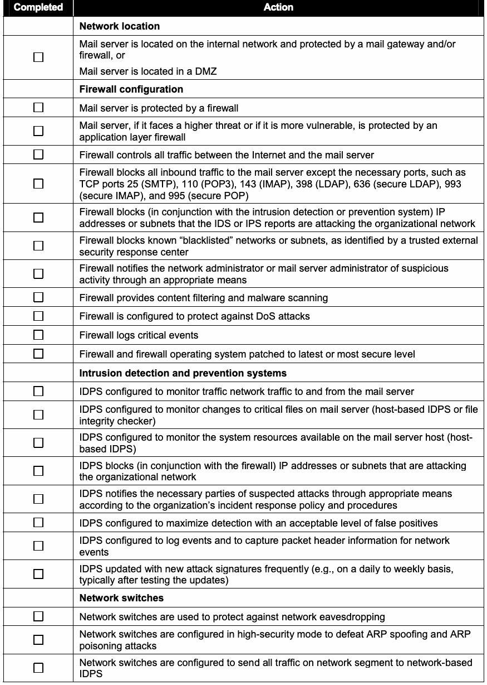
| 完了 | 作業 |
| ネットワーク上の配置 | |
| メールサーバーを内部ネットワークに配置し、メールゲートウェイや | |
| ファイアウォールで保護する、または | |
| メールサーバーをDMZに配置する | |
| ファイアウォールの設定 | |
| メールサーバーをファイアウォールで保護する | |
| 脅威が高い場合、または脆弱性が高いメールサーバーを、 | |
| アプリケーション層ファイアウォールで保護する | |
| インターネットとメールサーバー間のすべてのトラフィックをファイアウォールで制御する | |
| 必要なポート以外、メールサーバーへの受信トラフィックをすべてファイアウォールで遮断する。必要なポートの例: | |
| TCPポート25（SMTP）、110（POP3）、143（IMAP）、398（LDAP）、636（セキュアLDAP）、993 | |
| （セキュアIMAP）、995（セキュアPOP） | |
| 侵入検知システムまたは侵入防止システムと連携し、IDSまたはIPSが組織のネットワークを攻撃していると報告したIP | |
| アドレスまたはサブネットをファイアウォールで遮断する | |
| 信頼できる外部セキュリティ対応センターが特定した、既知の「ブラックリスト登録済み」ネットワークまたはサブネットを遮断する | |
| こと | |
| 不審な活動を、適切な手段を通じてネットワーク管理者またはメールサーバー管理者に通知する | |
| こと | |
| コンテンツフィルタリングとマルウェアスキャンを提供する | |
| DoS攻撃から保護するようファイアウォールを設定する | |
| 重要なイベントをファイアウォールのログに記録する | |
| ファイアウォールおよびファイアウォールOSに最新または最も安全なパッチを適用する | |
| 侵入検知システムおよび侵入防止システム | |
| メールサーバーとの間のネットワークトラフィックを監視するようIDPSを設定する | |
| メールサーバー上の重要ファイルの変更を監視するようIDPSを設定する（ホストベースIDPSまたはファイル | |
| 完全性チェッカー） | |
| メールサーバーホストで利用できるシステム資源を監視するようIDPSを設定する（ホスト | |
| ベースIDPS） | |
| 組織のネットワークを攻撃しているIPアドレスまたはサブネットを、ファイアウォールと連携してIDPSで遮断する | |
| こと | |
| 疑わしい攻撃を適切な手段で関係者に通知するようIDPSを設定する | |
| 組織のインシデント対応ポリシーおよび手順に従って | |
| 許容可能な誤検知水準を保ちながら、検知能力を最大化するようIDPSを設定する | |
| イベントをログに記録し、ネットワークイベントについてはパケットヘッダー情報も取得するようIDPSを設定する | |
| こと | |
| 新しい攻撃シグネチャを頻繁に更新するようIDPSを設定する（例: 毎日から毎週の間隔で、 | |
| 通常は更新をテストした後に適用する） | |
| ネットワークスイッチ | |
| ネットワークスイッチを使用してネットワーク盗聴を防ぐ | |
| ARP詐称およびARP | |
| ポイズニング攻撃を防ぐ高セキュリティモードにネットワークスイッチを設定する | |
| ネットワークセグメント上のすべてのトラフィックをネットワークベースIDPSへ送るよう、ネットワークスイッチを設定する | |
| こと |
原本PDFの抜粋画像
8. Securing Mail Clients
8. メールクライアントのセキュリティ確保
未レビュー訳Hundreds to thousands of mail clients access every operational mail server. Regardless of the security in place on mail servers, it is important to secure the client side. In many respects, the client side represents a greater risk to security than the mail server. Numerous issues need to be carefully considered and addressed to provide an appropriate level of security for mail clients. This section provides general recommendations that apply to most mail client applications. Specific recommendations for securing particular applications are not included in this document.
運用中のメールサーバーには、数百から数千のメールクライアントがアクセスする。メールサーバーにどのようなセキュリティ対策が施されていても、クライアント側を保護することが重要である。多くの点で、クライアント側はメールサーバーより大きなセキュリティリスクとなる。メールクライアントに適切なレベルのセキュリティを確保するには、多くの問題を慎重に検討し、対処する必要がある。本節では、ほとんどのメールクライアントアプリケーションに適用できる一般的な推奨事項を示す。特定のアプリケーションを保護するための個別の推奨事項は、本書では扱わない。
8.1 Installing and Configuring Client Applications
8.1 クライアントアプリケーションのインストールと設定
8.1.1 Patching and Updating Mail Clients
8.1.1 メールクライアントへのパッチ適用と更新
The most important step in securing a mail client is to ensure that all users are using the latest and/or most secure version of the mail client with all necessary patches applied.47 Most major mail clients have had significant vulnerabilities. To identify the vulnerabilities of a particular mail client, see the NIST National Vulnerability Database (NVD) (http://nvd.nist.gov/). The best resource for patches is the appropriate manufacturer’s Web site. Appendix E contains a list of mail client manufacturer Web sites.
メールクライアントを保護するうえで最も重要なのは、すべてのユーザーが、必要なパッチをすべて適用した最新または最も安全なバージョンのメールクライアントを使用していることを確認することである。47 主要なメールクライアントのほとんどで、重大な脆弱性が見つかっている。特定のメールクライアントの脆弱性を特定するには、NIST国家脆弱性データベース（NVD）（http://nvd.nist.gov/）を参照する。パッチを入手する最適な情報源は、該当する製造元のWebサイトである。メールクライアント製造元のWebサイト一覧は付録Eに示す。
未レビュー訳Updating some mail clients is made slightly more complicated because they operate in conjunction with Web browsers. For example, the close integration and bundling of Microsoft Outlook, a mail client, and Internet Explorer, a Web browser, has allowed the configuration settings and vulnerabilities of the latter to affect the former. In such situations, keeping both the mail client and Web browser updated to secure versions and patch levels is particularly important. Failure to run a secure version of a mail client reduces the effectiveness of the rest of the security measures discussed below.
一部のメールクライアントはWebブラウザーと連携して動作するため、更新がやや複雑になる。たとえば、メールクライアントのMicrosoft OutlookとWebブラウザーのInternet Explorerは緊密に統合され、同梱されてきたため、後者の構成設定や脆弱性が前者に影響することがある。このような場合、メールクライアントとWebブラウザーの両方を、安全なバージョンおよびパッチレベルに保つことが特に重要である。メールクライアントの安全なバージョンを使用しなければ、以下で説明する他のセキュリティ対策の有効性が低下する。
8.1.2 Configuring Mail Client Security Features
8.1.2 メールクライアントのセキュリティ機能の設定
Mail client applications may not be configured securely in their default configurations. Mail clients should be configured to:
メールクライアントアプリケーションは、初期設定のままでは安全に構成されていない場合がある。メールクライアントは、次のように設定すべきである。
(cid:31) Disable automatic message preview.
・メッセージの自動プレビューを無効にする。
未レビュー訳(cid:31) Disable automatic opening of messages.
・メッセージの自動オープンを無効にする。
未レビュー訳(cid:31) Disable automatic loading of pictures in messages.
・メッセージ内の画像の自動読み込みを無効にする。
未レビュー訳(cid:31) Disable downloading and processing of active content. Examples include ActiveX controls, Java applets, and JavaScript. This may cause problems for mail applications that are bundled with Web browsers, because disabling this functionality could affect the Web browser, where such functionality may be required. In those cases, some selective and careful disabling/enabling of active content may be needed. In the case of Microsoft Outlook and Internet Explorer, separate Security Zones could be defined for each, which would allow Internet Explorer to have less restrictive security settings than Outlook.
・アクティブコンテンツのダウンロードと処理を無効にする。例として、ActiveXコントロール、Javaアプレット、JavaScriptがある。この設定により、Webブラウザーと同梱されているメールアプリケーションで問題が生じることがある。アクティブコンテンツを無効にすると、必要となる場合があるWebブラウザーの機能にも影響するためである。そのような場合は、アクティブコンテンツを選択的かつ慎重に無効化または有効化する必要がある。Microsoft OutlookとInternet Explorerの場合、それぞれに異なるセキュリティゾーンを定義すれば、Outlookより制限の緩いセキュリティ設定をInternet Explorerに適用できる。
未レビュー訳(cid:31) Enable anti-spam and anti-phishing features, if available. These features often have rather permissive settings by default, so it may be beneficial from a security perspective to set them to a higher level. Also, users should be educated on reviewing tagged or filtered messages to identify ones that have been incorrectly labeled. Some mail clients allow users to configure filtering features such as creating lists of safe senders and senders to block.
・利用可能であれば、スパム対策機能とフィッシング対策機能を有効にする。これらの機能は、初期設定がかなり緩いことが多いため、セキュリティの観点から、より厳しい設定にすることが有益な場合がある。また、誤って分類されたメッセージを見つけられるよう、タグ付けまたはフィルタリングされたメッセージを確認する方法をユーザーに周知する必要がある。メールクライアントによっては、受信を許可する送信者やブロックする送信者のリストを作成するなど、フィルタリング機能をユーザーが設定できる。
未レビュー訳There are additional issues specific to portable mail clients, such as those on cell phones and PDAs. The use of portable mail clients has increased significantly in recent years. Users should be made aware that the information that is stored on them is at risk, and that they need to take the necessary precautions in case their devices are lost or stolen. Beyond the obvious physical security measures, users should also reconfigure their devices, which are typically configured insecurely by default. Security features to consider include the following:
携帯電話やPDAなどの携帯型メールクライアントには、固有の考慮事項がある。近年、携帯型メールクライアントの利用は大幅に増加している。保存されている情報が危険にさらされること、また、端末が紛失または盗難に遭った場合に必要な予防措置を取る必要があることを、ユーザーに認識させるべきである。明白な物理的セキュリティ対策に加え、通常は初期設定が安全でない端末を、ユーザーは再設定すべきである。検討すべきセキュリティ機能は次のとおりである。
(cid:31) Requiring a password or a PIN to gain access to the device.
・端末へのアクセスにパスワードまたはPINを要求する。
未レビュー訳(cid:31) Encrypting locally stored data, including messages and downloaded file attachments.
・メッセージやダウンロードしたファイル添付を含む、ローカルに保存されたデータを暗号化する。
未レビュー訳(cid:31) Encrypting and/or signing messages, such as supporting S/MIME or OpenPGP and managing digital certificates.
・S/MIMEまたはOpenPGPへの対応やデジタル証明書の管理などにより、メッセージを暗号化または署名する。
未レビュー訳(cid:31) Encrypting communications between the mail client and the mail server, such as using SSL-based encryption to protect POP, IMAP, and SMTP communications.
・SSLベースの暗号化を使用してPOP、IMAP、SMTP通信を保護するなど、メールクライアントとメールサーバー間の通信を暗号化する。
未レビュー訳(cid:31) Remotely rendering the device useless or deleting its information if it is compromised.
・端末が侵害された場合に、遠隔操作で使用不能にするか、端末内の情報を削除する。
未レビュー訳(cid:31) Changing the Bluetooth discovery PIN number on Bluetooth devices to prevent unauthorized access.
・不正アクセスを防ぐため、Bluetooth機器のBluetooth検出用PIN番号を変更する。
未レビュー訳Organizations should also ensure that their security policy supports the protection of portable mail clients, such as requiring that the devices have anti-virus software enabled on them if available and that wireless functionality be turned off when not being used. Organizations that do not want certain types of devices used to access email should specify the restriction in their security policy.
組織は、携帯型メールクライアントの保護をセキュリティポリシーで支援することも確認すべきである。たとえば、利用可能な場合は端末のウイルス対策ソフトウェアを有効にすること、無線機能を使用していないときはオフにすることを求める。特定の種類の端末による電子メールへのアクセスを認めない組織は、その制限をセキュリティポリシーに明記すべきである。
Many organizations configure mobile devices with VPN access to corporate networks or applications that can connect remotely to servers. As a good security measure, limit access to these applications or remove them if they are not being used. Also, do not store logins, passwords, or personal information on the devices. If the device is stolen, an attacker could potentially use network login information with the VPN to access internal network resources.
多くの組織では、モバイル端末にVPN経由で企業ネットワークへアクセスする機能や、サーバーへリモート接続するアプリケーションを設定している。適切なセキュリティ対策として、これらのアプリケーションへのアクセスを制限し、使用していないものは削除する。また、端末にログイン情報、パスワード、個人情報を保存してはならない。端末が盗まれた場合、攻撃者がネットワークのログイン情報とVPNを利用し、内部ネットワークリソースへアクセスする可能性がある。
8.1.3 Configuring Authentication and Access
8.1.3 認証とアクセスの設定
Early mail client applications did not require user authentication because mailbox access was restricted by the local file system and the user owned the mailbox file. As MUAs evolved and provided the functionality to access mailboxes remotely via POP and IMAP (see Section 2), user authentication became a requirement. Typically, this was accomplished with users inputting a username and a password when accessing their mailbox. To be more “user-friendly,” mail clients incorporated configuration files that contained (e.g., “remembered”) usernames and passwords with which to access the mail server. Although this provides ease of use for users, it introduces security weaknesses insofar as a remote or local attacker having logical or physical access to the mail client host may gain access to the authentication information and, in turn, the mailbox contents. In addition, if automatic completion of user input is enabled, a local attacker may be able to use the feature to discover passwords systematically.
初期のメールクライアントアプリケーションでは、メールボックスへのアクセスがローカルファイルシステムによって制限され、ユーザーがメールボックスファイルを所有していたため、ユーザー認証は必要なかった。メールユーザーエージェント（MUA）が進化し、POPおよびIMAPを介してメールボックスにリモートアクセスする機能（第2節を参照）を提供するようになると、ユーザー認証が必須になった。通常、メールボックスへアクセスする際にユーザー名とパスワードを入力する方式が用いられた。使いやすさを高めるため、メールクライアントには、メールサーバーへのアクセスに使うユーザー名とパスワードを（「記憶」して）保存する設定ファイルが組み込まれた。これはユーザーの利便性を高める一方、メールクライアントのホストに論理的または物理的にアクセスできるリモートまたはローカルの攻撃者が認証情報、ひいてはメールボックスの内容を入手し得るというセキュリティ上の弱点を生む。さらに、ユーザー入力の自動補完が有効な場合、ローカルの攻撃者がこの機能を使ってパスワードを系統的に割り出す可能性がある。
Disabling password recall functionality is an effective way to increase mail client security. If the functionality cannot be disabled, then keeping these configuration files secure is important. Most operating systems provide file permission and access control features that offer some means of protection. With hosts that do provide these controls, ensure that the mail client configuration files are restricted for accessibility by only the file owner. Additionally, ensure that the file is located in a directory controlled by the owner. In cases where a host’s file permissions and access controls are unavailable, the best resolution is to remove the user passwords from the configuration files.
パスワード記憶機能を無効にすると、メールクライアントのセキュリティを効果的に高められる。この機能を無効にできない場合は、設定ファイルを安全に保管することが重要である。ほとんどのオペレーティングシステムには、一定の保護を提供するファイル権限およびアクセス制御機能がある。これらの制御機能を備えるホストでは、メールクライアントの設定ファイルにアクセスできるのをファイル所有者のみに制限する。また、そのファイルが所有者の管理するディレクトリに置かれていることも確認する。ホストでファイル権限やアクセス制御を利用できない場合は、設定ファイルからユーザーのパスワードを削除するのが最善である。
未レビュー訳Another area to address is the actual communication between the mail client and mail server. As mentioned in Section 2, all network communication with the default configurations of SMTP, POP, and IMAP occurs unencrypted. This makes usernames, passwords, and message content subject to interception and alteration by malicious entities. To increase client to server security, this communication can be encrypted using SSL/TLS. Most commonly used mail clients support SSL/TLS; it should be used if it is available. TLS version 1 is preferred for use; at a minimum, SSL version 3 should be used.48
対処すべきもう一つの領域は、メールクライアントとメールサーバー間の実際の通信である。第2節で述べたように、SMTP、POP、IMAPの初期設定では、すべてのネットワーク通信が暗号化されない。そのため、ユーザー名、パスワード、メッセージ内容が悪意ある主体による傍受や改ざんの対象となる。クライアントとサーバー間のセキュリティを高めるには、この通信をSSL/TLSで暗号化できる。一般的に使用されるメールクライアントのほとんどがSSL/TLSをサポートしており、利用可能であれば使用する必要がある。TLSバージョン1の使用が望ましく、少なくともSSLバージョン3を使用する。48
未レビュー訳The selection of email addresses and user account names also affects authentication. Using account names in email addresses should be avoided, so that an attacker cannot easily determine a person’s account name from the person’s email address. Organizations that allow users to select their own email account names should put controls in place to ensure that account names and email addresses are distinct and unrelated. Organizations might also want to place additional restrictions on email addresses, such as having different naming conventions for certain types of users (e.g., contractors, foreign nationals) to allow the user type to be easily recognized. Examples of such naming conventions are firstname.lastname.countrycode@domain.gov for a foreign national’s address, and firstname.lastname.ctr@domain.gov for a contractor’s address.
電子メールアドレスとユーザーアカウント名の選択も認証に影響する。攻撃者が電子メールアドレスから本人のアカウント名を容易に推測できないよう、電子メールアドレスにアカウント名を含めることは避けるべきである。ユーザーが自分で電子メールアカウント名を選べる組織は、アカウント名と電子メールアドレスが別個で、相互に関連しないよう管理策を設けるべきである。また、請負業者や外国籍の者など、ユーザーの種類を容易に判別できるよう、種類ごとに異なる命名規則を設けるなど、電子メールアドレスに追加の制約を設けることも検討できる。命名規則の例として、外国籍の者のアドレスには firstname.lastname.countrycode@domain.gov、請負業者のアドレスには firstname.lastname.ctr@domain.gov を使用する方法がある。
8.1.4 Securing the Client Host’s Operating System
8.1.4 クライアントホストのオペレーティングシステムの保護
Many host operating systems provide a number of configuration settings and other measures for increasing the security of the mail client either directly or indirectly. The host operating system is a key component of the overall security of a client host. The following should be done to secure the host operating system:
多くのホストオペレーティングシステムには、メールクライアントのセキュリティを直接的または間接的に高めるための構成設定やその他の対策が用意されている。ホストオペレーティングシステムは、クライアントホスト全体のセキュリティを構成する重要な要素である。ホストオペレーティングシステムを保護するため、次の対策を実施すべきである。
(cid:31) Keep it updated to the most secure patch level.
・最も安全なパッチレベルに更新した状態を保つ。
未レビュー訳(cid:31) Configure it to allow only the appropriate user(s) to access locally stored messages and mail client configuration files.
・ローカルに保存されたメッセージやメールクライアントの設定ファイルへのアクセスを、適切なユーザーのみに許可するよう構成する。
未レビュー訳(cid:31) Configure (Windows hosts only) the Windows Script Host (WSH) [Pits01]:
・（Windowsホストのみ）Windows Script Host（WSH）[Pits01]を次のように構成する。
未レビュー訳– Remove WSH or allow only the administrator to access
– WSHを削除するか、アクセスを管理者のみに許可する。
未レビュー訳– Change the default action of the following file extensions from execute to edit:49
– 次のファイル拡張子の既定の動作を「実行」から「編集」に変更する。49
未レビュー訳– JS (JavaScript)
– JS（JavaScript）
未レビュー訳– JSE (JavaScript Encoded File)
– JSE（JavaScript Encoded File）
未レビュー訳– VBE (VBScript Encoded File)
– VBE（VBScript Encoded File）
未レビュー訳– VBS (Visual Basic Script)
– VBS（Visual Basic Script）
未レビュー訳– WS (Windows Script File)
– WS（Windows Script File）
未レビュー訳– WSC (Windows Script Component)
– WSC（Windows Script Component）
未レビュー訳– WSF (Windows Script File)
– WSF（Windows Script File）
未レビュー訳– WSH (Windows Script Host Settings File)
– WSH（Windows Script Host Settings File）
未レビュー訳(cid:31) On Windows hosts, configure them to display full file extensions (this ensures that an email attachment such as iloveyou.txt.vbs is displayed instead of iloveyou.txt).
・Windowsホストでは、ファイルの拡張子をすべて表示するように設定する（これにより、たとえば電子メール添付ファイル iloveyou.txt.vbs は iloveyou.txt ではなく iloveyou.txt.vbs と表示される）。
未レビュー訳(cid:31) Install an anti-virus application and configure it to automatically scan all incoming messages and any attachments as they are opened.50 Also, install and use an anti-spyware application if the anti-virus software does not offer robust anti-spyware capabilities. Section 6.2.1 contains a detailed explanation of malware scanning at the client, server, and network layers.
・ウイルス対策アプリケーションをインストールし、受信メッセージと添付ファイルを開く際に自動スキャンするよう設定する。50 また、ウイルス対策ソフトウェアに十分なスパイウェア対策機能がない場合は、スパイウェア対策アプリケーションもインストールして使用する。クライアント、サーバー、ネットワークの各層でのマルウェアスキャンについては、第6.2.1節で詳しく説明する。
未レビュー訳(cid:31) Install a personal firewall to protect the computer from unauthorized communications, unless the computer is already sufficiently protected by existing network security devices (e.g., network firewalls).
・既存のネットワークセキュリティ機器（ネットワークファイアウォールなど）によってコンピューターがすでに十分に保護されている場合を除き、不正な通信からコンピューターを保護するため、パーソナルファイアウォールをインストールする。
未レビュー訳(cid:31) Ensure that the operating system enforces the concept of least privilege, because malicious code runs in the security context on which it was launched (i.e., the user’s access level). For example, users should only read and compose email using accounts without administrator-level privileges.
・悪意あるコードは起動時のセキュリティコンテキスト（すなわち、ユーザーのアクセスレベル）で実行されるため、オペレーティングシステムが最小権限の原則を適用するようにする。たとえば、ユーザーは管理者権限のないアカウントを使って電子メールを閲覧・作成するべきである。
未レビュー訳(cid:31) Ensure that critical components of the operating system are protected from malicious code.51
・オペレーティングシステムの重要な構成要素を悪意あるコードから確実に保護する。51
未レビュー訳(cid:31) Use a file encrypting application to protect the email stored locally on the user’s hard drive (this is especially important for laptop computers and other mobile devices, which are more likely to be stolen).
・ユーザーのハードドライブにローカル保存された電子メールを保護するため、ファイル暗号化アプリケーションを使用する（盗難に遭う可能性が高いノートPCやその他のモバイル端末では特に重要である）。
未レビュー訳(cid:31) Configure the operating system to automatically lock the current OS session after a fixed period of inactivity.
・一定時間操作がない場合に、現在のOSセッションを自動的にロックするようオペレーティングシステムを設定する。
未レビュー訳8.2 Secure Message Composition
8.2 メッセージ作成の保護
Encryption should be used to securely send email messages containing sensitive information. Two primary methods for encrypting email are S/MIME and OpenPGP, which were discussed in detail in Section 3. Both offer similar levels of protection, but their inherent architectures are different. Most mail clients support S/MIME natively, whereas OpenPGP usually comes in the form of a plug-in. Ultimately, the choice comes down to which solution meets the requirements of the organization.52 As a general rule, unencrypted email should be treated as a postcard – anyone can read and modify.
機密情報を含む電子メールメッセージを安全に送信するには、暗号化を使用する必要がある。電子メールを暗号化する主な方法はS/MIMEとOpenPGPであり、第3節で詳しく説明した。どちらも同程度の保護を提供するが、基盤となるアーキテクチャは異なる。ほとんどのメールクライアントはS/MIMEを標準でサポートする一方、OpenPGPは通常プラグインとして提供される。最終的には、組織の要件を満たすソリューションを選択することになる。52 一般に、暗号化されていない電子メールは、誰でも読んだり改変したりできるはがきのように扱うべきである。
未レビュー訳Securing messages using S/MIME or OpenPGP involves obtaining digital certificates for both the sender and recipient. A digital certificate has several components, including the name and email address of the person to whom the certificate was issued, a public key and its expiration date, information about the CA that issued the certificate (including its digital signature), and the serial number of the certificate. When the sender has both the sender and receiver’s digital certificates, the sender can digitally sign and encrypt email messages to the recipient. Digitally signing a message is important in three ways:
S/MIMEまたはOpenPGPを使用してメッセージを保護するには、送信者と受信者の双方のデジタル証明書を取得する必要がある。デジタル証明書には、証明書の発行対象者の氏名と電子メールアドレス、公開鍵とその有効期限、証明書を発行した認証局（CA）に関する情報（デジタル署名を含む）、証明書のシリアル番号など、複数の構成要素が含まれる。送信者が自身と受信者の双方のデジタル証明書を持っていれば、受信者宛ての電子メールメッセージにデジタル署名を付与し、暗号化できる。メッセージへのデジタル署名は、次の3つの点で重要である。
(cid:31) Authenticity allows the recipient to be confident that the message is from the sender.
・真正性により、受信者はメッセージが送信者からのものであると確信できる。
未レビュー訳(cid:31) Non-repudiation ensures that the sender cannot deny creating the message.
・否認防止により、送信者がメッセージを作成したことを否定できないようにする。
未レビュー訳(cid:31) Integrity ensures that the message has not accidentally or maliciously been altered during transmission from sender to recipient.
・完全性により、送信者から受信者への転送中に、メッセージが偶発的または悪意をもって改変されていないことを保証する。
未レビュー訳Digital certificates can be obtained from either an internal certificate authority (CA) or a public, third-party CA.53 Table 3.3 contains a list of third-party CAs.
デジタル証明書は、内部の認証局（CA）または公開の第三者CAから取得できる。53 第三者CAの一覧は表3.3に示す。
未レビュー訳For a mail client that is configured to send and receive encrypted messages, received messages should be stored in their encrypted format only if they need to continue to be protected; otherwise, it is preferable to allow users to choose which messages should be stored encrypted, if any.54 The mail client may also be configured to send and receive unencrypted, but authenticated, messages, where integrity is the primary concern. Under normal circumstances, the mail client should be set to require a password once per email session. Requiring a password each time a message is opened for reading can take considerable time and can discourage people from using encryption to protect emails; accordingly, this level of security is typically used only for the highest-security needs.
暗号化メッセージを送受信するよう構成したメールクライアントでは、保護を継続する必要があるメッセージだけを暗号化形式のまま保存する。それ以外の場合は、暗号化して保存するメッセージをユーザーが選べるようにすることが望ましい。54 メールクライアントは、完全性を主な目的として、暗号化されていないが認証済みのメッセージを送受信するよう構成することもできる。通常、メールクライアントでは、電子メールのセッションごとに1回パスワードを要求する設定にする。メッセージを開いて読むたびにパスワードを要求すると、時間がかかり、電子メールの保護に暗号化を使う意欲を損なう可能性がある。そのため、このレベルのセキュリティは通常、最も高いセキュリティが必要な場合にのみ用いられる。
未レビュー訳8.3 Plug-ins
8.3 プラグイン
A number of different plug-ins are available for mail clients. These plug-ins offer additional functionality beyond that of the basic mail client configuration. Mail encryption, anti-virus, pop-up blocker, and malware prevention plug-ins are a small subset of the types of plug-ins available. Some provide advanced filtering capabilities, whereas others provide audible notification of new messages. Regardless of the type of plug-in, care needs to be taken when installing them. Generally, only install plug-ins from trusted sources. Be wary of any plug-in that has not been distributed from the manufacturer in a digitally signed archive. Some plug-ins offering additional functionality may contain spyware that can track the Web sites a user visits or adware that delivers pop-up advertisements. They can come in the form of a toolbar that is automatically installed in your Internet browser. Using manufacturers’ Web sites to acquire plug-ins reduces the likelihood of installing a malicious plug-in.
メールクライアントでは、さまざまなプラグインを利用できる。これらは、基本的なメールクライアントの構成を超える追加機能を提供する。メール暗号化、ウイルス対策、ポップアップブロック、マルウェア防止などは、利用可能なプラグインの一部にすぎない。高度なフィルタリング機能を提供するものもあれば、新着メッセージを音で知らせるものもある。種類を問わず、プラグインのインストールには注意が必要である。一般に、信頼できる提供元のプラグインだけをインストールする。製造元からデジタル署名付きアーカイブとして配布されていないプラグインには注意する。追加機能を提供するプラグインの中には、ユーザーが閲覧したWebサイトを追跡するスパイウェアや、ポップアップ広告を表示するアドウェアが含まれる場合がある。Webブラウザーに自動でインストールされるツールバーの形で提供されることもある。製造元のWebサイトからプラグインを入手すれば、悪意あるプラグインをインストールする可能性を低減できる。
8.4 Accessing Web-Based Mail Systems
8.4 Webベースのメールシステムへのアクセス
From a user standpoint, accessing a mail server via a Web browser can be efficient and convenient. Unfortunately, a number of security concerns should be carefully considered before implementing Web-based access to mail servers. Many of the concerns are the same as those for standard mail clients. For example, the default configuration for Web-based access normally sends passwords and data in the clear, such as those for POP and IMAP. For greater security, organizations should configure the mail server to accept Web connections only via 128-bit SSL/TLS connections.55 This setting causes both user authentication and email content to be encrypted during transmission from the user’s Web browser to the Web server. However, it does not protect the content as it is transmitted from the mail server to the recipient(s); some form of email encryption, such as S/MIME or OpenPGP, would need to be used if message confidentiality is required. Unfortunately, most Web-based mail systems do not directly support them. One solution is to encrypt the data separately and then paste it into the browser for transmission (this is easily done with OpenPGP).
ユーザーにとって、Webブラウザーを介してメールサーバーにアクセスする方法は効率的で便利な場合がある。しかし、メールサーバーへのWebベースのアクセスを導入する前に、複数のセキュリティ上の懸念を慎重に検討する必要がある。その多くは、標準的なメールクライアントに関する懸念と共通する。たとえば、Webベースのアクセスは初期設定では通常、POPやIMAPの場合と同様に、パスワードやデータを平文で送信する。セキュリティを高めるため、組織はメールサーバーが128ビットSSL/TLS接続経由のWeb接続のみを受け入れるように設定する必要がある。55 この設定により、ユーザーのWebブラウザーからWebサーバーへの転送中に、ユーザー認証情報と電子メールの内容の両方が暗号化される。ただし、メールサーバーから受信者への転送中の内容は保護されない。メッセージの機密性が必要な場合は、S/MIMEやOpenPGPなどの電子メール暗号化を使用する必要がある。しかし、ほとんどのWebベースのメールシステムはこれらを直接サポートしていない。解決策の一つは、データを別途暗号化してからブラウザーに貼り付けて送信することである（OpenPGPなら容易に実行できる）。
未レビュー訳Enabling Web-based access often requires a weakening in the overall security posture of the mail server. Organizations must be aware of the risks and carefully consider whether to implement Web-based access to their mail server (see Section 6.6).
Webベースのアクセスを有効にすると、メールサーバー全体のセキュリティ態勢を弱める必要が生じることが多い。組織はリスクを認識し、メールサーバーへのWebベースのアクセスを導入するかどうか慎重に検討する必要がある（第6.6節を参照）。
A serious risk with Web-based mail systems is access from public computers (e.g., college computing lab, Internet café, public library). In these situations, the browser may be configured to store and recall usernames and passwords automatically. If it is configured this way, an unauthorized person may use these credentials to obtain access to the organization’s mail server. Another danger is that a public computer may have a keystroke logger that registers and saves all keystrokes entered by the mail user, including username and password. Again, this data could be used to access and compromise the organization’s mail server. Web browsers also temporarily cache a user’s credentials for a fixed period after the user logs in. If the user fails to empty the browser cache and close the browser after completing access to the mail server, it is possible for an unauthorized person to employ the cached credentials to access the organization’s mail server. The use of SSL/TLS does not generally protect against these dangers. Web browsers also cache downloaded files and create temporary files that may contain email messages, email attachments, and other information from Web-based mail access. If the Web browser does not clean the cache and temporary files after the session ends, other users of the computer could potentially access these files.
Webベースのメールシステムにおける重大なリスクの一つは、公共のコンピューター（大学のコンピューター室、インターネットカフェ、公共図書館など）からのアクセスである。このような環境では、ブラウザーがユーザー名とパスワードを自動的に保存・再入力する設定になっている場合がある。その設定では、権限のない者がその認証情報を使って組織のメールサーバーにアクセスできる可能性がある。別の危険として、公共のコンピューターにキーストロークロガーが存在し、メールユーザーが入力したユーザー名やパスワードを含むすべてのキー入力を記録・保存することがある。このデータも、組織のメールサーバーへのアクセスや侵害に悪用され得る。Webブラウザーは、ユーザーのログイン後、一定時間、認証情報を一時的にキャッシュする。メールサーバーへのアクセスを終えた後、ユーザーがブラウザーのキャッシュを消去せず、ブラウザーを閉じなければ、権限のない者がキャッシュ済みの認証情報を使って組織のメールサーバーにアクセスする可能性がある。SSL/TLSを使用しても、通常これらの危険は防げない。Webブラウザーはダウンロードしたファイルをキャッシュし、一時ファイルも作成するため、そこに電子メールメッセージ、添付ファイル、その他のWebメールアクセス情報が含まれる場合がある。セッション終了後にブラウザーがキャッシュと一時ファイルを消去しなければ、同じコンピューターを使う他のユーザーがそれらのファイルにアクセスできる可能性がある。
The security of Web-based mail is based in large part on the expertise of users. For example, some Web-based mail applications ask users if they are using public or private computers; users should select the public option to further protect their email information. Thus, users should be made aware of what they should do before being granted access to Web-based mail. Organizations should also consider creating a “Rules of Behavior” agreement that each user signs, in which he or she acknowledges responsibility and accountability for the appropriate use of Web-based mail.
Webベースのメールのセキュリティは、ユーザーの知識に大きく依存する。たとえば、一部のWebベースのメールアプリケーションは、公共のコンピューターか個人用コンピューターかをユーザーに尋ねる。電子メール情報をさらに保護するには、ユーザーは「公共」の選択肢を選ぶ必要がある。このため、Webベースのメールへのアクセスを許可する前にユーザーが取るべき行動を周知する必要がある。組織は、各ユーザーが署名し、Webベースのメールの適切な利用に関する責任と説明責任を認める「行動規則」への同意書を作成することも検討する必要がある。
未レビュー訳8.5 Checklist for Securing Mail Clients
8.5 メールクライアントを保護するためのチェックリスト
| Completed | Action |
| Patch and update mail clients | |
| Update mail client to newest or most secure version | |
| Apply any necessary patches to mail client (in conformance with organizational | |
| polices and configuration management) | |
| Apply any necessary patches to Web browser (for mail clients that are integrated | |
| with browser) | |
| Configure mail client security features | |
| Disable automatic message preview | |
| Disable automatic opening of messages | |
| Disable automatic loading of pictures in messages | |
| Disable downloading and processing of active content (if appropriate) | |
| Enable anti-spam and anti-phishing features | |
| Reconfigure portable mail clients, such as those on cell phones and PDAs, to | |
| improve their security | |
| Ensure that security policy supports the protection of portable mail clients, such as | |
| requiring anti-virus software to be installed and enabled |
原本PDFの抜粋画像
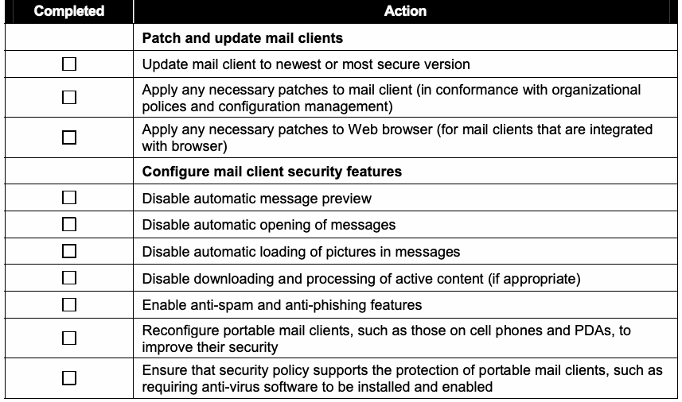
| 完了 | 対策 |
| メールクライアントにパッチを適用して更新する | |
| メールクライアントを最新または最も安全なバージョンに更新する | |
| 必要なパッチをメールクライアントに適用する（組織の | |
| 方針および構成管理に従う） | |
| （メールクライアントがブラウザーと統合されている場合は）Webブラウザーに必要なパッチを | |
| 適用する | |
| メールクライアントのセキュリティ機能を設定する | |
| メッセージの自動プレビューを無効にする | |
| メッセージの自動オープンを無効にする | |
| メッセージ内の画像の自動読み込みを無効にする | |
| （該当する場合）アクティブコンテンツのダウンロードと処理を無効にする | |
| スパム対策機能とフィッシング対策機能を有効にする | |
| 携帯電話やPDAなどの携帯型メールクライアントを再設定して、 | |
| セキュリティを高める | |
| セキュリティポリシーに携帯型メールクライアントの保護を盛り込む。たとえば、 | |
| ウイルス対策ソフトウェアのインストールと有効化を求める |
| Completed | Action |
| Limit access to VPN clients and other remote access applications on mobile | |
| devices, or remove the clients/applications if they are not needed | |
| Configure authentication and access | |
| Enable secure authentication and access | |
| Disable ability of mail client to store username and passwords | |
| Configure client to use encryption (TLS) for SMTP, POP, and IMAP | |
| communications | |
| Set restrictions on the selection of email addresses, such as ensuring they are | |
| unrelated to user account names | |
| Secure the mail client host operating system | |
| Keep the OS updated to the most secure patch level | |
| Configure the OS to allow only the appropriate user(s) to access locally stored | |
| messages and mail client configuration files | |
| Secure or remove Windows Script Host (Windows hosts only) | |
| Change the default action on files associated with the Windows Script Host from | |
| execute to edit (Windows hosts only) | |
| Ensure that the OS is configured to show full file extensions (Windows hosts only) | |
| Install an anti-virus application and configure it to scan incoming messages and | |
| attachments; also install an anti-spyware application if the anti-virus software does | |
| not offer robust anti-spyware capabilities | |
| Install a personal firewall if needed to protect the computer from unauthorized | |
| communications | |
| Ensure the OS enforces the concept of least privilege, because malicious code | |
| runs in the security context on which it was launched (i.e., the user’s access level) | |
| Ensure that critical components of the operating system are protected from | |
| malicious code | |
| Use a file encrypting application to protect the email stored locally on the user’s | |
| hard drive (especially important for mobile devices) | |
| Configure the OS to automatically lock the current session after a fixed period of | |
| inactivity | |
| Secure message composition | |
| Provide security for email message content (e.g., S/MIME, OpenPGP) | |
| Use of plug-ins | |
| Enable and install only absolutely necessary plug-ins from trusted sources | |
| Access to Web-based mail systems | |
| Configure Web-based mail access to only use 128-bit SSL/TLS connections | |
| Make users aware of what they should do before granting them access to Web- | |
| based mail |
原本PDFの抜粋画像
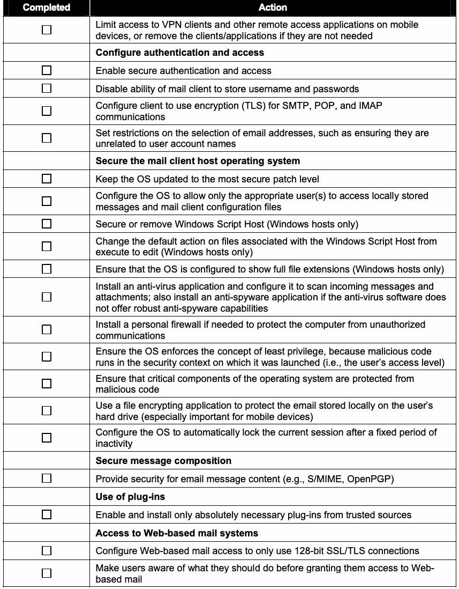
| 完了 | 対策 |
| モバイル端末上のVPNクライアントおよびその他のリモートアクセスアプリケーションへのアクセスを制限するか、 | |
| 不要なクライアント／アプリケーションを削除する | |
| 認証とアクセスを設定する | |
| 安全な認証とアクセスを有効にする | |
| メールクライアントによるユーザー名とパスワードの保存を無効にする | |
| SMTP、POP、IMAP通信にTLS暗号化を使用するようクライアントを構成する | |
| 通信 | |
| 電子メールアドレスの選択に制限を設ける。たとえば、電子メールアドレスがユーザーアカウント名と | |
| 関連しないようにする | |
| メールクライアントホストのオペレーティングシステムを保護する | |
| OSを最も安全なパッチレベルに更新した状態に保つ | |
| ローカルに保存されたメッセージおよびメールクライアントの設定ファイルにアクセスできるユーザーを適切な者のみにするよう | |
| OSを構成する | |
| Windows Script Host（Windowsホストのみ）を保護するか、削除する | |
| Windows Script Hostに関連するファイルの既定の動作を「実行」から | |
| 「編集」に変更する（Windowsホストのみ） | |
| OSでファイルの拡張子をすべて表示するよう構成する（Windowsホストのみ） | |
| ウイルス対策アプリケーションをインストールし、受信メッセージおよび | |
| 添付ファイルをスキャンするよう構成する。ウイルス対策ソフトウェアに十分なスパイウェア対策機能が | |
| ない場合は、スパイウェア対策アプリケーションもインストールする | |
| 必要な場合は、不正な通信からコンピューターを保護するパーソナルファイアウォールをインストールする。 | |
| 通信 | |
| OSで最小権限の原則を適用する。これは、悪意あるコードが | |
| 起動時のセキュリティコンテキスト（すなわちユーザーのアクセスレベル）で実行されるためである。 | |
| OSの重要な構成要素を | |
| 悪意あるコードから確実に保護する。 | |
| ユーザーのハードドライブにローカル保存された電子メールを保護するため、ファイル暗号化アプリケーションを使用する。 | |
| （モバイル端末では特に重要） | |
| 一定時間操作がない場合に現在のOSセッションを自動的にロックするよう、 | |
| OSを設定する。 | |
| メッセージ作成を保護する | |
| 電子メールメッセージの内容を保護する（例：S/MIME、OpenPGP） | |
| プラグインの使用 | |
| 必要不可欠なプラグインのみを、信頼できる提供元から有効化してインストールする | |
| Webベースのメールシステムへのアクセス | |
| Webベースのメールアクセスでは128ビットSSL/TLS接続のみを使用するよう構成する | |
| Webベースのメールへのアクセスを許可する前に、ユーザーが取るべき行動を周知する。Web- | |
| ベースのメール |
原本PDFの抜粋画像
This page has been left blank intentionally.
このページは意図的に空白にしてある。
9. Administering the Mail Server
9. メールサーバーの管理
未レビュー訳After initially deploying a mail server, administrators need to maintain its security continuously. This section provides general recommendations for securely administering mail servers. Vital activities include handling and analyzing log files; performing regular mail server backups; recovering from mail server compromises; testing the mail server’s security regularly; and performing remote administration securely.
メールサーバーを最初に導入した後も、管理者はそのセキュリティを継続的に維持する必要がある。本節では、メールサーバーを安全に管理するための一般的な推奨事項を示す。重要な活動には、ログファイルの取り扱いと分析、メールサーバーの定期的なバックアップ、メールサーバーが侵害された場合の復旧、メールサーバーのセキュリティの定期的なテスト、安全なリモート管理が含まれる。
9.1 Logging
9.1 ロギング
Logging is a cornerstone of a sound security posture. Capturing the correct data in the logs and then monitoring those logs closely is vital.56 Network and system logs are important, especially system logs in the case of S/MIME or OpenPGP (see Section 3) enabled mail servers, where network monitoring is less effective. Mail server software can provide additional log data relevant to mail-specific events.
ロギングは、健全なセキュリティ態勢の基盤である。ログに適切なデータを記録し、ログを綿密に監視することが不可欠である。56 ネットワークログとシステムログは重要であり、特にS/MIMEまたはOpenPGP（第3節を参照）を有効にしたメールサーバーでは、ネットワーク監視の効果が低いため、システムログが重要となる。メールサーバーソフトウェアからは、メール固有のイベントに関する追加のログデータを取得できる。
未レビュー訳Reviewing logs is mundane and reactive, and many mail server administrators devote their time to performing duties that they may consider more important or urgent. However, log files are often the only record of suspicious behavior. Enabling the mechanisms to log information allows the logs to be used to detect failed and successful intrusion attempts and to initiate alert notifications when further investigation is needed. Procedures and tools need to be in place to process and analyze the log files and to review alert notifications.
ログの確認は単調で事後対応的な作業であり、多くのメールサーバー管理者は、より重要または緊急だと考える業務に時間を割いている。しかし、ログファイルは疑わしい行動を記録した唯一の記録であることが多い。情報をログに記録する仕組みを有効にすれば、侵入の失敗と成功を検出し、さらなる調査が必要な場合にアラート通知を開始するためにログを利用できる。ログファイルを処理・分析し、アラート通知を確認するための手順とツールを整備する必要がある。
Mail server logs provide:
メールサーバーのログには、次の情報が含まれる。
(cid:31) Alerts to suspicious activities that require further investigation
・さらなる調査が必要な疑わしい活動に関するアラート
未レビュー訳(cid:31) Tracking of an attacker’s activities
・攻撃者の活動の追跡
未レビュー訳(cid:31) Assistance in the recovery of the system
・システムの復旧を支援する情報
未レビュー訳(cid:31) Assistance in post-event investigation
・事後調査を支援する情報
未レビュー訳(cid:31) Required information for legal proceedings.
・法的手続に必要な情報
未レビュー訳The selection and implementation of specific mail server software determine which set of detailed instructions presented below the mail administrator should follow to establish logging configurations. Some of the guidance contained in the steps below may not be fully applicable to all manufacturers’ mail server software products.
採用するメールサーバーソフトウェアの選択と実装によって、メール管理者がロギング設定を確立するために従うべき、以下に示す詳細な手順が決まる。以下の手順に含まれる指針の一部は、すべての製造元のメールサーバーソフトウェア製品にそのまま適用できるとは限らない。
9.1.1 Recommended Generic Logging Configuration
9.1.1 推奨される一般的なロギング設定
Although the logging capabilities of a mail server vary for each product, the following generic configuration is recommended. Set logging on the mail server to the standard level used within the organization. Once the overall logging detail level is set, ensure the following events are logged (if supported by the mail server software):
メールサーバーのロギング機能は製品ごとに異なるが、次の一般的な設定を推奨する。メールサーバーのロギングレベルを、組織内で標準的に使用しているレベルに設定する。全体のログ詳細レベルを設定したら、（メールサーバーソフトウェアが対応している場合）次のイベントが記録されることを確認する。
(cid:31) Local host related logging
・ローカルホスト関連のロギング
未レビュー訳– IP stack setup errors
– IPスタックのセットアップエラー
未レビュー訳– Resolver configuration problems (e.g., DNS, NIS)
– リゾルバーの構成上の問題（例：DNS、NIS）
未レビュー訳– Mail server configuration errors (e.g., mismatch with DNS: local configuration error, out of date alias database)
– メールサーバーの構成エラー（例：DNSとの不整合、ローカル構成エラー、エイリアスデータベースが古い）
未レビュー訳– Lack of system resources (disk space, memory, CPU)
– システムリソースの不足（ディスク容量、メモリ、CPU）
未レビュー訳– Alias database rebuilds
– エイリアスデータベースの再構築
未レビュー訳(cid:31) Connection-related logging
・接続関連のロギング
未レビュー訳– Failed logins, and also successful logins if adequate space is available
– ログインの失敗。十分な容量がある場合は、成功したログインも記録する。
未レビュー訳– Security problems (e.g., spamming)
– セキュリティ上の問題（例：スパム送信）
未レビュー訳– Lost communications (network problems)
– 通信の途絶（ネットワークの問題）
未レビュー訳– Protocol failures
– プロトコルの失敗
未レビュー訳– Connection timeouts
– 接続のタイムアウト
未レビュー訳– Connection rejections
– 接続の拒否
未レビュー訳– Use of VRFY and EXPN commands
– VRFYおよびEXPNコマンドの使用
未レビュー訳(cid:31) Message-related logging
・メッセージ関連のロギング
未レビュー訳– Send on behalf of
– 「代理送信（Send on behalf of）」の使用
未レビュー訳– Send as
– 「差出人として送信（Send as）」の使用
未レビュー訳– Malformed addresses
– 不正な形式のアドレス
未レビュー訳– Message collection statistics
– メッセージ収集に関する統計
未レビュー訳– Creation of error messages
– エラーメッセージの生成
未レビュー訳– Delivery failures (permanent errors)
– 配信の失敗（恒久的なエラー）
未レビュー訳– Messages being deferred (transient errors).
– メッセージの保留（過渡的なエラー）
未レビュー訳Ensuring that sufficient log capacity is available is a concern, since logs often take considerably more space than administrators initially estimate, especially when logging is set to a highly detailed level. Administrators should closely monitor the size of the log files when they implement different logging settings to ensure that the log files do not fill up the allocated storage. Due to the size of the log files, removing and archiving the logs more frequently or reducing the logging level of detail may be necessary.
ログに十分な容量を割り当てることも課題となる。特に詳細なロギングを有効にすると、ログは管理者が当初見積もったより大幅に多くの容量を消費することが多い。管理者は異なるロギング設定を実装する際、ログファイルのサイズを注意深く監視し、割り当てたストレージがログで使い切られないようにすべきである。ログファイルのサイズが大きくなるため、ログの削除やアーカイブの頻度を高めるか、ロギングの詳細レベルを下げる必要がある場合がある。
Some mail server programs provide a capability to enforce or disable the checking of specified access controls during program startup. This level of control may be helpful, for example, to avoid inadvertent alteration of log files because of errors in file access administration. Mail server administrators should determine the circumstances under which they may wish to enable such checks (assuming the mail server software supports this feature).
一部のメールサーバープログラムには、プログラム起動時に指定されたアクセス制御の確認を強制または無効化する機能がある。このレベルの制御は、たとえばファイルアクセス管理の誤りによってログファイルが意図せず変更されるのを防ぐうえで役立つ場合がある。メールサーバー管理者は、（メールサーバーソフトウェアがこの機能をサポートしている場合）どのような状況でこのような確認を有効にするか判断する必要がある。
9.1.2 Log File Review and Retention
9.1.2 ログファイルの確認と保持
Reviewing log files is a tedious and time-consuming task which informs administrators of events that have already occurred. Accordingly, they are often useful for corroborating other evidence, such as a CPU utilization spike or anomalous network traffic reported by an IPS. When a log is used to corroborate other evidence, a focused review is in order. For example, if an IPS reported an inbound connection to the mail server at 8:17 a.m. that attempted to use the VRFY command, then a review of the logs generated just before 8:17 a.m. is appropriate. Mail server logs should also be reviewed for indications of attacks or spamming. The frequency of the reviews depends on the following factors:
ログファイルの確認は、すでに発生したイベントを管理者に知らせる、面倒で時間のかかる作業である。そのため、CPU使用率の急上昇やIPSが報告した異常なネットワークトラフィックなど、他の証拠を裏付けるために役立つことが多い。ログを他の証拠の裏付けに使う場合は、対象を絞って確認する。たとえば、IPSが午前8時17分にVRFYコマンドを使おうとするメールサーバーへの着信接続を報告した場合、午前8時17分の直前に生成されたログを確認するのが適切である。メールサーバーのログは、攻撃やスパム送信の兆候についても確認すべきである。確認頻度は、次の要因によって決まる。
(cid:31) Amount of traffic the server receives
・サーバーが受信するトラフィック量
未レビュー訳(cid:31) General threat level (certain sites receive many more attacks than other sites and thus should review their logs more frequently)
・全般的な脅威レベル（サイトによっては他より多くの攻撃を受けるため、ログをより頻繁に確認する必要がある）
未レビュー訳(cid:31) Specific threats (at certain times specific threats arise that may require more frequent log file analysis)
・個別の脅威（特定の時期に特定の脅威が発生し、より頻繁なログ分析が必要となる場合がある）
未レビュー訳(cid:31) Vulnerability of the mail server
・メールサーバーの脆弱性
未レビュー訳(cid:31) Value of data and services provided by the mail server.
・メールサーバーが提供するデータおよびサービスの価値
未レビュー訳Reviews should take place regularly (e.g., daily) and when a suspicious activity has been noted or a threat warning has been issued. Obviously, the task could quickly become burdensome to a mail administrator. To reduce this burden, automated log analysis tools have been developed (see Section 9.1.3).
ログの確認は定期的（例：毎日）に行うほか、疑わしい活動が検出された場合や脅威警告が発令された場合にも行うべきである。明らかに、この作業はメール管理者にとってすぐに大きな負担となり得る。この負担を軽減するため、自動ログ分析ツールが開発されている（第9.1.3節を参照）。
In addition, a long-term and more in-depth analysis of the logs is needed. Because a typical mail server attack can involve hundreds of unique requests, an attacker may attempt to disguise a mail attack by increasing the interval between requests. In this case, reviewing a single day’s or week’s logs may not show recognizable trends. However, when trends are analyzed over a week, month, or quarter, multiple attacks from the same host or subnet can be more easily recognized.
さらに、長期間にわたる、より詳細なログ分析も必要である。典型的なメールサーバーへの攻撃では数百件の一意な要求が発生する場合があるため、攻撃者は要求間隔を長くして攻撃を隠そうとすることがある。この場合、1日分または1週間分のログを確認するだけでは、識別可能な傾向が見つからないことがある。しかし、1週間、1か月、または1四半期にわたって傾向を分析すれば、同じホストまたはサブネットからの複数の攻撃をより容易に認識できる。
Log files should be protected to ensure that if an attacker does compromise a mail server, the log files cannot be altered to cover the attack. Although encryption can be useful in protecting log files, the best solution is to store log files on a host separate from the mail server. This is often called a centralized logging server. Centralized logging is often performed using syslog, which is a standard logging protocol.57 Alternately, some organizations use security information and event management (SIEM) software that uses centralized servers to perform log analysis, database servers to store logs, and agents installed on each host to parse particular types of logs, such as mail server logs, and transfer their data to the centralized servers.58
攻撃者がメールサーバーへの侵入に成功した場合に攻撃の隠蔽目的でログファイルを改ざんできないよう、ログファイルを保護する必要がある。暗号化はログファイルの保護に役立つが、最善の解決策はメールサーバーとは別のホストにログファイルを保存することである。これは一般に集中ロギングサーバーと呼ばれる。集中ロギングには、標準的なロギングプロトコルであるsyslogがよく使われる。57 また、集中サーバーでログ分析を行い、データベースサーバーにログを保存し、各ホストにインストールしたエージェントでメールサーバーログなど特定種類のログを解析して集中サーバーに転送するセキュリティ情報・イベント管理（SIEM）ソフトウェアを使う組織もある。58
未レビュー訳Log files should be backed up and archived regularly. Archiving log files for a period of time is important for several reasons, including supporting certain legal actions and troubleshooting problems with the mail server. The retention period for archived log files depends on a number of factors, including:
ログファイルは定期的にバックアップし、アーカイブする必要がある。ログファイルを一定期間アーカイブすることは、特定の法的措置への対応やメールサーバーの問題のトラブルシューティングなど、さまざまな理由から重要である。アーカイブしたログファイルの保持期間は、次のような複数の要因によって決まる。
(cid:31) Legal requirements
・法的要件
未レビュー訳(cid:31) Organizational requirements
・組織の要件
未レビュー訳(cid:31) Size of logs (which is directly related to the traffic of the site and the number of details logged)
・ログのサイズ（サイトのトラフィック量および記録する詳細の数に直接関係する）
未レビュー訳(cid:31) Value of mail server data and services
・メールサーバーのデータおよびサービスの価値
未レビュー訳(cid:31) Threat level.
・脅威レベル
未レビュー訳9.1.3 Automated Log File Analysis Tools
9.1.3 自動ログファイル分析ツール
Most mail servers receive significant amounts of traffic, and the log files quickly become voluminous. Automated log analysis tools should be installed to ease the burden on the mail server administrator. These tools analyze the entries in the mail server log files and identify suspicious and unusual activity. As mentioned in Section 9.1.2, some organizations use SIEM software for centralized logging, which can also perform automated log file analysis.
ほとんどのメールサーバーは大量のトラフィックを受信し、ログファイルはすぐに膨大になる。メールサーバー管理者の負担を軽減するため、自動ログ分析ツールをインストールすべきである。これらのツールはメールサーバーログの項目を分析し、疑わしい活動や異常な活動を特定する。第9.1.2節で述べたように、一部の組織では集中ロギングにSIEMソフトウェアを使用しており、SIEMは自動ログファイル分析も実行できる。
Many commercial and public domain tools are available to support regular analysis. The automated log analyzer should forward any suspicious events to the responsible mail administrator or security incident response team as soon as possible for follow-up investigation. Some organizations may wish to use two or more log analyzers to reduce the risk of missing an attack or other significant events in the log files. [Kent06]
定期的な分析を支援する商用ツールやパブリックドメインのツールが多数利用できる。自動ログ分析ツールは、疑わしいイベントを、追加調査のため、できるだけ速やかに担当のメール管理者またはセキュリティインシデント対応チームへ転送すべきである。ログファイル内の攻撃やその他の重要なイベントを見落とすリスクを減らすため、2つ以上のログ分析ツールを使用する組織もある。[Kent06]
9.2 Backing Up Mail Servers
9.2 メールサーバーのバックアップ
One of the most important functions of a mail server administrator is to maintain the integrity of the data on the mail server. This is important because mail servers are often one of the most exposed and vital servers on an organization’s network. The mail administrator needs to perform backups of the mail server on a regular basis for several reasons. For example, a mail server could fail as a result of a malicious or unintentional act or a hardware or software failure. In addition, Federal agencies and many other organizations are governed by regulations on the backup and archiving of mail server data. Mail server data should also be backed up on a regular basis for legal and financial reasons.
メールサーバー管理者の最も重要な役割の一つは、メールサーバー上のデータの完全性を維持することである。メールサーバーは、組織のネットワーク上で最も外部に露出し、かつ重要なサーバーの一つであることが多いため、これは重要である。メール管理者は、複数の理由からメールサーバーを定期的にバックアップすべきである。たとえば、悪意ある行為や意図しない操作、ハードウェアまたはソフトウェアの障害によってメールサーバーが故障する可能性がある。また、連邦機関やその他多くの組織には、メールサーバーデータのバックアップとアーカイブに関する規制が適用される。法的および財務上の理由からも、メールサーバーデータを定期的にバックアップすべきである。
All organizations need to create a mail server backup policy. Three main factors influence the contents of this policy:
すべての組織はメールサーバーのバックアップポリシーを策定する必要がある。このポリシーの内容には、主に次の3つの要因が影響する。
(cid:31) Legal requirements
・法的要件
未レビュー訳– Applicable laws and regulations (Federal, state, and international)
– 適用される法律および規制（連邦、州、国際）
未レビュー訳– Litigation requirements
– 訴訟上の要件
未レビュー訳(cid:31) Mission requirements
・業務上の要件
未レビュー訳– Contractual
– 契約上の要件
未レビュー訳– Accepted practices
– 受け入れられている慣行
未レビュー訳– Criticality of data to organization
– 組織にとってのデータの重要性
未レビュー訳(cid:31) Organizational guidelines and policies.
・組織のガイドラインおよびポリシー
未レビュー訳Although each organization’s mail server backup policy will be different to reflect its particular environment, it should address the following issues:
各組織のメールサーバーバックアップポリシーは、それぞれの環境を反映して異なるが、次の事項を扱う必要がある。
(cid:31) The purpose of the mail server backup policy
・メールサーバーバックアップポリシーの目的
未レビュー訳(cid:31) The parties affected by the mail server backup policy
・メールサーバーバックアップポリシーの適用対象者
未レビュー訳(cid:31) The mail servers covered by the backup policy
・バックアップポリシーの対象となるメールサーバー
未レビュー訳(cid:31) The definitions of key terms, especially legal and technical
・主要用語、特に法律用語および技術用語の定義
未レビュー訳(cid:31) The detailed requirements from the legal, business, and organization’s perspective
・法律、業務、組織の観点から定める詳細な要件
未レビュー訳(cid:31) The required frequency of backups
・必要なバックアップ頻度
未レビュー訳(cid:31) The procedures for ensuring that data is properly retained and protected
・データが適切に保持され、保護されることを確保する手順
未レビュー訳(cid:31) The procedures for ensuring that data is properly destroyed or archived when no longer required
・不要になったデータを適切に破棄またはアーカイブする手順
未レビュー訳(cid:31) The procedures for preserving information for Freedom of Information Act (FOIA) requests, legal investigations, and other such requests
・情報公開法（FOIA）に基づく請求、法的調査、その他同様の請求に備えて情報を保全する手順
未レビュー訳(cid:31) The responsibilities of those involved in data retention, protection, and destruction activities
・データの保持、保護、破棄に関わる担当者の責任
未レビュー訳(cid:31) The retention period for each type of information logged59
・記録する情報の種類ごとの保持期間59
未レビュー訳(cid:31) The specific duties of the central/organizational data backup team, if one exists.
・中央または組織全体のデータバックアップチームがある場合、その具体的な任務
未レビュー訳Three primary types of backups exist: full, incremental, and differential. Full backups include the operating system, applications, and data stored on the mail server (i.e., an image of every piece of data stored on the mail server hard drives). The advantage of a full backup is that it is easy to restore the entire mail server back to the state (e.g., configuration, patch level, data) it was in when the backup was performed. The disadvantage of full backups is that they take considerable time and resources to perform. Incremental backups reduce the impact by backing up only data that has changed since the previous backup (either full or incremental).
バックアップには、主にフル、増分、差分の3種類がある。フルバックアップには、メールサーバーに保存されたオペレーティングシステム、アプリケーション、データが含まれる（すなわち、メールサーバーのハードドライブに保存されたすべてのデータのイメージである）。フルバックアップの利点は、バックアップ実施時点の状態（例：構成、パッチレベル、データ）にメールサーバー全体を容易に復元できることである。欠点は、実行に相当な時間とリソースを要することである。増分バックアップでは、前回のバックアップ（フルまたは増分）以降に変更されたデータのみをバックアップするため、この負担を軽減できる。
Differential backups reduce the number of backup sets that must be accessed to restore a configuration by backing up all changed data since the last full backup. However, as time lapses from the last full backup, each differential backup becomes increasingly larger, taking more processing time and storage than an incremental backup would. Generally, full backups are performed less frequently (weekly to monthly or when a significant change occurs), and incremental or differential backups are performed more frequently (daily to weekly). Several factors determine the frequency of backups:
差分バックアップは、最後のフルバックアップ以降に変更されたすべてのデータをバックアップすることで、構成を復元する際に必要なバックアップセットの数を減らす。ただし、最後のフルバックアップから時間が経過するにつれて差分バックアップのサイズは大きくなり、増分バックアップより多くの処理時間とストレージを必要とする。一般に、フルバックアップは頻度を低くして（週次から月次、または大きな変更があった時点で）実行し、増分または差分バックアップはより頻繁に（毎日から毎週）実行する。バックアップ頻度は、次の複数の要因によって決まる。
(cid:31) Volatility of information on and configuring of the mail server
・メールサーバー上の情報や構成の変化の度合い
未レビュー訳(cid:31) Amount of data to be backed up
・バックアップ対象データの量
未レビュー訳(cid:31) Backup device and media available
・利用可能なバックアップ装置およびメディア
未レビュー訳(cid:31) Time available for dumping backup data
・バックアップデータを書き出すために利用できる時間
未レビュー訳(cid:31) Criticality of data
・データの重要性
未レビュー訳(cid:31) Threat level faced by the mail server
・メールサーバーが直面する脅威レベル
未レビュー訳(cid:31) Effort required to data reconstruction without data backup
・データバックアップがない場合にデータを再構築するために必要な労力
未レビュー訳(cid:31) Other data backup or redundancy features of the mail server (e.g., Redundant Array of Inexpensive Disks [RAID]).
・メールサーバーのその他のデータバックアップ機能または冗長化機能（例：Redundant Array of Inexpensive Disks［RAID］）
未レビュー訳When archiving or backing up email data, organizations should generally conform to the following guidelines:
電子メールデータをアーカイブまたはバックアップする際、組織は一般に次のガイドラインに従う必要がある。
(cid:31) Employ write-once, read-many media (to prevent the alteration or accidental erasure of archived information)
・追記型のWORM（Write Once, Read Many）メディアを使用する（アーカイブ情報の改変や誤消去を防止するため）
未レビュー訳(cid:31) Contain a verification capability to ensure that data is being correctly backed up or archived
・データが正しくバックアップまたはアーカイブされていることを確認する機能を備える
未レビュー訳(cid:31) Include the capability to serialize and time-date the information stored
・保存情報を連番化し、日時を記録する機能を含める
未レビュー訳(cid:31) Provide for easy retrieval of indexes and records preserved on the backup media
・バックアップメディアに保存された索引や記録を容易に取得できるようにする
未レビュー訳(cid:31) Maintain at least two copies in two geographically distinct locations
・地理的に離れた少なくとも2か所にコピーを保管する
未レビュー訳(cid:31) Accurately organize and index all information maintained on both original and duplicate storage media.
・原本と複製の両方の保存メディアに保持するすべての情報を、正確に整理して索引化する
未レビュー訳9.3 Recovering from a Security Compromise
9.3 セキュリティ侵害からの復旧
Most organizations eventually face a successful compromise of one or more hosts on their network. The first step in recovering from a compromise is to create and document the required policies and procedures for responding to successful intrusions before an intrusion.60 The response procedures should outline the actions that are required to respond to a successful compromise of the mail server and the appropriate sequence of these actions (sequence can be critically important). Most organizations already have a dedicated incident response team in place which should be contacted immediately when there is suspicion or confirmation of a compromise. In addition, the organization may wish to ensure that some of its staff are knowledgeable in the fields of computer and network forensics.61
ほとんどの組織は、最終的にはネットワーク上の1台以上のホストへの侵入に成功される。侵害から復旧するための最初の手順は、侵入が発生する前に、侵入成功への対応に必要なポリシーと手順を作成し、文書化することである。60 対応手順には、メールサーバーへの侵入が成功した場合に必要な措置と、その適切な実施順序を定める（順序が極めて重要な場合がある）。ほとんどの組織には専任のインシデント対応チームがあり、侵害の疑いまたは確認があれば直ちに連絡する必要がある。また、組織は、職員の一部がコンピューターおよびネットワークフォレンジックの知識を持つようにすることも検討できる。61
未レビュー訳A mail server administrator should follow the organization’s policies and procedures for incident handling, and the incident response team should be contacted for guidance before taking any action after a suspected or confirmed security compromise. Examples of steps commonly performed after discovering a successful compromise are as follows:
メールサーバー管理者は、インシデント対応に関する組織のポリシーと手順に従うべきである。セキュリティ侵害が疑われる、または確認された後に何らかの措置を講じる前に、インシデント対応チームに連絡して指示を仰ぐべきである。侵入成功の発見後に一般的に実施される措置の例を次に示す。
(cid:31) Report the incident to the organization’s computer incident response capability
・インシデントを組織のコンピューターインシデント対応機能に報告する
未レビュー訳(cid:31) Isolate the compromised systems or take other steps to contain the attack so that additional information can be collected62
・侵害されたシステムを隔離するか、追加情報を収集できるよう他の措置を講じて攻撃を封じ込める62
未レビュー訳(cid:31) Consult, as appropriate, with management, legal counsel, and law enforcement expeditiously
・必要に応じて、管理部門、法律顧問、法執行機関に速やかに相談する
未レビュー訳(cid:31) Investigate similar63 hosts to determine if the attacker also has compromised other systems
・類似する63ホストを調査し、攻撃者が他のシステムも侵害していないか確認する
未レビュー訳(cid:31) Analyze the intrusion, including:
・侵入を分析する。分析項目には次が含まれる。
未レビュー訳– Capture the current state of the server starting with the most ephemeral data first (e.g., current network connections, memory dump, files time stamps, logged in users, etc.)
– 揮発性の高いデータから順に、サーバーの現状を記録する（例：現在のネットワーク接続、メモリダンプ、ファイルのタイムスタンプ、ログイン中のユーザーなど）
未レビュー訳– Modifications made to the system’s software and configuration
– システムのソフトウェアおよび構成に加えられた変更
未レビュー訳– Modifications made to the data
– データに加えられた変更
未レビュー訳– Tools or data left behind by attacker
– 攻撃者が残したツールまたはデータ
未レビュー訳– System logs, intrusion detection, and firewall log files
– システムログ、侵入検知ログ、ファイアウォールログ
未レビュー訳(cid:31) Restore the system
・システムを復元する
未レビュー訳– One of the following two options:
– 次の2つの選択肢のいずれかを実施する。
未レビュー訳– Install clean version of operating system
– クリーンなオペレーティングシステムをインストールする
未レビュー訳– Restore from backups (this option can be more risky, as the backups may have been made after the compromise, and restoring from a compromised backup may still allow the attacker access to the system)
– バックアップから復元する（侵害後にバックアップが作成されていた可能性があり、侵害済みのバックアップから復元すると攻撃者が引き続きシステムにアクセスできる場合があるため、この方法はより危険となり得る）
未レビュー訳– Disable unnecessary services
– 不要なサービスを無効にする
未レビュー訳– Apply all patches
– すべてのパッチを適用する
未レビュー訳– Change all passwords (even on uncompromised hosts as required)
– すべてのパスワードを変更する（必要に応じて、侵害されていないホストのパスワードも変更する）
未レビュー訳– Reconfigure network security elements (firewall, router, IPS) to provide additional protection and notification
– 追加の保護と通知を提供するよう、ネットワークセキュリティ要素（ファイアウォール、ルーター、IPS）を再構成する
未レビュー訳(cid:31) Test system to ensure security
・システムのセキュリティを確認するためにテストする
未レビュー訳(cid:31) Reconnect system to network
・システムをネットワークに再接続する
未レビュー訳(cid:31) Monitor system and network for signs that the attacker is attempting to access the system or network again
・攻撃者がシステムまたはネットワークへの再アクセスを試みていないか、システムとネットワークを監視する
未レビュー訳(cid:31) Document lessons learned.
・教訓を文書化する
未レビュー訳System administrators should decide whether to reinstall the operating system of a compromised system or restore it from a backup based on organization policy and procedures. Factors that are often considered include the following:
システム管理者は、侵害されたシステムのオペレーティングシステムを再インストールするか、バックアップから復元するかを、組織のポリシーおよび手順に基づいて決定する必要がある。通常、次の要因が考慮される。
(cid:31) Level of access that the attacker gained (e.g., root, user, guest, system)
・攻撃者が獲得したアクセスレベル（例：root、ユーザー、ゲスト、システム）
未レビュー訳(cid:31) Type of attacker (internal or external)
・攻撃者の種類（内部または外部）
未レビュー訳(cid:31) Purpose of the compromise (e.g., email spoofing, illegal software repository, platform for other attacks)
・侵害の目的（例：電子メールのなりすまし、違法ソフトウェアのリポジトリ、他の攻撃の踏み台）
未レビュー訳(cid:31) Method used for the system compromise
・システム侵害に使われた手法
未レビュー訳(cid:31) Actions of the attacker during and after the compromise (e.g., log files, intrusion detection reports)
・侵害中および侵害後の攻撃者の行動（例：ログファイル、侵入検知レポート）
未レビュー訳(cid:31) Duration of the compromise
・侵害が続いた期間
未レビュー訳(cid:31) Extent of the compromise on the network (e.g., the number of hosts compromised)
・ネットワーク上での侵害の範囲（例：侵害されたホストの台数）
未レビュー訳(cid:31) Results of consultation with management and legal counsel.
・管理部門および法律顧問との協議結果
未レビュー訳The lower the level of access gained by the attacker and the more the mail server administrator understands about the attacker’s actions, the less risk there is in restoring from a backup and patching the vulnerability. For incidents in which there is less known about the attacker’s actions and/or in which the attacker gains high-level access, it is recommended that the operating system and applications be reinstalled from the manufacturer’s original distribution media and that the mail server data be restored from a known good backup.
攻撃者が獲得したアクセスレベルが低く、攻撃者の行動についてメールサーバー管理者が把握している情報が多いほど、バックアップからの復元と脆弱性へのパッチ適用に伴うリスクは低くなる。攻撃者の行動について分かっていることが少ない場合や、攻撃者が高いレベルのアクセス権を得た場合は、製造元のオリジナル配布メディアからオペレーティングシステムとアプリケーションを再インストールし、信頼できるバックアップからメールサーバーデータを復元することが推奨される。
If legal action is pursued, system administrators need to be aware of the guidelines for handling a host after a compromise. Consult legal counsel and relevant law enforcement authorities as appropriate.
法的措置を追求する場合、システム管理者は侵害後のホストの取り扱いに関するガイドラインを把握しておく必要がある。必要に応じて法律顧問および関係する法執行機関に相談する。
9.4 Security Testing Mail Servers
9.4 メールサーバーのセキュリティテスト
Periodic security testing of public mail servers is critical.64 Without periodic testing, there is no assurance that current protective measures are working or that the security patch just applied by the mail server administrator is functioning as advertised. Although a variety of security testing techniques exists, vulnerability scanning is the most common. Vulnerability scanning assists a mail server administrator in identifying vulnerabilities and verifying whether the existing security measures are effective. Penetration testing is also used, but less frequently and usually only as part of an overall penetration test of the organization’s network.65
公開メールサーバーのセキュリティを定期的にテストすることは極めて重要である。64 定期的なテストを行わなければ、現在の保護対策が機能していることや、メールサーバー管理者が適用したセキュリティパッチが想定どおりに機能していることを保証できない。さまざまなセキュリティテスト手法があるが、最も一般的なのは脆弱性スキャンである。脆弱性スキャンは、メールサーバー管理者が脆弱性を特定し、既存のセキュリティ対策が有効かどうかを確認するのに役立つ。侵入テストも使用されるが、その頻度は低く、通常は組織のネットワーク全体に対する侵入テストの一部として実施される。65
未レビュー訳9.4.1 Vulnerability Scanning
9.4.1 脆弱性スキャン
Vulnerability scanners are automated tools that are used to identify vulnerabilities and misconfiguration of hosts. Many vulnerability scanners also provide information about mitigating discovered vulnerabilities.
脆弱性スキャナーは、ホストの脆弱性や構成ミスを特定するための自動化ツールである。多くの脆弱性スキャナーは、発見した脆弱性を軽減する方法についても情報を提供する。
Vulnerability scanners attempt to identify vulnerabilities in the hosts scanned. Vulnerability scanners can help identify out-of-date software versions, missing patches or system upgrades, and validate compliance with or deviations from the organization's security policy. To accomplish this effort, vulnerability scanners identify operating systems and major software applications running on hosts and match them with known vulnerabilities. Vulnerability scanners employ large databases of vulnerabilities to identify vulnerabilities associated with commonly used operating systems and applications.
脆弱性スキャナーは、スキャン対象のホストに存在する脆弱性を特定しようとする。古いソフトウェアバージョン、適用されていないパッチやシステムアップグレードを発見し、組織のセキュリティポリシーへの準拠または逸脱を検証できる。これを行うため、脆弱性スキャナーはホスト上で動作するオペレーティングシステムと主要なソフトウェアアプリケーションを特定し、既知の脆弱性と照合する。脆弱性スキャナーは、大規模な脆弱性データベースを使い、一般的なオペレーティングシステムやアプリケーションに関連する脆弱性を特定する。
However, vulnerability scanners have some significant weaknesses. Generally, they identify only surface vulnerabilities and are unable to address the overall risk level of a scanned mail server. Although the scan process itself is highly automated, vulnerability scanners can have a high false positive error rate (reporting vulnerabilities when none exist). This means an individual with expertise in mail server security and administration must interpret the results. Furthermore, vulnerability scanners cannot generally identify vulnerabilities in custom code or applications.
ただし、脆弱性スキャナーには重大な弱点もある。一般に、表面的な脆弱性しか特定できず、スキャン対象のメールサーバー全体のリスクレベルを評価できない。スキャン処理自体は高度に自動化されているものの、脆弱性スキャナーでは誤検知率（存在しない脆弱性を報告する割合）が高い場合がある。そのため、メールサーバーのセキュリティと管理に関する専門知識を持つ人が結果を解釈する必要がある。さらに、脆弱性スキャナーは一般に、独自開発のコードやアプリケーションに含まれる脆弱性を特定できない。
Vulnerability scanners rely on periodic updating of the vulnerability database to recognize the latest vulnerabilities. Before running any scanner, mail server administrators should install the latest updates to its vulnerability database. Some vulnerability scanner databases are updated more regularly than others (the frequency of updates should be a major consideration when choosing a vulnerability scanner).
脆弱性スキャナーは、最新の脆弱性を認識するため、脆弱性データベースの定期的な更新に依存する。スキャナーを実行する前に、メールサーバー管理者は脆弱性データベースに最新の更新を適用すべきである。脆弱性スキャナーのデータベースには、他より定期的に更新されるものがある（スキャナーを選定する際には、更新頻度を主要な検討事項とすべきである）。
Vulnerability scanners are often better at detecting well-known vulnerabilities rather than more esoteric ones because it is impossible for any one scanning product to incorporate all known vulnerabilities in a timely manner. In addition, manufacturers want to keep the speed of their scanners high (more vulnerabilities detected requires more tests, which slows the overall scanning process). Therefore, vulnerability scanners may be of little use to mail server administrators operating less popular mail servers, operating systems, or custom-coded applications.
脆弱性スキャナーは、より難解な脆弱性よりも、よく知られた脆弱性の検出に優れていることが多い。単一のスキャン製品にすべての既知の脆弱性を適時に組み込むことは不可能だからである。また、製造元はスキャナーの速度を高く保とうとする（検出する脆弱性を増やすにはテスト数を増やす必要があり、スキャン全体の速度が低下する）。そのため、利用者の少ないメールサーバー、オペレーティングシステム、独自開発アプリケーションを運用するメールサーバー管理者にとって、脆弱性スキャナーがあまり役立たない場合がある。
Vulnerability scanners provide the following capabilities:
脆弱性スキャナーには、次の機能がある。
(cid:31) Identifying active hosts on the network
・ネットワーク上で稼働しているホストの特定
未レビュー訳(cid:31) Identifying active services (ports) on hosts and which of these are vulnerable
・ホスト上で稼働しているサービス（ポート）と、そのうち脆弱なものの特定
未レビュー訳(cid:31) Identifying applications and banner grabbing
・アプリケーションの特定およびバナー情報の取得
未レビュー訳(cid:31) Identifying operating systems
・オペレーティングシステムの特定
未レビュー訳(cid:31) Identifying vulnerabilities associated with discovered operating systems and applications
・検出されたオペレーティングシステムおよびアプリケーションに関連する脆弱性の特定
未レビュー訳(cid:31) Testing compliance with host application usage/security policies.
・ホストアプリケーションの使用ポリシーおよびセキュリティポリシーへの準拠状況のテスト
未レビュー訳Organizations should conduct vulnerability scanning to validate that operating systems and mail server applications are up to date on security patches and software versions. Vulnerability scanning is a labor-intensive activity that requires a high degree of human involvement to interpret the results. It may also be disruptive to operations by taking up network bandwidth, slowing network response times and potentially impacting the availability of the scanned server or its applications. However, vulnerability scanning is extremely important for ensuring that vulnerabilities are mitigated as soon as possible, before they are discovered and exploited by adversaries. Vulnerability scanning should be conducted on a weekly to monthly basis. Many organizations also run a vulnerability scan whenever a new vulnerability database is released for the organization’s scanner application. Vulnerability scanning results should be documented and discovered deficiencies corrected.
組織は、オペレーティングシステムとメールサーバーアプリケーションに最新のセキュリティパッチおよびソフトウェアバージョンが適用されていることを確認するため、脆弱性スキャンを実施する必要がある。脆弱性スキャンは労力を要し、結果の解釈に人の高度な関与が必要となる。また、ネットワーク帯域幅を消費し、応答時間を遅くし、スキャン対象サーバーまたはそのアプリケーションの可用性に影響する可能性があるため、運用を妨げることもある。それでも、攻撃者が脆弱性を発見して悪用する前に、可能な限り速やかに脆弱性を軽減するうえで、脆弱性スキャンは極めて重要である。脆弱性スキャンは週次から月次で実施する必要がある。組織のスキャナーアプリケーション用に新しい脆弱性データベースが公開されるたびにスキャンを実行する組織も多い。スキャン結果を文書化し、発見された不備を是正する必要がある。
未レビュー訳Organizations should also consider running more than one vulnerability scanner. As previously discussed, no scanner is able to detect all known vulnerabilities; however, using two scanners generally increases the number of vulnerabilities detected. A common practice is to use one commercial and one freeware scanner. Network- and host-based vulnerability scanners are available for free or for a fee.
組織は複数の脆弱性スキャナーの使用も検討する必要がある。前述のとおり、既知の脆弱性をすべて検出できるスキャナーはないが、2種類のスキャナーを使用すれば、一般に検出できる脆弱性の数が増える。商用スキャナーとフリーウェアのスキャナーを1つずつ使用する方法が一般的である。ネットワークベースとホストベースの脆弱性スキャナーは、無償または有償で入手できる。
9.4.2 Penetration Testing
9.4.2 侵入テスト
“Penetration testing is security testing in which evaluators attempt to circumvent the security features of a system based on their understanding of the system design and implementation” [NISS99]. The purpose of penetration testing is to exercise system protections (particularly human response to attack indications) by using common tools and techniques developed by attackers. This testing is highly recommended for complex or critical systems.
「侵入テストとは、評価者がシステムの設計および実装についての理解に基づき、システムのセキュリティ機能を回避しようとするセキュリティテストである」[NISS99]。侵入テストの目的は、攻撃者が開発した一般的なツールや手法を用いて、システムの保護機能（特に攻撃の兆候に対する人の対応）を試すことである。複雑または重要なシステムでは、このテストを強く推奨する。
未レビュー訳Penetration testing can be an invaluable technique for any organization’s information security program. However, it is a very labor-intensive activity and requires great expertise to minimize the risk to targeted systems. At a minimum, it may slow the organization’s network response time because of network mapping and vulnerability scanning. Furthermore, the possibility exists that systems may be damaged or rendered inoperable in the course of penetration testing. Although this risk is mitigated by the use of experienced penetration testers, it can never be fully eliminated.
侵入テストは、どの組織の情報セキュリティプログラムにとっても非常に価値のある手法となり得る。しかし、非常に労力を要し、対象システムへのリスクを最小限に抑えるには高度な専門知識が必要である。少なくとも、ネットワークマッピングや脆弱性スキャンによって組織のネットワーク応答時間が遅くなる場合がある。さらに、侵入テスト中にシステムが損傷したり、動作不能になったりする可能性もある。経験豊富な侵入テスト担当者を起用すればこのリスクは軽減されるが、完全に排除することはできない。
Penetration testing does offer the following benefits [Wack02b]:
侵入テストには、次の利点がある[Wack02b]。
(cid:31) Tests the network using the same methodologies and tools employed by attackers
・攻撃者が用いるものと同じ手法およびツールを使ってネットワークをテストする
未レビュー訳(cid:31) Verifies whether vulnerabilities exist
・脆弱性の有無を確認する
未レビュー訳(cid:31) Goes beyond surface vulnerabilities and demonstrates how these vulnerabilities can be exploited iteratively to gain greater access
・表面的な脆弱性の検出にとどまらず、それらの脆弱性を段階的に悪用して、より高いアクセス権を得る方法を明らかにする
未レビュー訳(cid:31) Demonstrates that vulnerabilities are not purely theoretical
・脆弱性が単なる理論上の問題ではないことを示す
未レビュー訳(cid:31) Provides the “realism” necessary to address security issues
・セキュリティ上の問題に対処するために必要な「現実性」をもたらす
未レビュー訳(cid:31) Allows for testing of procedures and the susceptibility of the human element to social engineering.
・手順をテストし、ソーシャルエンジニアリングに対する人的要素の脆弱性を検証できる
未レビュー訳9.5 Remotely Administering a Mail Server
9.5 メールサーバーのリモート管理
It is strongly recommended that remote administration of a mail server be allowed only after careful consideration of the risks.66 The most secure configuration is to disallow any remote administration. However, that may not be viable for all organizations. The risk of enabling remote administration varies considerably depending on the location of the mail server on the network (see Section 7.1). For a mail server that is located behind a firewall, remote administration can be implemented relatively securely from the internal network, but not without added risk. Remote administration should generally not be allowed from a host located outside the organization’s network unless performed from an organization-controlled computer through the organization’s remote access solution, such as a virtual private network.
リスクを慎重に検討した後に限ってメールサーバーのリモート管理を許可することを強く推奨する。66 最も安全な構成は、あらゆるリモート管理を禁止することである。ただし、すべての組織でそれが実行可能とは限らない。リモート管理を有効にするリスクは、ネットワーク上でのメールサーバーの設置場所によって大きく異なる（第7.1節を参照）。ファイアウォールの内側にあるメールサーバーであれば、リスクは増えるものの、内部ネットワークから比較的安全にリモート管理を実装できる。組織が管理するコンピューターから組織のリモートアクセス方式（仮想プライベートネットワークなど）を介して実施する場合を除き、組織ネットワーク外のホストからのリモート管理は一般に許可するべきではない。
未レビュー訳If an organization determines that it is necessary to remotely administer a mail server, following these steps should ensure that it is implemented in as secure a manner as possible:
組織がメールサーバーのリモート管理を必要と判断した場合、次の手順に従うことで、可能な限り安全に実装できる。
(cid:31) Use a strong authentication mechanism (e.g., public/private key pair, two factor authentication).
・強固な認証機構を使用する（例：公開鍵／秘密鍵のペア、二要素認証）。
未レビュー訳(cid:31) Restrict which hosts can be used to remotely administer the mail server:
・メールサーバーのリモート管理に使用できるホストを制限する。
未レビュー訳– Restrict by authorized users
– 認可されたユーザーに制限する
未レビュー訳– Restrict by IP address (not hostname); for example, access could be restricted to some or all hosts on the internal network, or hosts using the organization’s enterprise remote access solution
– ホスト名ではなくIPアドレスで制限する。たとえば、内部ネットワーク上の一部またはすべてのホスト、あるいは組織のエンタープライズリモートアクセス方式を使うホストだけにアクセスを許可できる。
未レビュー訳(cid:31) Use secure protocols that can provide encryption for both passwords and data, such as secure shell [SSH] or Secure HTTP [HTTPS], and not less secure protocols (e.g., Telnet, FTP, NFS, HTTP) unless absolutely required and tunneled over an encrypted protocol such SSH, SSL or IPsec.
・パスワードとデータの両方を暗号化できる安全なプロトコル（Secure Shell［SSH］やSecure HTTP［HTTPS］など）を使用し、より安全性の低いプロトコル（Telnet、FTP、NFS、HTTPなど）は、どうしても必要であり、SSH、SSL、IPsecなどの暗号化プロトコルでトンネリングする場合を除き使用しない。
未レビュー訳(cid:31) Enforce the concept of least privilege on remote administration (e.g., attempt to minimize the access rights for the remote administration accounts).
・リモート管理では最小権限の原則を適用する（例：リモート管理アカウントのアクセス権を可能な限り小さくする）。
未レビュー訳(cid:31) Do not allow remote administration from the Internet through the firewall unless accomplished via strong mechanisms such as VPNs.
・VPNなどの強固な機構を介する場合を除き、ファイアウォール経由でインターネットからのリモート管理を許可しない。
未レビュー訳(cid:31) Change any default accounts or passwords from the remote administration utility or application.
・リモート管理ユーティリティまたはアプリケーションの既定のアカウントやパスワードを変更する。
未レビュー訳(cid:31) Do not mount any file shares on the internal network from the mail server or vice versa.
・メールサーバーから内部ネットワーク上のファイル共有をマウントしない。また、その逆も行わない。
未レビュー訳9.6 Checklist for Administering the Mail Server
9.6 メールサーバーを管理するためのチェックリスト
| Completed | Action |
| Logging | |
| Log IP stack setup errors | |
| Log resolver configuration problems (e.g., DNS, NIS) | |
| Log mail server configuration errors (e.g., mismatch with DNS, local | |
| configuration error, out-of-date alias database) | |
| Log lack of system resources (e.g., disk space, memory, CPU) | |
| Log alias database rebuilds | |
| Log logins (failed, and also successful if adequate space is available) | |
| Log security problems (e.g., spamming) | |
| Log lost communications (network problems) | |
| Log protocol failures | |
| Log connection timeouts | |
| Log connection rejections | |
| Log use of VRFY and EXPN commands | |
| Log send on behalf of | |
| Log send as | |
| Log malformed addresses | |
| Log message collection statistics | |
| Log creation of error messages | |
| Log delivery failures (permanent errors) | |
| Log messages being deferred (transient errors) | |
| Store logs on a separate logging server | |
| Backup and archive logs according to organizational requirements | |
| Review logs daily | |
| Review logs weekly (for more long-term trends) | |
| Use automated log file analysis tool(s) | |
| Mail server backups | |
| Create a mail server backup policy | |
| Back up mail server differentially or incrementally on a daily to weekly basis | |
| Back up mail server fully on a weekly to monthly basis |
原本PDFの抜粋画像
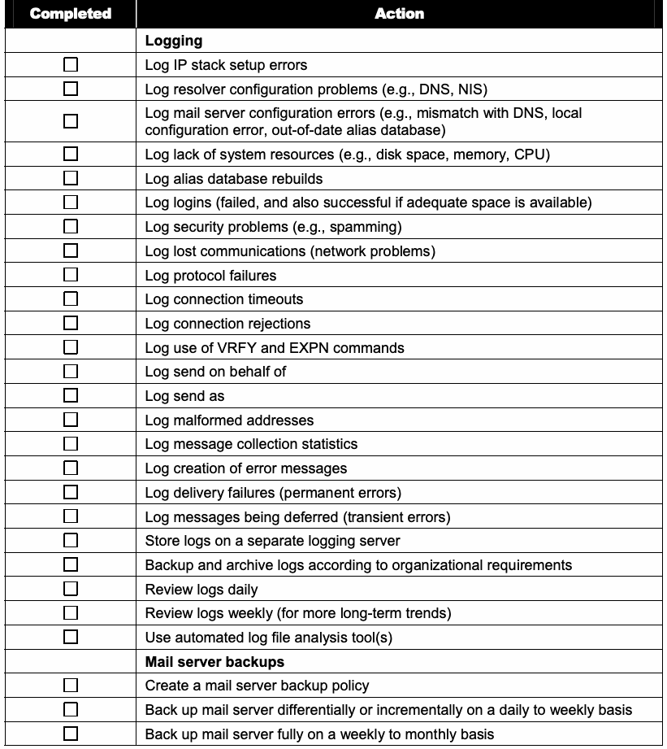
| 完了 | 対策 |
| ロギング | |
| IPスタックのセットアップエラーを記録する | |
| リゾルバーの構成上の問題（例：DNS、NIS）を記録する | |
| メールサーバーの構成エラー（例：DNSとの不整合、ローカル | |
| 構成エラー、古いエイリアスデータベース）を記録する | |
| システムリソースの不足（例：ディスク容量、メモリ、CPU）を記録する | |
| エイリアスデータベースの再構築を記録する | |
| ログインを記録する（失敗したもの。十分な容量がある場合は成功したものも含む） | |
| セキュリティ上の問題（例：スパム送信）を記録する | |
| 通信の途絶（ネットワークの問題）を記録する | |
| プロトコルの失敗を記録する | |
| 接続タイムアウトを記録する | |
| 接続拒否を記録する | |
| VRFYおよびEXPNコマンドの使用を記録する | |
| 「代理送信」の使用を記録する | |
| 「差出人として送信」の使用を記録する | |
| 不正な形式のアドレスを記録する | |
| メッセージ収集に関する統計を記録する | |
| エラーメッセージの生成を記録する | |
| 配信失敗（恒久的なエラー）を記録する | |
| 保留されたメッセージ（過渡的なエラー）を記録する | |
| ログを専用のロギングサーバーに保存する | |
| 組織の要件に従ってログをバックアップし、アーカイブする | |
| ログを毎日確認する | |
| 長期的な傾向を把握するため、ログを毎週確認する | |
| 自動ログファイル分析ツールを使用する | |
| メールサーバーのバックアップ | |
| メールサーバーのバックアップポリシーを作成する | |
| メールサーバーを毎日から毎週の頻度で差分または増分バックアップする | |
| メールサーバーを毎週から毎月の頻度でフルバックアップする |
| Completed | Action |
| Periodically archive backups | |
| Recovering from a compromise | |
| Report incident to organization’s computer incident response capability | |
| Isolate compromised system(s) or take other steps to contain attack so | |
| additional evidence can be collected | |
| Consult, as appropriate, with management, legal counsel, and law | |
| enforcement expeditiously | |
| Investigate similar hosts to determine if the attacker has also compromised | |
| other systems | |
| Analyze the intrusion | |
| Restore the system | |
| Test system to ensure security | |
| Reconnect system to network | |
| Monitor system and network for signs that the attacker is attempting to access | |
| the system or network again | |
| Document lessons learned | |
| Security testing | |
| Periodically conduct vulnerability scans on mail server and supporting network | |
| Update vulnerability scanner before testing | |
| Correct any deficiencies identified by the vulnerability scanner | |
| Conduct penetration testing on the mail server and the supporting network | |
| infrastructure | |
| Correct deficiencies identified by penetration testing | |
| Remote administration | |
| Use a strong authentication mechanism (e.g., public/private key pair, two | |
| factor authentication) | |
| Restrict which hosts can be used to remotely administer the mail server by IP | |
| address or by authorized users | |
| Use secure protocols (e.g., SSH, HTTPS) that can provide encryption for both | |
| passwords and data | |
| Enforce the concept of least privilege on remote administration (e.g., attempt | |
| to minimize the access rights for the remote administration accounts) | |
| Change any default accounts or passwords for the remote administration utility | |
| or application | |
| Do not allow remote administration from the Internet unless mechanisms such | |
| as VPN are used | |
| Do not mount any file shares on the internal network from the mail server and | |
| vice versa |
原本PDFの抜粋画像
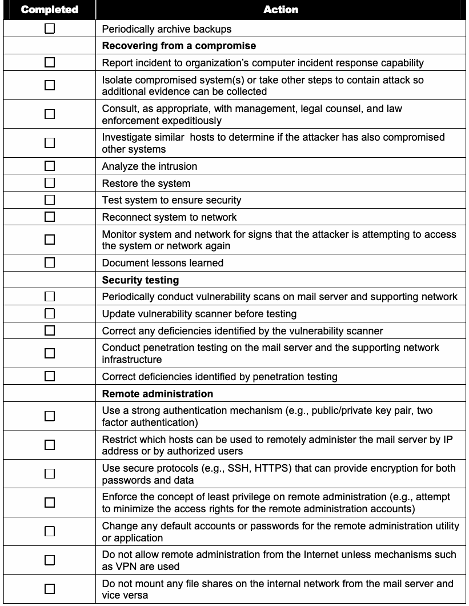
| 完了 | 対策 |
| バックアップを定期的にアーカイブする | |
| 侵害からの復旧 | |
| インシデントを組織のコンピューターインシデント対応機能に報告する | |
| 侵害されたシステムを隔離するか、追加の証拠を収集できるよう他の措置を講じて攻撃を封じ込める | |
| 追加の証拠を収集できるようにする | |
| 管理部門、法律顧問、および法執行機関に必要に応じて速やかに相談する | |
| 速やかに相談する | |
| 類似ホストを調査し、攻撃者が他のシステムも侵害していないか確認する | |
| 他のシステム | |
| 侵入を分析する | |
| システムを復元する | |
| システムのセキュリティをテストする | |
| システムをネットワークに再接続する | |
| 攻撃者がシステムまたはネットワークへの再アクセスを試みていないか、システムとネットワークを監視する | |
| 再アクセスを試みていないか監視する | |
| 教訓を文書化する | |
| セキュリティテスト | |
| メールサーバーとそれを支援するネットワークに対し、脆弱性スキャンを定期的に実施する | |
| テスト前に脆弱性スキャナーを更新する | |
| 脆弱性スキャナーが特定した不備を是正する | |
| メールサーバーおよび支援ネットワーク | |
| インフラストラクチャに対して侵入テストを実施する | |
| 侵入テストが特定した不備を是正する | |
| リモート管理 | |
| 強固な認証機構を使用する（例：公開鍵／秘密鍵のペア、二 | |
| 要素認証） | |
| メールサーバーをリモート管理できるホストを、IPアドレスまたは認可されたユーザーによって制限する | |
| IPアドレスまたは認可されたユーザーによって制限する | |
| パスワードとデータを暗号化できる安全なプロトコル（例：SSH、HTTPS）を使用する | |
| パスワードとデータの両方を暗号化する | |
| リモート管理で最小権限の原則を適用する（例：リモート管理アカウントのアクセス権を | |
| 可能な限り小さくする） | |
| リモート管理ユーティリティまたはアプリケーションの既定アカウントやパスワードを変更する | |
| またはアプリケーション | |
| VPNなどの機構を使用しない限り、インターネットからのリモート管理を許可しない | |
| VPNなどを使用する | |
| メールサーバーから内部ネットワーク上のファイル共有をマウントしない。また、その | |
| 逆も行わない |
Appendix A—Glossary
付録A — 用語集
未レビュー訳Address Resolution Protocol (ARP) – A protocol used to obtain a node’s physical address. A client station broadcasts an ARP request onto the network with the Internet Protocol (IP) address of the target node it wishes to communicate with, and the node with that address responds by sending back its physical address so that packets can be transmitted to it.
Address Resolution Protocol（ARP）— ノードの物理アドレスを取得するために使われるプロトコル。クライアント端末は、通信相手となる対象ノードのInternet Protocol（IP）アドレスを含むARP要求をネットワーク上にブロードキャストする。そのアドレスを持つノードは物理アドレスを送り返し、パケットをそのノードに送信できるようにする。
Body – The section of an email message that contains the actual content of the message.
本文 — 電子メールメッセージのうち、メッセージの実際の内容を含む部分。
Demilitarized Zone (DMZ) – A host or network segment inserted as a “neutral zone” between an organization’s private network and the Internet.
非武装地帯（DMZ）— 組織のプライベートネットワークとインターネットの間に「中立地帯」として配置されるホストまたはネットワークセグメント。
Header – The section of an email message that contains vital information about the message, including origination date, sender, recipient(s), delivery path, subject, and format information. The header is generally left in clear text even when the body of the email message is encrypted.
ヘッダー — 電子メールメッセージに関する重要な情報を含む部分。送信日時、送信者、受信者、配送経路、件名、形式情報などが含まれる。電子メールメッセージの本文が暗号化されていても、ヘッダーは通常、平文のまま残される。
Internet Message Access Protocol (IMAP) – A mailbox access protocol defined by IETF RFC 3501. IMAP is one of the most commonly used mailbox access protocols. IMAP offers a much wider command set than POP.
Internet Message Access Protocol（IMAP）— IETF RFC 3501で定義されるメールボックスアクセスプロトコル。IMAPは最も広く使用されているメールボックスアクセスプロトコルの一つであり、POPよりはるかに多くのコマンドを提供する。
Local Delivery Agent (LDA) – A program running on a mail server that delivers messages between a sender and recipient if their mailboxes are both on the same mail server. An LDA may also process the message based on a predefined message filter before delivery.
ローカル配送エージェント（LDA）— 送信者と受信者のメールボックスが同じメールサーバー上にある場合に、両者間でメッセージを配送する、メールサーバー上で動作するプログラム。LDAは配送前に、事前定義されたメッセージフィルターに基づいてメッセージを処理することもある。
Mail Server – A host that provides “electronic post office” facilities. It stores incoming mail for distribution to users and forwards outgoing mail. The term may refer to just the application that performs this service, which can reside on a machine with other services, but for this document the term refers to the entire host including the mail server application, the host operating system and the supporting hardware.
メールサーバー — 「電子郵便局」の機能を提供するホスト。受信メールを保存してユーザーに配布し、送信メールを転送する。この用語は、このサービスを実行するアプリケーションだけを指す場合があり、そのアプリケーションは他のサービスと同じマシンに存在することもある。ただし本書では、メールサーバーアプリケーション、ホストオペレーティングシステム、支援ハードウェアを含むホスト全体を指す。
Mail Server Administrator – The mail server equivalent of a system administrator. Mail server administrators are system architects responsible for the overall design and implementation of mail servers.
メールサーバー管理者 — システム管理者に相当するメールサーバーの管理者。メールサーバー管理者は、メールサーバー全体の設計と実装を担うシステムアーキテクトである。
Mail Transfer Agent (MTA) – A program running on a mail server that receives messages from mail user agents or other MTAs and either forwards them to another MTA or, if the recipient is on the MTA, delivers the message to the local delivery agent (LDA) for delivery to the recipient. Common MTAs include Microsoft Exchange and sendmail.
メール転送エージェント（MTA）— メールサーバー上で動作するプログラム。メールユーザーエージェントまたは他のMTAからメッセージを受信し、別のMTAへ転送するか、受信者がそのMTA上にいる場合は、受信者への配送をローカル配送エージェント（LDA）に委ねる。一般的なMTAにはMicrosoft Exchangeやsendmailがある。
Mail User Agent (MUA) – A mail client application used by an end user to access a mail server to read, compose, and send email messages. Common MUAs include Microsoft Outlook and Mozilla Thunderbird.
メールユーザーエージェント（MUA）— エンドユーザーがメールサーバーにアクセスし、電子メールメッセージを閲覧、作成、送信するためのメールクライアントアプリケーション。一般的なMUAにはMicrosoft OutlookやMozilla Thunderbirdがある。
Malware – A program that is inserted into a system, usually covertly, with the intent of compromising the confidentiality, integrity, or availability of the victim’s data, applications, or operating system or of otherwise annoying or disrupting the victim.
マルウェア — 被害者のデータ、アプリケーション、またはオペレーティングシステムの機密性、完全性、可用性を侵害すること、あるいは被害者に迷惑をかけたり業務を妨害したりすることを目的として、通常は密かにシステムへ挿入されるプログラム。
Multipurpose Internet Mail Extensions (MIME) – A protocol that makes use of the headers in an IETF RFC 2822 message to describe the structure of rich message content.
多目的インターネットメール拡張（MIME）— IETF RFC 2822メッセージのヘッダーを利用し、リッチなメッセージ内容の構造を記述するプロトコル。
Network Administrator – A person who manages a network within an organization. Responsibilities include network security, installing new applications, distributing software upgrades, monitoring daily activity, enforcing licensing agreements, developing a storage management program, and providing for routine backups.
ネットワーク管理者 — 組織内のネットワークを管理する人。職務には、ネットワークセキュリティ、新しいアプリケーションのインストール、ソフトウェアアップグレードの配布、日常活動の監視、ライセンス契約の順守徹底、ストレージ管理プログラムの策定、定期的なバックアップの実施が含まれる。
未レビュー訳Open Pretty Good Privacy (OpenPGP) – A protocol defined in IETF RFCs 2440 and 3156 for encrypting messages and creating certificates using public key cryptography. Most mail clients do not support OpenPGP by default; instead, third-party plug-ins can be used in conjunction with the mail clients. OpenPGP uses a “web of trust” model for key management, which relies on users for management and control, making it unsuitable for medium to large implementations.
Open Pretty Good Privacy（OpenPGP）— 公開鍵暗号を使ってメッセージを暗号化し、証明書を作成するためのプロトコル。IETF RFC 2440および3156で定義されている。ほとんどのメールクライアントは初期状態でOpenPGPをサポートしていないため、サードパーティ製プラグインをメールクライアントと併用できる。OpenPGPは鍵管理に「信頼の網」モデルを採用し、その管理と制御をユーザーに依存するため、中規模から大規模の導入には適さない。
Operating System – The software “master control application” that runs the computer. It is the first program loaded when the computer is turned on, and its principal component, the kernel, resides in memory at all times. The operating system sets the standards for all application programs (such as the mail server) that run in the computer. The applications communicate with the operating system for most user interface and file management operations.
オペレーティングシステム — コンピューターを動作させるソフトウェアの「中枢制御プログラム」。コンピューターの電源を入れたときに最初に読み込まれ、その主要構成要素であるカーネルは常時メモリに常駐する。オペレーティングシステムは、コンピューター上で動作するすべてのアプリケーションプログラム（メールサーバーなど）の基準を定める。アプリケーションは、ユーザーインターフェースやファイル管理に関するほとんどの操作でオペレーティングシステムと通信する。
Patch – A “repair job” for a piece of programming; also known as a “fix”. A patch is the immediate solution to an identified problem that is provided to users; it can sometimes be downloaded from the software maker's Web site. The patch is not necessarily the best solution for the problem, and the product developers often find a better solution to provide when they package the product for its next release. A patch is usually developed and distributed as a replacement for or an insertion in compiled code (that is, in a binary file or object module). In many operating systems, a special program is provided to manage and track the installation of patches.
パッチ — プログラムの一部に対する「修復作業」。「フィックス」とも呼ばれる。パッチは、特定された問題に対してユーザーに提供される即時的な解決策であり、ソフトウェア製造元のWebサイトからダウンロードできる場合もある。パッチが問題に対する最善の解決策とは限らず、製品開発者は次のリリースに製品をまとめる際、より良い解決策を見つけることが多い。パッチは通常、コンパイル済みコード（すなわちバイナリファイルまたはオブジェクトモジュール）の置き換えまたは挿入として開発・配布される。多くのオペレーティングシステムには、パッチのインストールを管理・追跡する専用プログラムが用意されている。
Phishing – Tricking individuals into disclosing sensitive personal information through deceptive computer-based means.
フィッシング — コンピューターを利用した欺瞞的な手段によって、個人に機密性の高い個人情報を開示させる行為。
Post Office Protocol (POP) – A mailbox access protocol defined by IETF RFC 1939. POP is one of the most commonly used mailbox access protocols.
Post Office Protocol（POP）— IETF RFC 1939で定義されるメールボックスアクセスプロトコル。最も広く使用されているメールボックスアクセスプロトコルの一つである。
Secure Multipurpose Internet Mail Extensions (S/MIME) – A protocol defined in IETF RFCs 3850 through 3852 and 2634 for encrypting messages and creating certificates using public key cryptography. S/MIME is supported by default installations of many popular mail clients. S/MIME uses a classic, hierarchical design based on certificate authorities for its key management, making it suitable for medium to large implementations.
セキュア多目的インターネットメール拡張（S/MIME）— 公開鍵暗号を使ってメッセージを暗号化し、証明書を作成するためのプロトコル。IETF RFC 3850から3852およびRFC 2634で定義されている。一般的なメールクライアントの多くは、標準インストールでS/MIMEをサポートする。S/MIMEは鍵管理に認証局を基盤とした従来型の階層設計を採用しており、中規模から大規模の導入に適している。
Simple Mail Transfer Protocol (SMTP) – An MTA protocol defined by IETF RFC 2821. SMTP is the most commonly used MTA protocol.
Simple Mail Transfer Protocol（SMTP）— IETF RFC 2821で定義されるMTAプロトコル。最も広く使用されているMTAプロトコルである。
Spam – Unsolicited bulk commercial email messages.
スパム — 受信を希望していない相手に大量送信される商用電子メールメッセージ。
Spyware – Malware intended to violate a user’s privacy.
スパイウェア — ユーザーのプライバシー侵害を目的とするマルウェア。
System Administrator – A person who manages a computer system, including its operating system and applications. Responsibilities are similar to that of a network administrator.
システム管理者 — オペレーティングシステムやアプリケーションを含むコンピューターシステムを管理する人。職務はネットワーク管理者の職務と類似している。
Vulnerability – A security exposure in an operating system or other system software or application software component. A variety of organizations maintain publicly accessible databases of vulnerabilities based on the version numbers of software. Each vulnerability can potentially compromise the system or network if exploited.
脆弱性 — オペレーティングシステム、その他のシステムソフトウェア、またはアプリケーションソフトウェアの構成要素におけるセキュリティ上の弱点。さまざまな組織が、ソフトウェアのバージョン番号に基づく脆弱性の公開データベースを管理している。各脆弱性は、悪用された場合にシステムまたはネットワークを侵害する可能性がある。
Web Server – A computer that provides World Wide Web (WWW) services on the Internet. It includes the hardware, operating system, Web server software, and Web site content (Web pages). If the Web server is used internally and not by the public, it may be known as an “intranet server”.
Webサーバー — インターネット上でWorld Wide Web（WWW）サービスを提供するコンピューター。ハードウェア、オペレーティングシステム、Webサーバーソフトウェア、Webサイトのコンテンツ（Webページ）を含む。Webサーバーを一般公開せず内部でのみ使用する場合、「イントラネットサーバー」と呼ぶことがある。
This page has been left blank intentionally.
このページは意図的に空白にしてある。
Appendix B—Email-Related RFCs
付録B — 電子メール関連RFC
未レビュー訳This appendix contains lists of IETF RFCs that are related to email and email security. The first list contains an extensive list of RFCs, sorted by RFC number. The subsequent lists contain subsets of the first list, focused on particular protocols such as IMAP4, POP, SMTP, and MIME.
この付録には、電子メールおよび電子メールセキュリティに関連するIETF RFCの一覧を掲載する。最初の一覧はRFC番号順に並べた広範なRFC一覧である。続く一覧は最初の一覧の一部を抜粋し、IMAP4、POP、SMTP、MIMEなど特定のプロトコルに焦点を当てている。
Email-Related RFCs by RFC Number
RFC番号順の電子メール関連RFC
未レビュー訳| RFC | RFC | RFC Title | URL | Replaced/ |
| No. | Cat.67 | Updated | ||
| 1731 | ST | IMAP4 Authentication Mechanisms | http://www.ietf.org/rfc/rfc1731.txt | |
| 1732 | IT | IMAP4 Compatibility with IMAP2 and IMAP2BIS | http://www.ietf.org/rfc/rfc1732.txt | |
| 1733 | IT | Distributed Electronic Mail Models in IMAP4 | http://www.ietf.org/rfc/rfc1733.txt | |
| 1870 | STD 10 | SMTP Service Extension for Message Size Declaration | http://www.ietf.org/rfc/rfc1870.txt | RFC 1653 |
| 1939 | STD 53 | Post Office Protocol - Version 3 | http://www.ietf.org/rfc/rfc1939.txt | RFC 1725 |
| 1957 | IT | Some Observations on Implementations of the Post Office Protocol (POP3) | http://www.ietf.org/rfc/rfc1957.txt | RFC 1939 (updates) |
| 1985 | ST | SMTP Service Extension for Remote Message Queue Starting | http://www.ietf.org/rfc/rfc1985.txt | |
| 1991 | IT | PGP Message Exchange Formats | http://www.ietf.org/rfc/rfc1991.txt | |
| 2015 | ST | MIME Security with Pretty Good Privacy (PGP) | http://www.ietf.org/rfc/rfc2015.txt | |
| 2034 | ST | SMTP Service Extension for Returning Enhanced Error Codes | http://www.ietf.org/rfc/rfc2034.txt | |
| 2045 | ST | Multipurpose Internet Mail Extensions (MIME) Part One: Format of Internet Message Bodies | http://www.ietf.org/rfc/rfc2045.txt | RFC 1521, RFC 1522, RFC 1590 |
| 2046 | ST | Multipurpose Internet Mail Extensions (MIME) Part Two: Media Types | http://www.ietf.org/rfc/rfc2046.txt | RFC 1521, RFC 1522, RFC 1590 |
| 2047 | ST | MIME (Multipurpose Internet Mail Extensions) Part Three: Message Header Extensions for Non-ASCII Text | http://www.ietf.org/rfc/rfc2047.txt | RFC 1521, RFC 1522, RFC 1590 |
| 2049 | ST | Multipurpose Internet Mail Extensions (MIME) Part Five: Conformance Criteria and Examples | http://www.ietf.org/rfc/rfc2049.txt | RFC 1521, RFC 1522, RFC 1590 |
| 2061 | IT | IMAP4 Compatibility with IMAP2BIS | http://www.ietf.org/rfc/rfc2061.txt | |
| 2062 | IT | Internet Message Access Protocol – Obsolete Syntax | http://www.ietf.org/rfc/rfc2062.txt | |
| 2087 | ST | IMAP4 QUOTA extension | http://www.ietf.org/rfc/rfc2087.txt | |
| 2088 | ST | IMAP4 non-synchronizing literals | http://www.ietf.org/rfc/rfc2088.txt | |
| 2177 | ST | IMAP4 IDLE command | http://www.ietf.org/rfc/rfc2177.txt |
原本PDFの抜粋画像
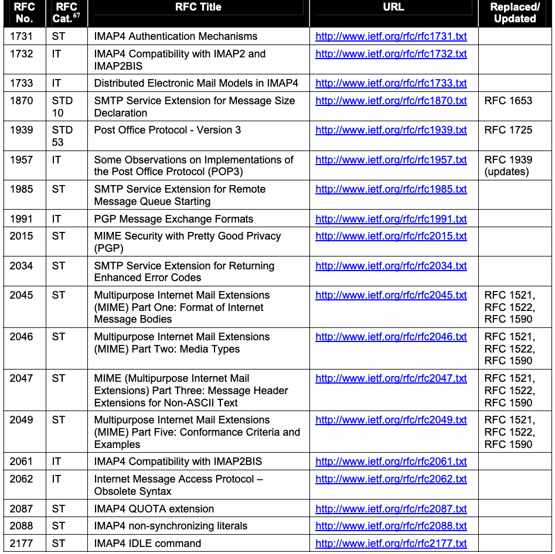
| RFC | RFC | RFC文書名 | URL | 置換／ |
| 番号 | 区分（注67） | 更新 | ||
| 1731 | ST | IMAP4 Authentication Mechanisms | http://www.ietf.org/rfc/rfc1731.txt | |
| 1732 | IT | IMAP4 Compatibility with IMAP2 and IMAP2BIS | http://www.ietf.org/rfc/rfc1732.txt | |
| 1733 | IT | Distributed Electronic Mail Models in IMAP4 | http://www.ietf.org/rfc/rfc1733.txt | |
| 1870 | STD 10 | SMTP Service Extension for Message Size Declaration | http://www.ietf.org/rfc/rfc1870.txt | RFC 1653 |
| 1939 | STD 53 | Post Office Protocol - Version 3 | http://www.ietf.org/rfc/rfc1939.txt | RFC 1725 |
| 1957 | IT | Some Observations on Implementations of the Post Office Protocol (POP3) | http://www.ietf.org/rfc/rfc1957.txt | RFC 1939 (updates) |
| 1985 | ST | SMTP Service Extension for Remote Message Queue Starting | http://www.ietf.org/rfc/rfc1985.txt | |
| 1991 | IT | PGP Message Exchange Formats | http://www.ietf.org/rfc/rfc1991.txt | |
| 2015 | ST | MIME Security with Pretty Good Privacy (PGP) | http://www.ietf.org/rfc/rfc2015.txt | |
| 2034 | ST | SMTP Service Extension for Returning Enhanced Error Codes | http://www.ietf.org/rfc/rfc2034.txt | |
| 2045 | ST | Multipurpose Internet Mail Extensions (MIME) Part One: Format of Internet Message Bodies | http://www.ietf.org/rfc/rfc2045.txt | RFC 1521, RFC 1522, RFC 1590 |
| 2046 | ST | Multipurpose Internet Mail Extensions (MIME) Part Two: Media Types | http://www.ietf.org/rfc/rfc2046.txt | RFC 1521, RFC 1522, RFC 1590 |
| 2047 | ST | MIME (Multipurpose Internet Mail Extensions) Part Three: Message Header Extensions for Non-ASCII Text | http://www.ietf.org/rfc/rfc2047.txt | RFC 1521, RFC 1522, RFC 1590 |
| 2049 | ST | Multipurpose Internet Mail Extensions (MIME) Part Five: Conformance Criteria and Examples | http://www.ietf.org/rfc/rfc2049.txt | RFC 1521, RFC 1522, RFC 1590 |
| 2061 | IT | IMAP4 Compatibility with IMAP2BIS | http://www.ietf.org/rfc/rfc2061.txt | |
| 2062 | IT | Internet Message Access Protocol – Obsolete Syntax | http://www.ietf.org/rfc/rfc2062.txt | |
| 2087 | ST | IMAP4 QUOTA extension | http://www.ietf.org/rfc/rfc2087.txt | |
| 2088 | ST | IMAP4 non-synchronizing literals | http://www.ietf.org/rfc/rfc2088.txt | |
| 2177 | ST | IMAP4 IDLE command | http://www.ietf.org/rfc/rfc2177.txt |
| RFC | RFC | RFC Title | URL | Replaced/ |
| No. | Cat.67 | Updated | ||
| 2180 | IT | IMAP4 Multi-Accessed Mailbox Practice | http://www.ietf.org/rfc/rfc2180.txt | |
| 2192 | ST | IMAP URL Scheme | http://www.ietf.org/rfc/rfc2192.txt | |
| 2193 | ST | IMAP4 Mailbox Referrals | http://www.ietf.org/rfc/rfc2193.txt | |
| 2195 | ST | IMAP/POP AUTHorize Extension for Simple Challenge/Response | http://www.ietf.org/rfc/rfc2195.txt | RFC 2095 |
| 2221 | ST | IMAP4 Login Referrals | http://www.ietf.org/rfc/rfc2221.txt | |
| 2268 | IT | A Description of the RC2 Encryption Algorithm | http://www.ietf.org/rfc/rfc2268.txt | |
| 2311 | IT | S/MIME Version 2 Message Specification | http://www.ietf.org/rfc/rfc2311.txt | |
| 2312 | IT | S/MIME Version 2 Certificate Handling | http://www.ietf.org/rfc/rfc2312.txt | |
| 2313 | IT | PKCS #1: RSA Encryption Version 1.5 | http://www.ietf.org/rfc/rfc2313.txt | |
| 2314 | IT | PKCS #10: Certification Request Syntax Version 1.5 | http://www.ietf.org/rfc/rfc2314.txt | |
| 2315 | IT | PKCS #7: Cryptographic Message Syntax Version 1.5 | http://www.ietf.org/rfc/rfc2315.txt | |
| 2342 | ST | IMAP4 Namespace | http://www.ietf.org/rfc/rfc2342.txt | |
| 2384 | ST | POP URL Scheme | http://www.ietf.org/rfc/rfc2384.txt | |
| 2440 | ST | OpenPGP Message Format | http://www.ietf.org/rfc/rfc2440.txt | |
| 2442 | IT | The Batch SMTP Media Type | http://www.ietf.org/rfc/rfc2442.txt | |
| 2449 | ST | POP3 Extension Mechanism | http://www.ietf.org/rfc/rfc2449.txt | RFC 1939 (updates) |
| 2505 | BCP | Anti-Spam Recommendations for SMTP MTAs | http://www.ietf.org/rfc/rfc2505.txt | |
| 2554 | ST | SMTP Service Extension for Authentication | http://www.ietf.org/rfc/rfc2554.txt | |
| 2595 | ST | Using TLS with IMAP, POP3 and ACAP | http://www.ietf.org/rfc/rfc2595.txt | |
| 2630 | ST | Cryptographic Message Syntax | http://www.ietf.org/rfc/rfc2630.txt | |
| 2632 | ST | S/MIME Version 3 Certificate Handling | http://www.ietf.org/rfc/rfc2632.txt | |
| 2633 | ST | S/MIME Version 3 Message Specification | http://www.ietf.org/rfc/rfc2633.txt | |
| 2634 | ST | Enhanced Security Services for S/MIME | http://www.ietf.org/rfc/rfc2634.txt | |
| 2645 | ST | On-Demand Mail Relay (ODMR) SMTP with Dynamic IP Addresses | http://www.ietf.org/rfc/rfc2645.txt | |
| 2683 | IT | IMAP4 Implementation Recommendations | http://www.ietf.org/rfc/rfc2683.txt | |
| 2821 | ST | Simple Mail Transfer Protocol | http://www.ietf.org/rfc/rfc2821.txt | RFC 821, RFC 974, RFC 1869, RFC 1123 (updates) |
| 2822 | ST | Internet Message Format | http://www.ietf.org/rfc/rfc2822.txt | RFC 822 |
| 2846 | ST | GSTN Address Element Extensions in E- mail Services | http://www.ietf.org/rfc/rfc2846.txt | |
| 2852 | ST | Deliver By SMTP Service Extension | http://www.ietf.org/rfc/rfc2852.txt | RFC 1894 (updates) |
| 2920 | STD 60 | SMTP Service Extension for Command Pipelining | http://www.ietf.org/rfc/rfc2920.txt | RFC 2197 |
| 2971 | ST | IMAP4 ID extension | http://www.ietf.org/rfc/rfc2971.txt |
原本PDFの抜粋画像
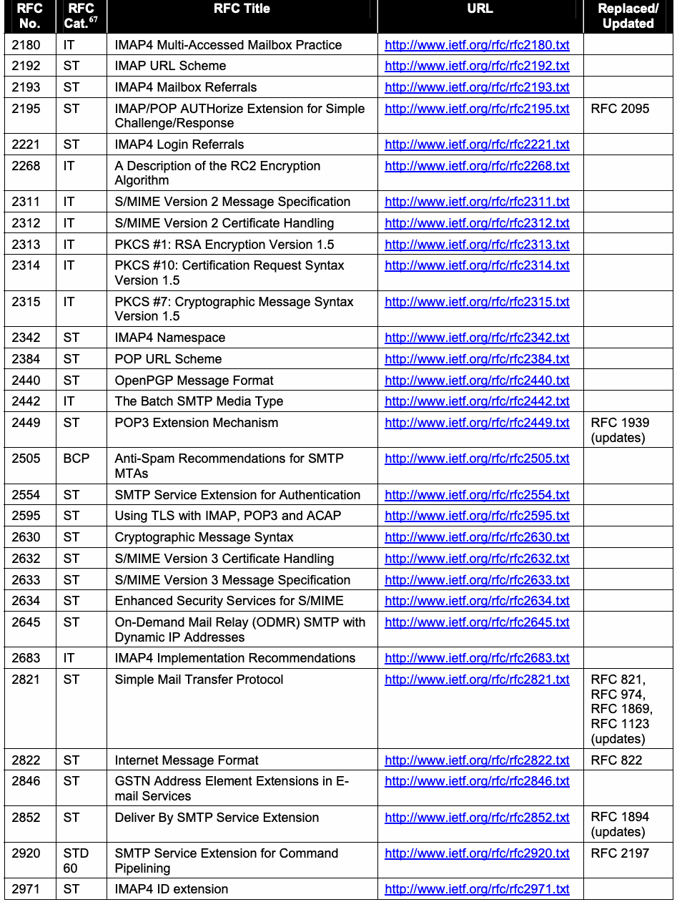
| RFC | RFC | RFC文書名 | URL | 置換／ |
| 番号 | 区分（注67） | 更新 | ||
| 2180 | IT | IMAP4 Multi-Accessed Mailbox Practice | http://www.ietf.org/rfc/rfc2180.txt | |
| 2192 | ST | IMAP URL Scheme | http://www.ietf.org/rfc/rfc2192.txt | |
| 2193 | ST | IMAP4 Mailbox Referrals | http://www.ietf.org/rfc/rfc2193.txt | |
| 2195 | ST | IMAP/POP AUTHorize Extension for Simple Challenge/Response | http://www.ietf.org/rfc/rfc2195.txt | RFC 2095 |
| 2221 | ST | IMAP4 Login Referrals | http://www.ietf.org/rfc/rfc2221.txt | |
| 2268 | IT | A Description of the RC2 Encryption Algorithm | http://www.ietf.org/rfc/rfc2268.txt | |
| 2311 | IT | S/MIME Version 2 Message Specification | http://www.ietf.org/rfc/rfc2311.txt | |
| 2312 | IT | S/MIME Version 2 Certificate Handling | http://www.ietf.org/rfc/rfc2312.txt | |
| 2313 | IT | PKCS #1: RSA Encryption Version 1.5 | http://www.ietf.org/rfc/rfc2313.txt | |
| 2314 | IT | PKCS #10: Certification Request Syntax Version 1.5 | http://www.ietf.org/rfc/rfc2314.txt | |
| 2315 | IT | PKCS #7: Cryptographic Message Syntax Version 1.5 | http://www.ietf.org/rfc/rfc2315.txt | |
| 2342 | ST | IMAP4 Namespace | http://www.ietf.org/rfc/rfc2342.txt | |
| 2384 | ST | POP URL Scheme | http://www.ietf.org/rfc/rfc2384.txt | |
| 2440 | ST | OpenPGP Message Format | http://www.ietf.org/rfc/rfc2440.txt | |
| 2442 | IT | The Batch SMTP Media Type | http://www.ietf.org/rfc/rfc2442.txt | |
| 2449 | ST | POP3 Extension Mechanism | http://www.ietf.org/rfc/rfc2449.txt | RFC 1939 (updates) |
| 2505 | BCP | Anti-Spam Recommendations for SMTP MTAs | http://www.ietf.org/rfc/rfc2505.txt | |
| 2554 | ST | SMTP Service Extension for Authentication | http://www.ietf.org/rfc/rfc2554.txt | |
| 2595 | ST | Using TLS with IMAP, POP3 and ACAP | http://www.ietf.org/rfc/rfc2595.txt | |
| 2630 | ST | Cryptographic Message Syntax | http://www.ietf.org/rfc/rfc2630.txt | |
| 2632 | ST | S/MIME Version 3 Certificate Handling | http://www.ietf.org/rfc/rfc2632.txt | |
| 2633 | ST | S/MIME Version 3 Message Specification | http://www.ietf.org/rfc/rfc2633.txt | |
| 2634 | ST | Enhanced Security Services for S/MIME | http://www.ietf.org/rfc/rfc2634.txt | |
| 2645 | ST | On-Demand Mail Relay (ODMR) SMTP with Dynamic IP Addresses | http://www.ietf.org/rfc/rfc2645.txt | |
| 2683 | IT | IMAP4 Implementation Recommendations | http://www.ietf.org/rfc/rfc2683.txt | |
| 2821 | ST | Simple Mail Transfer Protocol | http://www.ietf.org/rfc/rfc2821.txt | RFC 821, RFC 974, RFC 1869, RFC 1123 (updates) |
| 2822 | ST | Internet Message Format | http://www.ietf.org/rfc/rfc2822.txt | RFC 822 |
| 2846 | ST | GSTN Address Element Extensions in E- mail Services | http://www.ietf.org/rfc/rfc2846.txt | |
| 2852 | ST | Deliver By SMTP Service Extension | http://www.ietf.org/rfc/rfc2852.txt | RFC 1894 (updates) |
| 2920 | STD 60 | SMTP Service Extension for Command Pipelining | http://www.ietf.org/rfc/rfc2920.txt | RFC 2197 |
| 2971 | ST | IMAP4 ID extension | http://www.ietf.org/rfc/rfc2971.txt |
| RFC | RFC | RFC Title | URL | Replaced/ |
| No. | Cat.67 | Updated | ||
| 3030 | ST | SMTP Service Extensions for Transmission of Large and Binary MIME Messages | http://www.ietf.org/rfc/rfc3030.txt | RFC 1830 |
| 3156 | ST | MIME Security with OpenPGP | http://www.ietf.org/rfc/rfc3156.txt | RFC 2015 (updates) |
| 3191 | ST | Minimal GSTN address format in Internet Mail | http://www.ietf.org/rfc/rfc3191.txt | RFC 2303, RFC 2846 (updates) |
| 3192 | ST | Minimal FAX address format in Internet Mail | http://www.ietf.org/rfc/rfc3192.txt | RFC 2304, RFC 2846 (updates) |
| 3206 | ST | The SYS and AUTH POP Response Codes | http://www.ietf.org/rfc/rfc3206.txt | |
| 3207 | ST | SMTP Service Extension for Secure SMTP over Transport Layer Security | http://www.ietf.org/rfc/rfc3207.txt | RFC 2487 |
| 3348 | IT | The Internet Message Action Protocol (IMAP4) Child Mailbox Extension | http://www.ietf.org/rfc/rfc3348.txt | |
| 3461 | ST | Simple Mail Transfer Protocol (SMTP) Service Extension for Delivery Status Notifications (DSNs) | http://www.ietf.org/rfc/rfc3461.txt | RFC 1891 |
| 3462 | ST | The Multipart/Report Content Type for the Reporting of Mail System Administrative Messages | http://www.ietf.org/rfc/rfc3462.txt | RFC 1892 |
| 3463 | ST | Enhanced Mail System Status Codes | http://www.ietf.org/rfc/rfc3463.txt | RFC 1893 |
| 3464 | ST | An Extensible Message Format for Delivery Status Notifications | http://www.ietf.org/rfc/rfc3464.txt | RFC 1894 |
| 3501 | ST | Internet Message Access Protocol - Version 4rev1 | http://www.ietf.org/rfc/rfc3501.txt | RFC 2060 |
| 3502 | ST | Internet Message Access Protocol (IMAP) – MULTIAPPEND Extension | http://www.ietf.org/rfc/rfc3502.txt | |
| 3503 | ST | Message Disposition Notification (MDN) profile for Internet Message Access Protocol (IMAP) | http://www.ietf.org/rfc/rfc3503.txt | |
| 3516 | ST | IMAP4 Binary Content Extension | http://www.ietf.org/rfc/rfc3516.txt | |
| 3691 | ST | Internet Message Access Protocol (IMAP) UNSELECT command | http://www.ietf.org/rfc/rfc3691.txt | |
| 3798 | ST | Message Disposition Notification | http://www.ietf.org/rfc/rfc3798.txt | RFC 2298, RFC 2046 (updates), RFC 3461 (updates) |
| 3848 | ST | ESMTP and LMTP Transmission Types Registration | http://www.ietf.org/rfc/rfc3848.txt | |
| 3865 | ST | A No Soliciting Simple Mail Transfer Protocol (SMTP) Service Extension | http://www.ietf.org/rfc/rfc3865.txt | |
| 3885 | ST | SMTP Service Extension for Message Tracking | http://www.ietf.org/rfc/rfc3885.txt | RFC 3461 (updates) |
| 3886 | ST | An Extensible Message Format for Message Tracking Responses | http://www.ietf.org/rfc/rfc3886.txt | RFC 3463 (updates) |
| 3974 | IT | SMTP Operational Experience in Mixed IPv4/v6 Environments | http://www.ietf.org/rfc/rfc3974.txt |
原本PDFの抜粋画像
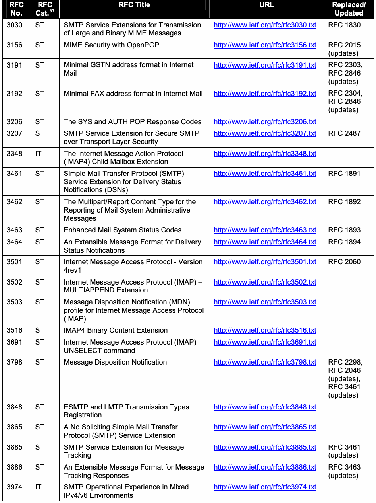
| RFC | RFC | RFC文書名 | URL | 置換／ |
| 番号 | 区分（注67） | 更新 | ||
| 3030 | ST | SMTP Service Extensions for Transmission of Large and Binary MIME Messages | http://www.ietf.org/rfc/rfc3030.txt | RFC 1830 |
| 3156 | ST | MIME Security with OpenPGP | http://www.ietf.org/rfc/rfc3156.txt | RFC 2015 (updates) |
| 3191 | ST | Minimal GSTN address format in Internet Mail | http://www.ietf.org/rfc/rfc3191.txt | RFC 2303, RFC 2846 (updates) |
| 3192 | ST | Minimal FAX address format in Internet Mail | http://www.ietf.org/rfc/rfc3192.txt | RFC 2304, RFC 2846 (updates) |
| 3206 | ST | The SYS and AUTH POP Response Codes | http://www.ietf.org/rfc/rfc3206.txt | |
| 3207 | ST | SMTP Service Extension for Secure SMTP over Transport Layer Security | http://www.ietf.org/rfc/rfc3207.txt | RFC 2487 |
| 3348 | IT | The Internet Message Action Protocol (IMAP4) Child Mailbox Extension | http://www.ietf.org/rfc/rfc3348.txt | |
| 3461 | ST | Simple Mail Transfer Protocol (SMTP) Service Extension for Delivery Status Notifications (DSNs) | http://www.ietf.org/rfc/rfc3461.txt | RFC 1891 |
| 3462 | ST | The Multipart/Report Content Type for the Reporting of Mail System Administrative Messages | http://www.ietf.org/rfc/rfc3462.txt | RFC 1892 |
| 3463 | ST | Enhanced Mail System Status Codes | http://www.ietf.org/rfc/rfc3463.txt | RFC 1893 |
| 3464 | ST | An Extensible Message Format for Delivery Status Notifications | http://www.ietf.org/rfc/rfc3464.txt | RFC 1894 |
| 3501 | ST | Internet Message Access Protocol - Version 4rev1 | http://www.ietf.org/rfc/rfc3501.txt | RFC 2060 |
| 3502 | ST | Internet Message Access Protocol (IMAP) – MULTIAPPEND Extension | http://www.ietf.org/rfc/rfc3502.txt | |
| 3503 | ST | Message Disposition Notification (MDN) profile for Internet Message Access Protocol (IMAP) | http://www.ietf.org/rfc/rfc3503.txt | |
| 3516 | ST | IMAP4 Binary Content Extension | http://www.ietf.org/rfc/rfc3516.txt | |
| 3691 | ST | Internet Message Access Protocol (IMAP) UNSELECT command | http://www.ietf.org/rfc/rfc3691.txt | |
| 3798 | ST | Message Disposition Notification | http://www.ietf.org/rfc/rfc3798.txt | RFC 2298, RFC 2046 (updates), RFC 3461 (updates) |
| 3848 | ST | ESMTP and LMTP Transmission Types Registration | http://www.ietf.org/rfc/rfc3848.txt | |
| 3865 | ST | A No Soliciting Simple Mail Transfer Protocol (SMTP) Service Extension | http://www.ietf.org/rfc/rfc3865.txt | |
| 3885 | ST | SMTP Service Extension for Message Tracking | http://www.ietf.org/rfc/rfc3885.txt | RFC 3461 (updates) |
| 3886 | ST | An Extensible Message Format for Message Tracking Responses | http://www.ietf.org/rfc/rfc3886.txt | RFC 3463 (updates) |
| 3974 | IT | SMTP Operational Experience in Mixed IPv4/v6 Environments | http://www.ietf.org/rfc/rfc3974.txt |
| RFC | RFC | RFC Title | URL | Replaced/ |
| No. | Cat.67 | Updated | ||
| 4141 | ST | SMTP and MIME Extensions for Content Conversion | http://www.ietf.org/rfc/rfc4141.txt | |
| 4289 | BCP | Multipurpose Internet Mail Extensions (MIME) Part Four: Registration Procedures | http://www.ietf.org/rfc/rfc4289.txt | RFC 2048 |
| 4314 | ST | IMAP4 Access Control List (ACL) Extension | http://www.ietf.org/rfc/rfc4314.txt | RFC 2086 |
| 4315 | ST | Internet Message Access Protocol (IMAP) - UIDPLUS extension | http://www.ietf.org/rfc/rfc4315.txt | RFC 2359 |
原本PDFの抜粋画像
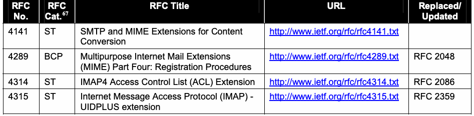
| RFC | RFC | RFC文書名 | URL | 置換／ |
| 番号 | 区分（注67） | 更新 | ||
| 4141 | ST | SMTP and MIME Extensions for Content Conversion | http://www.ietf.org/rfc/rfc4141.txt | |
| 4289 | BCP | Multipurpose Internet Mail Extensions (MIME) Part Four: Registration Procedures | http://www.ietf.org/rfc/rfc4289.txt | RFC 2048 |
| 4314 | ST | IMAP4 Access Control List (ACL) Extension | http://www.ietf.org/rfc/rfc4314.txt | RFC 2086 |
| 4315 | ST | Internet Message Access Protocol (IMAP) - UIDPLUS extension | http://www.ietf.org/rfc/rfc4315.txt | RFC 2359 |
IMAP-Related RFCs by RFC Number
IMAP関連RFC（RFC番号順）
未レビュー訳| RFC | RFC | RFC Title | URL | Replaced/ |
| No. | Cat. | Updated | ||
| 1731 | ST | IMAP4 Authentication Mechanisms | http://www.ietf.org/rfc/rfc1731.txt | |
| 1732 | ST | IMAP4 Compatibility with IMAP2 and IMAP2BIS | http://www.ietf.org/rfc/rfc1732.txt | |
| 1733 | IT | Distributed Electronic Mail Models in IMAP4 | http://www.ietf.org/rfc/rfc1733.txt | |
| 2061 | IT | IMAP4 Compatibility with IMAP2BIS | http://www.ietf.org/rfc/rfc2061.txt | |
| 2062 | IT | Internet Message Access Protocol – Obsolete Syntax | http://www.ietf.org/rfc/rfc2062.txt | |
| 2087 | ST | IMAP4 QUOTA extension | http://www.ietf.org/rfc/rfc2087.txt | |
| 2088 | ST | IMAP4 non-synchronizing literals | http://www.ietf.org/rfc/rfc2088.txt | |
| 2177 | ST | IMAP4 IDLE command | http://www.ietf.org/rfc/rfc2177.txt | |
| 2180 | IT | IMAP4 Multi-Accessed Mailbox Practice | http://www.ietf.org/rfc/rfc2180.txt | |
| 2192 | ST | IMAP URL Scheme | http://www.ietf.org/rfc/rfc2192.txt | |
| 2193 | ST | IMAP4 Mailbox Referrals | http://www.ietf.org/rfc/rfc2193.txt | |
| 2195 | ST | IMAP/POP AUTHorize Extension for Simple Challenge/Response | http://www.ietf.org/rfc/rfc2195.txt | RFC 2095 |
| 2221 | ST | IMAP4 Login Referrals | http://www.ietf.org/rfc/rfc2221.txt | |
| 2342 | ST | IMAP4 Namespace | http://www.ietf.org/rfc/rfc2342.txt | |
| 2595 | ST | Using TLS with IMAP, POP3 and ACAP | http://www.ietf.org/rfc/rfc2595.txt | |
| 2683 | IT | IMAP4 Implementation Recommendations | http://www.ietf.org/rfc/rfc2683.txt | |
| 2971 | ST | IMAP4 ID extension | http://www.ietf.org/rfc/rfc2971.txt | |
| 3348 | IT | The Internet Message Action Protocol (IMAP4) Child Mailbox Extension | http://www.ietf.org/rfc/rfc3348.txt | |
| 3501 | ST | Internet Message Access Protocol - Version 4rev1 | http://www.ietf.org/rfc/rfc3501.txt | RFC 2060 |
| 3502 | ST | Internet Message Access Protocol (IMAP) – MULTIAPPEND Extension | http://www.ietf.org/rfc/rfc3502.txt | |
| 3503 | ST | Message Disposition Notification (MDN) profile for Internet Message Access Protocol (IMAP) | http://www.ietf.org/rfc/rfc3503.txt | |
| 3516 | ST | IMAP4 Binary Content Extension | http://www.ietf.org/rfc/rfc3516.txt | |
| 3691 | ST | Internet Message Access Protocol (IMAP) UNSELECT command | http://www.ietf.org/rfc/rfc3691.txt | |
| 4314 | ST | IMAP4 Access Control List (ACL) Extension | http://www.ietf.org/rfc/rfc4314.txt | RFC 2086 |
原本PDFの抜粋画像
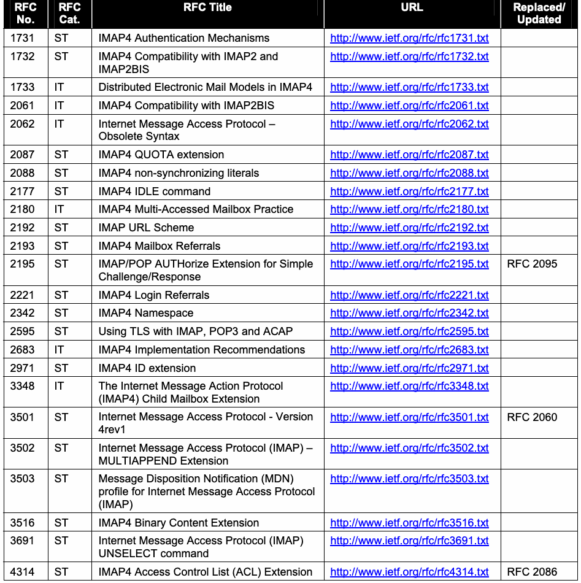
| RFC | RFC | RFC文書名 | URL | 置換／ |
| 番号 | 区分 | 更新 | ||
| 1731 | ST | IMAP4 Authentication Mechanisms | http://www.ietf.org/rfc/rfc1731.txt | |
| 1732 | ST | IMAP4 Compatibility with IMAP2 and IMAP2BIS | http://www.ietf.org/rfc/rfc1732.txt | |
| 1733 | IT | Distributed Electronic Mail Models in IMAP4 | http://www.ietf.org/rfc/rfc1733.txt | |
| 2061 | IT | IMAP4 Compatibility with IMAP2BIS | http://www.ietf.org/rfc/rfc2061.txt | |
| 2062 | IT | Internet Message Access Protocol – Obsolete Syntax | http://www.ietf.org/rfc/rfc2062.txt | |
| 2087 | ST | IMAP4 QUOTA extension | http://www.ietf.org/rfc/rfc2087.txt | |
| 2088 | ST | IMAP4 non-synchronizing literals | http://www.ietf.org/rfc/rfc2088.txt | |
| 2177 | ST | IMAP4 IDLE command | http://www.ietf.org/rfc/rfc2177.txt | |
| 2180 | IT | IMAP4 Multi-Accessed Mailbox Practice | http://www.ietf.org/rfc/rfc2180.txt | |
| 2192 | ST | IMAP URL Scheme | http://www.ietf.org/rfc/rfc2192.txt | |
| 2193 | ST | IMAP4 Mailbox Referrals | http://www.ietf.org/rfc/rfc2193.txt | |
| 2195 | ST | IMAP/POP AUTHorize Extension for Simple Challenge/Response | http://www.ietf.org/rfc/rfc2195.txt | RFC 2095 |
| 2221 | ST | IMAP4 Login Referrals | http://www.ietf.org/rfc/rfc2221.txt | |
| 2342 | ST | IMAP4 Namespace | http://www.ietf.org/rfc/rfc2342.txt | |
| 2595 | ST | Using TLS with IMAP, POP3 and ACAP | http://www.ietf.org/rfc/rfc2595.txt | |
| 2683 | IT | IMAP4 Implementation Recommendations | http://www.ietf.org/rfc/rfc2683.txt | |
| 2971 | ST | IMAP4 ID extension | http://www.ietf.org/rfc/rfc2971.txt | |
| 3348 | IT | The Internet Message Action Protocol (IMAP4) Child Mailbox Extension | http://www.ietf.org/rfc/rfc3348.txt | |
| 3501 | ST | Internet Message Access Protocol - Version 4rev1 | http://www.ietf.org/rfc/rfc3501.txt | RFC 2060 |
| 3502 | ST | Internet Message Access Protocol (IMAP) – MULTIAPPEND Extension | http://www.ietf.org/rfc/rfc3502.txt | |
| 3503 | ST | Message Disposition Notification (MDN) profile for Internet Message Access Protocol (IMAP) | http://www.ietf.org/rfc/rfc3503.txt | |
| 3516 | ST | IMAP4 Binary Content Extension | http://www.ietf.org/rfc/rfc3516.txt | |
| 3691 | ST | Internet Message Access Protocol (IMAP) UNSELECT command | http://www.ietf.org/rfc/rfc3691.txt | |
| 4314 | ST | IMAP4 Access Control List (ACL) Extension | http://www.ietf.org/rfc/rfc4314.txt | RFC 2086 |
| RFC | RFC | RFC Title | URL | Replaced/ |
| No. | Cat. | Updated | ||
| 4315 | ST | Internet Message Access Protocol (IMAP) - UIDPLUS extension | http://www.ietf.org/rfc/rfc4315.txt | RFC 2359 |
原本PDFの抜粋画像
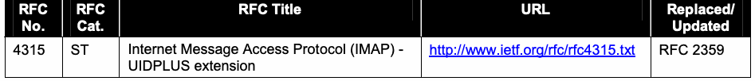
| RFC | RFC | RFC文書名 | URL | 置換／ |
| 番号 | 区分 | 更新 | ||
| 4315 | ST | Internet Message Access Protocol (IMAP) - UIDPLUS extension | http://www.ietf.org/rfc/rfc4315.txt | RFC 2359 |
MIME and S/MIME RFCs by RFC Number
MIMEおよびS/MIME関連RFC（RFC番号順）
未レビュー訳| RFC | RFC | RFC Title | URL | Replaced/ |
| No. | Cat. | Updated | ||
| 2015 | ST | MIME Security with Pretty Good Privacy (PGP) | http://www.ietf.org/rfc/rfc2015.txt | |
| 2045 | ST | Multipurpose Internet Mail Extensions (MIME) Part One: Format of Internet Message Bodies | http://www.ietf.org/rfc/rfc2045.txt | RFC 1521, RFC 1522, RFC 1590 |
| 2046 | ST | Multipurpose Internet Mail Extensions (MIME) Part Two: Media Types | http://www.ietf.org/rfc/rfc2046.txt | RFC 1521, RFC 1522, RFC 1590 |
| 2047 | ST | MIME (Multipurpose Internet Mail Extensions) Part Three: Message Header Extensions for Non-ASCII Text | http://www.ietf.org/rfc/rfc2047.txt | RFC 1521, RFC 1522, RFC 1590 |
| 2049 | ST | Multipurpose Internet Mail Extensions (MIME) Part Five: Conformance Criteria and Examples | http://www.ietf.org/rfc/rfc2049.txt | RFC 1521, RFC 1522, RFC 1590 |
| 2268 | IT | A Description of the RC2 Encryption Algorithm | http://www.ietf.org/rfc/rfc2268.txt | |
| 2311 | IT | S/MIME Version 2 Message Specification | http://www.ietf.org/rfc/rfc2311.txt | |
| 2312 | IT | S/MIME Version 2 Certificate Handling | http://www.ietf.org/rfc/rfc2312.txt | |
| 2313 | IT | PKCS #1: RSA Encryption Version 1.5 | http://www.ietf.org/rfc/rfc2313.txt | |
| 2314 | IT | PKCS #10: Certification Request Syntax Version 1.5 | http://www.ietf.org/rfc/rfc2314.txt | |
| 2315 | IT | PKCS #7: Cryptographic Message Syntax Version 1.5 | http://www.ietf.org/rfc/rfc2315.txt | |
| 2630 | ST | Cryptographic Message Syntax | http://www.ietf.org/rfc/rfc2630.txt | |
| 2632 | ST | S/MIME Version 3 Certificate Handling | http://www.ietf.org/rfc/rfc2632.txt | |
| 2633 | ST | S/MIME Version 3 Message Specification | http://www.ietf.org/rfc/rfc2633.txt | |
| 2634 | ST | Enhanced Security Services for S/MIME | http://www.ietf.org/rfc/rfc2634.txt | |
| 3156 | ST | MIME Security with OpenPGP | http://www.ietf.org/rfc/rfc3156.txt | RFC 2015 (updates) |
| 4141 | ST | SMTP and MIME Extensions for Content Conversion | http://www.ietf.org/rfc/rfc4141.txt | |
| 4289 | BCP | Multipurpose Internet Mail Extensions (MIME) Part Four: Registration Procedures | http://www.ietf.org/rfc/rfc4289.txt | RFC 2048 |
原本PDFの抜粋画像
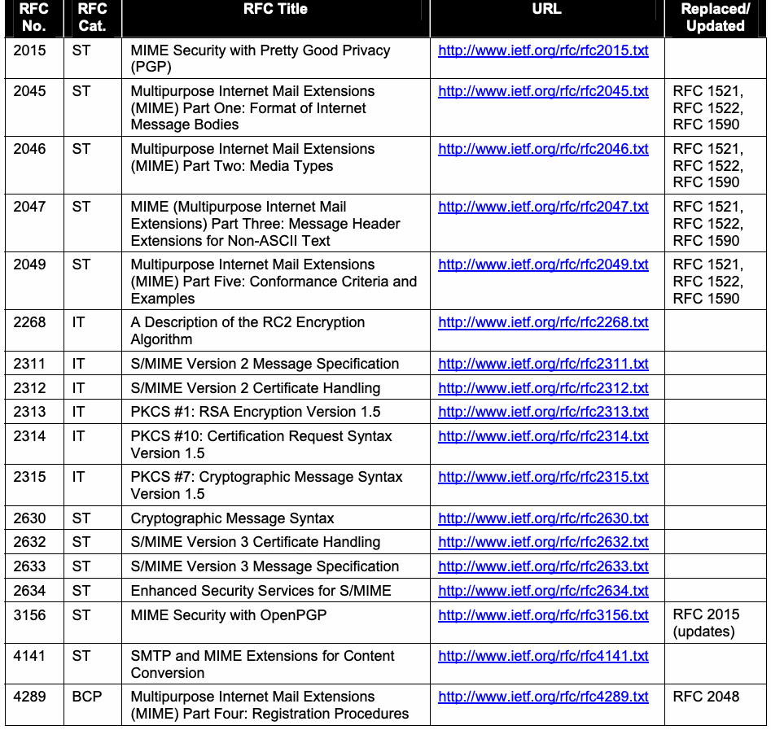
| RFC | RFC | RFC文書名 | URL | 置換／ |
| 番号 | 区分 | 更新 | ||
| 2015 | ST | MIME Security with Pretty Good Privacy (PGP) | http://www.ietf.org/rfc/rfc2015.txt | |
| 2045 | ST | Multipurpose Internet Mail Extensions (MIME) Part One: Format of Internet Message Bodies | http://www.ietf.org/rfc/rfc2045.txt | RFC 1521, RFC 1522, RFC 1590 |
| 2046 | ST | Multipurpose Internet Mail Extensions (MIME) Part Two: Media Types | http://www.ietf.org/rfc/rfc2046.txt | RFC 1521, RFC 1522, RFC 1590 |
| 2047 | ST | MIME (Multipurpose Internet Mail Extensions) Part Three: Message Header Extensions for Non-ASCII Text | http://www.ietf.org/rfc/rfc2047.txt | RFC 1521, RFC 1522, RFC 1590 |
| 2049 | ST | Multipurpose Internet Mail Extensions (MIME) Part Five: Conformance Criteria and Examples | http://www.ietf.org/rfc/rfc2049.txt | RFC 1521, RFC 1522, RFC 1590 |
| 2268 | IT | A Description of the RC2 Encryption Algorithm | http://www.ietf.org/rfc/rfc2268.txt | |
| 2311 | IT | S/MIME Version 2 Message Specification | http://www.ietf.org/rfc/rfc2311.txt | |
| 2312 | IT | S/MIME Version 2 Certificate Handling | http://www.ietf.org/rfc/rfc2312.txt | |
| 2313 | IT | PKCS #1: RSA Encryption Version 1.5 | http://www.ietf.org/rfc/rfc2313.txt | |
| 2314 | IT | PKCS #10: Certification Request Syntax Version 1.5 | http://www.ietf.org/rfc/rfc2314.txt | |
| 2315 | IT | PKCS #7: Cryptographic Message Syntax Version 1.5 | http://www.ietf.org/rfc/rfc2315.txt | |
| 2630 | ST | Cryptographic Message Syntax | http://www.ietf.org/rfc/rfc2630.txt | |
| 2632 | ST | S/MIME Version 3 Certificate Handling | http://www.ietf.org/rfc/rfc2632.txt | |
| 2633 | ST | S/MIME Version 3 Message Specification | http://www.ietf.org/rfc/rfc2633.txt | |
| 2634 | ST | Enhanced Security Services for S/MIME | http://www.ietf.org/rfc/rfc2634.txt | |
| 3156 | ST | MIME Security with OpenPGP | http://www.ietf.org/rfc/rfc3156.txt | RFC 2015 (updates) |
| 4141 | ST | SMTP and MIME Extensions for Content Conversion | http://www.ietf.org/rfc/rfc4141.txt | |
| 4289 | BCP | Multipurpose Internet Mail Extensions (MIME) Part Four: Registration Procedures | http://www.ietf.org/rfc/rfc4289.txt | RFC 2048 |
OpenPGP and PGP-Related RFCs by RFC Number
OpenPGPおよびPGP関連RFC（RFC番号順）
未レビュー訳| RFC | RFC | RFC Title | URL | Replaced/ |
| No. | Cat. | Updated | ||
| 1991 | IT | PGP Message Exchange Formats | http://www.ietf.org/rfc/rfc1991.txt | |
| 2015 | ST | MIME Security with Pretty Good Privacy (PGP) | http://www.ietf.org/rfc/rfc2015.txt | |
| 2440 | ST | OpenPGP Message Format | http://www.ietf.org/rfc/rfc2440.txt | |
| 3156 | ST | MIME Security with OpenPGP | http://www.ietf.org/rfc/rfc3156.txt | RFC 2015 (updates) |
原本PDFの抜粋画像
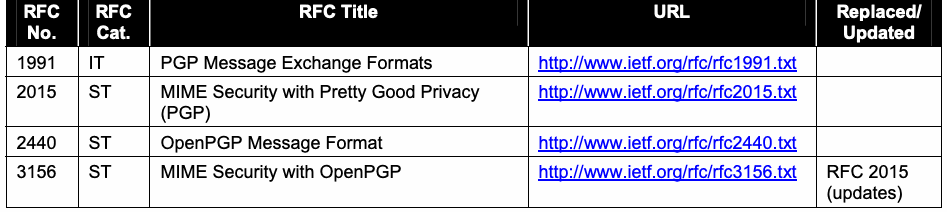
| RFC | RFC | RFC文書名 | URL | 置換／ |
| 番号 | 区分 | 更新 | ||
| 1991 | IT | PGP Message Exchange Formats | http://www.ietf.org/rfc/rfc1991.txt | |
| 2015 | ST | MIME Security with Pretty Good Privacy (PGP) | http://www.ietf.org/rfc/rfc2015.txt | |
| 2440 | ST | OpenPGP Message Format | http://www.ietf.org/rfc/rfc2440.txt | |
| 3156 | ST | MIME Security with OpenPGP | http://www.ietf.org/rfc/rfc3156.txt | RFC 2015 (updates) |
POP-Related RFCs by RFC Number
POP関連RFC（RFC番号順）
未レビュー訳| RFC | RFC | RFC Title | URL | Replaced/ |
| No. | Cat. | Updated | ||
| 1939 | STD 53 | Post Office Protocol - Version 3 | http://www.ietf.org/rfc/rfc1939.txt | RFC 1725 |
| 1957 | IT | Some Observations on Implementations of the Post Office Protocol (POP3) | http://www.ietf.org/rfc/rfc1957.txt | RFC 1939 (updates) |
| 2195 | ST | IMAP/POP AUTHorize Extension for Simple Challenge/Response | http://www.ietf.org/rfc/rfc2195.txt | RFC 2095 |
| 2384 | ST | POP URL Scheme | http://www.ietf.org/rfc/rfc2384.txt | |
| 2449 | ST | POP3 Extension Mechanism | http://www.ietf.org/rfc/rfc2449.txt | RFC 1939 (updates) |
| 2595 | ST | Using TLS with IMAP, POP3 and ACAP | http://www.ietf.org/rfc/rfc2595.txt | |
| 3206 | ST | The SYS and AUTH POP Response Codes | http://www.ietf.org/rfc/rfc3206.txt |
原本PDFの抜粋画像
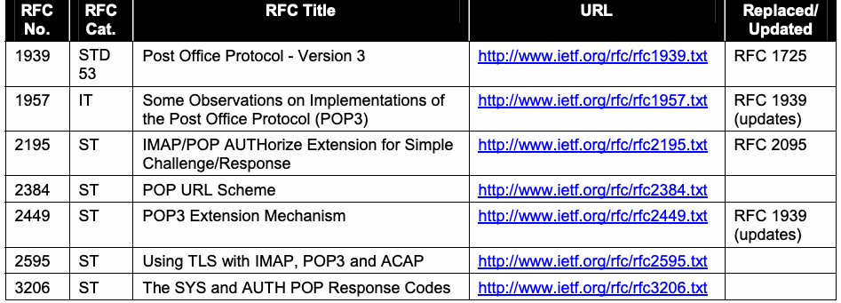
| RFC | RFC | RFC文書名 | URL | 置換／ |
| 番号 | 区分 | 更新 | ||
| 1939 | STD 53 | Post Office Protocol - Version 3 | http://www.ietf.org/rfc/rfc1939.txt | RFC 1725 |
| 1957 | IT | Some Observations on Implementations of the Post Office Protocol (POP3) | http://www.ietf.org/rfc/rfc1957.txt | RFC 1939 (updates) |
| 2195 | ST | IMAP/POP AUTHorize Extension for Simple Challenge/Response | http://www.ietf.org/rfc/rfc2195.txt | RFC 2095 |
| 2384 | ST | POP URL Scheme | http://www.ietf.org/rfc/rfc2384.txt | |
| 2449 | ST | POP3 Extension Mechanism | http://www.ietf.org/rfc/rfc2449.txt | RFC 1939 (updates) |
| 2595 | ST | Using TLS with IMAP, POP3 and ACAP | http://www.ietf.org/rfc/rfc2595.txt | |
| 3206 | ST | The SYS and AUTH POP Response Codes | http://www.ietf.org/rfc/rfc3206.txt |
SMTP-Related RFCs by RFC Number
SMTP関連RFC（RFC番号順）
未レビュー訳| RFC | RFC | RFC Title | URL | Replaced/ |
| No. | Cat. | Updated | ||
| 1870 | STD 10 | SMTP Service Extension for Message Size Declaration | http://www.ietf.org/rfc/rfc1870.txt | RFC 1653 |
| 1985 | ST | SMTP Service Extension for Remote Message Queue Starting | http://www.ietf.org/rfc/rfc1985.txt | |
| 2034 | ST | SMTP Service Extension for Returning Enhanced Error Codes | http://www.ietf.org/rfc/rfc2034.txt | |
| 2442 | IT | The Batch SMTP Media Type | http://www.ietf.org/rfc/rfc2442.txt | |
| 2505 | BCP | Anti-Spam Recommendations for SMTP MTAs | http://www.ietf.org/rfc/rfc2505.txt | |
| 2554 | ST | SMTP Service Extension for Authentication | http://www.ietf.org/rfc/rfc2554.txt | |
| 2645 | ST | On-Demand Mail Relay (ODMR) SMTP with Dynamic IP Addresses | http://www.ietf.org/rfc/rfc2645.txt | |
| 2821 | ST | Simple Mail Transfer Protocol | http://www.ietf.org/rfc/rfc2821.txt | RFC 821, RFC 974, RFC 1869, RFC 1123 (updates) |
原本PDFの抜粋画像
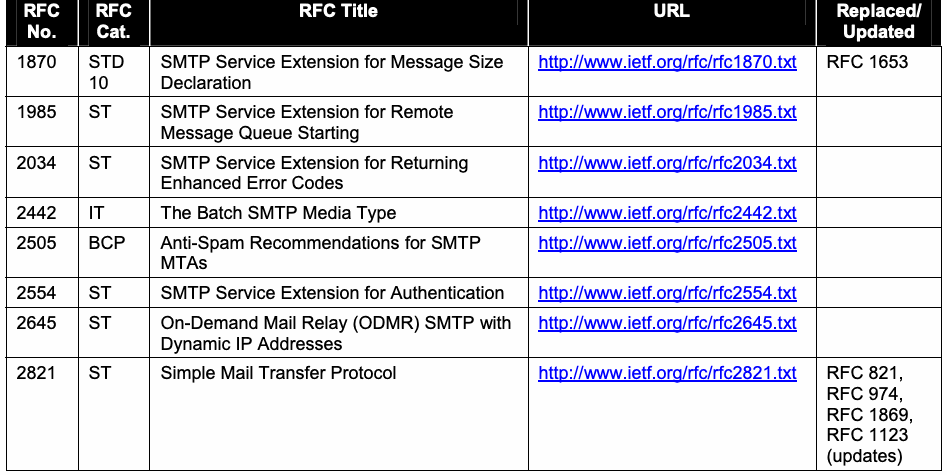
| RFC | RFC | RFC文書名 | URL | 置換／ |
| 番号 | 区分 | 更新 | ||
| 1870 | STD 10 | SMTP Service Extension for Message Size Declaration | http://www.ietf.org/rfc/rfc1870.txt | RFC 1653 |
| 1985 | ST | SMTP Service Extension for Remote Message Queue Starting | http://www.ietf.org/rfc/rfc1985.txt | |
| 2034 | ST | SMTP Service Extension for Returning Enhanced Error Codes | http://www.ietf.org/rfc/rfc2034.txt | |
| 2442 | IT | The Batch SMTP Media Type | http://www.ietf.org/rfc/rfc2442.txt | |
| 2505 | BCP | Anti-Spam Recommendations for SMTP MTAs | http://www.ietf.org/rfc/rfc2505.txt | |
| 2554 | ST | SMTP Service Extension for Authentication | http://www.ietf.org/rfc/rfc2554.txt | |
| 2645 | ST | On-Demand Mail Relay (ODMR) SMTP with Dynamic IP Addresses | http://www.ietf.org/rfc/rfc2645.txt | |
| 2821 | ST | Simple Mail Transfer Protocol | http://www.ietf.org/rfc/rfc2821.txt | RFC 821, RFC 974, RFC 1869, RFC 1123 (updates) |
| RFC | RFC | RFC Title | URL | Replaced/ |
| No. | Cat. | Updated | ||
| 2822 | ST | Internet Message Format | http://www.ietf.org/rfc/rfc2822.txt | RFC 822 |
| 2846 | ST | GSTN Address Element Extensions in E- mail Services | http://www.ietf.org/rfc/rfc2846.txt | |
| 2852 | ST | Deliver By SMTP Service Extension | http://www.ietf.org/rfc/rfc2852.txt | RFC 1894 (updates) |
| 2920 | STD 60 | SMTP Service Extension for Command Pipelining | http://www.ietf.org/rfc/rfc2920.txt | RFC 2197 |
| 3030 | ST | SMTP Service Extensions for Transmission of Large and Binary MIME Messages | http://www.ietf.org/rfc/rfc3030.txt | RFC 1830 |
| 3207 | ST | SMTP Service Extension for Secure SMTP over Transport Layer Security | http://www.ietf.org/rfc/rfc3207.txt | RFC 2487 |
| 3461 | ST | Simple Mail Transfer Protocol (SMTP) Service Extension for Delivery Status Notifications (DSNs) | http://www.ietf.org/rfc/rfc3461.txt | RFC 1891 |
| 3462 | ST | The Multipart/Report Content Type for the Reporting of Mail System Administrative Messages | http://www.ietf.org/rfc/rfc3462.txt | RFC 1892 |
| 3463 | ST | Enhanced Mail System Status Codes | http://www.ietf.org/rfc/rfc3463.txt | RFC 1893 |
| 3464 | ST | An Extensible Message Format for Delivery Status Notifications | http://www.ietf.org/rfc/rfc3464.txt | RFC 1894 |
| 3798 | ST | Message Disposition Notification | http://www.ietf.org/rfc/rfc3798.txt | RFC 2298, RFC 2046 (updates), RFC 3461 (updates) |
| 3848 | ST | ESMTP and LMTP Transmission Types Registration | http://www.ietf.org/rfc/rfc3848.txt | |
| 3865 | ST | A No Soliciting Simple Mail Transfer Protocol (SMTP) Service Extension | http://www.ietf.org/rfc/rfc3865.txt | |
| 3885 | ST | SMTP Service Extension for Message Tracking | http://www.ietf.org/rfc/rfc3885.txt | RFC 3461 (updates) |
| 3886 | ST | An Extensible Message Format for Message Tracking Responses | http://www.ietf.org/rfc/rfc3886.txt | RFC 3463 (updates) |
| 3974 | IT | SMTP Operational Experience in Mixed IPv4/v6 Environments | http://www.ietf.org/rfc/rfc3974.txt | |
| 4141 | ST | SMTP and MIME Extensions for Content Conversion | http://www.ietf.org/rfc/rfc4141.txt |
原本PDFの抜粋画像
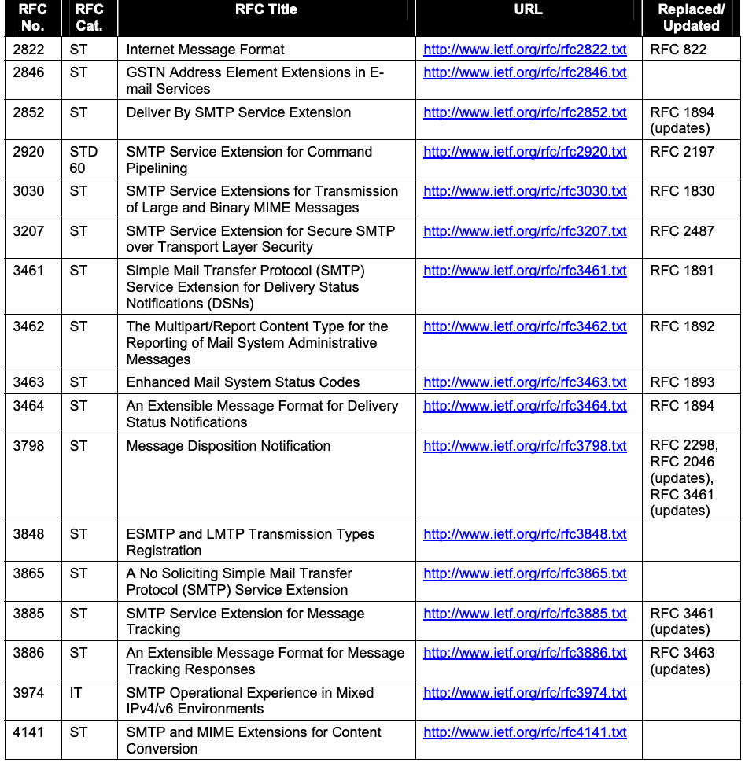
| RFC | RFC | RFC文書名 | URL | 置換／ |
| 番号 | 区分 | 更新 | ||
| 2822 | ST | Internet Message Format | http://www.ietf.org/rfc/rfc2822.txt | RFC 822 |
| 2846 | ST | GSTN Address Element Extensions in E- mail Services | http://www.ietf.org/rfc/rfc2846.txt | |
| 2852 | ST | Deliver By SMTP Service Extension | http://www.ietf.org/rfc/rfc2852.txt | RFC 1894 (updates) |
| 2920 | STD 60 | SMTP Service Extension for Command Pipelining | http://www.ietf.org/rfc/rfc2920.txt | RFC 2197 |
| 3030 | ST | SMTP Service Extensions for Transmission of Large and Binary MIME Messages | http://www.ietf.org/rfc/rfc3030.txt | RFC 1830 |
| 3207 | ST | SMTP Service Extension for Secure SMTP over Transport Layer Security | http://www.ietf.org/rfc/rfc3207.txt | RFC 2487 |
| 3461 | ST | Simple Mail Transfer Protocol (SMTP) Service Extension for Delivery Status Notifications (DSNs) | http://www.ietf.org/rfc/rfc3461.txt | RFC 1891 |
| 3462 | ST | The Multipart/Report Content Type for the Reporting of Mail System Administrative Messages | http://www.ietf.org/rfc/rfc3462.txt | RFC 1892 |
| 3463 | ST | Enhanced Mail System Status Codes | http://www.ietf.org/rfc/rfc3463.txt | RFC 1893 |
| 3464 | ST | An Extensible Message Format for Delivery Status Notifications | http://www.ietf.org/rfc/rfc3464.txt | RFC 1894 |
| 3798 | ST | Message Disposition Notification | http://www.ietf.org/rfc/rfc3798.txt | RFC 2298, RFC 2046 (updates), RFC 3461 (updates) |
| 3848 | ST | ESMTP and LMTP Transmission Types Registration | http://www.ietf.org/rfc/rfc3848.txt | |
| 3865 | ST | A No Soliciting Simple Mail Transfer Protocol (SMTP) Service Extension | http://www.ietf.org/rfc/rfc3865.txt | |
| 3885 | ST | SMTP Service Extension for Message Tracking | http://www.ietf.org/rfc/rfc3885.txt | RFC 3461 (updates) |
| 3886 | ST | An Extensible Message Format for Message Tracking Responses | http://www.ietf.org/rfc/rfc3886.txt | RFC 3463 (updates) |
| 3974 | IT | SMTP Operational Experience in Mixed IPv4/v6 Environments | http://www.ietf.org/rfc/rfc3974.txt | |
| 4141 | ST | SMTP and MIME Extensions for Content Conversion | http://www.ietf.org/rfc/rfc4141.txt |
This page has been left blank intentionally.
このページは意図的に空白にしてある。
Appendix C—References
付録C — 参考文献
未レビュー訳[Alle00] Julia Allen, et al., Securing Network Servers, CERT, 2000, http://www.sei.cmu.edu/pub/documents/sims/pdf/sim010.pdf
[Alle00] Julia Allen ほか、Securing Network Servers、CERT、2000年、http://www.sei.cmu.edu/pub/documents/sims/pdf/sim010.pdf
[Curt01] Matt Curtin, Developing Trust: Online Privacy and Security, November 2001
[Curt01] Matt Curtin『信頼の構築：オンラインプライバシーとセキュリティ（Developing Trust: Online Privacy and Security）』2001年11月
[FTC06a] Federal Trade Commission, How Not to Get Hooked by a ‘Phishing’ Scam, October 2006, http://www.ftc.gov/bcp/edu/pubs/consumer/alerts/alt127.htm
[FTC06a] 連邦取引委員会『フィッシング詐欺に引っかからない方法（How Not to Get Hooked by a “Phishing” Scam）』2006年10月、http://www.ftc.gov/bcp/edu/pubs/consumer/alerts/alt127.htm
[Kent06] Karen Kent and Murugiah Souppaya, NIST Special Publication 800-92, Guide to Computer Security Log Management, September 2006, http://csrc.nist.gov/publications/nistpubs/
[Kent06] Karen Kent および Murugiah Souppaya、NIST Special Publication 800-92、Guide to Computer Security Log Management、2006年9月、http://csrc.nist.gov/publications/nistpubs/
[McKi01] Ashley McKinnon, “Web and Email Filtering”, PC Magazine, December 2001
[McKi01] Ashley McKinnon「Webおよび電子メールのフィルタリング（Web and Email Filtering）」PC Magazine、2001年12月
[Mell05] Peter Mell, et al., NIST Special Publication 800-83, Guide to Malware Incident Prevention and Handling, November 2005, http://csrc.nist.gov/publications/nistpubs/
[Mell05] Peter Mell ほか、NIST Special Publication 800-83、Guide to Malware Incident Prevention and Handling、2005年11月、http://csrc.nist.gov/publications/nistpubs/
[NISS99] National Information System Security Glossary, NSTISSI No. 4009, January 1999
[NISS99] 国家情報システムセキュリティ用語集（National Information System Security Glossary）、NSTISSI No. 4009、1999年1月
[Pits01] Trent Pitsenbarger, Email Security in the Wake of Recent Malicious Code Incidents, 2001, http://www.nsa.gov/snac/
[Pits01] Trent Pitsenbarger、Email Security in the Wake of Recent Malicious Code Incidents、2001年、http://www.nsa.gov/snac/
[Salt75] Jerome H. Saltzer and Michael Schroeder, “The Protection of Information in Computer Systems,” Proceedings of the IEEE, Volume 63, pages 1278-1308
[Salt75] Jerome H. SaltzerおよびMichael Schroeder「コンピューターシステムにおける情報の保護（The Protection of Information in Computer Systems）」IEEE論文誌、第63巻、1278～1308ページ
[Scar07] Karen Scarfone and Peter Mell, NIST Special Publication 800-94, Guide to Intrusion Detection and Prevention Systems (IDPS), February 2007, http://csrc.nist.gov/publications/nistpubs/
[Scar07] Karen Scarfone および Peter Mell、NIST Special Publication 800-94、Guide to Intrusion Detection and Prevention Systems (IDPS)、2007年2月、http://csrc.nist.gov/publications/nistpubs/
[Swan06] Marianne Swanson, et al, NIST Special Publication 800-18 Revision 1, Guide for Developing Security Plans for Federal Information Systems, February 2006, http://csrc.nist.gov/publications/nistpubs/
[Swan06] Marianne Swanson ほか、NIST Special Publication 800-18 Revision 1、Guide for Developing Security Plans for Federal Information Systems、2006年2月、http://csrc.nist.gov/publications/nistpubs/
[Wack02a] John Wack, et al., NIST Special Publication 800-41, Guidelines on Firewalls and Firewall Policy, January 2002, http://csrc.nist.gov/publications/nistpubs/
[Wack02a] John Wackほか、NIST Special Publication 800-41『ファイアウォールおよびファイアウォールポリシーのガイドライン（Guidelines on Firewalls and Firewall Policy）』2002年1月、http://csrc.nist.gov/publications/nistpubs/
[Wack02b] John Wack, et al., NIST Special Publication 800-42, Guideline on Network Security Testing, February 2002, http://csrc.nist.gov/publications/nistpubs/
[Wack02b] John Wackほか、NIST Special Publication 800-42『ネットワークセキュリティテストのガイドライン（Guideline on Network Security Testing）』2002年2月、http://csrc.nist.gov/publications/nistpubs/
未レビュー訳This page has been left blank intentionally.
このページは意図的に空白にしてある。
未レビュー訳Appendix D—Email Security Tools and Applications
付録D — 電子メールセキュリティのツールおよびアプリケーション
未レビュー訳The lists below provide examples of tools and resources that may be helpful.68
以下の一覧は、役立つ可能性のあるツールやリソースの例を示す。68
未レビュー訳Centralized Malware Scanning and Content Filtering Applications
集中型マルウェアスキャンおよびコンテンツフィルタリングアプリケーション
未レビュー訳| Manufac- / Tools | Web Site / Linux/U / Win32 / Cost |
| turer | nix |
| Aladdin Knowledge Systems / eSafe Gateway, eSafe Mail | http://www.aladdin.com/esafe/email_ security.asp / (cid:57) / $$$ |
| Description | Supports Microsoft Exchange, IBM Lotus Domino, and SMTP-based mail servers. |
| Barracuda Networks / Barracuda Spam Firewall | http://www.barracudanetworks.com/ ns/products/spam_overview.php / $$$ |
| Description | Appliance-based solutions for monitoring email messages in transit; separate from mail servers. |
| BorderWare Technologi es / MXtreme Mail Firewall | http://www.borderware.com/products /mxtreme/ / $$$ |
| Description | Appliance-based solutions for monitoring email messages in transit; separate from mail servers. |
| CipherTrust / CipherTrust Edge, CipherTrust IronMail | http://www.ciphertrust.com/products/ index.php / $$$ |
| Description | Appliance-based solutions for monitoring email messages in transit; separate from mail servers. |
| Clearswift / MIMEsweeper | http://www.mimesweeper.com/ / (cid:57) / $$$ |
| Description | Supports Microsoft Exchange, IBM Lotus Domino, and SMTP-based mail servers. |
| F-Secure / F-Secure Anti-Virus, F-Secure Internet Gatekeeper, F- Secure Messaging Security Gateway, F-Secure Spam Control, | http://www.f- secure.com/products/products_a- z.html / (cid:57) / (cid:57) / $$$ |
| Description | Supports Microsoft Exchange, SMTP, and POP3. |
| GFI Software / GFI MailEssentials, GFI MailSecurity | http://www.gfi.com/mailsecurity/ / (cid:57) / $$$ |
| Description | Supports Microsoft Exchange and SMTP-based mail servers. |
| GROUP Technologi es / iQ Suite | http://www.group- software.com/en/products/iq_suite/iq _suite.php / (cid:57) / (cid:57) / $$$ |
| Description | Supports Microsoft Exchange, Microsoft ISA, IBM Lotus Domino, and Microsoft SMTP-based mail servers. |
| IronPort Systems / IronPort | http://www.ironport.com/products/ / $$$ |
| Description | Appliance-based solutions for monitoring email messages in transit; separate from mail servers. |
原本PDFの抜粋画像
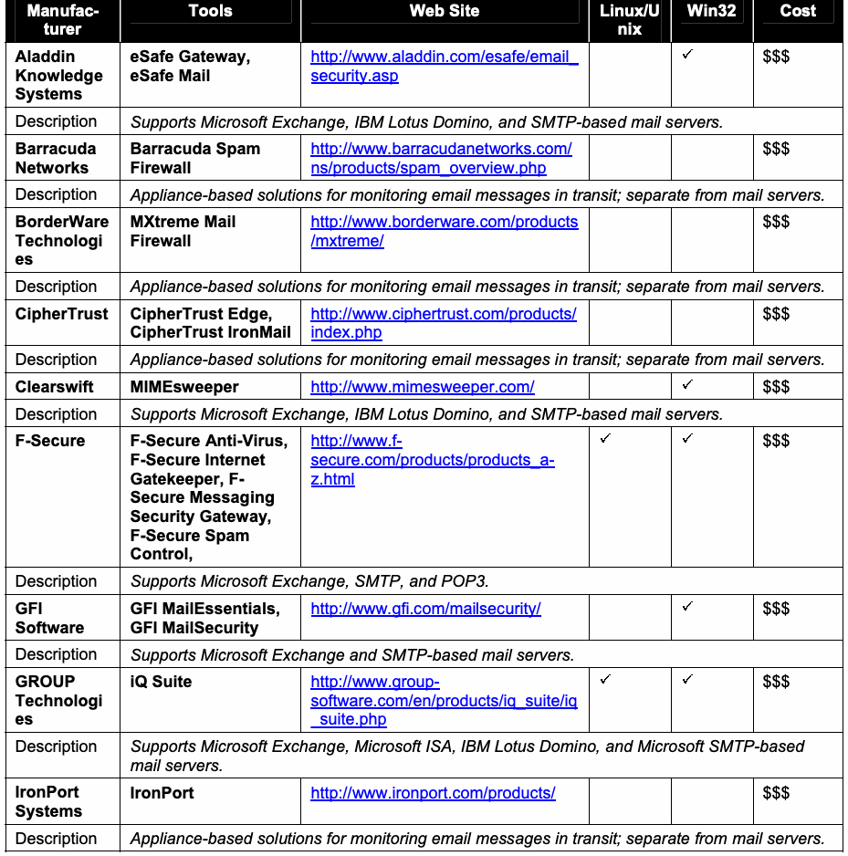
| 製造元／ツール | Webサイト／Linux/Unix／Win32／費用 |
| Aladdin Knowledge Systems / eSafe Gateway, eSafe Mail | http://www.aladdin.com/esafe/email_ security.asp / (cid:57) / $$$ |
| 説明 | Microsoft Exchange、IBM Lotus Domino、SMTPベースのメールサーバーをサポートする。 |
| Barracuda Networks / Barracuda Spam Firewall | http://www.barracudanetworks.com/ ns/products/spam_overview.php / $$$ |
| 説明 | メールサーバーとは別置きのアプライアンス型ソリューションで、転送中の電子メールメッセージを監視する。 |
| BorderWare Technologi es / MXtreme Mail Firewall | http://www.borderware.com/products /mxtreme/ / $$$ |
| 説明 | メールサーバーとは別置きのアプライアンス型ソリューションで、転送中の電子メールメッセージを監視する。 |
| CipherTrust / CipherTrust Edge, CipherTrust IronMail | http://www.ciphertrust.com/products/ index.php / $$$ |
| 説明 | メールサーバーとは別置きのアプライアンス型ソリューションで、転送中の電子メールメッセージを監視する。 |
| Clearswift / MIMEsweeper | http://www.mimesweeper.com/ / (cid:57) / $$$ |
| 説明 | Microsoft Exchange、IBM Lotus Domino、SMTPベースのメールサーバーをサポートする。 |
| F-Secure / F-Secure Anti-Virus, F-Secure Internet Gatekeeper, F- Secure Messaging Security Gateway, F-Secure Spam Control, | http://www.f- secure.com/products/products_a- z.html / (cid:57) / (cid:57) / $$$ |
| 説明 | Microsoft Exchange、SMTP、POP3をサポートする。 |
| GFI Software / GFI MailEssentials, GFI MailSecurity | http://www.gfi.com/mailsecurity/ / (cid:57) / $$$ |
| 説明 | Microsoft ExchangeおよびSMTPベースのメールサーバーをサポートする。 |
| GROUP Technologi es / iQ Suite | http://www.group- software.com/en/products/iq_suite/iq _suite.php / (cid:57) / (cid:57) / $$$ |
| 説明 | Microsoft Exchange、Microsoft ISA、IBM Lotus Domino、MicrosoftのSMTPベースのメールサーバーをサポートする。 |
| IronPort Systems / IronPort | http://www.ironport.com/products/ / $$$ |
| 説明 | メールサーバーとは別置きのアプライアンス型ソリューションで、転送中の電子メールメッセージを監視する。 |
| Manufac- | Tools | Web Site | Linux/U | Win32 | Cost |
| turer | nix | ||||
| Kaspersky Lab | Kaspersky Anti- Spam, Kaspersky Anti-Virus, Kaspersky SMTP- Gateway | http://usa.kaspersky.com/products/c orporate-security.php | (cid:57) | (cid:57) | $$$ |
| Description | Supports Microsoft Exchange, IBM Lotus Domino, and SMTP-based mail servers (including Sendmail, qmail, Postfix, CommuniGate Pro, and Exim). | ||||
| MailScanne r/Julian Field | MailScanner | http://www.mailscanner.info/ | (cid:57) | Free | |
| Description | Typically used with SpamAssassin and ClamAV; supports various SMTP-based mail servers (including Postfix, Exim, and ZMailer) | ||||
| Marshal | MailMarshal | http://www.marshal.com/pages/prod ucts.asp | (cid:57) | $$$ | |
| Description | Supports Microsoft Exchange and SMTP servers. | ||||
| McAfee | McAfee GroupShield, McAfee Secure Messaging, McAfee SpamKiller | http://www.mcafee.com/us/enterpris e/products/anti_virus/email_servers/i ndex.html | (cid:57) | (cid:57) | $$$ |
| Description | Supports Microsoft Exchange, IBM Lotus Domino, and SMTP-based mail servers. | ||||
| Mirapoint | RazorGate | http://www.mirapoint.com/products/ | $$$ | ||
| Description | Appliance-based solutions for monitoring email messages in transit; separate from mail servers. | ||||
| Panda Antivirus | EnterpriSecure | http://www.pandasoftware.com/hom e/empresas/default | (cid:57) | (cid:57) | $$$ |
| Description | Supports Microsoft Exchange, IBM Lotus Domino, and SMTP-based mail servers (including Sendmail, Qmail, and Postfix). | ||||
| Proofpoint | Proofpoint Messaging Security Gateway, Proofpoint Protection Server | http://www.proofpoint.com/products/i ndex.php | (cid:57) | $$$ | |
| Description | Supports SMTP-based mail servers. | ||||
| Sendmail | Sendmail Mailstream, Sendmail Sentrion | http://www.sendmail.com/products/ | (cid:57) | (cid:57) | $$$ |
| Description | Supports SMTP-based mail servers. | ||||
| SonicWALL | SonicWALL Email Security | http://www.sonicwall.com/us/Email_ Security.html | (cid:57) | $$$ | |
| Description | Supports Microsoft Exchange and SMTP-based mail servers. | ||||
| Sophos | Sophos ES4000 Email Security Appliance, Sophos MailMonitor, Sophos PureMessage | http://www.sophos.com/products/es/ gateway/ | (cid:57) | (cid:57) | $$$ |
| Description | Supports Microsoft Exchange, IBM Lotus Domino, and SMTP-based mail servers (including Sendmail, Postfix, Sun Java System Messaging Server, and SunOne Messaging Server). | ||||
| SurfControl | SurfControl E-mail Filter, SurfControl RiskFilter | http://www.surfcontrol.com/ | (cid:57) | $$$ |
原本PDFの抜粋画像
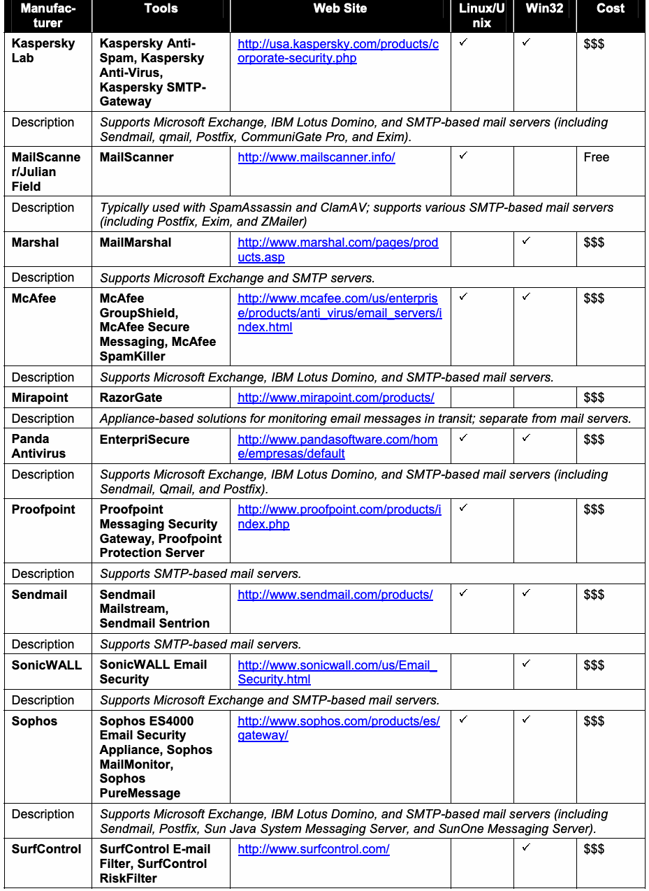
| 製造元 | ツール | Webサイト | Linux/Unix | Win32 | 費用 |
| Kaspersky Lab | Kaspersky Anti- Spam, Kaspersky Anti-Virus, Kaspersky SMTP- Gateway | http://usa.kaspersky.com/products/c orporate-security.php | (cid:57) | (cid:57) | $$$ |
| 説明 | Microsoft Exchange、IBM Lotus Domino、およびSMTPベースのメールサーバー（Sendmail、qmail、Postfix、CommuniGate Pro、Eximなど）をサポートする。 | ||||
| MailScanner / Julian Field | MailScanner | http://www.mailscanner.info/ | (cid:57) | Free | |
| 説明 | 通常SpamAssassinおよびClamAVと併用する。Postfix、Exim、ZMailerなど、さまざまなSMTPベースのメールサーバーをサポートする。 | ||||
| Marshal | MailMarshal | http://www.marshal.com/pages/prod ucts.asp | (cid:57) | $$$ | |
| 説明 | Microsoft ExchangeおよびSMTPサーバーをサポートする。 | ||||
| McAfee | McAfee GroupShield, McAfee Secure Messaging, McAfee SpamKiller | http://www.mcafee.com/us/enterpris e/products/anti_virus/email_servers/i ndex.html | (cid:57) | (cid:57) | $$$ |
| 説明 | Microsoft Exchange、IBM Lotus Domino、SMTPベースのメールサーバーをサポートする。 | ||||
| Mirapoint | RazorGate | http://www.mirapoint.com/products/ | $$$ | ||
| 説明 | メールサーバーとは別置きのアプライアンス型ソリューションで、転送中の電子メールメッセージを監視する。 | ||||
| Panda Antivirus | EnterpriSecure | http://www.pandasoftware.com/hom e/empresas/default | (cid:57) | (cid:57) | $$$ |
| 説明 | Microsoft Exchange、IBM Lotus Domino、およびSMTPベースのメールサーバー（Sendmail、Qmail、Postfixなど）をサポートする。 | ||||
| Proofpoint | Proofpoint Messaging Security Gateway, Proofpoint Protection Server | http://www.proofpoint.com/products/i ndex.php | (cid:57) | $$$ | |
| 説明 | SMTPベースのメールサーバーをサポートする。 | ||||
| Sendmail | Sendmail Mailstream, Sendmail Sentrion | http://www.sendmail.com/products/ | (cid:57) | (cid:57) | $$$ |
| 説明 | SMTPベースのメールサーバーをサポートする。 | ||||
| SonicWALL | SonicWALL Email Security | http://www.sonicwall.com/us/Email_ Security.html | (cid:57) | $$$ | |
| 説明 | Microsoft ExchangeおよびSMTPベースのメールサーバーをサポートする。 | ||||
| Sophos | Sophos ES4000 Email Security Appliance, Sophos MailMonitor, Sophos PureMessage | http://www.sophos.com/products/es/ gateway/ | (cid:57) | (cid:57) | $$$ |
| 説明 | Supports Microsoft Exchange, IBM Lotus Domino, and SMTP-based mail servers (including Sendmail, Postfix, Sun Java System Messaging Server, and SunOne Messaging Server). | ||||
| SurfControl | SurfControl E-mail Filter, SurfControl RiskFilter | http://www.surfcontrol.com/ | (cid:57) | $$$ |
| Manufac- / Tools | Web Site / Linux/U / Win32 / Cost |
| turer | nix |
| Description | Supports Microsoft Exchange, IBM Lotus Domino, GroupWise, Sendmail, and other SMTP- based mail servers. |
| Symantec / Symantec AntiVirus, Symantec Mail Security | http://www.symantec.com/enterprise /products/index.jsp / (cid:57) / (cid:57) / $$$ |
| Description | Supports Microsoft Exchange, IBM Lotus Domino, and SMTP-based mail servers. |
| Trend Micro / ScanMail | http://www.trendmicro.com/en/produ cts/email/overview.htm / (cid:57) / (cid:57) / $$$ |
| Description | Supports Microsoft Exchange and IBM Lotus Domino. |
| Tumblewee d Communica tions / MailGate | http://www.tumbleweed.com/product s/mailgate/index.html / (cid:57) / $$$ |
| Description | Supports Microsoft Exchange and SMTP-based mail servers. |
原本PDFの抜粋画像
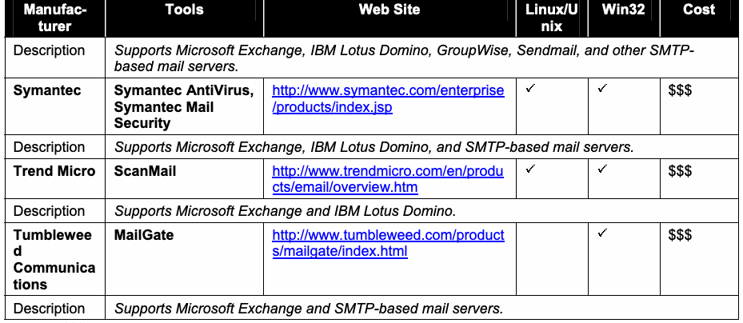
| 製造元／ツール | Webサイト／Linux/Unix／Win32／費用 |
| 説明 | Microsoft Exchange、IBM Lotus Domino、GroupWise、Sendmail、およびその他のSMTPベースのメールサーバーをサポートする。 |
| Symantec / Symantec AntiVirus, Symantec Mail Security | http://www.symantec.com/enterprise /products/index.jsp / (cid:57) / (cid:57) / $$$ |
| 説明 | Microsoft Exchange、IBM Lotus Domino、SMTPベースのメールサーバーをサポートする。 |
| Trend Micro / ScanMail | http://www.trendmicro.com/en/produ cts/email/overview.htm / (cid:57) / (cid:57) / $$$ |
| 説明 | Microsoft ExchangeおよびIBM Lotus Dominoをサポートする。 |
| Tumblewee d Communica tions / MailGate | http://www.tumbleweed.com/product s/mailgate/index.html / (cid:57) / $$$ |
| 説明 | Microsoft ExchangeおよびSMTPベースのメールサーバーをサポートする。 |
$$$=This product involves a fee.
$$$＝有料製品を示す。
未レビュー訳Open Relay Tools
オープンリレー関連ツール
未レビュー訳| Tool | Capabilities | Web Site | Web-Based | Cost |
| Mail Relay Testing Tools | ||||
| DNSExit Mail Relay Testing Tool | Mail Relay Tool | https://www.dnsexit.com/Direct.sv?cmd=t estMailServer | (cid:57) | Free |
| Description | Attempts to Telnet into a mail server at a specified SMTP port and deliver a message to that server. It will detect whether or not the mail server is configured correctly. | |||
| Mail Relay Testing Tool | Mail Relay Tool | http://abuse.net/relay.html | (cid:57) | Free |
| Description | Assists administrators in identifying mail relays. | |||
| Spam Relay Checker | Spam Relay Tool | http://www.3dmail.com/spam/ | (cid:57) | Free |
| Description | Assists system administrators to trace spam sources in hopes of tracking from where the spam is being generated. It will assist in the notification to the Postmaster of the server that it is being misused by spammers. | |||
| Blacklists69 | ||||
| Composite Blocking List (CBL) | Blacklist | http://cbl.abuseat.org/ | (cid:57) | Free |
| Description | The CBL takes its source data from very large spam traps, and only lists IPs exhibiting characteristics which are specific to open proxies of various sorts (HTTP, socks, AnalogX, wingate, etc.) which have been abused to send spam, worms and viruses that do their own direct mail transmission, or some types of Trojan horse or “stealth” spamware, without doing open proxy tests of any kind. |
原本PDFの抜粋画像
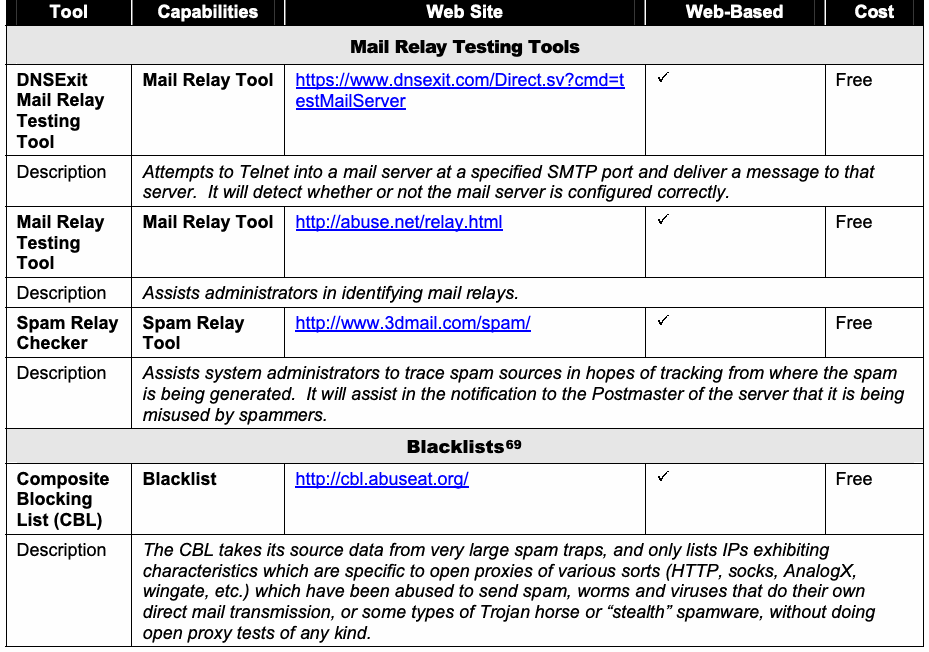
| ツール | 機能 | Webサイト | Webベース | 費用 |
| メールリレー検査ツール | ||||
| DNSExit Mail Relay Testing Tool | メールリレーツール | https://www.dnsexit.com/Direct.sv?cmd=t estMailServer | (cid:57) | 無料 |
| 説明 | 指定したSMTPポートを使ってメールサーバーにTelnet接続し、メッセージを配送しようとする。メールサーバーが正しく構成されているかどうかを検出する。 | |||
| Mail Relay Testing Tool | メールリレーツール | http://abuse.net/relay.html | (cid:57) | 無料 |
| 説明 | 管理者がメールリレーを特定するのに役立つ。 | |||
| Spam Relay Checker | スパムリレーツール | http://www.3dmail.com/spam/ | (cid:57) | 無料 |
| 説明 | システム管理者がスパムの発信元を追跡するのに役立つ。また、サーバーがスパム送信者に悪用されていることを、そのサーバーのポストマスターに通知するのにも役立つ。 | |||
| ブラックリスト69 | ||||
| Composite Blocking List (CBL) | ブラックリスト | http://cbl.abuseat.org/ | (cid:57) | 無料 |
| 説明 | CBLは大規模なスパムトラップからデータを取得し、さまざまな種類のオープンプロキシ（HTTP、SOCKS、AnalogX、WinGateなど）に特有の特徴を示すIPアドレスのみを掲載する。これらは、スパム、自ら直接メールを送信するワームやウイルス、または一部のトロイの木馬や「ステルス型」スパムウェアの送信に悪用されたものである。CBLは、いかなる種類のオープンプロキシテストも行わない。 |
| Tool | Capabilities | Web Site | Web-Based | Cost |
| Distributed Server Boycott List (DSBL) | Blacklist | http://dsbl.org/main | (cid:57) | Free |
| Description | The DSBL lists contain the IP addresses of servers which have relayed special test messages to listme@listme.dsbl.org; this can happen if the server is an open relay, an open proxy, or has another vulnerability that allows anybody to deliver email to anywhere through that server. | |||
| NJABL.OR G | Blacklist | http://njabl.org/ | (cid:57) | Free |
| Description | NJABL.ORG maintains a list of known and potential spam sources (open relays, open proxies, open form to mail HTTP gateways, dynamic IP pools, and direct spammers) for the purpose of being able to tag or refuse email and prevent at least some spam. | |||
| The Spamhaus Block List (SBL) | Blacklist | http://www.spamhaus.org/sbl/ | (cid:57) | Free |
| Description | The SBL is a real-time database of IP addresses of verified spam sources (including spammers, spam gangs, and spam support services), maintained by the Spamhaus Project team and supplied as a free service to help mail administrators better manage incoming email streams. | |||
| MX Record Lookup | ||||
| DNS MX record lookup | MX Record Lookup | http://airlinknetworks.com/exchange/MXre cordLookup.html | (cid:57) | Free |
| Description | This tool allows for lookup of a domain’s MX servers. | |||
| Domain Mail Server/ Exchanger (MX Records) Lookup | MX Record Lookup | http://www.hashemian.com/tools/domain- email.php | (cid:57) | Free |
| Description | This tool attempts to identify the mail servers used by a specified email address. This can be useful to check an email's authenticity, or check who handles email for a certain address. | |||
| MX Record Lookup | MX Record Lookup | http://www.webmaster-toolkit.com/mx- record-lookup.shtml | (cid:57) | Free |
| Description | The MX Record Lookup tool attempts to find out the mail servers used by a specified email address. This can be useful to check an email's authenticity, or check who handles email for a certain address. |
原本PDFの抜粋画像
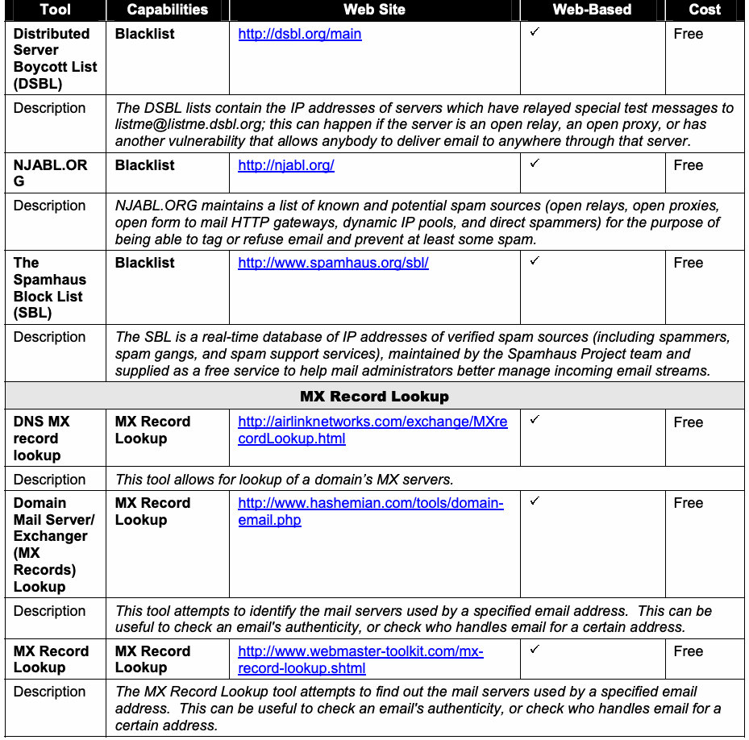
| ツール | 機能 | Webサイト | Webベース | 費用 |
| Distributed Server Boycott List（DSBL） | ブラックリスト | http://dsbl.org/main | (cid:57) | 無料 |
| 説明 | DSBLのリストには、listme@listme.dsbl.org宛ての特別なテストメッセージを中継したサーバーのIPアドレスが含まれる。サーバーがオープンリレー、オープンプロキシである場合や、そのサーバーを介して誰でも任意の宛先へ電子メールを配送できる別の脆弱性がある場合に、この状態が発生し得る。 | |||
| NJABL.ORG | ブラックリスト | http://njabl.org/ | (cid:57) | 無料 |
| 説明 | NJABL.ORGは、既知または潜在的なスパム発信元（オープンリレー、オープンプロキシ、WebフォームからメールへのオープンHTTPゲートウェイ、動的IPアドレスプール、直接スパム送信者）の一覧を管理する。この一覧を使って電子メールにタグを付けるか拒否し、少なくとも一部のスパムを防止できる。 | |||
| Spamhaus Block List（SBL） | ブラックリスト | http://www.spamhaus.org/sbl/ | (cid:57) | 無料 |
| 説明 | SBLは、確認済みのスパム発信元（スパム送信者、スパム集団、スパム支援サービスを含む）のIPアドレスを収録したリアルタイムデータベースである。Spamhaus Projectチームが管理し、メール管理者が受信メールの流れをより適切に管理できるよう、無料サービスとして提供される。 | |||
| MXレコード検索 | ||||
| DNS MXレコード検索 | MXレコード検索 | http://airlinknetworks.com/exchange/MXre cordLookup.html | (cid:57) | 無料 |
| 説明 | ドメインのMXサーバーを検索できる。 | |||
| ドメインメールサーバー／交換サーバー（MXレコード）検索 | MXレコード検索 | http://www.hashemian.com/tools/domain- email.php | (cid:57) | 無料 |
| 説明 | 指定した電子メールアドレスが使用するメールサーバーを特定する。この機能は、電子メールの真正性や、そのアドレスのメールを処理する事業者を確認するのに役立つ。 | |||
| MXレコード検索 | MXレコード検索 | http://www.webmaster-toolkit.com/mx- record-lookup.shtml | (cid:57) | 無料 |
| 説明 | MX Record Lookupツールは、指定した電子メールアドレスが使用するメールサーバーを特定しようとする。この機能は、電子メールの真正性や、そのアドレスのメールを処理する事業者を確認するのに役立つ。 |
Appendix E—Online Email Security Resources
付録E — オンラインの電子メールセキュリティリソース
未レビュー訳This appendix contains lists of online resources that may be helpful to mail server administrators and others in achieving a greater understanding of email security and in securing their mail servers, clients, and other mail system components.
この付録には、メールサーバー管理者などが電子メールセキュリティへの理解を深め、メールサーバー、クライアント、その他のメールシステム構成要素を保護するのに役立つ可能性のあるオンラインリソースの一覧を掲載する。
General Security Resources
一般的なセキュリティリソース
未レビュー訳| Resource/Title | URL |
| Center for Education and Research in Information Assurance and Security (CERIAS) | http://www.cerias.purdue.edu/ |
| CERT/CC | http://www.cert.org/ |
| Computer Security Resource Center (CSRC) | http://csrc.nist.gov/ |
| National Information Assurance Partnership (NIAP) | http://www.niap.nist.gov/ |
| National Vulnerability Database (NVD) | http://nvd.nist.gov/ |
| Office of Management and Budget Circular No. A-130 | http://www.whitehouse.gov/omb/circulars/a130/a130tr ans4.html |
| Open Source Vulnerability Database (OSVDB) | http://www.osvdb.org/ |
| RISKS Forum | http://catless.ncl.ac.uk/Risks/ |
| Security Configuration Checklists Program for IT Products | http://checklists.nist.gov/ |
| SecurityFocus Vulnerability Database | http://www.securityfocus.com/vulnerabilities |
| U.S. Computer Emergency Response Team (US-CERT) | http://www.us-cert.gov/ |
| U.S. Department of Energy Computer Incident Advisory Capability (CIAC) | http://www.ciac.org/ciac/ |
原本PDFの抜粋画像
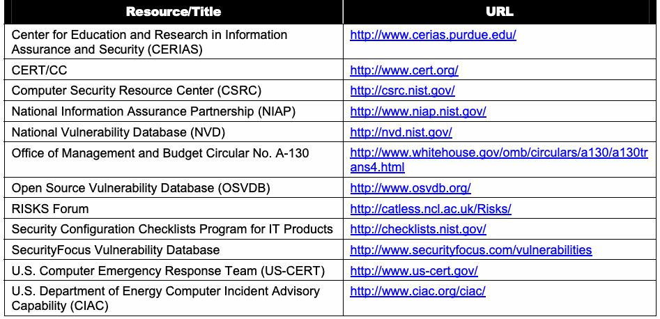
| リソース／名称 | URL |
| Center for Education and Research in Information Assurance and Security (CERIAS) | http://www.cerias.purdue.edu/ |
| CERT/CC | http://www.cert.org/ |
| Computer Security Resource Center (CSRC) | http://csrc.nist.gov/ |
| National Information Assurance Partnership (NIAP) | http://www.niap.nist.gov/ |
| National Vulnerability Database (NVD) | http://nvd.nist.gov/ |
| Office of Management and Budget Circular No. A-130 | http://www.whitehouse.gov/omb/circulars/a130/a130tr ans4.html |
| Open Source Vulnerability Database (OSVDB) | http://www.osvdb.org/ |
| RISKS Forum | http://catless.ncl.ac.uk/Risks/ |
| Security Configuration Checklists Program for IT Products | http://checklists.nist.gov/ |
| SecurityFocus Vulnerability Database | http://www.securityfocus.com/vulnerabilities |
| U.S. Computer Emergency Response Team (US-CERT) | http://www.us-cert.gov/ |
| U.S. Department of Energy Computer Incident Advisory Capability (CIAC) | http://www.ciac.org/ciac/ |
General Email and Email Security Resources
電子メールおよび電子メールセキュリティの一般的なリソース
未レビュー訳| Resource/Title | URL |
| Email Issues, SANS Reading Room | http://www.sans.org/rr/whitepapers/email/ |
| Internet Mail Consortium | http://www.imc.org/ |
| Tips and Tricks Guide to Secure Messaging | http://www.microsoft.com/securemessaging/ebook/default.mspx |
原本PDFの抜粋画像
| リソース／名称 | URL |
| Email Issues, SANS Reading Room | http://www.sans.org/rr/whitepapers/email/ |
| Internet Mail Consortium | http://www.imc.org/ |
| Tips and Tricks Guide to Secure Messaging | http://www.microsoft.com/securemessaging/ebook/default.mspx |
Email Encryption Resources
電子メール暗号化リソース
未レビュー訳| Resource/Title | URL |
| Guide to Using S/MIME | http://www.mozilla.org/projects/security/pki/psm/smime_guide.html |
| IETF OpenPGP Working Group | http://www.ietf.org/html.charters/openpgp-charter.html |
| IETF S/MIME Working Group | http://www.ietf.org/html.charters/smime-charter.html |
| OpenPGP Alliance | http://www.openpgp.org/ |
| S/MIME Gateway Certification | http://www.opengroup.org/smg/cert/ |
| Securing Email Through Proxies: Smap and Stunnel | http://www.sans.org/reading_room/whitepapers/email/579.php |
| Securing POP Mail on Windows Clients | http://sewpsc.sewp.nasa.gov/documents/pop.mail.pdf |
| Securing POP Mail on Windows Clients | http://csrc.nist.gov/fasp/FASPDocs/SecurPOPwSSH.htm |
原本PDFの抜粋画像
| リソース／名称 | URL |
| Guide to Using S/MIME | http://www.mozilla.org/projects/security/pki/psm/smime_guide.html |
| IETF OpenPGP Working Group | http://www.ietf.org/html.charters/openpgp-charter.html |
| IETF S/MIME Working Group | http://www.ietf.org/html.charters/smime-charter.html |
| OpenPGP Alliance | http://www.openpgp.org/ |
| S/MIME Gateway Certification | http://www.opengroup.org/smg/cert/ |
| Securing Email Through Proxies: Smap and Stunnel | http://www.sans.org/reading_room/whitepapers/email/579.php |
| Securing POP Mail on Windows Clients | http://sewpsc.sewp.nasa.gov/documents/pop.mail.pdf |
| Securing POP Mail on Windows Clients | http://csrc.nist.gov/fasp/FASPDocs/SecurPOPwSSH.htm |
E-1
E-1
未レビュー訳Malware and Spyware Resources
マルウェアおよびスパイウェアのリソース
未レビュー訳| Resource/Title | URL |
| Anti-Spyware Coalition (ASC) | http://www.antispywarecoalition.org/ |
| Anti-Virus Information Exchange Network (AVIEN) | http://www.avien.org/ |
| Common Malware Enumeration (CME) | http://cme.mitre.org/ |
| Computer Antivirus Research Organization (CARO) | http://www.caro.org/ |
| European Institute for Computer Antivirus Research (EICAR) | http://www.eicar.org/ |
| SecurityFocus Virus | http://www.securityfocus.com/virus/ |
| Spywaredata.com | http://www.spywaredata.com/ |
| Virus Bulletin | http://www.virusbtn.com/ |
| Viruslist.com | http://www.viruslist.com/en/ |
| WildList Organization International | http://www.wildlist.org/ |
原本PDFの抜粋画像
| リソース／名称 | URL |
| Anti-Spyware Coalition (ASC) | http://www.antispywarecoalition.org/ |
| Anti-Virus Information Exchange Network (AVIEN) | http://www.avien.org/ |
| Common Malware Enumeration (CME) | http://cme.mitre.org/ |
| Computer Antivirus Research Organization (CARO) | http://www.caro.org/ |
| European Institute for Computer Antivirus Research (EICAR) | http://www.eicar.org/ |
| SecurityFocus Virus | http://www.securityfocus.com/virus/ |
| Spywaredata.com | http://www.spywaredata.com/ |
| Virus Bulletin | http://www.virusbtn.com/ |
| Viruslist.com | http://www.viruslist.com/en/ |
| WildList Organization International | http://www.wildlist.org/ |
Phishing Resources
フィッシング関連リソース
未レビュー訳| Resource/Title | URL |
| Anti-Phishing Working Group (APWG) | http://www.antiphishing.org/ |
| FTC, “How Not to Get Hooked by a ‘Phishing’ Scam” | http://ftc.gov/bcp/conline/pubs/alerts/phishingalrt.htm |
| Internet Crime Complaint Center (ICCC) | http://www.ic3.gov/ |
| Phish Report Network | http://www.phishreport.net/ |
原本PDFの抜粋画像
| リソース／名称 | URL |
| Anti-Phishing Working Group (APWG) | http://www.antiphishing.org/ |
| FTC, “How Not to Get Hooked by a ‘Phishing’ Scam” | http://ftc.gov/bcp/conline/pubs/alerts/phishingalrt.htm |
| Internet Crime Complaint Center (ICCC) | http://www.ic3.gov/ |
| Phish Report Network | http://www.phishreport.net/ |
Spam Resources
スパム関連リソース
未レビュー訳| Resource/Title | URL |
| Coalition Against Unsolicited Commercial Email (CAUCE) | http://www.cauce.org/ |
| Distributed Server Blackhole List (DSBL) | http://www.dsbl.org/ |
| Federal Trade Commission (FTC) Spam Home Page | http://www.ftc.gov/spam/ |
| GetNetWise | http://spam/getnetwise.org/ |
| Messaging Anti-Abuse Working Group | http://www.maawg.org/ |
| Not Just Another Bogus List | http://njabl.org/ |
| OnGuard Online | http://onguardonline.gov/index.html |
| Open Relay Database | http://www.ordb.org/ |
| Spam.abuse.net | http://spam.abuse.net/ |
| Spamhaus | http://www.spamhaus.org/ |
| Spam Prevention Early Warning System (SPEWS) | http://www.spews.org/ |
| SPAM-L Mailing List Frequently Asked Questions (FAQ) | http://www.claws-and-paws.com/spam-l |
原本PDFの抜粋画像
| リソース／名称 | URL |
| Coalition Against Unsolicited Commercial Email (CAUCE) | http://www.cauce.org/ |
| Distributed Server Blackhole List (DSBL) | http://www.dsbl.org/ |
| Federal Trade Commission (FTC) Spam Home Page | http://www.ftc.gov/spam/ |
| GetNetWise | http://spam/getnetwise.org/ |
| Messaging Anti-Abuse Working Group | http://www.maawg.org/ |
| Not Just Another Bogus List | http://njabl.org/ |
| OnGuard Online | http://onguardonline.gov/index.html |
| Open Relay Database | http://www.ordb.org/ |
| Spam.abuse.net | http://spam.abuse.net/ |
| Spamhaus | http://www.spamhaus.org/ |
| Spam Prevention Early Warning System (SPEWS) | http://www.spews.org/ |
| SPAM-L Mailing List Frequently Asked Questions (FAQ) | http://www.claws-and-paws.com/spam-l |
E-2
E-2
未レビュー訳Mail Server Security Patch Resources
メールサーバーのセキュリティパッチに関するリソース
未レビュー訳| Server/Manufacturer | URL |
| 602LAN Suite (Software602) | http://www.software602.com/products/ls/ |
| ArGoSoft Mail Server (ArGoSoft) | http://www.argosoft.com/rootpages/Download.aspx |
| CommuniGate Pro (Stalker Software) | http://www.stalker.com/CommuniGatePro/ |
| Eudora Internet Mail Server (EIMS) (Glenn Anderson) | http://www.eudora.co.nz/updates.html |
| Eudora WorldMail Server (Qualcomm) | http://www.eudora.com/download/worldmail/ |
| Exim (Exim) | http://www.exim.org/ |
| IMail Server (Ipswitch) | http://www.ipswitch.com/support/imail/patch-upgrades.asp |
| inFusion Mail Server (CoolFusion) | http://www.coolfusion.com/downloads/ |
| Kaspersky SMTP Gateway for UNIX (Kaspersky) | http://www.kaspersky.com/productupdates/ |
| Kerio MailServer (Kerio Technologies) | http://www.kerio.com/subscription.html |
| Lotus Domino (IBM) | http://www- 132.ibm.com/content/home/store_IBMPublicUSA/en_US/Upgr ades.html |
| MailEnable (MailEnable) | http://www.mailenable.com/hotfix/default.asp |
| MailMax (Smartmax Software) | http://www.smartmax.com/mmupgradecenter.aspx |
| MailSite (Rockliffe) | http://www.rockliffe.com/userroom/download.asp |
| MDaemon (alt-n Technologies) | http://www.altn.com/download/default.asp?product_id=MDaem on |
| Merak Mail Server (Merak) | http://www.merakmailserver.com/Download/ |
| Microsoft Exchange (Microsoft) | http://www.microsoft.com/technet/prodtechnol/exchange/downl oads/2003/default.mspx |
| Postfix (Wietse Venema) | http://www.postfix.org/download.html |
| Sendmail (commercial version) (Sendmail, Inc.) | http://www.sendmail.com/support/ |
| sendmail (freeware version) (Sendmail Consortium) | http://www.sendmail.org/ |
| Xmail (Davide Libenzi) | http://www.xmailserver.org/ |
原本PDFの抜粋画像
| サーバー／製造元 | URL |
| 602LAN Suite (Software602) | http://www.software602.com/products/ls/ |
| ArGoSoft Mail Server (ArGoSoft) | http://www.argosoft.com/rootpages/Download.aspx |
| CommuniGate Pro (Stalker Software) | http://www.stalker.com/CommuniGatePro/ |
| Eudora Internet Mail Server (EIMS) (Glenn Anderson) | http://www.eudora.co.nz/updates.html |
| Eudora WorldMail Server (Qualcomm) | http://www.eudora.com/download/worldmail/ |
| Exim (Exim) | http://www.exim.org/ |
| IMail Server (Ipswitch) | http://www.ipswitch.com/support/imail/patch-upgrades.asp |
| inFusion Mail Server (CoolFusion) | http://www.coolfusion.com/downloads/ |
| Kaspersky SMTP Gateway for UNIX (Kaspersky) | http://www.kaspersky.com/productupdates/ |
| Kerio MailServer (Kerio Technologies) | http://www.kerio.com/subscription.html |
| Lotus Domino (IBM) | http://www- 132.ibm.com/content/home/store_IBMPublicUSA/en_US/Upgr ades.html |
| MailEnable (MailEnable) | http://www.mailenable.com/hotfix/default.asp |
| MailMax (Smartmax Software) | http://www.smartmax.com/mmupgradecenter.aspx |
| MailSite (Rockliffe) | http://www.rockliffe.com/userroom/download.asp |
| MDaemon (alt-n Technologies) | http://www.altn.com/download/default.asp?product_id=MDaem on |
| Merak Mail Server (Merak) | http://www.merakmailserver.com/Download/ |
| Microsoft Exchange (Microsoft) | http://www.microsoft.com/technet/prodtechnol/exchange/downl oads/2003/default.mspx |
| Postfix (Wietse Venema) | http://www.postfix.org/download.html |
| Sendmail (commercial version) (Sendmail, Inc.) | http://www.sendmail.com/support/ |
| sendmail (freeware version) (Sendmail Consortium) | http://www.sendmail.org/ |
| Xmail (Davide Libenzi) | http://www.xmailserver.org/ |
Mail Client Security Patch Resources
メールクライアントのセキュリティパッチに関するリソース
未レビュー訳| Client/Manufacturer | URL |
| Balsa (GNOME Project) | http://balsa.gnome.org/download.html |
| Barca (Poco Systems) | http://www.pocosystems.com/home/index.php?option=content&task= category§ionid=2&id=21&Itemid=38 |
| Eudora (Qualcomm) | http://www.eudora.com/download/ |
| Eureka Email | http://www.eureka-email.com/Download.html |
| GNUMail.app (Collaboration-world.com) | http://www.collaboration-world.com/cgi-bin/project/release.cgi?pid=2 |
| GyazMail (GyazSquare) | http://www.gyazsquare.com/gyazmail/download.php |
| i.Scribe (Memecode Software) | http://www.memecode.com/scribe.php |
| InScribe (Memecode Software) | http://www.memecode.com/inscribe.php |
| KMail | http://kmail.kde.org/download.html |
| Mac OS X Mail (Apple) | http://www.apple.com/support/panther/mail/ |
原本PDFの抜粋画像
| クライアント／製造元 | URL |
| Balsa (GNOME Project) | http://balsa.gnome.org/download.html |
| Barca (Poco Systems) | http://www.pocosystems.com/home/index.php?option=content&task= category§ionid=2&id=21&Itemid=38 |
| Eudora (Qualcomm) | http://www.eudora.com/download/ |
| Eureka Email | http://www.eureka-email.com/Download.html |
| GNUMail.app (Collaboration-world.com) | http://www.collaboration-world.com/cgi-bin/project/release.cgi?pid=2 |
| GyazMail (GyazSquare) | http://www.gyazsquare.com/gyazmail/download.php |
| i.Scribe (Memecode Software) | http://www.memecode.com/scribe.php |
| InScribe (Memecode Software) | http://www.memecode.com/inscribe.php |
| KMail | http://kmail.kde.org/download.html |
| Mac OS X Mail (Apple) | http://www.apple.com/support/panther/mail/ |
E-3
E-3
未レビュー訳| Client/Manufacturer | URL |
| Mailsmith (Bare Bones Software) | http://www.barebones.com/support/mailsmith/updates.shtml |
| Mercury Mail Transport System (David Harris) | http://www.pmail.com/patches.htm |
| Mozilla | http://www.mozilla.org/security/ |
| Mutt | http://www.mutt.org/download.html |
| Nisus Email (Nisus Software) | http://www.nisus.com/NisusEmail/FAQ.php?PHPSESSID=0ba9f9639 672d1fdf836a97f3ad29383#HowUpgradeOS9 |
| Outlook (Microsoft Corporation) | http://office.microsoft.com/en-us/officeupdate/default.aspx |
| Outlook Express (Microsoft Corporation) | http://www.microsoft.com/downloads/search.aspx?displaylang=en&c ategoryid=7 |
| Pegasus Mail (David Harris) | http://www.pmail.com/patches.htm |
| Pine (University of Washington) | http://www.washington.edu/pine/getpine/ |
| PocoMail (Poco Systems, Inc.) | http://www.pocosystems.com/home/ |
| Sylpheed | http://sylpheed.good-day.net/en/ |
| Thunderbird (Mozilla) | http://www.mozilla.com/thunderbird/ |
| VM | http://www.wonderworks.com/vm/download.html |
原本PDFの抜粋画像
| クライアント／製造元 | URL |
| Mailsmith (Bare Bones Software) | http://www.barebones.com/support/mailsmith/updates.shtml |
| Mercury Mail Transport System (David Harris) | http://www.pmail.com/patches.htm |
| Mozilla | http://www.mozilla.org/security/ |
| Mutt | http://www.mutt.org/download.html |
| Nisus Email (Nisus Software) | http://www.nisus.com/NisusEmail/FAQ.php?PHPSESSID=0ba9f9639 672d1fdf836a97f3ad29383#HowUpgradeOS9 |
| Outlook (Microsoft Corporation) | http://office.microsoft.com/en-us/officeupdate/default.aspx |
| Outlook Express (Microsoft Corporation) | http://www.microsoft.com/downloads/search.aspx?displaylang=en&c ategoryid=7 |
| Pegasus Mail (David Harris) | http://www.pmail.com/patches.htm |
| Pine (University of Washington) | http://www.washington.edu/pine/getpine/ |
| PocoMail (Poco Systems, Inc.) | http://www.pocosystems.com/home/ |
| Sylpheed | http://sylpheed.good-day.net/en/ |
| Thunderbird (Mozilla) | http://www.mozilla.com/thunderbird/ |
| VM | http://www.wonderworks.com/vm/download.html |
NIST Publications on System and Network Security70
システムおよびネットワークセキュリティに関するNIST刊行物70
未レビュー訳| Publication | URL |
| SP 800-18 Revision 1, Guide to Developing Security Plans for Information Technology Systems | http://csrc.nist.gov/publications/nistpubs/800-18- Rev1/sp800-18-Rev1-final.pdf |
| SP 800-26, Security Self-Assessment Guide for Information Technology Systems | http://csrc.nist.gov/publications/nistpubs/800-26/sp800- 26.pdf |
| SP 800-27, Engineering Principles for Information Technology Security | http://csrc.nist.gov/publications/nistpubs/800- 27A/SP800-27-RevA.pdf |
| SP 800-28, Guidelines on Active Content and Mobile Code | http://csrc.nist.gov/publications/nistpubs/800-28/sp800- 28.pdf |
| SP 800-32, Introduction to Public Key Technology and the Federal PKI Infrastructure | http://csrc.nist.gov/publications/nistpubs/800-32/sp800- 32.pdf |
| SP 800-34, Contingency Planning Guide for Information Technology Systems | http://csrc.nist.gov/publications/nistpubs/800-34/sp800- 34.pdf |
| SP 800-37, Federal Guidelines for the Security Certification and Accreditation of Information Technology Systems | http://csrc.nist.gov/publications/nistpubs/800-37/SP800- 37-final.pdf |
| SP 800-40 Version 2, Creating a Patch and Vulnerability Management Program | http://csrc.nist.gov/publications/nistpubs/800-40- Ver2/SP800-40v2.pdf |
| SP 800-41, Guide to Firewall Selection and Policy Recommendations | http://csrc.nist.gov/publications/nistpubs/800-41/sp800- 41.pdf |
| SP 800-42, Guideline on Network Security Testing | http://csrc.nist.gov/publications/nistpubs/800-42/NIST- SP800-42.pdf |
| SP 800-43, Guide to Securing Windows 2000 Professional | http://csrc.nist.gov/itsec/guidance_W2Kpro.html |
原本PDFの抜粋画像
| 刊行物 | URL |
| SP 800-18 Revision 1, Guide to Developing Security Plans for Information Technology Systems | http://csrc.nist.gov/publications/nistpubs/800-18- Rev1/sp800-18-Rev1-final.pdf |
| SP 800-26, Security Self-Assessment Guide for Information Technology Systems | http://csrc.nist.gov/publications/nistpubs/800-26/sp800- 26.pdf |
| SP 800-27, Engineering Principles for Information Technology Security | http://csrc.nist.gov/publications/nistpubs/800- 27A/SP800-27-RevA.pdf |
| SP 800-28, Guidelines on Active Content and Mobile Code | http://csrc.nist.gov/publications/nistpubs/800-28/sp800- 28.pdf |
| SP 800-32, Introduction to Public Key Technology and the Federal PKI Infrastructure | http://csrc.nist.gov/publications/nistpubs/800-32/sp800- 32.pdf |
| SP 800-34, Contingency Planning Guide for Information Technology Systems | http://csrc.nist.gov/publications/nistpubs/800-34/sp800- 34.pdf |
| SP 800-37, Federal Guidelines for the Security Certification and Accreditation of Information Technology Systems | http://csrc.nist.gov/publications/nistpubs/800-37/SP800- 37-final.pdf |
| SP 800-40 Version 2, Creating a Patch and Vulnerability Management Program | http://csrc.nist.gov/publications/nistpubs/800-40- Ver2/SP800-40v2.pdf |
| SP 800-41, Guide to Firewall Selection and Policy Recommendations | http://csrc.nist.gov/publications/nistpubs/800-41/sp800- 41.pdf |
| SP 800-42, Guideline on Network Security Testing | http://csrc.nist.gov/publications/nistpubs/800-42/NIST- SP800-42.pdf |
| SP 800-43, Guide to Securing Windows 2000 Professional | http://csrc.nist.gov/itsec/guidance_W2Kpro.html |
| Publication | URL |
| SP 800-44, Guidelines on Securing Public Web Servers | http://csrc.nist.gov/publications/nistpubs/800-44/sp800- 44.pdf |
| SP 800-46, Security for Telecommuting and Broadband Communications | http://csrc.nist.gov/publications/nistpubs/800-46/sp800- 46.pdf |
| SP 800-52, Guidelines for the Selection and Use of Transport Layer Security Implementations | http://csrc.nist.gov/publications/nistpubs/800-52/SP800- 52.pdf |
| SP 800-53 Revision 1, Recommended Security Controls for Federal Information Systems | http://csrc.nist.gov/publications/nistpubs/800-53- Rev1/800-53-rev1-final-clean-sz.pdf |
| SP 800-61, Computer Security Incident Handling Guide | http://csrc.nist.gov/publications/nistpubs/800-61/sp800- 61.pdf |
| SP 800-63, Electronic Authentication Guideline | http://csrc.nist.gov/publications/nistpubs/800-63/SP800- 63v6_3_3.pdf |
| SP 800-68, Guidance for Securing Microsoft Windows XP Systems for IT Professionals | http://csrc.nist.gov/itsec/download_WinXP.html |
| SP 800-69, Guidance for Securing Microsoft Windows XP Home Edition: A NIST Security Configuration Checklist | http://csrc.nist.gov/itsec/guidance_WinXP_Home.html |
| SP 800-83, Guide to Malware Incident Prevention and Handling | http://csrc.nist.gov/publications/nistpubs/800-83/SP800- 83.pdf |
| SP 800-86, Guide to Integrating Forensic Techniques into Incident Response | http://csrc.nist.gov/publications/nistpubs/800-86/SP800- 86.pdf |
| SP 800-92, Guide to Computer Security Log Management | http://csrc.nist.gov/publications/nistpubs/800-92/SP800- 92.pdf |
| SP 800-94, Guide to Intrusion Detection and Prevention Systems (IDPS) | http://csrc.nist.gov/publications/nistpubs/ |
原本PDFの抜粋画像
| 刊行物 | URL |
| SP 800-44, Guidelines on Securing Public Web Servers | http://csrc.nist.gov/publications/nistpubs/800-44/sp800- 44.pdf |
| SP 800-46, Security for Telecommuting and Broadband Communications | http://csrc.nist.gov/publications/nistpubs/800-46/sp800- 46.pdf |
| SP 800-52, Guidelines for the Selection and Use of Transport Layer Security Implementations | http://csrc.nist.gov/publications/nistpubs/800-52/SP800- 52.pdf |
| SP 800-53 Revision 1, Recommended Security Controls for Federal Information Systems | http://csrc.nist.gov/publications/nistpubs/800-53- Rev1/800-53-rev1-final-clean-sz.pdf |
| SP 800-61, Computer Security Incident Handling Guide | http://csrc.nist.gov/publications/nistpubs/800-61/sp800- 61.pdf |
| SP 800-63, Electronic Authentication Guideline | http://csrc.nist.gov/publications/nistpubs/800-63/SP800- 63v6_3_3.pdf |
| SP 800-68, Guidance for Securing Microsoft Windows XP Systems for IT Professionals | http://csrc.nist.gov/itsec/download_WinXP.html |
| SP 800-69, Guidance for Securing Microsoft Windows XP Home Edition: A NIST Security Configuration Checklist | http://csrc.nist.gov/itsec/guidance_WinXP_Home.html |
| SP 800-83, Guide to Malware Incident Prevention and Handling | http://csrc.nist.gov/publications/nistpubs/800-83/SP800- 83.pdf |
| SP 800-86, Guide to Integrating Forensic Techniques into Incident Response | http://csrc.nist.gov/publications/nistpubs/800-86/SP800- 86.pdf |
| SP 800-92, Guide to Computer Security Log Management | http://csrc.nist.gov/publications/nistpubs/800-92/SP800- 92.pdf |
| SP 800-94, Guide to Intrusion Detection and Prevention Systems (IDPS) | http://csrc.nist.gov/publications/nistpubs/ |
E-5
E-5
未レビュー訳This page has been left blank intentionally.
このページは意図的に空白にしてある。
未レビュー訳E-6
E-6
未レビュー訳Appendix F—Email Security Checklists
付録F — 電子メールセキュリティのチェックリスト
未レビュー訳Planning and Managing Mail Servers
メールサーバーの計画と管理
未レビュー訳| Completed | Action |
| Plan the installation and deployment of mail server | |
| Identify functions of the mail server | |
| Identify categories of information that will be stored on, processed on, and | |
| transmitted through the mail server | |
| Identify security requirements of information | |
| Identify requirements for continuity of mail services | |
| Identify a dedicated host to run the mail server | |
| Identify network services that will be provided or supported by the mail server | |
| Identify users and categories of users of the mail server and determine privilege | |
| for each category of user | |
| Determine how the mail server will be managed (e.g., locally, remotely) | |
| Identify user authentication methods for the mail server | |
| Identify security or privacy requirements for email address-related information | |
| Choose appropriate operating system for mail server | |
| Minimal exposure to vulnerabilities | |
| Ability to restrict administrative or root level activities to authorized users only | |
| Ability to deny access to information on the server other than that intended to | |
| be available | |
| Ability to disable unnecessary network services that may be built into the | |
| operating system or server software | |
| Ability to log appropriate server activities to detect intrusions and attempted | |
| intrusions | |
| Availability of trained, experienced staff to administer the server and server | |
| products | |
| Plan the location of the mail server | |
| Appropriate physical security protection mechanisms | |
| Appropriate environmental controls to maintain the necessary temperature and | |
| humidity | |
| Backup power source | |
| Preparation for known natural disasters |
原本PDFの抜粋画像
| 完了 | 対策 |
| メールサーバーのインストールと導入を計画する | |
| メールサーバーの機能を特定する | |
| メールサーバーに保存、処理、または | |
| メールサーバーを通じて送信される情報の分類を特定する | |
| 情報のセキュリティ要件を特定する | |
| メールサービスの継続性要件を特定する | |
| メールサーバーを稼働させる専用ホストを決定する | |
| メールサーバーが提供または支援するネットワークサービスを特定する | |
| メールサーバーのユーザーとユーザー区分を特定し、各区分の権限を決定する | |
| 各ユーザー区分の権限を決定する | |
| メールサーバーの管理方法（例：ローカル、リモート）を決定する | |
| メールサーバーのユーザー認証方法を特定する | |
| 電子メールアドレスに関連する情報のセキュリティ要件またはプライバシー要件を特定する | |
| メールサーバーに適したオペレーティングシステムを選択する | |
| 脆弱性への露出を最小限に抑える | |
| 管理者またはrootレベルの操作を認可されたユーザーのみに制限できる | |
| 本来公開することを意図した情報以外のサーバー情報へのアクセスを拒否できる | |
| 公開を意図した情報のみ利用可能にする | |
| オペレーティングシステムまたはサーバーソフトウェアに組み込まれた不要なネットワークサービスを無効化できる | |
| 不要なネットワークサービスを無効化できる | |
| 侵入および侵入の試みを検出するため、適切なサーバー活動を記録できる | |
| 侵入の試みも記録する | |
| サーバーおよびサーバー製品を管理する訓練済みで経験豊富な職員を確保する | |
| サーバー製品を管理する職員を確保する | |
| メールサーバーの設置場所を計画する | |
| 適切な物理的セキュリティ保護策 | |
| 必要な温度および湿度を維持する適切な環境制御 | |
| 湿度を維持する | |
| バックアップ電源 | |
| 既知の自然災害への備え |
F-1
F-1
未レビュー訳Securing the Mail Server Operating System
メールサーバーのオペレーティングシステムの保護
未レビュー訳| Completed | Action |
| Patch and upgrade operating system | |
| Create and implement a patching process | |
| Identify, test, and install all necessary patches and upgrades to the operating | |
| system | |
| Remove or disable unnecessary services and applications | |
| Remove or disable unnecessary services and applications | |
| Use separate hosts for Web servers, directory servers, and other services | |
| Configure operating system user authentication | |
| Remove or disable unneeded default accounts and groups | |
| Disable non-interactive accounts | |
| Create the user groups for the particular computer | |
| Create the user accounts for the particular computer | |
| Check the organization’s password policy, and set account passwords | |
| appropriately (e.g., length, complexity) | |
| Configure computers to prevent password guessing | |
| Install and configure other security mechanisms to strengthen authentication | |
| Configure resource controls appropriately | |
| Set access controls for files, directories, devices, and other resources | |
| Limit privileges for most system-related tools to authorized system | |
| administrators | |
| Install and configure additional security controls | |
| Select, install, and configure additional software to provide needed controls not | |
| included in the operating system | |
| Test the security of the operating system | |
| Test operating system after initial install to determine vulnerabilities | |
| Test operating system periodically to determine new vulnerabilities |
原本PDFの抜粋画像
| 完了 | 対策 |
| オペレーティングシステムにパッチを適用し、アップグレードする | |
| パッチ適用プロセスを作成し、実施する | |
| オペレーティングシステムに必要なすべてのパッチとアップグレードを特定、テストし、インストールする | |
| オペレーティングシステムに適用する | |
| 不要なサービスとアプリケーションを削除または無効にする | |
| 不要なサービスとアプリケーションを削除または無効にする | |
| Webサーバー、ディレクトリサーバー、その他のサービスには別々のホストを使用する | |
| オペレーティングシステムのユーザー認証を構成する | |
| 不要な既定のアカウントおよびグループを削除または無効にする | |
| 非対話型アカウントを無効にする | |
| 対象コンピューター用のユーザーグループを作成する | |
| 対象コンピューター用のユーザーアカウントを作成する | |
| 組織のパスワードポリシーを確認し、アカウントパスワードを適切に設定する | |
| （例：長さ、複雑さ） | |
| パスワード推測を防止するようコンピューターを構成する | |
| 認証を強化するその他のセキュリティ機構をインストールし、構成する | |
| リソース制御を適切に構成する | |
| ファイル、ディレクトリ、デバイス、その他のリソースにアクセス制御を設定する | |
| システム関連ツールの大半の権限を、認可されたシステム | |
| 管理者に制限する | |
| 追加のセキュリティ制御をインストールし、構成する | |
| オペレーティングシステムに含まれない必要な制御を提供する追加ソフトウェアを選定、インストール、構成する | |
| OSに含まれない制御を補う | |
| オペレーティングシステムのセキュリティをテストする | |
| 初期インストール後にオペレーティングシステムをテストし、脆弱性を特定する | |
| オペレーティングシステムを定期的にテストし、新たな脆弱性を特定する |
Securing Mail Servers and Content
メールサーバーおよびコンテンツの保護
未レビュー訳| Completed | Action |
| Harden the mail server application | |
| Install the mail server software on a dedicated host (if Web-based mail access is | |
| desired, install the mail server software on a different host from the Web server) | |
| Apply any patches or upgrades to correct for known vulnerabilities | |
| Create a dedicated physical disk or logical partition (separate from operating | |
| system and mail server application) for mailboxes, or host the mailboxes on a | |
| separate server | |
| Remove or disable all services installed by the mail server application but not | |
| required (e.g., Web-based mail, FTP, remote administration) |
原本PDFの抜粋画像
| 完了 | 対策 |
| メールサーバーアプリケーションを強化する | |
| メールサーバーソフトウェアを専用ホストにインストールする（Webベースのメールアクセスを | |
| 提供する場合は、メールサーバーソフトウェアをWebサーバーとは別のホストにインストールする） | |
| 既知の脆弱性を修正するため、すべてのパッチまたはアップグレードを適用する | |
| メールボックス用に、オペレーティングシステムおよびメールサーバーアプリケーションとは別の専用物理ディスクまたは論理パーティションを | |
| 用意するか、メールボックスを | |
| 別のサーバーに置く | |
| メールサーバーアプリケーションによってインストールされた不要なサービスをすべて削除または無効にする。該当例： | |
| （Webベースのメール、FTP、リモート管理） |
原本PDFの抜粋画像
F-2
F-2
未レビュー訳| Completed | Action |
| Remove or disable all unneeded default login accounts created by the mail | |
| server installation | |
| Remove all manufacturer documentation from server | |
| Remove any example or test files from server | |
| Apply appropriate security template or hardening script to the server | |
| Reconfigure SMTP, POP and IMAP service banners (and others as required) | |
| NOT to report mail server and operating system type and version | |
| Disable dangerous or unnecessary mail commands (e.g., VRFY and EXPN) | |
| Configure operating system and mail server access controls | |
| Limit the access of the mail server application to a subset of computational | |
| resources | |
| Limit the access of users through additional access controls enforced by the mail | |
| server, where more detailed levels of access control are required | |
| Configure the mail server application to execute only under a unique individual | |
| user and group identity with restrictive access controls | |
| Ensure the mail server is not running with root or system/administrator privileges | |
| Configure the host operating system so that the mail server can write log files but | |
| not read them | |
| Configure the host operating system so that temporary files created by the mail | |
| server application are restricted to a specified and appropriately protected | |
| subdirectory | |
| Configure the host operating system so that access to any temporary files | |
| created by the mail server application is limited to the mail server processes that | |
| created these files | |
| Ensure that the mail server cannot save files outside of the specified files | |
| structure dedicated to the mail server | |
| Configure the mail server to run in a chroot jail on Linux and Unix hosts | |
| Install users’ mailboxes on a different server (preferred), hard drive, or logical | |
| partition than the operating system and mail server application | |
| Configure the mail server application so it cannot consume all available space on | |
| its hard drives or partitions | |
| Limit the size of attachments that are allowed | |
| Ensure log files are stored in a location that is sized appropriately | |
| Protect email from malware | |
| Determine which types of attachments to allow | |
| Consider restricting the maximum acceptable size for attachments | |
| Determine if having access to personal email accounts from organizational | |
| computers is appropriate | |
| Determine which types of active content should be permitted within email | |
| messages | |
| Implement centralized malware scanning (on the firewall, mail relay, mail | |
| gateway, and/or mail server) | |
| Install malware scanners on all client hosts | |
| Implement centralized content filtering |
原本PDFの抜粋画像
| 完了 | 対策 |
| メールサーバーのインストール時に作成された不要な既定ログインアカウントをすべて | |
| 削除または無効にする | |
| サーバーから製造元の文書をすべて削除する | |
| サーバーからサンプルファイルまたはテストファイルをすべて削除する | |
| 適切なセキュリティテンプレートまたは強化スクリプトをサーバーに適用する | |
| SMTP、POP、IMAP（必要に応じてその他）のサービスバナーを再設定する | |
| メールサーバーおよびオペレーティングシステムの種類とバージョンを表示しないようにする | |
| 危険または不要なメールコマンド（例：VRFY、EXPN）を無効にする | |
| オペレーティングシステムとメールサーバーのアクセス制御を構成する | |
| メールサーバーアプリケーションが使用できる計算 | |
| リソースを一部に制限する | |
| メールサーバーが適用する追加のアクセス制御によってユーザーのアクセスを | |
| 必要に応じて、より詳細に制限する | |
| メールサーバーアプリケーションが固有のユーザーおよびグループのIDでのみ実行されるよう、 | |
| 制限的なアクセス制御とともに構成する | |
| メールサーバーがrootまたはシステム／管理者権限で実行されていないことを確認する | |
| メールサーバーにはログファイルへの書き込みを許可するが、 | |
| 読み取りは許可しないよう、ホストオペレーティングシステムを構成する | |
| メールサーバーアプリケーションが作成する一時ファイルを、 | |
| 適切に保護された指定の | |
| サブディレクトリ内に制限するようホストオペレーティングシステムを構成する | |
| メールサーバーアプリケーションが作成する一時ファイルへのアクセスを、 | |
| それらのファイルを作成したメールサーバープロセスのみに | |
| 制限するようホストオペレーティングシステムを構成する | |
| メールサーバーが指定されたファイル | |
| 構造の外部にファイルを保存できないようにする | |
| LinuxおよびUnixホストでは、メールサーバーをchroot jail内で実行するよう構成する | |
| ユーザーのメールボックスを、オペレーティングシステムおよびメールサーバーアプリケーションとは別のサーバー（推奨）、ハードドライブ、または論理 | |
| パーティションに配置する | |
| メールサーバーアプリケーションが使用可能な領域を使い切らないよう、 | |
| ハードドライブまたはパーティションを構成する | |
| 許可する添付ファイルのサイズを制限する | |
| ログファイルを適切な容量の保存先に格納する | |
| 電子メールをマルウェアから保護する | |
| 許可する添付ファイルの種類を決定する | |
| 添付ファイルの許容最大サイズを制限することを検討する | |
| 組織のコンピューターから個人用電子メールアカウントにアクセスさせることが | |
| 適切か判断する | |
| 電子メールメッセージ内で許可するアクティブコンテンツの種類を | |
| 決定する | |
| 集中型マルウェアスキャンを実装する（ファイアウォール、メールリレー、メール | |
| ゲートウェイ、および／またはメールサーバー上） | |
| すべてのクライアントホストにマルウェアスキャナーをインストールする | |
| 集中型コンテンツフィルタリングを実装する |
原本PDFの抜粋画像
原本PDFの抜粋画像

F-3
F-3
未レビュー訳| Completed | Action |
| Configure content filtering to block or tag suspicious messages (e.g., phishing, | |
| spam) | |
| Configure content filtering to strip suspicious active content from messages | |
| Configure lexical analysis if required | |
| Take steps to prevent address spoofing, such as blocking emails from external | |
| locations using internal “From” addresses | |
| Create a security policy that addresses content filtering | |
| Have the security policy reviewed by appropriate legal, privacy, and human | |
| resources authorities | |
| Add a legal disclaimer to emails, if required | |
| Educate users on the dangers of malware and how to minimize those dangers | |
| Notify users when an outbreak occurs | |
| Block spam-sending servers | |
| Configure mail gateways or firewalls to use LDAP lookup to confirm the | |
| existence of email recipients | |
| Configure mail server to block email from open relay blacklists or DNS blacklists, | |
| if required | |
| Configure mail server to block email from specific domains, if required | |
| Use authenticated mail relay | |
| Configure authenticated mail relay on the server | |
| Secure access to the mail server | |
| Configure mail server to use encrypted authentication | |
| Enable Web access to email | |
| Configure mail server to support Web access only via SSL/TLS and only if such | |
| access is deemed necessary |
原本PDFの抜粋画像
| 完了 | 対策 |
| 疑わしいメッセージ（フィッシング、 | |
| スパムなど）をブロックするか、タグを付けるようコンテンツフィルタリングを構成する | |
| メッセージから疑わしいアクティブコンテンツを除去するようコンテンツフィルタリングを構成する | |
| 必要に応じて字句解析を構成する | |
| アドレス詐称を防ぐ措置を講じる。たとえば、内部の「From」アドレスを使用する外部メールを | |
| ブロックする。 | |
| コンテンツフィルタリングを扱うセキュリティポリシーを作成する | |
| セキュリティポリシーを、適切な法律、プライバシー、人事の | |
| 担当者にレビューしてもらう | |
| 必要に応じて電子メールに法的免責事項を追加する | |
| マルウェアの危険性と危険を最小限に抑える方法をユーザーに教育する | |
| マルウェアの発生時にユーザーへ通知する | |
| スパム送信サーバーをブロックする | |
| メールゲートウェイまたはファイアウォールがLDAP検索を使用して、 | |
| 電子メール受信者が存在することを確認するよう構成する | |
| 必要に応じて、オープンリレーのブラックリストまたはDNSブラックリストに基づいて | |
| 電子メールをブロックするようメールサーバーを構成する | |
| 必要に応じて、特定ドメインからの電子メールをブロックするようメールサーバーを構成する | |
| 認証付きメールリレーを使用する | |
| サーバーで認証付きメールリレーを構成する | |
| メールサーバーへのアクセスを保護する | |
| 暗号化認証を使用するようメールサーバーを構成する | |
| 電子メールへのWebアクセスを有効にする | |
| Webアクセスが必要と判断された場合に限り、SSL/TLS経由でのみアクセスを提供するよう、メールサーバーを | |
| 構成する |
Implementing a Secure Network Infrastructure
安全なネットワークインフラストラクチャの実装
未レビュー訳| Completed | Action |
| Network location | |
| Mail server is located on the internal network and protected by a mail gateway | |
| and/or firewall, or | |
| Mail server is located in a DMZ | |
| Firewall configuration | |
| Mail server is protected by a firewall | |
| Mail server, if it faces a higher threat or if it is more vulnerable, is protected by an | |
| application layer firewall | |
| Firewall controls all traffic between the Internet and the mail server | |
| Firewall blocks all inbound traffic to the mail server except the necessary ports, | |
| such as TCP ports 25 (SMTP), 110 (POP3), 143 (IMAP), 398 (LDAP), 636 | |
| (secure LDAP), 993 (secure IMAP), and 995 (secure POP) |
原本PDFの抜粋画像
| 完了 | 対策 |
| ネットワーク上の設置場所 | |
| メールサーバーを内部ネットワークに設置し、メールゲートウェイ | |
| および／またはファイアウォールで保護する。または、 | |
| メールサーバーをDMZに設置する | |
| ファイアウォールの構成 | |
| メールサーバーをファイアウォールで保護する | |
| 脅威がより高い、または脆弱性が高いメールサーバーを、 | |
| アプリケーション層ファイアウォールで保護する | |
| ファイアウォールですべてのインターネットとメールサーバー間のトラフィックを制御する | |
| 必要なポート以外のメールサーバー宛てのすべての着信トラフィックをファイアウォールでブロックする。対象ポートの例： | |
| TCPポート25（SMTP）、110（POP3）、143（IMAP）、398（LDAP）、636 | |
| （セキュアLDAP）、993（セキュアIMAP）、995（セキュアPOP） |
F-4
F-4
未レビュー訳| Completed | Action |
| Firewall blocks (in conjunction with the intrusion detection or prevention system) | |
| IP addresses or subnets that the IDS or IPS reports are attacking the | |
| organizational network | |
| Firewall blocks known “blacklisted” networks or subnets, as identified by a | |
| trusted external security response center | |
| Firewall notifies the network administrator or mail server administrator of | |
| suspicious activity through an appropriate means | |
| Firewall provides content filtering and malware scanning | |
| Firewall is configured to protect against DoS attacks | |
| Firewall logs critical events | |
| Firewall and firewall operating system patched to latest or most secure level | |
| Intrusion detection and prevention systems | |
| IDPS configured to monitor traffic network traffic to and from the mail server | |
| IDPS configured to monitor changes to critical files on mail server (host-based | |
| IDPS or file integrity checker) | |
| IDPS configured to monitor the system resources available on the mail server | |
| host (host-based IDPS) | |
| IDPS blocks (in conjunction with the firewall) IP addresses or subnets that are | |
| attacking the organizational network | |
| IDPS notifies the necessary parties of suspected attacks through appropriate | |
| means according to the organization’s incident response policy and procedures | |
| IDPS configured to maximize detection with an acceptable level of false positives | |
| IDPS configured to log events and to capture packet header information for | |
| network events | |
| IDPS updated with new attack signatures frequently (e.g., on a daily to weekly | |
| basis, typically after testing the updates) | |
| Network switches | |
| Network switches are used to protect against network eavesdropping | |
| Network switches are configured in high-security mode to defeat ARP spoofing | |
| and ARP poisoning attacks | |
| Network switches are configured to send all traffic on network segment to | |
| network-based IDPS |
原本PDFの抜粋画像
| 完了 | 対策 |
| ファイアウォールは、侵入検知または防止システムと連携して、次をブロックする。 | |
| IDSまたはIPSが攻撃元として報告したIPアドレスまたはサブネット、 | |
| すなわち組織ネットワークを攻撃しているもの。 | |
| ファイアウォールが既知の「ブラックリスト」ネットワークまたはサブネットをブロックする。これは、 | |
| 信頼できる外部セキュリティ対応センターが特定したものである。 | |
| ファイアウォールは、ネットワーク管理者またはメールサーバー管理者に、 | |
| 適切な手段で疑わしい活動を通知する。 | |
| ファイアウォールでコンテンツフィルタリングとマルウェアスキャンを実施する。 | |
| DoS攻撃を防ぐようファイアウォールを構成する。 | |
| 重要なイベントをファイアウォールに記録する。 | |
| ファイアウォールおよびファイアウォールのオペレーティングシステムに、最新または最も安全なパッチを適用する。 | |
| 侵入検知・防止システム | |
| メールサーバーとの間のネットワークトラフィックを監視するようIDPSを構成する。 | |
| メールサーバー上の重要なファイルの変更を監視するようIDPSを構成する（ホストベースの | |
| IDPSまたはファイル完全性チェッカー）。 | |
| メールサーバーホスト上で利用可能なシステムリソースを監視するようIDPSを構成する。 | |
| （ホストベースのIDPS） | |
| ファイアウォールと連携し、次のIPアドレスまたはサブネットをIDPSがブロックする。 | |
| 組織ネットワークを攻撃しているもの。 | |
| IDPSは、適切な手段で必要な関係者に攻撃の疑いを通知する。通知は、 | |
| 組織のインシデント対応ポリシーおよび手順に従う。 | |
| 許容可能な誤検知レベルの範囲で検出を最大化するようIDPSを構成する。 | |
| IDPSでイベントを記録し、 | |
| ネットワークイベントのパケットヘッダー情報を取得するよう構成する。 | |
| IDPSの攻撃シグネチャを頻繁に更新する（例：毎日から毎週、通常は | |
| 更新をテストした後）。 | |
| ネットワークスイッチ | |
| ネットワーク盗聴を防ぐためネットワークスイッチを使用する。 | |
| ARPスプーフィングおよび | |
| ARPポイズニング攻撃を防ぐ高セキュリティモードにネットワークスイッチを構成する。 | |
| ネットワークセグメント上のすべてのトラフィックを | |
| ネットワークベースのIDPSに送るようネットワークスイッチを構成する。 |
原本PDFの抜粋画像

F-5
F-5
未レビュー訳Securing Mail Clients
メールクライアントの保護
未レビュー訳| Completed | Action |
| Patch and update mail clients | |
| Update mail client to newest or most secure version | |
| Apply any necessary patches to mail client (in conformance with organizational | |
| polices and configuration management) | |
| Apply any necessary patches to Web browser (for mail clients that are integrated | |
| with browser) | |
| Configure mail client security features | |
| Disable automatic message preview | |
| Disable automatic opening of messages | |
| Disable automatic loading of pictures in messages | |
| Disable downloading and processing of active content (if appropriate) | |
| Enable anti-spam and anti-phishing features | |
| Reconfigure portable mail clients, such as those on cell phones and PDAs, to | |
| improve their security | |
| Ensure that security policy supports the protection of portable mail clients, such | |
| as requiring anti-virus software to be installed and enabled | |
| Limit access to VPN clients and other remote access applications on mobile | |
| devices, or remove the clients/applications if they are not needed | |
| Configure authentication and access | |
| Enable secure authentication and access | |
| Disable ability of mail client to store username and passwords | |
| Configure client to use encryption (TLS) for SMTP, POP, and IMAP | |
| communications | |
| Set restrictions on the selection of email addresses, such as ensuring they are | |
| unrelated to user account names | |
| Secure the mail client host operating system | |
| Keep the OS updated to the most secure patch level | |
| Configure the OS to allow only the appropriate user(s) to access locally stored | |
| messages and mail client configuration files | |
| Secure or remove Windows Script Host (Windows hosts only) | |
| Change the default action on files associated with the Windows Script Host from | |
| execute to edit (Windows hosts only) | |
| Ensure that the OS is configured to show full file extensions (Windows hosts | |
| only) | |
| Install an anti-virus application and configure it to scan incoming messages and | |
| attachments; also install an anti-spyware application if the anti-virus software | |
| does not offer robust anti-spyware capabilities | |
| Install a personal firewall if needed to protect the computer from unauthorized | |
| communications | |
| Ensure the OS enforces the concept of least privilege, because malicious code | |
| runs in the security context on which it was launched (i.e., the user’s access | |
| level) |
原本PDFの抜粋画像
| 完了 | 対策 |
| メールクライアントにパッチを適用して更新する | |
| メールクライアントを最新または最も安全なバージョンに更新する | |
| 必要なパッチをメールクライアントに適用する（組織の | |
| 方針および構成管理に従う） | |
| （メールクライアントがブラウザーと統合されている場合は）Webブラウザーに必要なパッチを | |
| 適用する | |
| メールクライアントのセキュリティ機能を設定する | |
| メッセージの自動プレビューを無効にする | |
| メッセージの自動オープンを無効にする | |
| メッセージ内の画像の自動読み込みを無効にする | |
| （該当する場合）アクティブコンテンツのダウンロードと処理を無効にする | |
| スパム対策機能とフィッシング対策機能を有効にする | |
| 携帯電話やPDAなどの携帯型メールクライアントを再設定して、 | |
| セキュリティを高める | |
| セキュリティポリシーで携帯型メールクライアントの保護を支援するようにする。たとえば、 | |
| ウイルス対策ソフトウェアのインストールと有効化を求める。 | |
| モバイル端末上のVPNクライアントおよびその他のリモートアクセスアプリケーションへのアクセスを制限するか、 | |
| 不要なクライアント／アプリケーションを削除する | |
| 認証とアクセスを設定する | |
| 安全な認証とアクセスを有効にする | |
| メールクライアントによるユーザー名とパスワードの保存を無効にする | |
| SMTP、POP、IMAP通信にTLS暗号化を使用するようクライアントを構成する | |
| 通信 | |
| 電子メールアドレスの選択に制限を設ける。たとえば、電子メールアドレスがユーザーアカウント名と | |
| 関連しないようにする | |
| メールクライアントホストのオペレーティングシステムを保護する | |
| OSを最も安全なパッチレベルに更新した状態に保つ | |
| ローカルに保存されたメッセージおよびメールクライアントの設定ファイルにアクセスできるユーザーを適切な者のみにするよう | |
| OSを構成する | |
| Windows Script Host（Windowsホストのみ）を保護するか、削除する | |
| Windows Script Hostに関連するファイルの既定の動作を「実行」から | |
| 「編集」に変更する（Windowsホストのみ） | |
| OSですべてのファイル拡張子を表示するよう構成する（Windowsホスト | |
| のみ） | |
| ウイルス対策アプリケーションをインストールし、受信メッセージおよび | |
| 添付ファイルをスキャンする。ウイルス対策ソフトウェアに十分なスパイウェア対策機能がない場合は、 | |
| スパイウェア対策アプリケーションもインストールする。 | |
| 必要な場合は、不正な通信からコンピューターを保護するパーソナルファイアウォールをインストールする。 | |
| 通信 | |
| OSで最小権限の原則を適用する。これは、悪意あるコードが | |
| 起動時のセキュリティコンテキスト（すなわちユーザーのアクセス | |
| レベル）で実行されるためである。 |
原本PDFの抜粋画像
原本PDFの抜粋画像

F-6
F-6
未レビュー訳| Completed | Action |
| Ensure that critical components of the operating system are protected from | |
| malicious code | |
| Use a file encrypting application to protect the email stored locally on the user’s | |
| hard drive (especially important for mobile devices) | |
| Configure the OS to automatically lock the current session after a fixed period of | |
| inactivity | |
| Secure message composition | |
| Provide security for email message content (e.g., S/MIME, OpenPGP) | |
| Use of plug-ins | |
| Enable and install only absolutely necessary plug-ins from trusted sources | |
| Access to Web-based mail systems | |
| Configure Web-based mail access to only use 128-bit SSL/TLS connections | |
| Make users aware of what they should do before granting them access to Web- | |
| based mail |
原本PDFの抜粋画像
| 完了 | 対策 |
| OSの重要な構成要素を | |
| 悪意あるコードから確実に保護する。 | |
| ユーザーのハードドライブにローカル保存された電子メールを保護するため、ファイル暗号化アプリケーションを使用する。 | |
| （モバイル端末では特に重要） | |
| 一定時間操作がない場合に現在のOSセッションを自動的にロックするよう、 | |
| OSを設定する。 | |
| メッセージ作成を保護する | |
| 電子メールメッセージの内容を保護する（例：S/MIME、OpenPGP） | |
| プラグインの使用 | |
| 必要不可欠なプラグインのみを、信頼できる提供元から有効化してインストールする | |
| Webベースのメールシステムへのアクセス | |
| Webベースのメールアクセスでは128ビットSSL/TLS接続のみを使用するよう構成する | |
| Webベースのメールへのアクセスを許可する前に、ユーザーが取るべき行動を周知する。Web- | |
| ベースのメール |
Administering the Mail Server
メールサーバーの管理
未レビュー訳| Completed | Action |
| Logging | |
| Log IP stack setup errors | |
| Log resolver configuration problems (e.g., DNS, NIS) | |
| Log mail server configuration errors (e.g., mismatch with DNS, local | |
| configuration error, out-of-date alias database) | |
| Log lack of system resources (e.g., disk space, memory, CPU) | |
| Log alias database rebuilds | |
| Log logins (failed, and also successful if adequate space is available) | |
| Log security problems (e.g., spamming) | |
| Log lost communications (network problems) | |
| Log protocol failures | |
| Log connection timeouts | |
| Log connection rejections | |
| Log use of VRFY and EXPN commands | |
| Log send on behalf of | |
| Log send as | |
| Log malformed addresses | |
| Log message collection statistics | |
| Log creation of error messages | |
| Log delivery failures (permanent errors) | |
| Log messages being deferred (transient errors) | |
| Store logs on a separate logging server | |
| Backup and archive logs according to organizational requirements | |
| Review logs daily |
原本PDFの抜粋画像
| 完了 | 対策 |
| ロギング | |
| IPスタックのセットアップエラーを記録する | |
| リゾルバーの構成上の問題（例：DNS、NIS）を記録する | |
| メールサーバーの構成エラー（例：DNSとの不整合、ローカル | |
| 構成エラー、古いエイリアスデータベース）を記録する | |
| システムリソースの不足（例：ディスク容量、メモリ、CPU）を記録する | |
| エイリアスデータベースの再構築を記録する | |
| ログインを記録する（失敗したもの。十分な容量がある場合は成功したものも含む） | |
| セキュリティ上の問題（例：スパム送信）を記録する | |
| 通信の途絶（ネットワークの問題）を記録する | |
| プロトコルの失敗を記録する | |
| 接続タイムアウトを記録する | |
| 接続拒否を記録する | |
| VRFYおよびEXPNコマンドの使用を記録する | |
| 「代理送信」の使用を記録する | |
| 「差出人として送信」の使用を記録する | |
| 不正な形式のアドレスを記録する | |
| メッセージ収集に関する統計を記録する | |
| エラーメッセージの生成を記録する | |
| 配信失敗（恒久的なエラー）を記録する | |
| 保留されたメッセージ（過渡的なエラー）を記録する | |
| ログを専用のロギングサーバーに保存する | |
| 組織の要件に従ってログをバックアップし、アーカイブする | |
| ログを毎日確認する |
F-7
F-7
未レビュー訳| Completed | Action |
| Review logs weekly (for more long-term trends) | |
| Use automated log file analysis tool(s) | |
| Mail server backups | |
| Create a mail server backup policy | |
| Back up mail server differentially or incrementally on a daily to weekly basis | |
| Back up mail server fully on a weekly to monthly basis | |
| Periodically archive backups | |
| Recovering from a compromise | |
| Report incident to organization’s computer incident response capability | |
| Isolate compromised system(s) or take other steps to contain attack so | |
| additional evidence can be collected | |
| Consult, as appropriate, with management, legal counsel, and law enforcement | |
| expeditiously | |
| Investigate similar hosts to determine if the attacker has also compromised | |
| other systems | |
| Analyze the intrusion | |
| Restore the system | |
| Test system to ensure security | |
| Reconnect system to network | |
| Monitor system and network for signs that the attacker is attempting to access | |
| the system or network again | |
| Document lessons learned | |
| Security testing | |
| Periodically conduct vulnerability scans on mail server and supporting network | |
| Update vulnerability scanner before testing | |
| Correct any deficiencies identified by the vulnerability scanner | |
| Conduct penetration testing on the mail server and the supporting network | |
| infrastructure | |
| Correct deficiencies identified by penetration testing | |
| Remote administration | |
| Use a strong authentication mechanism (e.g., public/private key pair, two factor | |
| authentication) | |
| Restrict which hosts can be used to remotely administer the mail server by IP | |
| address or by authorized users | |
| Use secure protocols (e.g., SSH, HTTPS) that can provide encryption for both | |
| passwords and data | |
| Enforce the concept of least privilege on remote administration (e.g., attempt to | |
| minimize the access rights for the remote administration accounts) | |
| Change any default accounts or passwords for the remote administration utility | |
| or application | |
| Do not allow remote administration from the Internet unless mechanisms such as | |
| VPN are used | |
| Do not mount any file shares on the internal network from the mail server and | |
| vice versa |
原本PDFの抜粋画像
| 完了 | 対策 |
| 長期的な傾向を把握するため、ログを毎週確認する | |
| 自動ログファイル分析ツールを使用する | |
| メールサーバーのバックアップ | |
| メールサーバーのバックアップポリシーを作成する | |
| メールサーバーを毎日から毎週の頻度で差分または増分バックアップする | |
| メールサーバーを毎週から毎月の頻度でフルバックアップする | |
| バックアップを定期的にアーカイブする | |
| 侵害からの復旧 | |
| インシデントを組織のコンピューターインシデント対応機能に報告する | |
| 侵害されたシステムを隔離するか、追加の証拠を収集できるよう他の措置を講じて攻撃を封じ込める | |
| 追加の証拠を収集できるようにする | |
| 必要に応じて、管理部門、法律顧問、法執行機関に | |
| 速やかに相談する | |
| 類似ホストを調査し、攻撃者が他のシステムも侵害していないか確認する | |
| 他のシステム | |
| 侵入を分析する | |
| システムを復元する | |
| システムのセキュリティをテストする | |
| システムをネットワークに再接続する | |
| 攻撃者がシステムまたはネットワークへの再アクセスを試みていないか、システムとネットワークを監視する | |
| 再アクセスを試みていないか監視する | |
| 教訓を文書化する | |
| セキュリティテスト | |
| メールサーバーとそれを支援するネットワークに対し、脆弱性スキャンを定期的に実施する | |
| テスト前に脆弱性スキャナーを更新する | |
| 脆弱性スキャナーが特定した不備を是正する | |
| メールサーバーおよび支援ネットワーク | |
| インフラストラクチャに対して侵入テストを実施する | |
| 侵入テストが特定した不備を是正する | |
| リモート管理 | |
| 強固な認証機構を使用する（例：公開鍵／秘密鍵のペア、二要素 | |
| 認証） | |
| メールサーバーをリモート管理できるホストを、IPアドレスまたは認可されたユーザーによって制限する | |
| IPアドレスまたは認可されたユーザーによって制限する | |
| パスワードとデータを暗号化できる安全なプロトコル（例：SSH、HTTPS）を使用する | |
| パスワードとデータの両方を暗号化する | |
| リモート管理で最小権限の原則を適用する（例： | |
| リモート管理アカウントのアクセス権を可能な限り小さくする） | |
| リモート管理ユーティリティまたはアプリケーションの既定アカウントやパスワードを変更する | |
| またはアプリケーション | |
| VPNなどの強固な機構を使う場合を除き、インターネットからのリモート管理を | |
| 許可しない | |
| メールサーバーから内部ネットワーク上のファイル共有をマウントしない。また、その | |
| 逆も行わない |
F-8
F-8
未レビュー訳Appendix G—Acronym List
付録G — 略語一覧
未レビュー訳3DES
3DES
未レビュー訳Triple Data Encryption Standard
Triple Data Encryption Standard（三重データ暗号化標準）
未レビュー訳ACL
ACL
未レビュー訳Access Control List
Access Control List（アクセス制御リスト）
未レビュー訳AES
AES
未レビュー訳Advanced Encryption Standard
Advanced Encryption Standard（米国政府暗号化標準）
未レビュー訳API
API
未レビュー訳Application Programming Interface
Application Programming Interface（アプリケーションプログラミングインターフェース）
未レビュー訳ARP
ARP
未レビュー訳Address Resolution Protocol
Address Resolution Protocol（アドレス解決プロトコル）
未レビュー訳ARPA
ARPA
未レビュー訳Advanced Research Project Agency
Advanced Research Project Agency（高等研究計画局）
未レビュー訳ASCII
ASCII
未レビュー訳American Standard Code of Information Interchange
American Standard Code for Information Interchange（情報交換用米国標準コード）
未レビュー訳BCP
BCP
未レビュー訳Best Current Practice
Best Current Practice（現在の最良慣行）
未レビュー訳CA
未レビュー訳Certificate Authority
Certificate Authority（認証局）
未レビュー訳CIO
CIO
未レビュー訳Chief Information Officer
Chief Information Officer（最高情報責任者）
未レビュー訳CMVP
CMVP
未レビュー訳Cryptographic Module Validation Program
Cryptographic Module Validation Program（暗号モジュール検証プログラム）
未レビュー訳CPU
CPU
未レビュー訳Central Processing Unit
Central Processing Unit（中央処理装置）
未レビュー訳CRAM
CRAM
未レビュー訳Challenge-Response Authentication Mechanism
Challenge-Response Authentication Mechanism（チャレンジ・レスポンス認証機構）
未レビュー訳CSE
CSE
未レビュー訳Communications Security Establishment
Communications Security Establishment（通信保安機関）
未レビュー訳DDoS
DDoS
未レビュー訳Distributed Denial of Service
Distributed Denial of Service（分散型サービス拒否攻撃）
未レビュー訳DMZ
DMZ
未レビュー訳Demilitarized Zone
Demilitarized Zone（非武装地帯）
未レビュー訳DNS
DNS
未レビュー訳Domain Name System
Domain Name System（ドメイン名システム）
未レビュー訳DNSBL
DNSBL
未レビュー訳Domain Name System Blacklist
Domain Name System Blacklist（ドメイン名システムブラックリスト）
未レビュー訳DoD
DoD
未レビュー訳Department of Defense
Department of Defense（米国国防総省）
未レビュー訳DoS
DoS
未レビュー訳Denial of Service
Denial of Service（サービス拒否）
未レビュー訳DSA
DSA
未レビュー訳Digital Signature Algorithm
Digital Signature Algorithm（デジタル署名アルゴリズム）
未レビュー訳DSN
DSN
未レビュー訳Delivery Status Notification
Delivery Status Notification（配信状態通知）
未レビュー訳DSS
DSS
未レビュー訳Digital Signature Standard
Digital Signature Standard（デジタル署名標準）
未レビュー訳ESMTP
ESMTP
未レビュー訳Extended Simple Mail Transfer Protocol
Extended Simple Mail Transfer Protocol（拡張簡易メール転送プロトコル）
未レビュー訳FIPS
FIPS
未レビュー訳Federal Information Processing Standards
Federal Information Processing Standards（連邦情報処理標準）
未レビュー訳FISMA
FISMA
未レビュー訳Federal Information Security Management Act
Federal Information Security Management Act（連邦情報セキュリティマネジメント法）
未レビュー訳FTP
FTP
未レビュー訳File Transfer Protocol
File Transfer Protocol（ファイル転送プロトコル）
未レビュー訳HTML
HTML
未レビュー訳Hypertext Markup Language
Hypertext Markup Language（ハイパーテキストマークアップ言語）
未レビュー訳HTTP
HTTP
未レビュー訳Hypertext Transfer Protocol
Hypertext Transfer Protocol（ハイパーテキスト転送プロトコル）
未レビュー訳HTTPS
HTTPS
未レビュー訳Hypertext Transfer Protocol Secure
Hypertext Transfer Protocol Secure（セキュアハイパーテキスト転送プロトコル）
未レビュー訳IBE
IBE
未レビュー訳Identity-Based Encryption
Identity-Based Encryption（IDベース暗号）
未レビュー訳IDPS
IDPS
未レビュー訳Intrusion Detection and Prevention System
Intrusion Detection and Prevention System（侵入検知・防止システム）
未レビュー訳IDS
IDS
未レビュー訳Intrusion Detection System
Intrusion Detection System（侵入検知システム）
未レビュー訳IETF
IETF
未レビュー訳Internet Engineering Task Force
Internet Engineering Task Force（インターネット技術標準化委員会）
未レビュー訳IMAP
IMAP
未レビュー訳Internet Message Access Protocol
Internet Message Access Protocol（インターネットメッセージアクセスプロトコル）
未レビュー訳IP
未レビュー訳Internet Protocol
Internet Protocol（インターネットプロトコル）
未レビュー訳IPS
IPS
未レビュー訳Intrusion Prevention System
Intrusion Prevention System（侵入防止システム）
未レビュー訳IPsec
IPsec
未レビュー訳Internet Protocol Security
Internet Protocol Security（インターネットプロトコルセキュリティ）
未レビュー訳ISP
ISP
未レビュー訳Internet Service Provider
Internet Service Provider（インターネットサービスプロバイダー）
未レビュー訳ISSO
ISSO
未レビュー訳Information Systems Security Officer
Information Systems Security Officer（情報システムセキュリティ責任者）
未レビュー訳ISSPM
ISSPM
未レビュー訳Information Systems Security Program Manager
Information Systems Security Program Manager（情報システムセキュリティプログラムマネージャー）
未レビュー訳G-1
G-1
未レビュー訳IT
未レビュー訳Information Technology
Information Technology（情報技術）
未レビュー訳ITL
ITL
未レビュー訳Information Technology Laboratory
Information Technology Laboratory（情報技術研究所）
未レビュー訳LDA
LDA
未レビュー訳Local Delivery Agent
Local Delivery Agent（ローカル配送エージェント）
未レビュー訳LDAP
LDAP
未レビュー訳Lightweight Directory Access Protocol
Lightweight Directory Access Protocol（軽量ディレクトリアクセスプロトコル）
未レビュー訳MD5
MD5
未レビュー訳Message Digest 5
Message Digest 5（メッセージダイジェスト5）
未レビュー訳MIME
MIME
未レビュー訳Multipurpose Internet Mail Extensions
Multipurpose Internet Mail Extensions（多目的インターネットメール拡張）
未レビュー訳MOSS
MOSS
未レビュー訳MIME Object Security Services
MIME Object Security Services（MIMEオブジェクトセキュリティサービス）
未レビュー訳MTA
MTA
未レビュー訳Mail Transfer Agent
Mail Transfer Agent（メール転送エージェント）
未レビュー訳MUA
MUA
未レビュー訳Mail User Agent
Mail User Agent（メールユーザーエージェント）
未レビュー訳NARA
NARA
未レビュー訳National Archives and Records Administration
National Archives and Records Administration（米国国立公文書記録管理院）
未レビュー訳NetBIOS
NetBIOS
未レビュー訳Network Basic Input/Output System
Network Basic Input/Output System（ネットワーク基本入出力システム）
未レビュー訳NFS
NFS
未レビュー訳Network File System
Network File System（ネットワークファイルシステム）
未レビュー訳NIS
NIS
未レビュー訳Network Information System
Network Information System（ネットワーク情報システム）
未レビュー訳NIST
NIST
未レビュー訳National Institute of Standards and Technology
National Institute of Standards and Technology（米国国立標準技術研究所）
未レビュー訳NVD
NVD
未レビュー訳National Vulnerability Database
National Vulnerability Database（国家脆弱性データベース）
未レビュー訳OMB
OMB
未レビュー訳Office of Management and Budget
Office of Management and Budget（行政管理予算局）
未レビュー訳OpenPGP
OpenPGP
未レビュー訳Open Pretty Good Privacy
Open Pretty Good Privacy（オープンPGP）
未レビュー訳ORB
ORB
未レビュー訳Open Relay Blacklist
Open Relay Blacklist（オープンリレー・ブラックリスト）
未レビュー訳OS
未レビュー訳Operating System
Operating System（オペレーティングシステム）
未レビュー訳PC
未レビュー訳Personal Computer
Personal Computer（パーソナルコンピューター）
未レビュー訳PDA
PDA
未レビュー訳Personal Digital Assistant
Personal Digital Assistant（携帯情報端末）
未レビュー訳PEM
PEM
未レビュー訳Privacy Enhanced Mail
Privacy Enhanced Mail（プライバシー強化メール）
未レビュー訳PGP
PGP
未レビュー訳Pretty Good Privacy
Pretty Good Privacy（PGP暗号化方式）
未レビュー訳PIN
PIN
未レビュー訳Personal Identification Number
Personal Identification Number（個人識別番号）
未レビュー訳PKCS
PKCS
未レビュー訳Public Key Cryptography Standard
Public Key Cryptography Standard（公開鍵暗号標準）
未レビュー訳PKI
PKI
未レビュー訳Public Key Infrastructure
Public Key Infrastructure（公開鍵基盤）
未レビュー訳POP
POP
未レビュー訳Post Office Protocol
Post Office Protocol（メール受信プロトコル）
未レビュー訳RAID
RAID
未レビュー訳Redundant Array of Inexpensive Disks
Redundant Array of Inexpensive Disks（安価なディスクの冗長配列）
未レビュー訳RFC
RFC
未レビュー訳Request for Comments
Request for Comments（コメント募集文書）
未レビュー訳SAISO
SAISO
未レビュー訳Senior Agency Information Security Officer
Senior Agency Information Security Officer（機関上級情報セキュリティ責任者）
未レビュー訳SHA-1
SHA-1
未レビュー訳Secure Hash Algorithm-1
Secure Hash Algorithm-1（セキュアハッシュアルゴリズム1）
未レビュー訳SHS
SHS
未レビュー訳Secure Hash Standard
Secure Hash Standard（セキュアハッシュ標準）
未レビュー訳SIEM
SIEM
未レビュー訳Security Information and Event Management
Security Information and Event Management（セキュリティ情報・イベント管理）
未レビュー訳S/MIME
S/MIME
未レビュー訳Secure Multipurpose Internet Mail Extensions
Secure Multipurpose Internet Mail Extensions（セキュアMIME）
未レビュー訳SMTP
SMTP
未レビュー訳Simple Mail Transfer Protocol
Simple Mail Transfer Protocol（簡易メール転送プロトコル）
未レビュー訳SNMP
SNMP
未レビュー訳Simple Network Management Protocol
Simple Network Management Protocol（簡易ネットワーク管理プロトコル）
未レビュー訳SOHO
SOHO
未レビュー訳Small Office Home Office
Small Office Home Office（小規模オフィス／ホームオフィス）
未レビュー訳SP
未レビュー訳Special Publication
Special Publication（特別刊行物）
未レビュー訳SSH
SSH
未レビュー訳Secure Shell
Secure Shell（セキュアシェル）
未レビュー訳SSL
SSL
未レビュー訳Secure Sockets Layer
Secure Sockets Layer（セキュアソケットレイヤー）
未レビュー訳TCP
TCP
未レビュー訳Transmission Control Protocol
Transmission Control Protocol（伝送制御プロトコル）
未レビュー訳TCP/IP
TCP/IP
未レビュー訳Transmission Control Protocol/Internet Protocol
Transmission Control Protocol/Internet Protocol（伝送制御プロトコル／インターネットプロトコル）
未レビュー訳TLS
TLS
未レビュー訳Transport Layer Security
Transport Layer Security（トランスポート層セキュリティ）
未レビュー訳G-2
G-2
未レビュー訳UCE
UCE
未レビュー訳Unsolicited Commercial Email
Unsolicited Commercial Email（迷惑な商用電子メール）
未レビュー訳UDP
UDP
未レビュー訳User Datagram Protocol
User Datagram Protocol（ユーザーデータグラムプロトコル）
未レビュー訳U.S.
U.S.
未レビュー訳United States
United States（米国）
未レビュー訳VBScript
VBScript
未レビュー訳Visual Basic Script
Visual Basic Script（Visual Basicスクリプト）
未レビュー訳VLAN
VLAN
未レビュー訳Virtual Local Area Network
Virtual Local Area Network（仮想ローカルエリアネットワーク）
未レビュー訳VPN
VPN
未レビュー訳Virtual Private Network
Virtual Private Network（仮想プライベートネットワーク）
未レビュー訳WSH
WSH
未レビュー訳Windows Scripting Host
Windows Scripting Host（Windowsスクリプトホスト）
未レビュー訳WWW
WWW
未レビュー訳World Wide Web
World Wide Web（ワールドワイドウェブ）
未レビュー訳G-3
G-3
未レビュー訳This page has been left blank intentionally.
このページは意図的に空白にしてある。
未レビュー訳G-4
G-4
未レビュー訳Appendix H—Index
付録H—索引
未レビュー訳A
未レビュー訳F
未レビュー訳Access control, 5-6, 6-2, 8-2, 9-2
アクセス制御, 5-6, 6-2, 8-2, 9-2
未レビュー訳Federal Information Processing Standards (FIPS), 3-2
Federal Information Processing Standards (FIPS), 3-2
未レビュー訳Access control list (ACL), 7-2
アクセス制御リスト (ACL), 7-2
未レビュー訳Federal Information Processing Standards (FIPS)
Federal Information Processing Standards (FIPS)
未レビュー訳Active content, 6-4, 6-10, 8-1
アクティブコンテンツ, 6-4, 6-10, 8-1
未レビュー訳Publication 140-2, 3-3, 3-4
Publication 140-2, 3-3, 3-4
未レビュー訳Address Resolution Protocol (ARP), 7-11
アドレス解決プロトコル (ARP), 7-11
未レビュー訳File integrity checker, 7-10
ファイル完全性チェッカー, 7-10
未レビュー訳Advanced Encryption Standard (AES), 3-2, 3-4
Advanced Encryption Standard (AES), 3-2, 3-4
未レビュー訳Firewall, 5-6, 7-1
ファイアウォール, 5-6, 7-1
未レビュー訳Anti-spyware software, 5-6, 6-5 Anti-virus software, 5-6, 6-4, 6-5
スパイウェア対策ソフトウェア, 5-6, 6-5 ウイルス対策ソフトウェア, 5-6, 6-4, 6-5
未レビュー訳G
未レビュー訳Application proxy, 6-5 Attachment, 6-3, 6-10, 6-12, 8-4
アプリケーションプロキシ, 6-5 添付ファイル, 6-3, 6-10, 6-12, 8-4
未レビュー訳Group, 5-4, 6-2
グループ, 5-4, 6-2
未レビュー訳Authentication, 2-9, 5-4, 6-14, 8-2, 8-5 Availability, 4-4
認証, 2-9, 5-4, 6-14, 8-2, 8-5 可用性, 4-4
未レビュー訳H
未レビュー訳B
未レビュー訳HTML, 2-3 Human resource, 4-7
HTML, 2-3 人的資源, 4-7
未レビュー訳Base64 encoding, 2-3
Base64エンコーディング, 2-3
未レビュー訳Hypertext Transfer Protocol (HTTP), 2-9
ハイパーテキスト転送プロトコル (HTTP), 2-9
未レビュー訳C
未レビュー訳I
未レビュー訳Certificate authority (CA), 3-5
認証局 (CA), 3-5
未レビュー訳Identity-based encryption (IBE), 3-5
IDベース暗号方式 (IBE), 3-5
未レビュー訳Certification and accreditation, 4-5
認証および認定, 4-5
未レビュー訳Incident response, 4-4, 9-6
インシデント対応, 4-4, 9-6
未レビュー訳Challenge-Response Authentication Mechanism (CRAM),
チャレンジ・レスポンス認証メカニズム (CRAM),
未レビュー訳Information Systems Security Officers (ISSO), 4-4
情報システムセキュリティ担当官 (ISSO), 4-4
未レビュー訳2-8
2-8
未レビュー訳Information Systems Security Program Managers (ISSPM),
情報システムセキュリティプログラムマネージャー (ISSPM),
未レビュー訳Chief Information Officer (CIO), 4-3
最高情報責任者 (CIO), 4-3
未レビュー訳4-3
4-3
未レビュー訳Compromise, 9-6
侵害, 9-6
未レビュー訳Integrity, 3-1, 4-4, 5-6, 9-4
完全性, 3-1, 4-4, 5-6, 9-4
未レビュー訳Confidentiality, 3-1, 4-4, 5-6
機密性, 3-1, 4-4, 5-6
未レビュー訳Internet Message Access Protocol (IMAP), 2-6, 2-8, 2-9, 6-
インターネットメッセージアクセスプロトコル (IMAP), 2-6, 2-8, 2-9, 6-
未レビュー訳Configuration control, 4-5
構成管理, 4-5
未レビュー訳1, 6-15, 7-2, 7-6, 7-7, 8-2, 8-3, 8-5, B-4
1, 6-15, 7-2, 7-6, 7-7, 8-2, 8-3, 8-5, B-4
未レビュー訳Content filtering, 3-6, 6-9, 6-11, 7-8
コンテンツフィルタリング, 3-6, 6-9, 6-11, 7-8
未レビュー訳Intrusion, 9-6
侵入, 9-6
未レビュー訳Contingency planning, 4-5
緊急時対応計画, 4-5
未レビュー訳Intrusion detection, 5-7, 7-7, 7-8
侵入検知, 5-7, 7-7, 7-8
未レビュー訳Continuity of operations planning, 4-3, 4-5
業務継続計画, 4-3, 4-5
未レビュー訳Intrusion prevention, 7-8
侵入防止, 7-8
未レビュー訳Cryptographic hash, 2-7, 3-2 Cryptographic Module Validation Program (CMVP), 3-2
暗号学的ハッシュ, 2-7, 3-2 暗号モジュール検証プログラム (CMVP), 3-2
未レビュー訳L
未レビュー訳Cryptography Public key, 3-1, 3-3
暗号技術 公開鍵, 3-1, 3-3
未レビュー訳Least privilege, 4-8
最小権限, 4-8
未レビュー訳Symmetric key, 3-3
共通鍵, 3-3
未レビュー訳Lightweight Directory Access Protocol (LDAP), 5-3, 7-6 Local delivery agent (LDA), 2-2, 2-3, 2-6
軽量ディレクトリアクセスプロトコル (LDAP), 5-3, 7-6 ローカル配送エージェント (LDA), 2-2, 2-3, 2-6
未レビュー訳D
未レビュー訳Logging, 6-3, 7-6, 7-7, 7-8, 9-1 Analysis tool, 9-4
ログ記録, 6-3, 7-6, 7-7, 7-8, 9-1 分析ツール, 9-4
未レビュー訳Defense in depth, 4-8
多層防御, 4-8
未レビュー訳Configuration, 9-1
構成, 9-1
未レビュー訳Demilitarized zone (DMZ), 7-1
非武装地帯 (DMZ), 7-1
未レビュー訳Log file review, 9-3
ログファイルのレビュー, 9-3
未レビュー訳Denial of service (DoS), 7-8 Digital signature, 3-1, 3-3
サービス拒否 (DoS), 7-8 デジタル署名, 3-1, 3-3
未レビュー訳M
未レビュー訳Digital Signature Standard (DSS), 3-2 Directory services, 5-3
デジタル署名標準 (DSS), 3-2 ディレクトリサービス, 5-3
未レビュー訳Mail account, 2-1
メールアカウント, 2-1
未レビュー訳Disaster recover planning, 4-5
災害復旧計画, 4-5
未レビュー訳Mail client, 2-6
メールクライアント, 2-6
未レビュー訳DNS blacklist (DNSBL), 6-13
DNS ブラックリスト (DNSBL), 6-13
未レビュー訳Patches, 8-1
パッチ, 8-1
未レビュー訳Domain name system (DNS), 2-2
ドメインネームシステム (DNS), 2-2
未レビュー訳Plug-in, 8-5 Security, 8-1
プラグイン, 8-5 セキュリティ, 8-1
未レビュー訳E
未レビュー訳Mail gateway, 7-4 Mail relay, 6-5, 6-14
メールゲートウェイ, 7-4 メールリレー, 6-5, 6-14
未レビュー訳Encryption, 2-9, 3-1, 3-6
暗号化, 2-9, 3-1, 3-6
未レビュー訳Mail server, 2-2, 5-1
メールサーバー, 2-2, 5-1
未レビュー訳Encryption key management, 3-4
暗号鍵管理, 3-4
未レビュー訳Backup procedures, 9-4
バックアップ手順, 9-4
未レビュー訳Extended Simple Mail Transfer Protocol (ESMTP), 2-5
拡張簡易メール転送プロトコル (ESMTP), 2-5
未レビュー訳Configuration, 2-5, 4-5 Deployment plan, 4-1
構成, 2-5, 4-5 展開計画, 4-1
未レビュー訳H-1
H-1
未レビュー訳Hardening, 6-1
堅牢化, 6-1
未レビュー訳R
未レビュー訳Location, 7-1 Management, 4-1
場所, 7-1 管理, 4-1
未レビュー訳Recovery, 9-6
復旧, 9-6
未レビュー訳Planning, 4-1
計画, 4-1
未レビュー訳RFC
RFC
未レビュー訳Remote administration, 9-10
リモート管理, 9-10
未レビュー訳1421, 2-3
1421, 2-3
未レビュー訳Security, 4-7
セキュリティ, 4-7
未レビュー訳1425, 2-4, 2-5
1425, 2-4, 2-5
未レビュー訳Security administration, 9-1
セキュリティ管理, 9-1
未レビュー訳1651, 2-4, 2-5
1651, 2-4, 2-5
未レビュー訳Security testing, 9-8
セキュリティテスト, 9-8
未レビュー訳1869, 2-4, 2-5
1869, 2-4, 2-5
未レビュー訳Mail server administrator, 4-2, 4-4
メールサーバー管理者, 4-2, 4-4
未レビュー訳1939, 2-7
1939, 2-7
未レビュー訳Mail transfer agent (MTA), 2-1, 2-3
メール転送エージェント (MTA), 2-1, 2-3
未レビュー訳1991, 3-2
1991, 3-2
未レビュー訳Proprietary, 2-6
独自仕様, 2-6
未レビュー訳2045, 2-3
2045, 2-3
未レビュー訳Mail user agent (MUA), 2-1, 2-4, 2-5, 2-6
メールユーザーエージェント (MUA), 2-1, 2-4, 2-5, 2-6
未レビュー訳2046, 2-3
2046, 2-3
未レビュー訳Mailbox, 2-6, 6-1, 6-3
メールボックス, 2-6, 6-1, 6-3
未レビュー訳2047, 2-3
2047, 2-3
未レビュー訳Mailbox access protocol, 2-6, 2-9
メールボックスアクセスプロトコル, 2-6, 2-9
未レビュー訳2048, 2-3
2048, 2-3
未レビュー訳Proprietary, 2-9
独自仕様, 2-9
未レビュー訳2049, 2-3
2049, 2-3
未レビュー訳Malware, 3-6, 5-6, 6-3, 6-5, 8-4
マルウェア, 3-6, 5-6, 6-3, 6-5, 8-4
未レビュー訳2440, 3-2
2440, 3-2
未レビュー訳Malware scanning, 6-6, 6-9, 7-2, 7-8
マルウェアスキャン, 6-6, 6-9, 7-2, 7-8
未レビュー訳2449, 2-7
2449, 2-7
未レビュー訳MD5, 2-8
MD5, 2-8
未レビュー訳2554, 2-5
2554, 2-5
未レビュー訳Message
メッセージ
未レビュー訳2595, 6-15
2595, 6-15
未レビュー訳Attachment, 2-2, 2-3
添付ファイル, 2-2, 2-3
未レビュー訳2631, 3-4
2631, 3-4
未レビュー訳Body, 2-1
本文, 2-1
未レビュー訳2634, 3-4
2634, 3-4
未レビュー訳Composition, 2-1
メッセージ作成, 2-1
未レビュー訳2821, 2-3, 2-4
2821, 2-3, 2-4
未レビュー訳Compression, 3-3
圧縮, 3-3
未レビュー訳2822, 2-1, 2-2, 2-3
2822, 2-1, 2-2, 2-3
未レビュー訳Delivery, 2-1
配送, 2-1
未レビュー訳3156, 3-2
3156, 3-2
未レビュー訳Filtering, 2-2
フィルタリング, 2-2
未レビュー訳3501, 2-8
3501, 2-8
未レビュー訳Header, 2-1
ヘッダー, 2-1
未レビュー訳3850, 3-4
3850, 3-4
未レビュー訳Protection, 3-1
保護, 3-1
未レビュー訳3851, 3-4
3851, 3-4
未レビュー訳Storage, 2-1
保存, 2-1
未レビュー訳3852, 3-4
3852, 3-4
未レビュー訳MIME Object Security Services (MOSS), 3-1
MIMEオブジェクトセキュリティサービス (MOSS), 3-1
未レビュー訳4289, 2-3
4289, 2-3
未レビュー訳Multipurpose Internet Mail Extensions (MIME), 2-2, B-5
多目的インターネットメール拡張 (MIME), 2-2, B-5
未レビュー訳821, 2-3 918, 2-7 Risk assessment, 4-5
821, 2-3 918, 2-7 リスク評価, 4-5
未レビュー訳N
未レビュー訳Risk management, 4-5 Rootkit detector, 5-6
リスク管理, 4-5 ルートキット検出ツール, 5-6
未レビュー訳National Vulnerability Database (NVD), 5-2, 8-1
国家脆弱性データベース (NVD), 5-2, 8-1
未レビュー訳Router, 7-1
ルーター, 7-1
未レビュー訳Network administrator, 4-4 Network infrastructure, 7-1
ネットワーク管理者, 4-4 ネットワークインフラストラクチャー, 7-1
未レビュー訳S
未レビュー訳O
未レビュー訳Secure Hash Algorithm (SHA), 3-2 Secure Multipurpose Internet Mail Extensions (S/MIME),
Secure Hash Algorithm (SHA), 3-2 Secure Multipurpose Internet Mail Extensions (S/MIME),
未レビュー訳Open Pretty Good Privacy (OpenPGP), 3-1, 3-2, 3-4, 8-4,
Open Pretty Good Privacy (OpenPGP), 3-1, 3-2, 3-4, 8-4,
未レビュー訳3-1, 3-4, 8-4, 8-5, 9-1, B-5
3-1, 3-4, 8-4, 8-5, 9-1, B-5
未レビュー訳8-5, 9-1, B-6
8-5, 9-1, B-6
未レビュー訳Secure Sockets Layer (SSL), 6-15, 8-3, 8-5
Secure Sockets Layer (SSL), 6-15, 8-3, 8-5
未レビュー訳Plug-in, 3-3
プラグイン, 3-3
未レビュー訳Security configuration checklist, 5-1
セキュリティ設定チェックリスト, 5-1
未レビュー訳Open relay blacklist (ORB), 6-13
オープンリレーブラックリスト (ORB), 6-13
未レビュー訳Security controls
セキュリティ管理策
未レビュー訳Operating system, 4-2
オペレーティングシステム, 4-2
未レビュー訳Management, 4-6
管理, 4-6
未レビュー訳Configuration, 5-2, 5-4
構成, 5-2, 5-4
未レビュー訳Operational, 4-6
運用, 4-6
未レビュー訳Patching, 5-2
パッチ適用, 5-2
未レビュー訳Technical, 4-6
技術的, 4-6
未レビュー訳Security, 5-1
セキュリティ, 5-1
未レビュー訳Security information and event management (SIEM)
セキュリティ情報・イベント管理 (SIEM)
未レビュー訳Security testing, 5-7
セキュリティテスト, 5-7
未レビュー訳software, 9-3 Security policy, 4-3, 4-4, 9-8
ソフトウェア, 9-3 セキュリティポリシー, 4-3, 4-4, 9-8
未レビュー訳P
未レビュー訳Security requirements, 4-4 Security testing, 4-3
セキュリティ要件, 4-4 セキュリティテスト, 4-3
未レビュー訳Password, 5-4
パスワード, 5-4
未レビュー訳Security training, 4-5
セキュリティトレーニング, 4-5
未レビュー訳Patching, 5-2, 5-6, 6-1, 7-1, 9-8
パッチ適用, 5-2, 5-6, 6-1, 7-1, 9-8
未レビュー訳Sendmail, 6-15
Sendmail, 6-15
未レビュー訳Penetration testing, 5-7, 9-8, 9-9
侵入テスト, 5-7, 9-8, 9-9
未レビュー訳Senior IT management, 4-3
上級IT管理職, 4-3
未レビュー訳Phishing, 6-5
フィッシング, 6-5
未レビュー訳Separation of privilege, 4-8
権限の分離, 4-8
未レビュー訳Physical security, 4-2
物理的セキュリティ, 4-2
未レビュー訳Services, 5-2, 6-1
サービス, 5-2, 6-1
未レビュー訳Post Office Protocol (POP), 2-6, 2-8, 2-9, 6-1, 6-15, 7-2, 7-
Post Office Protocol (POP), 2-6, 2-8, 2-9, 6-1, 6-15, 7-2, 7-
未レビュー訳Simple Mail Transfer Protocol (SMTP), 2-3, 2-9, 6-1, 6-5,
Simple Mail Transfer Protocol (SMTP), 2-3, 2-9, 6-1, 6-5,
未レビュー訳6, 7-7, 8-2, 8-3, 8-5, B-6
6, 7-7, 8-2, 8-3, 8-5, B-6
未レビュー訳6-14, 6-15, 7-2, 7-6, 7-7, 8-3, B-6
6-14, 6-15, 7-2, 7-6, 7-7, 8-3, B-6
未レビュー訳Pretty Good Privacy (PGP), 3-2, B-6
Pretty Good Privacy (PGP), 3-2, B-6
未レビュー訳Commands, 2-3, 2-4, 2-5
コマンド, 2-3, 2-4, 2-5
未レビュー訳Privacy Enhanced Mail (PEM), 2-3, 3-1
Privacy Enhanced Mail (PEM), 2-3, 3-1
未レビュー訳Extensions, 2-3, 2-4, 2-5
拡張, 2-3, 2-4, 2-5
未レビュー訳Public Key Cryptography Standard (PKCS), 3-4
Public Key Cryptography Standard (PKCS), 3-4
未レビュー訳Servers, 2-5
サーバー, 2-5
未レビュー訳H-2
H-2
未レビュー訳Skills, 4-7
スキル, 4-7
未レビュー訳V
未レビュー訳Spam, 6-10, 6-13 Standards, 2-1, 2-3
スパム, 6-10, 6-13 規格, 2-1, 2-3
未レビュー訳Virtual private network (VPN), 3-1
仮想プライベートネットワーク (VPN), 3-1
未レビュー訳Switch, 7-11
スイッチ, 7-11
未レビュー訳Vulnerability scanning, 5-7, 9-8
脆弱性スキャン, 5-7, 9-8
未レビュー訳System identification, 4-6 System security plan, 4-6
システム識別, 4-6 システムセキュリティ計画, 4-6
未レビュー訳W
未レビュー訳Web browser, 8-1
Webブラウザー, 8-1
未レビュー訳T
未レビュー訳Web of trust, 3-5
信頼の網, 3-5
未レビュー訳Telnet, 2-4
Telnet, 2-4
未レビュー訳Web server, 5-3
Webサーバー, 5-3
未レビュー訳Transport Layer Security (TLS), 2-9, 6-15, 8-3, 8-5
Transport Layer Security (TLS), 2-9, 6-15, 8-3, 8-5
未レビュー訳Web-based mail access, 4-1, 5-1, 8-5, 9-10
Webベースのメールアクセス, 4-1, 5-1, 8-5, 9-10
未レビュー訳Triple Data Encryption Standard (3DES), 3-2, 3-4
Triple Data Encryption Standard (3DES), 3-2, 3-4
未レビュー訳Web-based mail client, 2-9
Webベースのメールクライアント, 2-9
未レビュー訳U
未レビュー訳X
未レビュー訳Unsolicited commercial email (UCE), 6-13
未承諾商用メール (UCE), 6-13
未レビュー訳X.509, 3-4
X.509, 3-4
未レビュー訳Upgrades, 9-8 User account, 5-4, 6-2 User awareness, 6-12
アップグレード, 9-8 ユーザーアカウント, 5-4, 6-2 ユーザーのセキュリティ意識, 6-12
未レビュー訳H-3
H-3
未レビュー訳